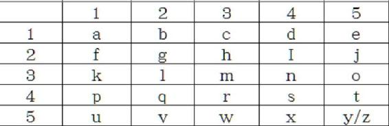

| 魔女の大暗号 (N-angou文庫) | |
| 八槻翔 | |
| (2017) | |
ご注意
本作品の全部または一部を無断で複製、転載、配信、送信、ホームページ上に転載することを禁じます。また、本作品の内容を無断で改変、改ざん等を行うことも禁止します。本作品にて使用されている画像または文章は予告なく変更される場合があります。
【序ノ章】 スキュタレー
夏の容赦ない日差しが、大きな部屋の小さな採光窓から入り込んでいた。部屋は豪奢で、煌びやかな調度品で溢れているが、開閉できる窓がなかった。窓は全てはめ殺しで、扉も開けたままにしてはならない。常に密室状態でなければならない部屋であった。
それは情報の漏洩を防ぐためであるが、夏は厳しい暑さに襲われる。大理石の床だけでは涼しさを確保できなかった。
所は、暗号解読局＝ブラックチェンバー内のエンリケーテの私室である。エンリケーテは皇族ながらシャリエッテ帝国が誇る希代の暗号解きであり、若くして暗号解読局の主任を努めている女性である。
エンリケーテは部屋の真ん中に設えられた革張りのソファーに座り、背中に控えた護衛役の鬼助に扇で扇がせ、テーブルを挟んで対面に座ったメイドのホーホーと手話で話をしていた。
〈そうそう、エンリ様。鬼助くんはもう立派に手話を使えるようになったわ。先生がきっといいのね〉
ホーホーはメイドの格好をしたうら若き少女である。奉公の身だがエンリケーテには妹のように可愛がられている。そして、護衛の鬼助に手話を教えたのはホーホーであった。先ほどの言葉はまさしく自画自賛。本人は音もなく楽しそうに笑っている。
春の暮れよりエンリケーテの命によって手話の学習が始まったが、鬼助の習得速度は速かった。一通り理解できるようになるまで一週間もかからなかった。もう数ヶ月で完璧に習得してしまうだろう。習得に三年かかったエンリケーテとは大違いだった。
エンリケーテは後ろを向いた。すると鬼助の刺青のある方の顔と目が合った。鬼助は半面だけに揺らめく炎のような刺青を彫っている。
元々は宮廷の近衛であり、皇帝の命により、春先にエンリケーテのもとにやってきた。剣呑でありながら温厚で、大柄でありながらどこか細身の、掴み所のない青年。東方の血筋である。
どれだけ手話が上達したのか、試しに鬼助に手話で話しかけようとエンリケーテは思った。が、彼の手は扇で塞がっている。大粒の汗を掻きながらエンリケーテに風を送っているのだ。その手を休めて欲しくはない。
彼は喋れる。エンリケーテは問いかけた。
「進捗はどうだ」
鬼助は扇ぐ手を止めずに答えた。
「おっしゃっていることが概ね理解できるまでにはなりましたが、感覚の違いやわずかな機微、そして会話のスピードを落とさずに手話を繰り出すことが難しいです。道半ばといったところでしょうか」
「仕方ない。ホーホーの手話は速いからな」
天衣無縫のホーホーの手話と比べると、鬼助のそれは縫い目が粗い。
ホーホーが鼻から息を吐いて怒っていた。この三人でいるときは手話を使う取り決めだからである。反対に部外者がいれば手話は使ってはいけない取り決めとなっている。この手話はホーホーの母親が考案した独自のもので、彼女たちの秘密通信の手段であった。
ホーホーは疎外感を覚えたのか、エンリケーテの視線が戻ってきたところで、力強い手話を放つ。向かい合っていないとホーホーとは話せない。
〈今は誰もいないし、たいした話じゃないんだから声に出さなくてもいいでしょ！ なんて言ってたの〉
エンリケーテは肩をすくめて、
〈進捗状況を尋ねただけだ〉
と流れるような手話で答えた。
〈それよりホーホー。その棒はなんだ？〉
ホーホーは膝の上に木の棒を抱えていた。そして、尋ねられると掲げるように持ち上げた。
〈いいでしょ。拾ったの。角張った感じもいいし、長さもちょうどいいし、武器にしようと思って〉
〈いったいどこからくすねてきたのか......。それはスキュタレーという古くさい暗号器具だ。まあ要らないから持っていってもいいが〉
〈スキュタレー？〉
ホーホーには馴染みのない言葉のようだった。
エンリケーテは後ろを向いた。鬼助と目が合う。今度は手話で尋ねた。
〈君は知っているか〉
〈――いえ知りません〉
と、鬼助は扇を扇ぎながら、もう一方の手を顔の前でさっと横に振るわせ、愁いを帯びた表情でそう答えた。手数は少ないが、振るう腕の余韻と申し訳なさそうな顔がちゃんと相手に言葉を――イメージを伝えていた。大分、上達してきている。エンリケーテはそう感じながら立ち上がった。スキュタレーを説明するための道具を探す。
「しかし軍人の君が知らぬとは信じがたい。軍事通信に使われていたものだぞ。まあ古代の暗号だが――」
そう言いながらエンリケーテは部屋の隅にある収納用の櫃を解錠して、上蓋を壁に立てかけるように開き、座り込んで中身を次々と取り出しては投げて目当ての物を探す。鬼助はその後ろにしっかりとつき扇いでいた。
「――あった」
エンリケーテが散々散らかして手にしたのは手のひらサイズの筒状の紙である。長い紙であるからそのように巻いている。
〈ちょっと貸して〉
そしてエンリケーテは踵を返し、ホーホーに手を差し出す。ホーホーは、そのオリーブ色で小さな手のひらにスキュタレーを預けた。
〈紙や皮をこのように巻き付けて使うんだ〉
五角形の木の棒に細長い紙をエンリケーテは包帯を巻くように斜めに巻いていく。木刀の柄巻きに似ている。
〈エンリケーテ様。いったい、それで、どうやって暗号に用いるのでしょう〉
たどたどしい手話で鬼助が尋ねる。
〈試してみようか〉
エンリケーテは奥の執務机に歩き、立ったまま机上のペンを掴みインクに浸すと紙を巻き付けたスキュタレーに文字を書いていく。スキュタレーは五角柱の木の棒であり、面が五つあった。
〈ほら〉
そう言って見せたのはただの文字の羅列である。文字がやや斜めに傾いているが、何気ない文章だった。文字は五角柱の五面に分かれて――改行するように――五文字ずつ書かれている。つまり、スキュタレーを回転させながら一行一行読まなくてはならないということである。
しかし文字や文章が暗号になっているわけではなかった。いったい何のためにこのようなことをするのか。鬼助はわからない様子である。
そんな中、手を叩いたのはホーホーだ。楽しそうに手話を振るう。
〈わかったわ！ ほどくのね。わたし頭良い！〉
エンリケーテは不敵な笑みを浮かべ、スキュタレーに斜めに巻き付けた紙をほどき、蛇のような長い紙をホーホーに差しだした。現れたのは、読み取れない文字の羅列である。斜めだった文字は紙に正対している。
〈つまりスキュタレーとは文章にスクランブルをかけるために使うもの。そして、ベルトに縫い付けたり、巻物のようにしたりして暗号文を運ぶんだ。転置式暗号の一種である。アナグラムも転置式暗号だ。このスキュタレーの場合、巻き付けなくても、四文字おきに読めば本来の文章が浮かび上がる〉
話の途中でホーホーはエンリケーテからスキュタレーを奪い、せっせと紙を巻き直している。そして文字が文章として読み取れるようになると満足そうに鼻から息を吐いた。
〈今、君が行なっていたのが復号化だ。受け手はそうやって文章を読み取る。だから送り手と受け手が同じ形のスキュタレーを持っていなくてはならない〉
ホーホーは聞いていない。目はスキュタレーを眺めていた。くるくると回している。
鬼助が手話で尋ねる。
〈しかしあまり暗号強度は高くなさそうですね〉
〈高くないどころかあってないが如し。転置式暗号の中では最下級のものである。敵に情報を盗まれないように転置式暗号を用いたというよりは、スキュタレーを鍵として使っていたと考えるのが最近の主流である。つまり伝令の持ってきた通信が自分の持っているスキュタレーの形と合わなければ偽の通信であると見破ることができる――それが主な目的だとされている〉
扉がノックされた。反応したのはエンリケーテと鬼助のみである。ノックの音はどことなく品があり、凛と部屋に響いた。
鬼助が扉を開けに行く。鬼助は軍人官僚であり皇帝の元近衛だが、メイドのホーホーよりもブラックチェンバー内では格下である。鬼助の特殊性とホーホーの特殊性がそうさせていた。
扉の前で待っていたのは西方系の女性――シルヴィアであった。やせ細っていて生命力をあまり感じられず、儚げである。肌は白粉を塗ったかのように白く、長い髪はブロンドで癖の全くない綺麗な髪であった。
エンリケーテの補佐を努める貴族の暗号官であり、シルヴィアもまた手話を扱える。この部屋に、ブラックチェンバー内でホーホーの特殊手話を扱える全ての人間が揃ったことになる。
〈エンリ様。いつまで休んでいらっしゃるのですか。早くお仕事に戻ってください。暗号文がたまっているんですよ〉
〈君が解けば良いだろう〉
〈私は復帰したばかりなのでそのような激務に耐えられません〉
シルヴィアは最近まで体調を崩していた。エンリケーテが自身の研究のために、仕事とは別に、難解な暗号であるヴィジュネル方陣をシルヴィアに解かせていたからである。シルヴィアは数ヶ月悩まされ、ついに倒れた。
シルヴィアは鬼助の手を見ていた。扇子を見ていた。やがて、言葉をそっと置くように尋ねた。
〈扇言葉でも教えていたのですか〉
エンリケーテは渋い顔をした。
〈手話もまだなのに、そんなもの教えるわけがない。ただ暑いから扇がせていただけである〉
〈扇言葉って？〉
とホーホーが尋ねる。
〈扇を使ったサインのことだ。西方の貴族の女性がこそこそと使う。彼女たちのものは恋愛に関することばかりだし言葉は多くない。しかし、言語体制を確立して昇華させれば、手話のように立派な視覚言語になる。まあ、ホーホーの手話で十分だが〉
〈それにしても、私のいない間に随分なじまれたのですね。鬼助様〉
そう言われた鬼助はシルヴィアに微笑みを返すだけであったが、どこか嬉しそうにしていた。
〈随分邪険に扱われていたもんね。鬼助くん、可哀想だったわ〉
ホーホーが表情や口、指などで言葉をそう紡ぐと、ふんとエンリケーテは鼻を鳴らした。鬼助を邪険に扱っていたのは他ならぬエンリケーテである。宮廷から派遣されてきたことに不審を覚え、そのような扱いになった。
〈今だって別に信頼しているわけじゃない。信用はしているが〉
彼女たちの物語の始まりは春の訪れから。
鬼助がブラックチェンバーを訪ねてきたときから始まる。
【一ノ章】 ブラックチェンバー
シャリエッテ歴一七一一年。草花が光り始めた春の侯である。
そこは街外れにある堅牢な建造物だった。外部からの侵入を拒むため、周囲を高い石壁がぐるりと囲み、深い堀が掘られている。跳ね橋の門には屈強な門衛が銃剣を手に左右に控えており、油断なく鋭い視線をあたりに投げかけていた。
シャリエッテ帝国が他国に誇る暗号解読局＝ブラックチェンバーである。国内外を問わずシャリエッテに流通する暗号文を秘密裏に解読するのが主な役目であり、その技術は他国を圧倒していた。
趣は小さな城塞。機密情報を扱う部局という特性ゆえか、宮殿と同じように警備は厳重であり、外部からの侵入だけでなく内部からの漏洩にも気を遣っている。元々は先帝故クリフザートの離宮である。
鬼助は懐に手を伸ばした。皇帝からの詔書を取り出すと門衛のところまで歩き、一礼をした。鬼助は皇帝の近衛である。ある任務のために、ここブラックチェンバーまでやって来ていた。
門衛が怪訝そうな顔をしたのは一瞬のことだった。鬼助の顔を認めると、驚愕の表情に変わった。青ざめたという表現の方がより正確かもしれない。
鬼助の顔は広く知れ渡っている。正確には、知れ渡っているのは、鬼助の顔の特徴と、彼の素性である。
「鬼......」
と門衛は呟いた。畏怖の念が声音にあったことは鬼助も承知していたし、驚きのあまり漏れてしまった言葉であることも門衛の表情から察していた。「鬼」呼ばわりも失礼とは取らず、いつものことなので気に留めなかった。
そもそも門衛が呟いた鬼とは〈号〉のことである。国一番の武芸者を指し、たいていにおいて皇帝の近衛であった。
鬼助の顔の右半分は鬼火が揺らめくような刺青が彫られており、これが彼の名刺代わりになっている。ブラックチェンバーの門衛とはいえ武人の端くれ、国士無双の剣の達人と称される鬼助のことを知らぬ訳がない。しかし、せめて鬼殿と呼ぶべきではあったが。
鬼助はもう一度礼をした。
「シャリエッテ皇帝から遣わされた鬼助という者です。暗号解読局主任――エンリケーテ様に、お目通りをお願いしたい」
東方訛りとはいえしっかりとした言葉遣い。そこに粗雑さはなく、詩人のように細やかな声音であった。刺青のない左半分の顔はとても柔和で、人を殺すどころか虫一匹殺せぬほどあどけない少年の顔であるが、鬼助はすでに齢三十を超えている大人の男である。
妙にちぐはぐな男だと門衛は鬼助のことを見ているに違いない。門衛が不審そうに片目だけ細めているのを鬼助は見つけていた。
鬼助は書簡を差し出した。
「陛下からの書簡でございます」
皇帝の署名が記されている。そして、事前に皇帝の使者がやってくることも知らせている。しかしまさか文官ではなく、あの鬼と呼ばれる男がやってくるなど門衛は思いもしなかったのだろう。
門衛は恐縮しながら鬼助から書簡を受け取るともう一人の門衛に目配せをし、空を仰ぐようにして大声で開門を指示した。
鬼助もそちらを見た。
城門の左右には円柱型の棟が城壁に組み込まれるように建っている。兵士の詰め所である。上階部分は外を見られるように外壁が等間隔にくりぬかれていて、駐在している門衛が外を監視しているのが見て取れた。
しばらくすると鎖を巻き弛める音と共に橋桁が下がり、橋桁と鎖で繋がっている重量のある木製の橋がゆっくりと降り始めた。中の景色が徐々に見えはじめる。
鬼助はかすかな胸の高鳴りを覚えていた。戦地に赴くようなそんな心地がして、なんて場にそぐわないものだろうと思った。
見える景色が増えるにつれ、無機質な建物がその正体を刻々と露わにする。鬼助の目に飛び込んだのは百戦錬磨の暗号官がひしめく暗号解読局＝ブラックチェンバーである。
――ここにあの魔女がいる。
最後はやや乱暴に、橋が落ちるように着地した。砂埃が舞い上がる。
「少々待たれよ」
とぶっきらぼうな言葉を残し、応対していた門衛はブラックチェンバー内に足早に入っていった。
当然だが、門衛は中にもまだ大勢いるらしい。すぐさま代わりの人物が出てきて門の前に立ち、閉門を指示した。こちらもまた腕の立ちそうな男だった。
門が閉じられ、跳ね橋がゆっくりと上がり始める。
風が強く吹いていた。
ブラックチェンバーはとても排他的な組織である。他人の秘密情報を許可なく盗み見ようとしているのだから無理もないが――その後ろめたさからなのか――まるで存在を隠すかのようにひっそりと街の郊外に建っているうえに、門衛すらも息を殺して警戒しているように見える。こうして城壁の外から覗いているだけでは、中に人は誰もいないのではないかと思えるほど静かだったが、ほとばしる熱気のようなものを鬼助は肌で感じていた。戦場で味わう感覚と似ていた。
今この中では、どのような攻防が行われているのだろうか。他国の外交官が秘密裏に送ってきた文書の暗号を解いているのだろうか。はたまた自国の商人が他国の官僚へ送った暗号化された手紙を盗み見ているのかもしれない。
しばらくすると門衛が戻ってきた。なにやら表情が曇っていた。
「エンリケーテ様はどうやら手が離せない案件を抱えていらっしゃる様子。書状は確かに渡したのでしばし待たれよ」
「かしこまりました。それではここで待たせていただきます」
鬼助は苦笑を禁じ得なかった。
急な来訪ではなく、事前に伝えていたことである。ましてや鬼助は皇帝の遣いである。まさかこのような扱いを受けるなど想像だにしていなかった。
しかしながら暗号解読局とはいつも時間に追われているもの。解読がその日までに間に合わなければどのような不利益を被るのかさえ定かではない。戦やクーデターを示唆したものであれば、その責任は計り知れない。そればかりか、ブラックチェンバー内は機密情報で溢れている。そんな場所で部外者を待たせたくないということも理解できる。そもそも、今日の来訪はこちらからの勝手な申し出なのだから無理は通せない。
鬼助が静かに待っている間にもブラックチェンバーに訪れる者がいる。シャリエッテ市内へと続く城門にあるブラックチェンバーの支部からやってきた局員なのか、あるいは外国からの出張帰りなのか鬼助にはわからないが、門衛と顔見知りの様子でも厳重な身体検査が入る。内部からの持ち出しなら鬼助にも理解できるのだが、外部からの持ち込みさえ許さないといった対応だった。これはどんな書状なのかと文官の格好をした責任者が詰問している。そして、確認を終えるとぞんざいに中に通していた。
やがて、太陽が赤みを帯びてきた。もうそろそろ日が沈む頃合いである。
いつまで待たされるのだろうと鬼助が思ったその刹那、「開門」という歯切れの良い声が城壁の向こうから聞こえた。門の開く音だけが聞こえ、跳ね橋がゆっくりと鎖を引きながら降り始める。
兵士を左右に伴いながら現れたのは背の高い妙齢の女性だった。金色の細い髪にややつり上がった碧い目。肌は白く、そしてやせ細っている。足下まで伸びる乳白色のドレスに透けるようなストールを肩にまとっていた。
こちらに歩みを進めるその所作から貴族の出であることはすぐにわかった。顔立ちからして、西方の血筋であろう。貴族の女性が暗号官など物好きだと鬼助は思った。よほど周囲を黙らせる才能があるか、周囲が呆れるほどわがままを言い通せるのか。おそらく、物静かで知的な外見から考えるに、前者であろう。
しかしながら彼女は目当ての人物――エンリケーテではない。エンリケーテはここシャリエッテの出身であり、大陸中央の血を色濃く受け継いでいる。肌は褐色に近く、髪は色素の薄い茶色で方々に撥ね、大きな二重の目はルビーのように紅い――。
「暗号解読局第一号室、副主任のシルヴィアです」
金髪の女性はそう名乗ってから続けた。
「エンリ様から言伝を承って参りました。『本日の面会は中止である。帰られよ』とのことです」
有無を言わさずといった調子でシルヴィアはそう言い切った。約束を反故にする体裁を整えるでもなく、ただ帰れとはあまりに不躾である。
鬼助は拳に手を合わせ頭をさげた。
「承服いたしました。お忙しいところ失礼いたしました。それでは、また後日改めて参ります。エンリケーテ様にもそうお伝え下さいますよう」
鬼助がそう返すと、シルヴィアは驚いた様子で口を少し開けていた。食い下がったり、嫌みの一つでも言われたりするものだと思っていたのかもしれない。有無を言わさず客人を追い返すなど、嫌な役目を仰せつかったとでも思っていたに違いない。
一方的に中止を言いつけたばかりか、次の日取りを決めないのは大変失礼なことである。これはまさしく門前払いである。今の鬼助は勅使というほど大げさな者ではないが、皇帝の遣いに対する礼を欠くどころの話ではない。そのような屈辱を鬼助は面前で味わわされたのである。
しかし、そのようなことで立腹する鬼助ではなかった。そもそもエンリケーテの性格は重々承知している。
出直そう、と踵を返しかけていた鬼助だったが、ふと思い立った。
「恐れながら、シルヴィア様。エンリケーテ様に言伝をお願いできますでしょうか」
「はい。なんなりと」
「鬼助は皇帝陛下の命により、エンリケーテ様の護衛として参ったと、そうお伝えください」
本来ならば直接会って伝えることであったが、隠す必要はないものであると鬼助は判断した。皇帝からの書状にはきっと委細は本人から聞けと書いてあるだけであろうし、おそらくエンリケーテは鬼助の来訪を違う意味で受け取っている。エンリケーテはやっかいな事態に巻き込まれたくなくて自分を追い返そうとしていると鬼助は思った。
「護衛ですか」
「はい。私に与えられた任務は、エンリケーテ様の御身を狙う輩からエンリケーテ様をお守りすることにございます。刺客が後を絶たぬと聞き及んでおります」
「あの鬼と呼ばれた鬼助様がエンリ様の護衛......」
シルヴィアは噛みしめるように言った。少し驚いているようだった。
「わかりました。確かに伝えておきます。また明日お越しください。時間は......」
「お忙しいのでしょう。朝から参ります。お手すきのときにでも、お目通りをお願い申し上げます。それでは――」
そう答え、鬼助がシルヴィアに会釈をしたその瞬間。
よい、と声が空から降ってきた。芯のある、そして険のある女性の声だった。
見上げてみると、声の主は兵士の詰め所の上階部分、外壁にくりぬかれた窓からこちらを見下ろしていた。視線は感じていたが兵士のものだと鬼助は思っていた。どうやら格式の高い女性に盗み見られていた様子。沈んでいく太陽の西日を真っ向から受けながら鬼助を睨めつけるように見つめていた。
緋色の衣装から見える褐色に近い肌は照り返し、色素の薄い癖のある髪は風に踊り、大きな二重の瞳は紅く反射していた。
彼女がエンリケーテである。
ここブラックチェンバーの最高責任者である。
そして、彼女がシャリエッテの魔女と呼ばれている女性である。
二
「名を聞こうか」
エンリケーテは非礼を詫びるどころか悪びれる様子もなく、鬼助に低く問いかけた。どうやら虫の居所が悪い様子。なぜかは鬼助にはわからないが、会った瞬間からエンリケーテの眉根には皺が寄っている。肌は若いが不健康的であった。
所はブラックチェンバー内、エンリケーテの応接間である。その先に扉があるがどのような部屋に繋がっているのか定かではない。元々は離宮なだけあって広く豪奢な造りだった。
日は沈んだばかりで、部屋の隅に灯台の火があるが、部屋は仄暗い。窓は全て黒の遮光カーテンが引かれ、外からの光を遮っている。正確に言うならば、外からの視線を遮っていた。
陶器のような壁や床は白く、灯台の揺らめく明かりを反射している。西方の造りの部屋に相応しくないオリエンタルな調度品で飾られていたが、おそらくエンリケーテの趣味であろう。
「鬼助と申します」
深々と頭を垂れた。鬼助は丸腰だった。軍刀は取り上げられている。鬼助は門衛に軍刀を預けると、屈強な兵士に挟まれながら、エンリケーテとシルヴィアに案内されるように、ここ――応接間までやって来たのである。迷路のような道筋だったが鬼助は一度で覚えることができた。こういうことは鬼助の得意分野だった。
兵士たちは入ってきた扉の向こうで待機している。何かあればすぐさま飛び込んでくるであろう。
エンリケーテは宝石類を身に着けていないものの衣装は眩い。金糸で植物模様を描いた、鮮やかな緋色の絹の綴れ織りは、高価な毛皮が裏地になった袷仕立てである。その前開きのガウンの下にゆったりとした絹のズボンを穿いている。シャリエッテ中央の貴族が好む服装であるが男性的であった。
エンリケーテは上座のソファーに座り、横にシルヴィアが控えるように立っていた。貴族であるシルヴィアがここまで従順なのはエンリケーテがブラックチェンバーの上官であるからだけでなく、エンリケーテが皇族の血を引く者だからである。エンリケーテは現皇帝とその第三夫人との娘であり、順位は低いが皇位継承権を持つ歴とした皇女である。そのエンリケーテの言葉を、鬼助は床に膝をつき面を下げたまま待っていた。
そして、エンリケーテは鬼助の刺青をじっと見ていた。
文字ではない。記号でもない。常人にはただの不可思議な模様にしか思えぬだろうが、エンリケーテはそこに意味を見いだそうとしているのか、髪を指先に巻きつけながらじっと見ていた。その姿が様になるほどエンリケーテの顔は端正で美しかった。
「......奇怪な顔だ。なぜそんな刺青を彫っているのだ」
「鬼になる者は代々、顔に揺らめく鬼火を彫るのです」
「相手を威嚇するためか」
「はい。自分を鼓舞するためでもあります」
「ならばなぜ半分だけ彫っているのだ」
「半人前だからでございます」
「一人前になれば、もう一つの顔にも彫るのか」
「おそらくは」
歯切れの悪い鬼助の返答に、「まあよい」とエンリケーテは冷たい顔で答え、そして、目を細めて鬼助の全身を舐めるように見る。
鬼助の服装はシャリエッテの軍服を基準としていたものだった。足下は細く絞られ、ボタンで留められていたり、亜麻製の生地の色やボタンの位置が違ったりなど細部に違いはあれど、紛れもなくシャリエッテの軍服であり、あまたの武器が放射状に伸びるシャリエッテの国旗が肩に刺繍されている。普通の軍官との違いは鬼助が高官であることを示していた。
しかしながら、長く伸びた前髪を後方に撫でつけて強く引き結ばれた鬼助の髪型はシャリエッテでは一般的ではなく、顔から襟元へと続く肌は小麦色で、これまたシャリエッテ人の肌の色と呼ばれるオリーブ色とも少し違う。さらに、一重の目は小さく鋭く、鼻は低く丸く、顎は細く小さかった。
「東方の出か。ヤポネ系だな」
「はい。祖父の代より皇帝陛下にお仕えしております」
ヤポネは東方に住む農耕民族の一つである。
シャリエッテ帝国の領土は三大陸に渡り広大で、多民族帝国を形成している。公用語はなく国教もないが、概ね国民はシャリエッテ語を話し、派閥はあれどシャフ教を信仰している。『緩やかな専政』と言われるほど他民族他宗教に寛容であるが、しかし、東方の出自がここ首都シャリエッテにいることは珍しい。しかも鬼助は中央政府の軍人官僚である。東方は直轄地であり、その地の有力者を太守とし治めさせている。東方の者が中央に出てくることはほとんどなかった。
「――まあよい。それで君は私の護衛になりにきたそうだがそれには及ばぬ。護衛は足りている」
それに反論したのはシルヴィアだった。
「しかし、エンリ様。ここの護衛では心許ないと常日頃からおっしゃっているのはエンリ様ではありませんか」
「言葉の綾でそう言ってしまっただけだ。ここにいる限りは安全である」
「そうもおっしゃってられませんよ。いずれ外に出なくてはならない日が参ります。また襲われたらどうするのですか」
ブラックチェンバーきっての暗号解きであるエンリケーテは、ありとあらゆる組織に命を狙われている。外出をしようものなら、たとえ護衛を引き連れていても、襲われるのである。奇跡的に今まで助かっているが、この先どうなるかわかったものではない。
「しかし、だからといって、こんな悪目立ちするような男を連れて歩きたくはない。魔女の護衛が鬼。どんな冗談だ。父上も過保護のあまり肝心なことを見落としている」
「と、おっしゃいますと？」
「たがたが三代仕えたくらいで、東方の者をどうして信用できるのだ。どんなに従順であろうとも、どんなに腕が立とうとも、こいつが内偵であるという疑いを私は消せぬ。過ぎたる力は危険である。こいつ一人でここを壊滅できるぞ。そして、単純にいけ好かない」
本人を前にしてもエンリケーテは少しも本心を隠そうとしない。思ったことを言葉にそのまま出している。
鬼助一人でブラックチェンバー内の人間を殲滅できると言いながらあまり警戒なく引き入れたのは、鬼助がこのような役目を仰せつかったのは皇帝の信任あってのことと受け取っているのかもしれない。しかしながら、シルヴィアはそこまで気が回っていなかったのかわずかではあるものの狼狽していた。
「まさか陛下からの派遣の身でそのような真似をするとは――」
「君は何人分の働きをする」
エンリケーテはシルヴィアの弁を遮り、鬼助に問いかけたが、言葉足らずと思ったのか、
「君は一人で私の護衛を賄えるほど強いのか、有能なのか、複数の敵に襲われたときに君はどれだけ防げる」
「いくらでも」
「ふざけるな」
「ふざけてなどおりません。百の敵ならば、エンリケーテ様を守りながら切ることができます。千の敵ならば、エンリケーテ様を守りながら逃げ出すことができます」
「ずいぶんな自信家だな」
「エンリ様のようですね」
とシルヴィアが横から口を出した。
「うるさい」
エンリケーテは、ひざまずく鬼助を見下ろして改めて問いかけた。
「万の敵であればどうなる」
その問いには鬼助は面を上げて答えた。
「私の命と引き替えにエンリケーテ様をお守りいたします」
その声音はまっすぐだった。吸い込まれるような鬼助の黒い瞳から逃れるようにエンリケーテは体をよじった。そのまま隣にいるシルヴィアに尋ねる。
「それほどまでに鬼とやらは強いのか」
「私も同じように閉鎖的なところにいましたから、詳しいことは寡聞にして存じ上げておりません。しかし、鬼と言えば、皇帝の懐刀。一騎当千、万夫不当の雄。ガリオン坂の戦いでは、わずかな近衛兵と共に皇帝に追い寄せる万の敵を追い払ったと聞きます」
「それは先代の鬼でございます。命と引き替えに、シャリエッテ皇帝をお守りいたしました」
エンリケーテは渋い顔をした。どうも実感が湧かぬようである。
「にわかには信じられぬが、それほどの者がなぜウチに来たのだ。君ほどの者ならば、それまでどおり皇帝の近衛でいるか、戦場を駆け回っておれば良いだろうに」
「エンリケーテ様のご不自由をご不憫に思われた皇帝陛下からの命により、馳せ参じました次第でございます」
「白々しい」
エンリケーテは鬼助の言葉をそのまま受け取らなかった。皇帝が何か企んでいると思っている。それはシャリエッテ帝国の政治形態に理由があった。
首都シャリエッテは三大陸の心臓部にあり、交通、流通の要衝であるというその土地柄から古来より東西南北の文化や人種が混ざる地域であった。各国各地域各組織からの秘密の情報が昼夜問わず集まってくる場所であり、対立派閥に情報が漏れないようにと秘密通信が発達し、多種多様の暗号が跳梁跋扈するようになったのは自然なことだった。
そのような地盤をして、暗号解読局＝ブラックチェンバーは作られたのだが、シャリエッテ皇帝とて大宰相を長とする帝国御前議会の承認なくして、秘密裏にここの情報を持ち出すことは叶わない。皇帝の権力は絶対ではないのである。常にせめぎ合いながら己の利権を獲得しようと躍起になっている。当然ながら皇帝にも欲しい情報があり、反対に漏れてはいけない情報があるであろう。
そういった事情もあり、エンリケーテは鬼助を不審がっている。この男は宮殿より用間として派遣された身に違いないとそう思ったのであろう。無論、すでにそのような者はブラックチェンバー内に潜伏しているが、どの人物がそれなのかエンリケーテは当たりをつけており、皇帝に渡る情報を押さえ込んでいた。ゆえに鬼助を派遣してきたのは、隔靴掻痒状態であった皇帝が講じた、姫を守るという建前の元、情報を取得する策に違いないとでも思っているのだろう。しかし、それでも国一番の武芸者をつけることはエンリケーテは理解できない様子。
エンリケーテは鬼助を睨みつけると、考えることを止めたようにため息を吐いた。
「......ここに君のような武芸者は必要ない。帰るんだ。そして二度と来るな」
エンリ様、と呼ぶシルヴィアの声も今度は届かない。
「二度は言わぬぞ。ここに君は必要ない。私にも必要ない。父上にもそう伝えよ」
ふんと鼻を鳴らすとエンリケーテは父である皇帝からの書状に目を落とした。どうやらずっと手に持っていた様子。
「委細は彼に聞け......。どんな難題を持ってきたのかと思えばこの私に護衛をつけるなど」
「心配されているのでしょう」
とシルヴィアが柔らかに微笑む。
「そんなわけはない。私が殺されても悲しむことはないだろう。娘はたくさんいるし、娘などまた作れば良いのだから。その証拠に今日の今日まで連絡などよこさなかった。よしんば悲しんだとしてもそれは暗号界の麒麟児を失った悲しみであろう」
「エンリ様」
とシルヴィアが宥めるが、エンリケーテはふてくされていた。そして鬼助を見ると、まだ居たのかと言わんばかりに手の甲を向けて二回ぷらぷらと振ると、「誰か」と叫び兵士を呼んだ。
鬼助は慌てて居住まいを正した。兵士が入ってくるが構わず言った。
「お待ちください、エンリケーテ様。皇帝陛下の命により、私はこうして参じたのであります。ここで引き下がるわけには参りません。どうかお側に置いていただきたく――」
「ならん。そもそも護衛が欲しいと言ったことはない。要らぬ世話だ。暗号官ならば話は別だが、君は見るからに愚鈍そうだし、武芸以外に何もしてこなかったのだろう」
「兵法は少し」
「兵法も武芸だ」
「算術も得意であります」
「そんなものは要らぬ」
「では、暗号官に必要なものとはなんでしょうか」
エンリケーテは渋い顔をした。なんとか追い返そうとしていたが、切り口を与えてしまったと思ったに違いない。
口を固く閉ざしてしまったエンリケーテに代わりシルヴィアが言う。
「一芸に秀でていればどんな方でも暗号官たり得ます」
すぐさまエンリケーテがシルヴィアの名を叱責するように鋭く呼んだが、鬼助はシルヴィアに問いかけた。当然、エンリケーテは分を弁えない鬼助を睨んでいる。しかし、鬼助も引くわけにはいかなかった。
「武芸はどうでしょう」
「あまり役立つとは思えませんが、役に立つこともあるやもしれません。エンリ様はああおっしゃいましたが、算術は言わずもがな。昨今の暗号解読界において、今や言語学者や考古学者よりも算学者が重宝される存在になっています。武芸の方も暗号解読に役に立たないとは決して申せません」
「武芸など役立つわけがないだろう」
とエンリケーテが口を尖らせて言う。そして彼女は息を吐くと呆れるように言った。
「わかったわかった。そこまで申すのであれば試しに解いてみるとよい。暗号を解くことができれば迎えてやろう。しかしだ、日が昇るまでに解くことができなければ、潔く去るのだぞ。わかったか」
鬼助は深く頭を垂れて礼をした。
「御意。機会をいただきありがたく存じます」
「愚か者。生粋の武人が今まで暗号官になったことはない」
厄介払いがこれでできる、とエンリケーテは笑っていた。
しかし、鬼助も笑っていた。
三
満天には大きな黄色い月が浮かんでいる。今宵は居待月である。
鬼助は一人ブラックチェンバー内にある中庭にいた。ブラックチェンバーの建物は俯瞰して見ると五角形の形をしており、それぞれの辺に各部局が割り振られている。その中心に建物全体の相似になる小さな五角形の中庭があって、どこの棟からも出てこられるような構造のため、反対の棟への近道にもなっているようだった。また、殺風景ながら中庭にはベンチが設えられており、どの部局の人間も使える憩いの場所ともなっている。
今は鬼助一人しかいないが、各棟のカーテンの隙間から灯台の明かりが漏れており、まだ働いている者がいるのは感じられた。それがいつものことなのか今夜だけのことなのかは鬼助にはわからなかった。誰かと出会うかもしれない。
しかし、仮に休憩に訪れた暗号官と出会えても、アドヴァイスは貰えない。シルヴィアには『何かあればお越しください』と言われたが、『自力で解くこと』とエンリケーテからきつく言いつけられている。
鬼助はエンリケーテに渡された一枚の紙を月明かりにかざしてみた。
とある貴族がとある貴族に宛てたとされる手紙である。しかしながら記されているのは数字の羅列であり、それだけでは全くもって意味不明である。実際に送られた手紙なのか、練習用の問題なのかはわからないが、これが暗号文であるということは、エンリケーテが試験として渡したものであるから間違いないだろう。
しかし、これをどうやって暗号化する前の文章――平文に戻すのか。ましてや何も道具を与えられていないのである。おそらくエンリケーテは鬼助がこの暗号を解くことができるなど露にも思っていないはず。むしろ解かせたくないのだ。鬼助を追い払いたいのである。だから何も与えなかった。
いや、エンリケーテが鬼助に与えたものはあった。鬼助にこの手紙を渡す際に、「これは基本的な暗号で古くさいものだが、万が一解いてしまえば魔女呼ばわりも覚悟せよ」と笑っていた。シルヴィアも笑っていたことから見ると暗号官には通じる冗談だったのだろう。
基本的な暗号で古くさいもの。これは手がかりになる。言い換えれば、この暗号は昔からよく使われていたものということ。ならば使い勝手もよく、一見暗号性も高いということに違いない。
手紙の宛先を見る。手紙の宛先がインブラム人であることから平文の言語はインブラム語で間違いないだろう。普通に考えれば、アルファベットそのもの、あるいは単語を数字に置き換えたものであろうと思われる。
いや、単語の暗号化ではない。なぜなら、インブラム語の単語に数字を割り振ったのであれば、その数は計り知れなくなるのだから、正規の受取人でも復号するのに時間がかかってしまう。この世に存在する全ての単語とまではいかなくても、日常的に使う単語を数字に置き換えるのだとしても、8はthat、121はTodayを示すといったコードが山ほど記されたコードブックが必要不可欠になる。そしてそのコードブックはとても分厚くなる。ましてやそれを紛失でもしたら情報は漏洩する。加えて辞書を引きながら文章を書くようなもので利便性にも欠く。そもそもこの手紙に使われている数字は二十種類にも満たない。
やはりこれはアルファベットを数字に置き換えたものであろう。基本的な暗号というエンリケーテの言葉とも合致しているように思う。
アルファベットは全二十六文字。一つ一つに数字を割り振ったのであれば、当然二十六種類の数字が必要になる。
しかしながら、アルファベット一文字を数字に置き換えたのだとしても、想定されるその種類は二十六の階乗通りもある。26×25×24×23×22×――と、ここまで考えて鬼助は計算を止めた。暗算ではとても計算しきれない。1まで下っていけば現れるのは天文学的数字である。
こんなもの、人間が割り出せるわけがない。神の領域である。鬼助にはそうとしか思えなかった。しかし、実際に解けるものなのだから、解読法があるはずなのである。
文脈から判断するしかないのであろうか。地道に当て嵌めては読んでみる。意味が通ればそれは正解で、通らなければ振り出しに戻る。それを繰り返していくのだろうか。
しかしこれでは到底解くことは叶わない。期限は明朝までということはその時間で解くことができるということだが、鬼助には一生かかっても解ける気がしない。
――エンリケーテ様の意地悪だろうか。
鬼助はエンリケーテの不敵な笑みを思い浮かべながらそう思った。
いや、エンリケーテは自分を追い返したいのだろうが、シルヴィアはそのような感じではなかった。もしエンリケーテが鬼助には絶対に解けぬ無理難題を押しつけているのであれば、シルヴィアが止めたであろう。
だから自分にも解けるはずなのである。
しかしどうやって。
もしこれが自分が先ほど考えたような暗号であれば、完全無欠な暗号としか鬼助には思えない。文字や単語を他のモノに置き換えた文章を、その『鍵』を知らぬ者がどうやって解き明かすというのだろう。たとえば、見知らぬ国に迷い込んで、見知らぬ人間と出会い見知らぬ言葉を聞いて相手の言っていることを理解するようなものである。確かに根気よく続けていればいずれ翻訳は可能になるであろう。しかし、人間ならば対応する言語を教えてくれるかもしれないが相手は暗号である。秘密にするのが仕事。教えてくれるわけはない。
この暗号文が、エンリケーテどころか、暗号官であれば誰でも解ける基本的なものであるなら自分には到底務まらない気がする。無論本分はエンリケーテの護衛であるが。
鬼助は少しだけ呼吸が速くなっているのに気づき呼吸を整えた。いつだって冷静さを欠いてはいけない。
手紙をもう一度見て、手がかりを探す。
こうしてヒントを探してみてわかったことだが、何か筆記用具のようなものがなければ骨が折れる。鬼助は辺りを見渡して、ちょうど良さそうな木の枝を拾い上げると地面に座り込み、石や枯れ木などを左右に払ってから砂のノートに書き始めた。
まずは、アルファベットをaからzの順に1から26の数字に置き換えてみる。当然だが、これでは上手くいかなかった。二十六の階乗通りもあるのだから、上手くいく方が奇跡である。しかしくじけるわけにはいかない。どこか一文字でも呼応するものを見つけられれば二十五の階乗通りになる。それを繰り返していけば――。
ふと鬼助は思いついた。確かに、この文章はアルファベット一文字を数字に置き換えたものであろう。しかし、平文は文章である。ならば、規則性というものが必ず現れる。なにも一文字ずつ暢気に解読する必要はない。いくつか繰り返されている数字群がある。それによく使われる単語を当て嵌めれば良い。そちらの方が効率的だ。
試しに、インブラム語の冠詞であるtheを当てはめてみる。三つの数字からなり、反復的に使用されているものから当たりをつける。
あった。146である。何度も出てくる。数えてみると、十一もあった。
1がt、4がh、6がe。the以外にもそれらを当て嵌めてみるが、それでも解読まではまだ遠い。そもそもtheが合っているかどうかさえわからない。ourなのかもしれない。youかもしれない。ひとまずtheを当て嵌めても虫食いのような状態から脱却はできていない。しかし、これが攻略法であろう。他にも規則性のある数字群はある。それによく使われる単語を当て嵌めてみる。
夜半にかけ風勢が強まっている。
しばらく月明かりの元、暗号解読に耽っていた鬼助だったが、扉の開かれる音がして面を上げた。扉が少しだけ開かれ、滑り込むように人影が現れる。
小柄で柔らかそうな女性だった。足下まである長いスカートの腰元をつまみ、慌てた様子で小走りしていた。視界に入っていないとはいえ、月明かりの屋外とはいえ、中庭の隅に座り込んでいる鬼助に気づく様子はなかった。
女性がブラックチェンバー内のメイド的業務に携わっていることは、格好を見るとすぐにわかった。白のシニヨンカバーでひっつめの髪を包み、黒色のロングドレスの袖を肘下までまくり上げ、白いエプロンに至っては、何かをこぼしてしまったのか、大きなシミができていた。
鬼助は立ち上がった。彼女にお願いしたいことがあった。もう半日、食事を取っていなかった。戦時ならば空腹は我慢できるが今は頭を使うとき。敵を前にしているのは同じなのだが、どうも空腹感に苛まれ集中できない。
「恐れ入ります」
そう声をかけた。自分でも驚くほどに夜間の静寂を打ち破ってしまう声量だった。
鬼助は視界外から声をかけることで、もしかしたら彼女を驚かせてしまうかもしれないと思っていた。だから半身になって刺青のない左の顔を向けて声をかけた。しかし、メイドはそもそも鬼助に気づかないようで、そのまま一心不乱に向こうの棟に走っている。
不審に思いながらも鬼助はもう一度声をかけたが、なぜか彼女の耳には届かない。部外者だから無視をされているとも思えない。そもそも全く聞こえていない様子。
しかたない。近づいて声をかけたり、肩を掴んだりしたら彼女は飛び上がって悲鳴を上げるかもしれない。もし騒ぎを起こされでもしたら、暗号が解ける解けないにかかわらず追い出されることになりかねない。空腹は我慢しよう。
鬼助は天を仰いだ。月が隠れ始めている。明かりもいただきたいが......。
扉がゆっくりと開かれる音がする。さきほどのメイドが、出てきた棟の対角線上にある向こうの棟に行ってしまったところだった。鬼助は恨みがましくそれを遠くから見ていた。
息を吐くと鬼助は再び数字の羅列の中から規則性を探す作業を始めた。
theを当て嵌めた次の単語は名詞であることから、名詞の語尾である、ing,tion,ness,tudeなどを語尾の方にとりあえず当て嵌めてみる。意味が通らなくても、数字に齟齬が発生しなければそれは正解の可能性があり、数字をアルファベットに置き換えることができる。パズルのようである、と鬼助は思ったが、いかんせん上手くいかない。幸先はよかったが、開かれる数字の種類が一向に増えない。使われている数字――アルファベットが似たり寄ったりなのだ。そもそも前提であるtheの代入箇所が間違っているのかもしれない。
ほどなくして先ほどのメイドが戻ってきた。小柄ながら忙しい女性である。腕に布を抱えて走っている。どうやら最初に出てきた棟に戻るようだった。鬼助のいる場所へと刻々と近づいている。鬼助は立ち上がり、服についた土を払うと彼女を呼び止めた。
鬼助の顔を認めると、メイドは瞠目して慌てて立ち止まり、手に持っていた布を落としてしまった。そのまま鬼助を前に固まる。闇から現れた体の大きさに驚いているようだった。
鬼助は腰を落とし布を拾い上げると土を払い、差し出した。
「怖がらせてしまい申しわけありません。怪しい者ではありません。宮殿より派遣された鬼助というものです。折り入って、お願いしたいことがあるのですが......」
返事はなかった。ただただ鬼助の目を見つめるだけで彼女の厚い唇から言葉が発せられることはなかった。
まだ年端のいかぬ顔をした素朴な少女だった。シャリエッテの血を色濃く引いていると思われる褐色の肌に大きな二重の瞳、くるんと反り上がった長い睫毛、丸みを帯びた鼻を中心にそばかすが散っていた。
エンリケーテよりもずっと若い。奉公にきているのだろう。
彼女はロングドレスのスカート部分のポケットから紙の束と懐中筆を取りだすと、『あなたは』とさっと書いた。そして、鬼助が事態を飲み込む前に、『私、話せない』と彼女は書いた。『ホーホーとよんで』『どちらさま』『どうしてここに』鬼助に視線を定めたまま次から次へと筆が走る。見なくても書けるようだった。つまりはいつもこうやって話しているということだ。
今度は鬼助が固まる番だった。呼びかけても反応がなかったのは耳が聞こえないから――。鬼助はそんなこと考えもしなかった。そして、なぜこのような聾啞の少女が、このような特殊な場所で働いているのだろうと不思議に思った。
鬼助は座り込み、砂のノートに自分の名を書いた。ひとまず最初の質問に答えることにした。
『き・す・け』
ホーホーの口が音に対応する形に変わった。しかし、音は発せられない。ニコニコと微笑んでいる。
鬼助は苦笑を浮かべて頷くことしかできなかった。
そして、ホーホーは鬼助の顔全体を見据えたまま、口を動かし、そして、手を動かした。何かを訊いている。いや、言っている、伝えている。
「手話はわかりません」
そう答えるしかなかった。
これは後でわかったことだが、実際は手話ではなくただのボディランゲージであった。だが鬼助にはそれすらわからなかった。
変な間が流れた。対応に苦慮しているのはお互い様だった。鬼助とて聾啞のメイドに食事の面倒や明かりの工面を頼むのは気が引けた。ホーホーはホーホーで、不審な男ではあるが、軍服を着ている客人を放っておくこともできないようだった。
助け船は一人の男性だった。ホーホーが最初に出てきた棟から肩を怒らせるようにやってきた。
すらりとした長身の男で肌の色は小麦色、撫でつけた短い髪の色は黒であるが、灰色の目と彫りの深い顔は西方のものである。中央地域あるいは南方との混血であろう。小さな丸眼鏡をかけているせいで三枚目に見えるが、よくよく見ると端正な顔立ちをしていた。
「......ホーホー。こんなところで油を売って何をしているんだ。君のせいで一歩間違えれば大切な書類が紅茶まみれになるところだったんだぞ。さっさと後片付けをしないか」
中空に投げかけられたようなその言葉は聾啞の少女に向けられたものではなく、鬼助に向けられたものだった。つまりは愚痴である。当のホーホーは――責められていることはわかっているようだし、本人にも想像できる内容だろうが――どこか居心地悪そうにしているだけで何の反応も返さない。
男は鬼助を見てにやりと笑った。
「失礼。彼女はホーホー。生まれつきの聾啞で、喋ることも話を聞くこともできない、憐れな少女さ。だが、これでもエンリケーテ様のお気に入りでね。この子の手話を理解できるのは、エンリケーテ様とシルヴィア様だけでね、いつも姦しく手でおしゃべりをしているよ。――申し遅れた。鬼助殿だね、話は伺っているよ。マイク・ウォーレン。暗号解読局二号室の者だ」
鬼助は頭を下げた。
「ウォーレン様ですね。鬼助と申します。以後お見知りおきをいただきますよう」
ふふとウォーレンは笑った。鬼助の刺青を見ても――鬼助の素性を知っているのだろうが――怖がる様子はない。それどころか気さくに話しかけてくる。
「こんなところで何を？ 暗いだろうに」
ホーホーも鬼助を不思議そうに見る。
「エンリケーテ様から出題された問題を解いておりました」
「問題？ どれどれ」
そう言ってウォーレンは鬼助の手紙を覗き込む。なぜかホーホーも覗き込んでいる。
「ははん。頻度分析だね。私なら三分で解ける」
――三分！
鬼助は驚きを禁じ得なかった。一生かかっても解ける気がしないこの暗号をウォーレンは三分で解くと言うのである。
それよりも、彼は〈頻度分析〉と言った。なんだろう、それは。しかし、尋ねるわけにはいかない。エンリケーテの耳に入れば鬼助はそれを口実に追い出される。
「教えてあげようか」
「ありがたいことですが、エンリケーテ様より、自力で解くようにと仰せつかっておりまして」
「そうかい」
「私にも解けるでしょうか」
「さてねえ。君に解けるかどうかはわからないけれど、もし予備知識なく解いたならば君には暗号解読の才能がある。この暗号は千年もの間、最強の暗号だと見做されていたものだよ。ちょっと前までは西辺境の大国エスパニールはこれを使っていた。まあ、解読法が編み出されてもう何百年も経つけれどね」
ウォーレンは地面を見た。鬼助の苦労の跡が刻まれている。
「よく見つけたね。theを当て嵌めるのは常套手段だ。このやり方でも解けるだろうけれど、正攻法とも呼べるものだけれど、これだと――これだけだと骨が折れるよ」
そしてウォーレンはホーホーを見た。彼女の腕から布を取りあげると、身振り手振りを交え、一語一語はっきりと発音するように口を動かした。
「後は私がするからもういいよ。次、あんな真似をしでかしたら、エンリケーテ様の怒りを買ってでも君を追い出すからね。そもそも私はお茶はいらなかったんだよ。勝手に注ぐのは止めてくれと何度も言っているだろう」
ホーホーは不満そうに頷いた。
ウォーレンはホーホーに手のひらを差しだした。何かをよこせと言っているのは、指先の動きでわかった。ホーホーは紙を差し出すと、ウォーレンはさっと何かを書いた。
「鬼助殿に明かりと筆記用具。それから飲み物を。次はこぼすんじゃないよ」
「恐れ入ります」
と、鬼助はウォーレンに礼を言った。気にするな、と言うようにウォーレンは肩をすくめた。
ホーホーにも会釈で礼をしながら、それにしても、と鬼助は思った。
ウォーレンはホーホーに対し普通に話しかけている。読唇術。ホーホーは口の動きである程度の言葉はわかるのかもしれない。
「食事は取ったのかな」
ウォーレンが鬼助に尋ねる。
「いえ」
鬼助が答えると、ウォーレンは筆を走らす食事と付け加えた。
「何から何まで痛み入ります」
「いちいち丁寧だね、君は。私は平民だよ。ましてやインブラムからの移民だ。四十四年戦争に嫌気が差してここに来たに過ぎない。まあ、悪い気はしないけれどね」
そう言われてみれば、少しだけ西方訛りである。移り住んで長いのだろう。
走り書きを読んだホーホーが鬼助に向き直り、笑みを浮かべた。言葉を出せぬから、かしこまりました、という情報を表情で伝えているようだった。
「夜中に申しわけありません」
鬼助も努めて表情を動かし、申し訳ないという感情を露わにした。普通ならば、言葉尻だったり、言葉の強弱や陰影だったりしてそのような感情を付加するが、ホーホーにはこのようにして伝えるしかない。だから、彼女も話し相手の顔をじっと見るのだろう。自分の顔を見る者と言えば、鬼火の刺青を気味悪がるか面白がる者くらいであり、このように純粋な視線を感じるのは久しぶりのことだった。
「それでは、鬼助殿。落ち着いたらお茶でもしようじゃないか。君の武勇伝を聞かせてくれたまえ。随分、強いんだってね」
そう言葉を残して去っていくウォーレンにホーホーが子どものように、あっかんべえをしていた。鬼助はそれを見逃さなかった。ホーホーは鬼助に向き直り、イタズラがばれた子どものように笑顔を浮かべた。そして、書き付けられたメモをポケットにくしゃっと入れると、小走りで去っていく。
一人になったと鬼助は思っていたが、それもつかの間、ウォーレンがなぜか戻ってきた。
「エンリケーテ様も人が悪い。君は手ぶらじゃないか。とても解けないよ。ここで解けと言われたのか」
「どういうことでしょう」
ウォーレンは頭をがしがしと掻いた。どう話せばいいか迷っているようだった。
「いいかな、君がその暗号を自力で解くことは不可能だ。誰かに、あるいは何かに協力を求めなければとても解けやしない。解読法を思いついても知識がなければ解くことは叶わないのさ」
「よくわかりません」
「そうだなあ。どんなに知恵を働かせても、その前提となる知識がなければ解けないということさ。風邪に効く薬を調合しようにも知識がなければ不可能だろう？」
「その通りでございます」
「たとえば、ホーホーの手話が暗号だったとしようか。鬼助殿。君は彼女の言葉が手話だとすぐにわかったはずだ。しかしその手話に対する知識がなかったから、彼女との対話は不可能で困っていた」
「おっしゃるとおりです」
「つまりは、シャリエッテ語を手話に置き換えるという――、実際はそうではないんだけれど、とにかく、手話という〈暗号アルゴリズム〉がわかっても、その手話についての知識を持ってないのだから、彼女が何を言ってるのかさっぱりわからない、解読のしようがない。知恵を振り絞っても無理なものは無理。彼女の手話は、表情や口型、腕や手などの動き――しかも、その速さだったり、大きさだったり、余韻だったり、を組み合わせる仕組みなのだそうだけれど、そんなことを知らない君は動く手ばかりを見て判断しようとするから答えにたどり着けない」
「おっしゃるとおりです」
「だから知識がいる」
「確かにそうかもしれません」
「鬼助殿。君は、その手紙の暗号アルゴリズムまでは気がついた。アルファベットが数字に換字されているということにね。ちなみに、文字単体を換えるものをサイファー、単語を換えるものをコードと呼ぶ」
ならば鬼助が解こうとしているものはサイファーである。
「そして、〈暗号鍵〉は送信者と受信者の取り決めなのだから、君にはどんな暗号鍵が使われているのかわからない。その暗号鍵を使わずにとくのが――」
「憚りながら」
わからない単語が出てきて鬼助は遮った。
「暗号鍵とはどのようなものでしょうか」
「鍵だよ」
「鍵――」
「キーフレーズ、キーワードと呼んだ方がわかりやすいかな。これを使って正当な受信者は暗号文を平文に復号するんだ。たとえばだけれど、施錠された宝石箱を離れた二人の人間がやりとりしていたとしよう」
「はあ」
「その宝石箱を開けることができるのは、鍵を持っている者だけ。送り手と受け手は鍵を持っているので容易に開けることができるけれども、泥棒である君は簡単には開けられない。宝石箱であればぶっ壊して中身を盗めばいいが、暗号文はそうはいかない。しかし、実際の鍵と違って暗号鍵は言葉で実体を持たないのだから、その数に限りはない。複製し放題だ。すなわち、当人らから暗号鍵を盗まなくても、暗号鍵を導き出すことができれば、宝石箱が開かれる。解読ができるということだね」
ウォーレンは息を継いだ。
「たとえば、jewelboxというキーワードを二人が暗号鍵にしていたとしよう。暗号プロトコルはだね、jewelboxを頭から順にaからzに置き換えていく、ただこれだけのことなのさ。jはa、eはb、wはc、と言った具合にね。このようにして暗号アルファベットを完成させる。これを単一換字式暗号（サイファー）と呼ぶ」
「しかし、アルファベットは二十六字ありますが」
「jewelboxは八文字だから足りないと言いたいんだね」
「はい」
「もちろん、二十六文字の暗号鍵もあるにはあるさ。しかしだね、それは鍵としては優秀かもしれないが、扱うのはお馬鹿な人間、長い暗号鍵は覚えられない。メモにしてしまえば機密性が下がり、暗号鍵の意味をなさない。だから、普通は短い暗号鍵を使うんだ。jewelboxの場合は、最後の文字であるxの次からは、アルファベットの順番どおりであるyを使ったりする。つまり、jewelbox yzabcde～と続いていく。すでに使っているモノ――この場合はeとbだね、すでに換字したものは飛ばす」
よっこらせと言って、ウォーレンは暗号文字とそれに対応する平文字を、枝を使って砂に描いた。
j-e-w-l-b-o-x-y-z-a-c-d-f-g-h-i～
a-b-c-d-e-f-g-h-i-j-k-l-m-n-o-p～
「とにかく、このようにしてアルファベットを暗号アルファベットに置き換えるのさ。もちろん暗号鍵以降のアルファベットの並べ方のルールは他にもある。aから始めるということもある。しかしだね、君が求めようとしている手紙はおそらくこういうものを用いられ作られたものということには変わりない」
「よくわかりました。しかし、送り手と受け手の取り決めであれば、暗号鍵は何でも良いことになりますね。そのようなものをどうやって導き出すのか皆目見当もつきません」
「やっていたじゃないか。規則性だよ。それを見つけるしかない。theを代入するなどして、ある程度暗号文字の平字がわかってきたら、暗号鍵を推測するんだよ。jewelboxの場合、jとかxとかは比較的判明しにくいが、他のモノはすぐにわかる。そこまで開けば後は楽勝だろう？」
確かにそうだ。
つまりは、暗号鍵を求めるのが暗号解きの肝である。それさえ解明できれば、当然だが、正当な受信者と同じように暗号文が解けてしまう。そして、その暗号鍵を求める際も、暗号化された全ての暗号文字を解き明かす必要はなく、ある程度、たとえば、aからgの暗号文字だけでも元の文字に直せれば、jewelboxという暗号鍵が浮かび上がってくる。そうやって鍵の部分の暗号文字を開いてさえしまえば、キーワード、キーフレーズの後に続く暗号文字も何かしらの規則があり――おそらくウォーレンが例として出したような覚えやすく簡単なものであり――予測できる。そうして、全ての暗号文字を平文字に戻すことができるのである。
「しかし、このくらいの手紙の分量ではなかなか厳しいけれどね。規則性を見いだすための文章が足りていないということもありえる。だから、私は頻度分析を使うものだと言ったんだ。これも使えばもっと簡単に解けるんだけどね」
「頻度分析......。先ほどもおっしゃっていましたね」
「そうだね。暗号官のもっとも基本的な技術と言っても良いもの。南方の、知識収集人とも呼べるワラクという職業の者たちが、他国の暗号化された文献を自国の言葉で図書館に収めるために編み出したとされる技法だ。今では暗号文に対して最初に試してみる手法にもなっている。これは画期的な手法で、先人の知恵で編み出されたものだけれど、しかしだね、莫大な知識が要るんだ。長くなったけれど、その知識を君は持っていない」
「そうですか」
もっと踏み込んでどのようなものなのか鬼助は尋ねたかった。しかし、自分の力で解けと言われた手前、訊けるわけもない。きっとその手法を導いて解くのが自分に与えられた課題なのだろう。
しかし、ウォーレン曰く、素人には決して解くことはできず、また、解読法を思いついても誰かに――おそらく暗号官に知識を借りなければならないとのこと。とはいえ、もしそのような真似を鬼助がすれば失格となり追い払われる。
「ここまで語っておいてなんだけど、自力で解くようにと言われたんだろう。ならば、この先は君自身の力で解くべきだ。せめて、解き方くらいは、エンリケーテ様に説明しなければならないだろう。きっとエンリケーテ様もそのつもりなんじゃないかな。わからないけど。ともかく、ヒントは十分、私は語ったよ」
「かたじけないです」
「じゃあ、そういうことで、さようなら」
「はい。ご教示いただきありがとうございました」
「たいしたことはしてないよ」
真面目だねえ、と言葉を残してウォーレンは今度こそ本当に去っていった。まだ残っている一仕事の為の準備運動なのか、肩をぐるぐると回していた。
四
頻度分析。
字面から想像するに、何かの頻度を分析するということであろう。では、何の頻度を分析するのだろうか。
文字あるいは単語の出現頻度に違いない。それ以外に候補はない。
この手紙に書かれている文字あるいは単語の頻度を導き出すということだろうか。しかし、分析とはその頻度をどのように何のために分析するのだろうか。
鬼助にはさっぱりわからなかった。
全体のうち、鬼助がtheと見做している146の出現頻度は十一である。全体で見ると五パーセントといったところか。しかし、このようなものを算出していったいどんな意味があるというのだろうか。単体で見れば、1が最も多く記されている。数えるのも大変だ。
頭を悩ましているうちに、ホーホーが何かを抱えるようにして戻ってきた。
まず差し出されたのはパン。ハムとチーズが乗っただけのものだったが、鬼助にはありがたかった。続いて、インクと羽ペン、そして紙の束、小さなランプ。最後に何かの本を渡してきて、それをベンチの上に置いた。
「ありがとうございます。助かります」
ホーホーはパンを見ると、「足りる？」と紙に書いて尋ねてきた。正直に言えば、鬼助には少々物足りなかったが、また持ってこさせるのも悪い。頷いておいた。もっと言うなら、飲み物を持ってくるのを忘れている。が、これだけ助けてもらって文句を言うなどあまりに無礼というもの。十分ありがたい。
「これはなんでしょう？」
鬼助は渡された本を手のひらで示して尋ねた。今の言葉を紙に書いた方が良いと思って、羽ペンに手を伸ばすが、ホーホーによって遮られる。
「役に立つ」とホーホーの筆が走る。
何の？ と尋ねるより先に、鬼助の質問を予期したのか、
「ヒンドブンセキ」
とホーホーはさっと自分の紙に書いて、朗らかに笑った。
なるほど。どうやら助けてくれるらしい。頻度分析の話はウォーレンの口の動きで気づいたのかもしれない。それにしても、メイドの彼女でさえ知っている手法なのかと鬼助は思ったが、先ほどウォーレンがホーホーとエンリケーテは仲がよいと言っていた。きっとエンリケーテから学んだのであろう。
鬼助は本を返した。
「せっかくいただいて誠に恐縮ですが、自力で解かなくてはならなくて、受け取れないのです。申しわけありません」
ホーホーはきょとんとしていた。鬼助の口の動きや表情だけでは鬼助の言っていることが理解できないというわけではなく、なぜ鬼助が拒否するのかわからないようだった。
「ヒンドブンセキに関する本ではない」
とホーホーは得心がいったのか、そう書いた。
「それでは、いったい何の本なんです？」
助けてくれるのではなかったのか、と思い鬼助がゆっくりと口を動かし、そしてはっきりと発音すると、「なんでもないもの」「意味のないもの」「ただの本」と、ホーホーは続けてすらすらと書いた。「役に立たないかもしれない」「でもないよりまし」と記し終えると、満足そうに鼻から息を吐いた。
「そうでしたか。それではありがたく頂戴いたします」
ホーホーは瞳を柔らませて頷いた。
この本を受け取るくらいでは反則にはならないだろう。ページをめくってみると、ただの伝記のようだった。インブラム語で書かれている。よくわからなかったが受け取っておこう。
ホーホーは鬼助の顔全体をぼんやりと見つめ、じっと待機していた。表情を動かし、手を持ち上げては、まるで禁じられているように言葉を紡ぐのを止めてしまう。
鬼助には手話は通じない。わざわざ限りのある紙に、限りのあるインクを使い記すのも憚れる。だから途中で止めてしまう。そのように鬼助は感じていた。あるいは、鬼助の作業を邪魔するのも悪いと思ったのかもしれない、と。
「もう長いのですか」
と鬼助は尋ねてみた。会話しても構わないという意を表明した。
しかし、ゆっくり言葉に出した短い文章なのにホーホーは理解できない様子。小首を傾げて固まっている。紙に書いてみたが、それでも理解できないようだった。
ホーホーは鬼助のペンをすっと取り、「何が」と書いた。
聾啞の者はこのような言い回しはしないのかもしれない。主語が抜けていたせいで意味が上手く取れなかったのかもしれない。「ここに奉公に来て長いのか」といった意味で鬼助は訊いたのだが、ホーホーにはわからなかったらしい。改めて文字を使って正確な文章で尋ねると、ホーホーは、「三年」と指で教えてくれた。
ホーホーが先天性の聾唖者であれば、我々の話し言葉を理解できなくても無理はない。そもそも同じ言語ではないのである。使う文字が同じでも、使う言葉が同じでも、聾者と話者の間ではどうしてもニュアンスは変わる。言語とは経験的に身についていくものであり、意味合いはその社会において変化するものだからだ。話者同士の社会でしか使わない言い回しは、特に慣用句などは、聾者には上手くその意味が伝わりにくく、場合によっては全く別の意味に取ってしまうこともある。シャリエッテ人とインブラム人が同じ言語を使って会話していても齟齬が生まれることがあるように、同じ言葉でも使い手によって含む範囲が違ったり、別の意味をなしたりすることがあるからである。【あなた】と【you】は対応する言葉であるが、しかしyouには複数形の意味もある。あなたたち――とシャリエッテ語では訳さなければならない場面がある。それと同じようなことだ。
ホーホーは鬼助の顔を指さした。刺青を凝視していた。
あまり怖がっている様子はないホーホーではあったが――鬼を意味する刺青とは知らないのかもしれないが――興味を持っていたらしい。
「恐ろしいですか」
ホーホーは顔の前で立てた右手を横にさっと動かした。違う、という意味であろうか。ホーホーは苦痛の顔を作って紙にさっと書く。
「イタい？」
「痛くはありません」
と鬼助は紙に書いて返事したが、敬語を使って文章を長くするくらいなら省略してしまいたい。おそらくホーホーもそのような理由で一見素っ気なく感じる文章を書いているのであろう。
「やけど？」
「イレズミ」
「イタくはなかった？」
返事をしようとした鬼助の筆が止まった。
刺青を彫られた際、痛くなかったと言えば嘘となる。しかし、痛かったと書けば要らぬ心配をかけるかもしれない。そちらの方向に話が進展するかもしれない。言葉で発するのであれば、声の陰影で印象を薄くできたり、すぐに取り繕えたりできるが、しかし、筆談ではそれが叶わない。字を書く速さを優先してしまい、印象を操作できるであろう、字の描き方や造形までは気が回らない。特に鬼助の文字は癖が強い。いや。
「すこし」
と書いて笑いかけた。
ニュアンスは表情で伝えれば良い。
ホーホーは嬉しそうに、そして満足そうに笑った。
「おもしろい字」
「そう？」
「絵みたいな字」
「よく言われます」
「今まではどこのハイゾク？」
「宮殿近衛隊」
「すごい」
「コウエイなことです」
「ここのハイゾクに？」
「そうなればいい」
「まだチガう？」
「これをとければかなう」
このような筆談を、顔を見ながら行なった。素っ気ない文章だが、ホーホーの無邪気さ、鬼助の真面目さは、表情で補えた。
「アンゴウカンになる？」
「兼ゴエイ」
「ダレの？」
「エンリケーテ様」
「よい」
「よい？」
「エンリさまにはミカタがいない」
鬼助は寂しさに襲われた。
やはりエンリケーテは護衛を欲しているのではないだろうか。そして優秀な手駒を求めている。それも鬼と呼ばれる武者であればいうことはないはずだが。
しかし、問題はその男――鬼助が信頼できるかどうかである。エンリケーテではなく、皇帝の命令に絶対であるならば使いにくいことこの上ないであろう。ましてや、間諜であれば。その疑いを晴らさなければ、たとえ暗号を解いたとしても鬼助を重く用いることはないだろう。
しばらくすると、ホーホーは立ち上がった。
「かえる」「たべて」
とホーホーは手を振って挨拶をし、パンを食べる仕草をしてそれを伝えた。そして、小さく首を傾げて微笑むと、建物の方に去っていった。
ふと、彼女には話し相手がいないのかもしれないと鬼助は思った。ウォーレンの言葉にあったように、ホーホーの手話を理解できるのはエンリケーテとシルヴィアだけであるならば、二人は皇族と貴族であり、このブラックチェンバーの中心人物であるということを考えれば、中々話す時間はないのかもしれない。
パンを手に取った。
彼女はシェフではなくメイドである。おそらく暗い厨房で、慣れない手つきでパンを切り、ハムとチーズを探し出して乗せてくれたのだろう。ありがたくいただくことにした。
すでに夜は更けている。月もいつの間にか雲に隠れ、朧気な明かりを差すだけであった。ベンチの周りの闇をランプの明かりがぼんやりと押しやっている。
鬼助はパンを食べながら、ホーホーから預かった本をめくってみた。どこにもおかしいところはない。やはり頻度分析の本でもない。
これが頻度分析の役に立つかもしれないし、役に立たないかもしれない、とホーホーは言っていた。いったいどういうことであろう。どう考えても役に立つとは思えない。
手紙の方へ戻る。
数字の羅列。インブラム語の暗号化。アルファベットを数字に置き換えるという換字式暗号。暗号鍵。theの代入。頻度分析。地面にも目をやる。
先ほど鬼助が出現頻度を出した砂のメモ。とりあえず、theと見做した146の出現回数が記されている。それを前提とするならば、1はtであり、その数を数えていたがあまりにあるので、数えるのを途中で止めてしまった。9とかは少ないのだけれど――
はっとした。
鬼助はホーホーから受け取った本の一ページ目をめくると文字を目で追った。そして確信した。ばらつきがある。文字は満遍なく使われるのではなく、偏りが出るもの。
現れる文字の回数を紙に書き始めた。
ようやくわかった。照らし合わせるのである。インブラム語で使われるアルファベットそれぞれの出現頻度と手紙の暗号文字の出現頻度を照らし合わせ、出現頻度が近いものは同じものである可能性があり、いくつかに候補を絞ることができる。たとえば、t,h,a,eなどの使用頻度はおそらく高く、反対に、q,z,x,jなどはインブラム語ではあまり使われていないはず。出現頻度が近いものは、同じものだと当たりをつけることができ、それをひとまず当て嵌めて、意味が通るまで候補を代入していく。
これが頻度分析である。
知識があれば、つまり、インブラム語のアルファベットの出現頻度がわかっていれば、単一換字式の暗号文を解くことなど造作もないことである。無論、出現頻度と合わないものもあるだろうが、それは開いた他の文字や、その文字が使われている別の単語から推測で解くことができる。そうしているうちに暗号鍵にたどり着くだろう。手紙の分量が少なくても、元の言語さえわかれば、頻度分析で解ける。
しかし、鬼助には肝心のその、すでに算出済みの、基準となる頻度分析表があるわけではない。これが、ウォーレンのいう莫大な知識であろう。
今からそれを作り上げなければならない。ホーホーから預かった本をめくりアルファベットの出現頻度を割り出さなければならない。難しい作業ではないが、時間がかかる。日の出までということを考えれば休憩する暇はない。
本来ならば、本一冊程度の出現頻度を基準にするのではなく、多くの文献や新聞、手紙などから出すものなのであろう。だから、ホーホーも役に立たないかもしれないと言ったのだ。
しかし、これに縋るしか方法はなさそうだった。鬼助は無心で最後のページまで統計を進める。
本一冊の出現頻度を出し終えたのは、遠くの空が白んだころだった。これから、手紙の暗号と照らし合わせなければならない。
五
国営事業である郵便業務は朝一番から行われる。各国、各地域から送られてきた郵便物がシャリエッテの正門郵便局に届くのである。
暗号解読局の暗号解読官および速記官もそこに詰めている。各国の大使館や、自国の議員や軍人などに当てた手紙を片っ端から開封し写しを取り、暗号の有無を暗号解読官が確認すると、そこの人間だけでは解読が叶わぬ場合は、暗号解読局本部――ブラックチェンバーに送られる。
開けられた手紙はと言うと、何食わぬ顔で再び封緘され宛先へと運ばれる。こうして秘密の情報をブラックチェンバーおよびシャリエッテ帝国は取得し、情報戦で一歩先に進んでいるのである。
これが暗号解読局の主な業務の一つである。
すなわち朝は忙しい。エンリケーテは業務に忙殺されすっかり鬼助のことを忘れていた。
本来ならば、暗号解読官の長たるエンリケーテが朝の業務をすることはないが、今朝は下の者が解けぬ暗号がやって来ていた。正午までに解読しなければ、本当の手紙は宛先へと配送されてしまう。それがもし渡ってはいけない情報であった場合、その後の対応が苦しくなる。なるべく早くに手を打つためには、手紙を押さえている時間内に情報を取得せねばならぬのである。
エンリケーテに回される暗号は重要度の高いものかつ難解なものだけ。いわば、エンリケーテは最後の砦であった。彼女が解けないものはブラックチェンバー内の誰もが解けないものであり、解読は不可能であるもの。しかしながら、今回の暗号は特に難しいものでも珍しいものでもなかった。頻度分析対策として編み出された、出現頻度をなだらかに見せるホモフォニック換字式暗号と呼ばれるものだった。単純な換字式暗号よりも解読に時間がかかるが、不可能な代物ではない。腕のある暗号官ならば容易に解き、エンリケーテには造作もないことである。無事、正午までに解いてしまった。
ホーホーが暗号解読局第一号室にやってきたのはそんなときであった。エンリケーテはホーホーを妹のように可愛がっており、メイドであるが相談役のように扱っている。
〈ホーホー。よく来た〉
暗号解読局一号室の奥は隠し部屋のようになっており、エンリケーテ専用の小部屋がある。本人にも何かわからぬ書類の山や暗号解読に使う器具が散らかる、カーテンやブラインドで覆われた薄暗い部屋である。
欅で設えられたアーチ状の木片をスライドすることで、机上を隠すようことができる執務机。鍵をかけることができるが、物理的な鍵はあまり信頼できる代物ではない。人が訪れた瞬間にさっと机上を隠す用途でエンリケーテは使っている。そこに座っていたエンリケーテは、いつものように訪れてきたホーホーに手話で話しかけると同時に蓋をスライドさせ机上を隠した。
〈エンリ様。お客様よ〉
とホーホーは手話で言葉を紡ぐ。
エンリケーテは眉を顰めた。
この手話を人前で無闇に使うのは、エンリケーテは禁じている。この手話は、ホーホーの家庭で作られたものであり、しかしながら聾唖者の家庭で使っているような五十語ほどのホームサインとは一線を画するものだった。言語体系として確立しているのである。加えて、ホーホーの家庭内でしか通じない独特のものであり、最近とある神父によって聾啞学校が建てられているが、それらで教えられる一般的な手話と違う構造のものであった。
すなわち暗号性が高いのである。そんなことから、エンリケーテはホーホーの手話を三年がかりで覚え、腹心であるシルヴィアにも覚えさせ、三人あるいは二人で密談をしていた。無論、それを使っている姿を見せてしまえば、暗号官であればコードブックを作ってしまうだろう。ゆえに密室で使うことを基本としている。
それまでは、声を出せば何者かに盗聴される可能性があり、筆談を行なえば紙に書かないといけないという手間と、残った文字を確実に処分しなければならないという危険性があったが、ホーホーの手話はそれらを解決した。
ゆえに、ホーホーの手話の暗号強度が低下することを危惧し、使用を制限させているのである。
今日のホーホーは鬼助を連れてきていた。その前で手話を振るったことになる。こういうことはホーホーはよくあった。ちょうどウォーレンが紙の束を手に入ってきたところでもあった。ウォーレンは鬼助のことをちらりとも見ようとしなかった。
十名足らずの暗号解読局一号室に部外者が通過したにもかかわらず――その中にはシルヴィアがいたが――誰も作業を止めることはなかった。それだけ忙しいのである。
エンリケーテだけが腕組みをした状態で男二人を睨みつけていた。
「エンリケーテ様」
と最初に声をかけたのはウォーレンだった。
「お手すきでしょう？ 私の手には負えなくて」
ブラックチェンバーは五角形の建物であり、それぞれの棟（辺）には一から五の数字を割り振られた部屋がある。そこが暗号解読室である。暗号室の数字が小さくなるほどそこに所属するメンバーは有能であり、数が大きいほど能力や信頼が低いことを表している。下の暗号室の者が解けなかった暗号は上の暗号室へと回される仕組みである。
「またか」
とエンリケーテはウォーレンに毒づいた。先ほどの暗号文を持ってきたのも彼だった。
「ホモフォニック式暗号も解けぬとは知らなかったぞ。三号室に降格するか」
「ご冗談を」
「冗談ではない」
「しかし、ホモフォニックでしたか。一応、私もやってみたんですがねえ」
「冗字があった。ただそれだけのこと。このようなことで欺かれるとは貴様の腕も地に落ちたものだ」
「冗字。ははあ。意味のない文字がありましたか。私もその線で行ったのですけれどねえ」
「ノーメンクラターの応用である。コードと冗字、そしてホモフォニック式暗号が使われていたもので――もしや貴様、面倒事をこの私に押しつけたのではあるまいか」
「滅相もございません」
「君は軽薄だから信用ならぬ」
そこまでエンリケーテは語って、ホーホーを見た。後ろに控えるようにして大男が立っている。鬼助である。
「解けたのか」
問うと、鬼助は床に膝をつき面を下げた。
「滞りなく完了いたしました」
「見せよ。途中の式もあればそれも」
鬼助は腰を落としたままエンリケーテの元まで音もなく歩き、そして紙の束を差しだした。エンリケーテは受け取ると雑な手つきで次々とめくっていく。
「頻度分析に、代入法」
エンリケーテは手紙から顔を上げて、ひざまずく鬼助を見た。
「自分の力で解いたとは到底思えぬが。誰の力を借りた」
瞬間、空気が凍った。ホーホーもウォーレンも息を飲んでいる。
「シルヴィア」
とエンリケーテが向こうの部屋の部下を呼ぶ。シルヴィアはすぐさまやって来た。
「君が手助けしたのか」
「いえ。鬼助様が頻度分析という手法に気づかれ、頻度を出すために書籍などを欲すれば渡すつもりでしたが、彼は来ませんでした」
エンリケーテは鬼助を見る。
「説明を。誰の助けもなくどうやって解いたのだ」
もし誰かの手を借りているのであれば鬼助は失格である。そしてそれを口実に追い出すことができる。
鬼助は拳に手のひらを重ね、頭の前に掲げた。
「ウォーレン様とホーホー様のご助力をいただきました」
「鬼助殿！」
とウォーレンがすぐさま声を飛ばしたが、鬼助は面を下げたまま二の穂を継いだ。
「しかしながら、ウォーレン様、ホーホー様の御両名は困っていた私を見かねて手を差し伸べただけであり、詳細は存じておりませんでした。悪意はございません。お二人に責任をお求めにならぬようお願い申し上げます」
「ふん。怠け者のウォーレンはともかく、ホーホーを罰することなどない。ウォーレンは良い機会だから三号室に降格させよう」
そんなあ、と声を上げるウォーレンの言葉と、その言葉で緩んだ空気をかき消すように、しかし、とエンリケーテは力強く言って鬼助を睨めつける。
「最初に言ったはずだ。自力で解かなければ追い出すと」
「はい。承知しております」
「......正直は美徳でも思っているのか。それを私が評価するとでも。嘘もつけぬ男など要らぬ。君は暗号官に向いていない。約束だ、去ね」
「去りません」
「去れと言っている」
「去りません」
「叩き出せ！」
とエンリケーテの命が兵士に飛ぶ。兵士は暗号解読室の入り口にいた。
槍を携えた兵士たちがエンリケーテの小部屋に入ると、恐る恐る鬼助の元に行き、鬼助の体を掴んだ。しかし、体を起こすように動かそうとするがびくともしない。二人がかりでも結果は同じであった。まるで根を生やした銅像のようだった。しかし、重いのではない。強いのである。エンリケーテはその様を不思議そうに見ると同時に、鬼と称される鬼助の本領を垣間見て恐ろしく思った。
「――エンリケーテ様。恐れながら私は暗号官になるためにここに参上したのではなく、エンリケーテ様の御身をお守りする護衛として参上したのです」
「君に守られる必要はない」
「しかし、私以外に御身をお守りできる人物はいない様子。御身は御身だけの体ではございません。どうかお側に置いていただきますようお願い申し上げます」
「要らぬと言っているだろう！」
エンリケーテは声を上げると、部屋を飛び出してしまった。去らぬならこちらから去るまでだ、と言わんばかりであった。そのまま肩を怒らせて廊下を歩く。
ホーホーが追いかけてきていることは気づいていた。音を知らぬからか、彼女の足音は独特で大きい。
人目を十分に確認してからエンリケーテは空いている部屋に入る。示し合わせたかのようにホーホーも遅れて部屋に入る。
資料室である。様々な資料が書架にささっている。
人がいないことを確認し、エンリケーテは書架に寄りかかる。ホーホーが顔を見て手話で話しかけてきた。
ホーホーの手話は速い。表情や口の形、腕と手の動きで、情緒豊かに話しかけてくる。文章だとぶっきらぼうな彼女だが手話だと感じは変わる。無論、その手話を受け取っているのは、イメージを受け取っているのは、エンリケーテであるが、おそらく言葉にして実際に話していればこのような話し方であろう。
〈もお。エンリ様。雇わないの？ 強い人が欲しかったんでしょう？〉
〈しかし、奴は宮殿から派遣された者だ。何を企んでいるかわからない〉
〈悪い人じゃないわ〉
〈なぜわかる〉
〈顔を見ればわかる〉
ホーホーが言うと説得力が違う。彼女は相手の気持ちや感情を表情から読み取る能力に長けている。だから、声を使わずに会話ができるのだ。物心ついたころからずっとそうやって生きてきた。
〈しかし、奴が密命を帯びてきたのは間違いない。よしんば彼が悪人でなかったとしよう、しかしながら宮殿の命であれば悪に手を染めるにちがいない〉
〈それなら尋ねたらいいわ。あなたは密命を抱えているのかって〉
〈どうして〉
エンリケーテは鼻で笑った。
〈彼は嘘をつけないもの。正直者よ〉
〈そんな馬鹿な〉
〈顔に出るの。あたしが見てあげる〉
〈そういうことか〉
少し迷ったエンリケーテだったが、ホーホーに鬼助を呼んでくるように頼んだ。
エンリケーテとて自身の置かれている危険性を承知している。外に出れば襲われる。今はこのブラックチェンバー内も安全だがこの先どうなるかわからない。刺客が潜り込んでいればどうやって対処するのか。鬼が魔女の護衛となったと噂が立つだけで未然に防げることもあるだろう。しかし、その肝心の鬼がもしその刺客であれば、為す術はない。
とはいえ、彼は宮殿から直接派遣されてきた者。徹底的な身辺調査を通った栄えある近衛兵であり、鬼の号を持つ男。宮殿が調べ上げたのだから素性はしっかりしており、思想や素行に問題ない男であるはず。そもそも三代仕えた家系。あからさまなことはせぬとは思うが。
それに近々、人目を忍んで行かなくてはならない場所がある。護衛をぞろぞろと引き連れたくはない。もし鬼助がこちらのものになるのであれば――。
ホーホーに連れられて鬼助がやって来た。
東方の血を引く大柄な男である。半面だけ炎の刺青が踊っている。愚直な男というのがエンリケーテの彼に対する印象であるが。
エンリケーテは、かしずく鬼助に問いかけた。
「単刀直入に聞こう。君の目的は何だ。皇帝に何を頼まれた。言え」
「皇女の御身をお守りすること。そして、皇女の力になること」
エンリケーテはホーホーの顔を見て、どうだ、と手話で尋ねた。鬼助は下を向いている。
〈嘘は言っていないわ〉
というのが彼女の返答だった。
エンリケーテは鬼助に視線を戻す。
「情報を回すように命令されたのではないか」
「そのような御下命は賜っておりません」
「ならば、私の命を奪うように言われたのではないか」
「そのような事実はありません。それどころか、必ず守り抜くようにときつく仰せつかっております」
確かに、父が――皇帝が、自分の命を狙っても何の得がない。ましてや、他国を圧倒する暗号解読力を有するエンリケーテを失う損失の方が大きい。となれば、優位性を失わないために、護衛として鬼助を派遣してきた理由も納得できる。
ホーホーも、問題ない、と笑っている。
――情報目当てかもしれないが、情報くらいくれてやるか。
「......仕方ない。君をこのブラックチェンバーに迎えてやろう。しかし、私の命令は絶対である。今この瞬間より私の命は天命よりも上である。破るようなことがあれば命はないものと思え」
「かしこまりました」
拳に手を当て、鬼助は深く礼をした。
しかしエンリケーテの心の靄は晴れず、嫌な感覚は拭えなかった。
何か悪いことが起きる。そう思えてならなかった。
【二ノ章】 ステガノグラフィ
鬼助がエンリケーテの護衛として、そしてエンリケーテの直接的な部下として暗号解読局局長付きとなってから一週間が経った。当初は暗号解読局五号室に暗号官として配属されるとのことだったが、鬼助が固辞してそのような形となった。
ホーホーとウォーレン以外の人間は鬼助に対して素っ気なく、あるいは鬼助を危険視しているようであった。特に兵士たちの緊張はすさまじく、殺気をみなぎらせながら鬼助を四六時中監視しているありさまだった。
鬼助が常に手すき状態であったこともそれを増長させたように思う。エンリケーテの傍にいたかった鬼助ではあるが、「暗号解読の邪魔である」と部屋にすら入れてもらえない状態であった。言外に、鬼助に秘密情報を晒したくないという気持ちがこもっていたことも鬼助は察していた。まだ信頼を勝ち取れていない。
鬼助は、エンリケーテが朝からこもっている暗号解読一号室前の廊下に待機していた。どうやら今日はエンリケーテの手腕が必要となる暗号がやって来たようである。
扉の脇に立つ兵士らがこちらをじっと見ているのには気づいていたが、こちらとて任務である。譲る気は一切なかった。
エンリケーテが命を狙われていることは紛れもない事実である。
三百年もの間、破られなかったレオンギオンの大暗号をエンリケーテが解いて以来彼女の名は暗号界に轟いている。レオンギオンの大暗号は、レオンギオン十四世が軍事通信に使っていた難攻不落の暗号であり、彼とその暗号官の死後、その暗号を使いこなせる者が消えてしまい歴史に埋もれていた。幾多の暗号解読者や考古学者などがレオンギオンの大暗号に挑んだが一人残らず撃沈し、三百年という長い時を経て、エンリケーテが十四歳の時に解かれたのである。これ以降、エンリケーテは数々の暗号を解き明かすことになり、シャリエッテの誇る暗号解読局＝ブラックチェンバーの頂点に君臨している。
そして、そのエンリケーテが今取り組んでいるのが、新たな暗号の作成である。ゆえにこれを完成されると敵対組織はまたしても苦汁を飲まされることになる。ましてや暗号解きとしても優秀で、どんな暗号でも破ってしまう彼女の頭脳には各組織、手を焼いていた。エンリケーテを排しようという動きは自然のことであった。
その凶刃から身を守るのが鬼助の役目である。いずれは鬼助を隊長とした親衛隊のような隊を作りたいと思っている。そして、あらゆることを想定して訓練を行っていきたいと考えているが、いつのことになるやら。エンリケーテどころか、兵士たちからも信頼を得られていない有様だ。
「貴殿が鬼助殿か」
と、柔らかな声音。向こうから歩いてきていた見慣れない兵士である。その人物がブラックチェンバーの警備隊の隊長クラスであるということは、その格好からすぐにわかった。薄くではあるが、無精髭を生やしたずんぐりとした中年男性であり、東方系の出自かと一瞬思ったが、シャリエッテ系統の濃い顔立ちをしていた。
「ロワンと申します。こちらで何をされておられるのですか」
「エンリケーテ様をお待ちしております」
「いやいや。貴殿ほどの腕前をお持ちの方が、皇族とは言え、暗号官のお世話など......。どこか怪我でもされているのか」
「万全です」
「そうですか。それならばよかった。我らだけでは力及ばぬことが多く――。エンリケーテ様をよろしく頼みます」
ロワンはそう告げると持ち場に去っていった。
珍しく鬼助に好意的な兵士であった。
暗号解読局という名称でありながらも、新たな暗号を生み出す暗号作成室もあった。こちらも厳重な警備と検閲があり、鬼助は近寄ることすら許されなかった。
エンリケーテが朝の業務を終え、そちらに向かうというので鬼助もついていった。移動中はエンリケーテは傍に居ることを許す。
「随分暇のようだな。タダ飯食らいは要らぬぞ」
本来護衛というものは無駄であることがよいとされる。つまりは、敵から護衛対象を守り切ることよりも、そもそも襲われないということが一番である。しかし、襲われなかった場合、護衛あるいは護衛費は無駄だと思われがちだが、エンリケーテの命が奪われてから護衛を派遣してもそれこそ無駄なことである。無論、エンリケーテも重々承知の上であろう。つまりは、前口上である。
「君は私の護衛の一人ではあるが、局長付きでもある。検問に人が足りておらぬそうだ。しかしながら派遣する者がおらぬ。無視しようと思っていたが、暇なら君が行って手助けしてこい」
シャリエッテにやってくる秘密通信は何も郵便経由ばかりではない。直接運び込む者がいる。それを捕らえるのが暗号解読局検問部の役割である。
「かしこまりました。しかし、勤まるでしょうか」
「何もこの前のように暗号を解けと言っているわけではない。むしろそのような暗号文は検問では稀である。ステガノグラフィと呼ばれる、存在そのものを隠すタイプの秘密通信が主流だ。不可視インクの手紙だったり、一見模様に見える刺青だったり、体や荷物のどこかに隠している。そういうのを見つけるのは君は得意そうだ。武人特有の直感でなんとかしたまえ」
「見つけてどうすればいいのでしょうか」
「そこいる検問官にでも渡せばいい。私も行ったことがないから詳しくは知らぬ。ともかく怪しい人物がいれば厳しく調べ上げよ。秘密通信の証拠があれば君の手柄だ。なければ君の失態となる。私の顔に泥を塗るような真似はせぬように」
「かしこまりました。しかし、エンリケーテ様の護衛はいかがいたしましょう」
「要らぬ。このブラックチェンバーにいるかぎりは安全である。すぐに向かえ」
エンリケーテは鬼助に手紙を渡した。したためてあった書状である。暗号解読局局長エンリケーテの署名が入っている。
「出入管理局には話は通してある」
「御意」
ふんとエンリケーテは鼻を鳴らし、そそくさと歩いていく。鬼助は暗号作成室までエンリケーテに先導されるような形で護衛するとエンリケーテと別れ、その足でブラックチェンバーの城門まで向かうことにした。
五角形の建物という構造のせいか、各辺の連接部分は廊下が折れ曲がる。窓はほとんどなく、あっても採光のためのはめ殺しである。看板もなく、景色も変わらない。同じところをぐるぐると回っているような感覚を覚えるが、採光窓から見える太陽の位置と今の時間を照らし合わせ、ブラックチェンバーの出入り口である南に向かった。
そして、廊下の切れ目には落とし格子が吊り上げられてあり、有事の際は落として道を塞ぐことができるようになっていた。鬼助が向かう先々でこのような落とし格子に捕まった。
つまりは通っていい場所が時間によって決まっているのである。結局、来た道を戻り、その先で出くわしたホーホーに案内してもらった。言葉を交わすことも、筆談を交わすこともなかったが、不思議とこちらの意図が伝わった。ホーホーはどうやら建物に紛れ込んだカエルを捕まえていたらしく、それを中庭の池に投げ込むと鬼助を案内してくれた。
外に出て、城門が見えるところまで来るとホーホーと別れた。どうやらホーホーも一緒に外に出たいようで鬼助に向かって口を膨らましていたが――後で聞いたところ外出は年に数回しか認められていないらしい――彼女を連れていくわけにはいかなかった。
ホーホーは渋々と言った表情で踵を返して仕事に戻った。時間に余裕があればこの前のお礼も兼ねてお土産でも買っていこう。そう鬼助は思ったが、このブラックチェンバーがそんなことを認めるわけがない。
鬼助は歩みを進めた。
城門にある兵士の詰め所――ここが、ブラックチェンバー出入管理の部局である。責任者にエンリケーテからの手紙を見せると、身体検査といくつかの問答を済ました後、鬼助は外に向かった。
ブラックチェンバーの城門は、半円形の防御用の甕城を伴っている。端的に言えば、城壁が二重になっているのである。城門を守る城壁があるのである。一つ目の城門をくぐると、物見台の役割を果たす塔がある――二つの城壁に囲まれた区画に出て、また二番目の城門をくぐるのである。こちらにも兵士はいる。同じような身体検査と質疑応答を終え、跳ね橋を渡り、外に出る。
外に出るだけで一苦労である。
とにもかくにも一週間ぶりの外。期せずして訪れた開放感に鬼助の心が少しだけ躍った。
ましてや今日は晴天である。春のうららかな陽気の中、鬼助は一人歩く。目指す先はシャリエッテの正門。そこに目当てのブラックチェンバー検問部がある。
途中、出くわした市は活気に満ちていた。幌を張り巡らした市場は、多国籍国家らしく多種多様の料理の芳しい香りと、売り買いする人々の熱気が充満していた。
今は昼時である。ここで売られているものは今から鬼助が行こうとしている正門を経由してやって来ている。衣をつけて魚を揚げ、それを鮮やかな野菜と一緒にスープで煮ているものがあった。シャリエッテ近郊にある国際河川シール川で取れたものを今日のうちに運んできたものであろう。昼食を取っていない鬼助はそれを食べたく思ったが、今は任務優先である。緊急のものではないが、エンリケーテの信頼を得るにはしっかりと勤め上げなくてはならない。
そんな中、市の外れで、絵を描いている老人がいた。
白髪交じりの蓬髪で、面長の男だった。目は窪み、頬はこけ、全体的に顔の肉が皺を寄せて垂れている。鼻は鷲鼻、顎は細く長い。髪同様、白が混じった髭を長く蓄え、煤焼けたようなローブを着ている。魔法使いのようであると鬼助はおかしく思ったが、老人は風体を気にすることなく、遠くを見下ろしながら、筆を一心不乱にキャンバスに這わしている。
ブラックチェンバーは、丘陵都市シャリエッテの中心にある宮殿より少し離れたところにある。城門に向かうには、市の横を通って、丘を下っていかなくてはならない。老人が絵を描いている場所も高い丘の上にあった。見渡しのいい場所を選んだのだろうが、ここは市の近く、通行の邪魔になっているし、本人も喧噪が煩わしいだろうに。
ギャラリーが数人いて、息を飲むようにして老人の筆遣いを見ていた。鬼助は興味を覚え、エンリケーテから仰せつかった任務のことは頭にありながらも、近づいて老人の絵を覗き込んだ。鬼助につられるように足を止める者がいた。
老人は城門から伸びる人の群れを描いている。ちょうど鬼助が向かう場所だ。鬼助も遠くを眺める。人が点に見える距離。
昼過ぎとはいえ、まだ検問が行われており、入城を希望する人々の波が見えた。宗教的な被り物をしている人間が多かった。ここから点に見えるのはその頭である。
検問待ちという何気ない風景であるが、多種多様の人種が色とりどりの旅装束をまとっていて、穏やかな空の青さと相まり、色鮮やかだった。それを正確無比な描写で老人は描いていた。鬼助にはそれが上手なのかどうかはわからなかったが、絵と被写体を見比べてみて、瞬間を切り取るように正確に描かれていると感じた。特に色合いは達人の域に達しているように思う。
ふと老人がこちらを見て、鬼助の刺青を指さして、
「芸術性のかけらもない」
と笑った。
「絵描き様ですか」
「様は要らない」
「お上手ですね」
「絵がわかるのか」
「いいえ」
「そうだろうな。わかれば上手などという言葉は出てこん。この絵もまた芸術性はない」
「そうですか。そのようには思えませんが」
「食い扶持を稼ぐためにはこういうのも描かなければならんのだ」
老人は寂しそうに、そして、ふがいなさそうに言った。
「どなたが買われるのでしょう」
「物好きな貴族が買っていくよ。あんたもどうだい」
「申し訳ありません。絵は嗜みません」
気を悪くしたのか、老人は太陽を見上げてから絵に戻った。それ以降鬼助の方を見ることはなかった。
鬼助は会釈をしたのち、ゆっくりと踵を返し、絵の場所――任務先に向かった。
城塞都市シャリエッテの正門は、門の上に櫓を設けた巨大な櫓門である。そこに暗号解読局の人員および出入管理局の役人が詰めている。
検問管理局の役人が検査するのは、行き来する人間とその荷物、そして出入目的である。暗号解読局の人員もそれに立ち会い、暗号文があればその場で解読する。解読が叶わなければ、ブラックチェンバーに送られる。そういうシステムのようだった。
暗号解読局検問部は三名しかおらず、この櫓にいる役人のうち十分の一しかいなかった。鬼助はそちらに案内される。
「なんだてめえ。気持ち悪りい顔してやがる。なんだ、その中途半端な刺青は」
と粗暴に声をかけてきたのは、浅黒い肌を持つ中年の男だった。低身長で、樽のような体つき。短髪ながら髪がうねっている。見定めるような目つきで鬼助と渡されたエンリケーテからの書状をじろじろと見て、
「なにもんだてめえ」
とそう続けた。
「暗号解読局局長付き鬼助と申します」
「ブラックチェンバー検問部のアルフォンソだ。何しに来たんだ」
西辺境の大国エスパニール系の名前ながら、南方系の肌の色をしている。おそらくエスパニール領南方島嶼国出身であろう。訛りよりも、口調がきつい。語尾の音が強い独特の話し方だった。
「助太刀に参りました」
「はあ？ おめえ、軍人だろ」
「はい」
「はいじゃねえよ。なにができんだよ」
「エンリケーテ様からは、怪しい者を見つけろと仰せつかっております」
「経験は」
「ございません」
「特技は」
「武術でございます」
はあー、とアルフォンソはため息を吐いた。ようやく来たと思ったらこんな木偶の坊、と鬼助に聞こえるように呟いている。
「てめえはもういいから。邪魔にならねえところにいろ」
「かしこまりました」
ぶつぶつとエンリケーテに対する呪詛の言葉を吐くアルフォンソ。どうやら派遣してきた人物が役に立たぬ鬼助だったことに腹を立てている様子。そしてエンリケーテともなにやら因縁がある様子。しかし鬼助には知る由もない。
アルフォンソはこの検問部を仕切っているらしい。彼の怒号が飛ぶと、部下が作業を開始する。
検問は太陽が沈むころに終わりを迎える予定である。その時間までに検問が終わらぬ者に訪れるのは野宿である。このぶんだと間違いなく野宿する羽目になる旅人が多くいたのだが、検問のスピードが上がることはなかった。
商隊が大量のワイン樽を馬車に載せてやって来ていた。検問管理局の人間が積み荷について尋ねている。どうやらとある貴族が取り寄せたものらしい。
その横でアルフォンソが松脂と木の栓で封じられていた樽を無理矢理開けていた。中身はワインのようだった。商人の顔はそれだけで曇ったが、アルフォンソはそのワイン樽を横に倒して、馬車から強引に引きずり下ろし、中身を流し始めた。
「なにするんだ！」
「うるせえ！」
「ガイヨーク産の高級ワインなんだぞ！」
「知るか！ 文句があるなら出てけ！ 他のワイン樽もダメにしてやろうか！」
鬼助は絶句してそのやりとりを見ているしかなかった。
商人が唾を飛ばして文句を言っている中、全て流し終えるとアルフォンソは目を眇めて樽の中を見た。今度は鑿と金槌を使って箍を外し、ばらばらにした。内側の木片に何かの文字を発見したようである。
「これはなんだ」
「存じ上げませぬ。わ、私はその樽を買っただけで――」
アルフォンソは部下に命じて、櫓に待機している暗号解読官に樽の木片を回した。他のワイン樽も没収され、商隊の身柄は拘束された。この暗号文が判明するまでは彼らが解放されることはない。聞けば、宛先であったとある貴族は怪しい動きをしていて、目をつけていたとのこと。
次の旅人は老夫婦だった。日焼け、肌の荒れ具合から見るに農民であろう。田舎から娘夫婦に会いに来たのだという。果物や卵などを持ってきていたが、それもアルフォンソ率いる暗号解読官に検められる。あまりにも乱暴な手つきだったので、鬼助は止めに入る気持ちをこらえなければならなかった。
そんな中、隊長格のアルフォンソは卵を割った。生卵だった。
「役人様。何をするのです......」
とお爺さんが困り顔で震える声で言うが、アルフォンソは気にも留めない。無作為に選んでは、こねくり回すように卵の表面を見る。表面を叩き、そして匂いをかいで、老夫婦に返す。
「問題なし」
老夫婦は散々に荷物を検められた後、通された。当然と言えば当然だが、城門をくぐるときには、顔を赤くしていた。町中へと少し進んだところで怒り出したお爺さんをお婆さんが宥めている。
「アルフォンソ様。いったい、何を調べていたのでしょうか」
次の人が来るまで時間がある。鬼助は非難の色を抑えて尋ねてみた。
「あのなあ、ここはお寺じゃねえんだぞ、ったく。卵や胡桃は中に紙片が隠されていることがある。中身を取り出してから糊を使って容器を作るんだ。今のはその確認と不可視インクの有無を見ていたんだよ」
「不可視インク。どういったものでしょう、それは」
「明礬溶液で文字を書くとだな――」
「明礬溶液――」
「染色材や消臭剤、消化剤や色落ちを防ぐのに使う『明礬』、それから『酢』を混ぜて作る溶液のことだ。そんで、それで卵の殻に文字を書くとだな、ゆで卵なら剥いたときに文字が刻まれてんだよ」
「ゆで卵の方にですか」
「そうだよ。おめえもそういうのを見るんだよ」
「卵以外にはどんなものが」
「あー、何の変哲のない手紙にだな、レモンの果汁だったり、牛乳だったり、そういうのは不可視インクになんだよ、で、その不可視インクでちょちょいと文章が付け足されてたりすんだ。熱とか、赤キャベツとかそういう文言があれば、紙が燃えないように気をつけながら火にあぶる。文字が浮き上がれば没収だ。まあ、今時こんなあからさまなのはねえけどな」
「どういう原理なんでしょう」
「発火点の違いだ。不可視インクの方が紙より低い温度で燃える。燃えれば焦げる。だから文字が浮かび上がるって寸法だ」
「理解しました。それを探すのですね」
「そうだ」
「しかし、やりすぎでは。ほとんどの方は関係ないでしょう。せっかくの荷物を壊されては、あんまりです」
「おめえ」
と、アルフォンソが呆れたように妙に冷静になって言う。
「腐ったリンゴを食べるときどうする」
「腐ったものは口にしません」
「するんだよ、仮定の話だ、仮定の。腐ったリンゴを食べなくてはいけねえとき、おめえはどうするんだ」
「腐った部分を除けて食します」
「腐った部分だけをか」
「はい。食べなければならないならそうします。腐った部分を食べると体調を――」
「本当か。そいつはすげえ」
アルフォンソは食い気味に言った。
「そうでしょうか」
「オレなら、腐った部分だけ取り除くことはできねえな。どうしても綺麗な身も削らなければならねえ」
なるほど。鬼助はようやく合点がいった。アルフォンソが腐ったリンゴの話をした意味がわかった。リンゴの腐った部分を取り除くように、悪人を取り除くには、どうしても犠牲が出てしまう。そういうことを言っているのだろう。
「いいか、オレたちの仕事は、秘密通信を妨害することだ。そのためにはどんなことをしてもいいんだ。商人のワインをひっくり返そうとも、老夫婦の育てた卵や野菜を台無しにしてもいいんだよ。この国を守るためだ」
返す言葉はなかった。鬼助とてエンリケーテを守るためには、どんな手段でも講じるつもりである。その犠牲に無辜の民を捧げるのも厭わない。
「私も何かお手伝いできないでしょうか」
鬼助の素直な申し出にアルフォンソは面食らったようだった。そして、鬼助の顔を見て笑みを浮かべて、よし、と言った。
「目を皿にして探せ。検問までまだ時間のある奴は油断している。無意識に通信文を隠すような行動を取るようなことがある。たとえば、帽子を触る、靴を触る、馬を触る、気になってしょうがないんだ。だから、隠し場所を確かめるように触る。それどころか、今頃口の中に隠すような横着者もいる。それから――」
とアルフォンソは右目を細めて鬼助を見る。
「おめえのような刺青が、秘密通信文だったと言うことは往々にしてあるんだがなあ」
「これはただの刺青です。もう十年も前のもの。鬼を表す――」
「......鬼」
とアルフォンソは聞き返した。緩んでいた表情が一瞬で強張る。
「......もっと凶悪な奴かと思ってたが。案外、普通なんだな。というかよ、そんなやつがなんでブラックチェンバーに。しかも、あのじゃじゃ馬の付き人なんて」
「エンリケーテ様はじゃじゃ馬ではございません」
アルフォンソは肩をすくめた。そして、小さな声で、「告げ口するなよ」と念を押して、職務に戻っていった。鬼助はその背中を追い、可能なかぎり作業を手伝った。アルフォンソは乱暴ではあったが、鬼助を疎ましくは思っていないようだった。
「そういえば、女神様はどうされている」
と、仕事が一段落つくと、アルフォンソが改まって言った。
女神様という単語が、宗教的なものなのか、それとも実在の人物あるいは銅像などの物を指しているのか鬼助には判断がつかなかった。アルフォンソはそれを察したのか、言葉を付け加えた。
「シルヴィア様だよ」
「シルヴィア様が女神様――」
「そうだよ。絶世の美女だからな。気立ても良い。儚げで、おしとやかで、美しい。どっかのじゃじゃ馬とは違う」
「エンリケーテ様はじゃじゃ馬ではございません」
「エンリケーテ様の名は出していねえがなあ」
アルフォンソは意地悪そうに微笑むと、
「おめえはエンリケーテ派か」
と鬼助に向かって顎をしゃくった。
「左様でございます」
と鬼助は返事したが、アルフォンソが放った言葉の意味を計りかねていた。しかし、エンリケーテの部下であることは間違いないし、忠誠を誓っている。そう言った意味ではエンリケーテ派である。そう思い、肯定したのだが、
「ならばわかり合えねえな。あの女の良さはわからん」
どうやら女性の好みを聞いていたらしい。
それはそうと、アルフォンソは、皇族であり――ブラックチェンバー随一の存在であるエンリケーテをあの女呼ばわりである。アルフォンソは鬼助に対し大分砕けてきたようだが、エンリケーテに対し失礼さが増している。主を貶され、鬼助は少しだけ不快だった。
「エンリケーテ様は素晴らしいお方でございます」
しかし、鬼助は静かに反抗するに留めておいた。
太陽が西の空に沈んでいくころ、旅芸人一行がやって来た。宗教的な衣服を纏い、頭には黄色い布を巻いていた。どんな宗教を信仰しているのか鬼助にはわからなかった。シャリエッテの国教であるシャフ教徒は白い布を巻き付ける。
検問官が調べたところ、旅芸人の一人が手紙を持っていたらしい。内容はなんの変哲のないもので、すぐさま速記官によって写しが取られた。そして、旅芸人一行は手紙を渡されそのまま通された。今日の検問はこれで最後である。
櫓に戻ると鬼助は尋ねた。
「アルフォンソ様」
「様付けなんて気持ち悪りいな。アルフォンソでいい」
「しかし、それでは――」
「おめえは武官だろう。しかも、鬼といえば皇帝直属の近衛兵。エリートだ。オレはフェリペス島嶼国からの移民の血筋だし、階級もずっと低い。つっても、オレは敬語は使わないし、へりくだらねえけどな。おめえもオレに敬意を払う必要はねえぞ」
「それでは、アルフォンソ殿」
アルフォンソは肩をがくっと落とした。
「まあいいか。それでなんだ」
「手紙の写しを取っているようですが、ステガノグラフィとは、手紙の方に細工があるもののはず。写しを火であぶっても文字は浮かび上がらないでしょう」
「なにいってんだおめえ。ここは検問だぞ。秘密裏にやっている郵便の暗号解読業務とは違うんだ。おっぴろげに検査していいんだよ。渡すのは、オリジナルじゃなくて写しの方だ。細工をしていなければ、写しでも問題はないはずだからな」
「確かにそうですね」
「後で調べて問題があれば、しょっ引きにいく」
「しかし、逃げられることも多そうですね」
「まあな。けどな、捕まえることよりも、秘密通信を妨害することに意味がある。逃げられたって構わしねえ」
「全体のうちどれくらい秘密通信を妨害することができているのでしょうか」
「一割くれえか」
「一割......」
鬼助には思いの外少なく感じられた。
「腹立つことだが、九割はそのまま入り込んでいるだろうな。さすがに全てのワイン樽をひっくり返すことも、全ての卵を割ることもできねえからな。それによ、たとえば、リンゴ一個、レモン一個。これがコードだったとしようか」
「はい」
「その意味はオレたちにわからねえが、受け取る奴にはわかる。事前に取り決めているんだからな。リンゴ一個、レモン一個の組み合わせが、『満月の夜、食料庫に火を放て』。こういうコードかもしれねえ。あるいは、『スパイ活動を止めて帰国せよ』。そういうコードかもしれん」
「そういうのは防ぎようがないですね」
「そうだ。だから、あからさまにおかしい奴を詰問するくらいしかオレたちに為す術はねえ。雇われやすい貧乏人や、敵国の人間、そして軍人、貴族宛の荷物は見逃せねえ。それから、賄賂を握らせてくる奴なんかは徹底的に調べ上げる」
アルフォンソは髭をなぞった。
「コードを事前に取り決めできているやつらばかりとはかぎらねえからな。危ない橋とは思いながらも、郵便よりは安全だと思って、直接運ぶ秘密通信を行なってくることもあんだよ。そういうのは絶対に見逃してはならねえ。緊急で重要な案件の可能性がある」
確かにそうである。急ぐ必要がないのであれば、事前にコードブックを作り、郵便や贈り物などを使った、コード暗号でやりとりするか、暗号アルゴリズムおよび暗号鍵を決めてサイファー暗号で暗号化して、郵便を使うだろう。密室でコードブックや暗号表を片手にじっくりと、侵入者や内偵に気を配りながら、安全に暗号文などの復号に取り組めるからである。
しかし、その準備をせずに、秘密通信〈ステガノグラフィ〉を施した手紙などを、直接運ぶということは、その余裕がなかったということ――つまり、緊急性が高く、重要な情報であるということを示唆している。
「もちろん、そうとはかぎらない場合もあるけどな。単純に、ステガノグラフィを施して人に運ばせる方が上の秘密通信だと思って常用手段にしている奴もいる。一概には言えねえが、郵便と比べると圧倒的に時間や金、そんで人を使うことになるがそういうのを気にしなけりゃそれも全然悪くねえ」
鬼助は頷いた。
「郵便の方にもステガノグラフィはよく使われるのでしょうか」
「手紙にステガノグラフィを施すのは良い手段だからな、そりゃあよくやってくるよ。何千通と毎日やってくるんだ、その全部に細工がないか確かめるのは骨が折れる。見つけられないこともあるだろう。そう言った意味では、サイファーやコードよりも優れていると言えないこともない」
「組み合わせる場合もあるのでしょうか」
「なんをだ」
「ステガノグラフィとサイファー暗号をです」
「あるぞ。郵便だけでなく、検問でも、刺青を彫っていたが、それも暗号文で書かれていたなんていうのはざらだ。そういう運び屋は暗号鍵も一緒に運んでいることもあるから尋問は忘れちゃならねえ――」
ふとアルフォンソは視線を鬼助から外した。
さきほど話題に上がっていた旅芸人一行の手紙がアルフォンソの部下によって棚にしまわれている。何も問題はなかったようだ。
鬼助はそちらに歩み出た。
「恐れ入ります。差し支えなければ、私にも拝見させていただけないでしょうか」
「どうぞ」
鬼助は礼を言って受け取った。火にはすでにあぶっている様子。紙の端が焦げていた。太陽光にかざしてみたり、指で凹凸を探ってみたりしたが何もなかった。旅芸人一行には不穏な気配を覚えていたが勘違いだったようだ。
「貸してみろ」
アルフォンソに渡す前に、鬼助は匂いを嗅いでみた。
「二種類の香りがします――」
「二種類？ なんのだ」
「色合いはほとんど同じですが、二つのインクを使っています。一方は煤と糊で作られたもの、もう一方は硫酸鉄、胆汁、ゴムから作られたものです」
アルフォンソは鬼助から手紙を奪った。そして、鼻を近づけて嗅ぐ。
「確かにそうだ。でかしたな、おめえ」
アルフォンソは部下に命じて、先ほどの旅芸人一行を追いかけさせる。これから尋問を行なうのであろう。
そして一息つくとアルフォンソは目を眇めて手紙を見て、呟いた。
「ステガノグラフィ版カルダノ式暗号みてえなもんか」
「カルダノ式暗号、ですか」
「そうだ。カルダノ格子とも呼ぶ。虫食いのように無数の穴があいたカードを手紙に重ね合わせて使うんだよ。要らねえ文字が消えて必要な文字が残るって寸法だ。分置式暗号の一種だ。浮かび上がった文字を、転置式暗号――アナグラムだったり、穴自体に番号が振り分けてあってその順番に読んでいくと文章が現れる」
「おもしろいですね。その穴あきのカードを事前に持ち合うんですね」
「ああ。古い暗号だが、未だに使われてるもんだ。これも似たようなもんさ」
そう答え、アルフォンソは部下に筆記用具を用意するように命ずる。
「他には、どのようなタイプのものがあるのでしょう」
「あー、そうだなあ。座標式もあるな。暗号鍵を使って座標を作るのもあるが、二十五マスにアルファベット二十六文字を入れるものが基本だ。こんな感じに」
とちょうど受け取った筆記用具を使って記していく。

「つうか、こんなの教えている場合じゃねえ」
そう言ってアルフォンソは、二つのインクで描かれた文字のうち少ない方を書き出す。文字を並び替えて現れた文章は、I love you.だった。
「ただの恋文だな。おおかた不倫かなんかだろう」
「しかし、コードの可能性もあるのでは。I love you.が、誰々を暗殺せよという命令かもしれません」
「そうだな。しかしそうだったとしてもここで食い止めている」
なるほど。暗号解読局検問部も、暗号解読局の立派な部署である。
二
鬼助が暗号解読局＝ブラックチェンバーに戻ってきたのは夜の帳がしっかりと下りたころである。街はすっかり寝静まり、名峰アルフィンから吹き下りる風の音が聞こえるだけであった。それでもブラックチェンバーでは明かりが煌々と燃えていて、暗号官が齷齪と働いていた。
鬼助はすぐさまエンリケーテの元に向かった。エンリケーテはまだ暗号作成室にいるとのこと。出てくるまで、鬼助は廊下で待機することにした。
ほどなくして扉が開かれた。ランプの明かりと共に現れたのは疲れ顔のエンリケーテである。今朝とは違って、縦に波打つ髪を後ろで結い、緋色のローブを着ている。鬼助に気づくと、ランプを持たせ、声をかけてきた。
「帰ってきたのか。どうだった」
「とても勉強になりました」
「そうか。あの男は私の文句を言っていただろう」
「どなたのことをおっしゃっているのでしょう」
鬼助はとぼけた。エンリケーテが嫌な気分になる情報は渡さないでおこうと咄嗟に思った。
「決まっておろう。アルフォンソである」
「アルフォンソ殿。いいえ、そのようなことは申しておりませんでした」
エンリケーテは大きな目を更に見開いて驚いている。
「あの男が私の悪口を言わぬだと」
「はい。立派なお方でした」
エンリケーテの顔が険しくなる。
「......もう一度その言葉を吐いたら君を追い出すことにする」
「はあ。アルフォンソ殿と何かあったのでしょうか」
「ふん。あの男は、私を嘘つき呼ばわりしたのだ。レオンギオンの大暗号は私ではなく、別の人物が解いたに違いないと吹聴して回った。女が、子どもが、解けるわけないと偏見を持っていたのだ。あろうことか私が権力を使って誰かの研究を奪ったに違いないと言い張った。根拠もないのに騒ぎ立てるから、だから、検問部に左遷した。いい気味だ。本当は島流しにしたかったがやむを得まい」
「しかし、生き生きと職務を全うされておりましたが。疑り深い性格が検問部向きだったのでしょう。恵まれた洞察力を遺憾なく発揮されておられた様子」
「......またあいつを褒めるのか。次、あのオヤジを褒めたら君を島流しにする」
よほどアルフォンソのことが嫌いのようである。
エンリケーテが歩みを進める。廊下は薄暗く、少しだけ肌寒い。部屋から人の気配はするが、廊下には誰もいない。鬼助はランプを片手にエンリケーテの後に続き、彼女の進む先を照らす。
「それより、怪しい行動はしておらぬだろうな」
「窺見の方にお聞きください」
「ふん。気づいたのか」
「はい」
鬼助を付け回していた男がいた。ブラックチェンバーから出てすぐに尾行され、ブラックチェンバーに戻ると解除された。絵描きの老人の絵を眺めているときも傍に居た。
「いずれ報告を聞くが、その余裕ぶりだと何もなかったようだな」
「恐れながら」
「しかし、真面目に働いても、君は役には立たなかったようだ。役に立てばそのまま検問部でこき使うようにと記しておいたのだが、残念であったな」
「エンリケーテ様の護衛が本分でございますので」
「そのことだが、近々、遠出をする。君一人を連れていくことになるが、はたして問題はないだろうか」
鬼助に問いかけながらも、エンリケーテ自身に問いかけているようだった。
「万全の準備をいたしますが、護衛は多い方がいいかと思われます」
「人目を忍んでいくのだ。何か、いい案を考えておくように」
「かしこまりました。どちらに向かわれるのでしょう」
「遠方である。詳細は後日伝える」
「御意」
鬼助は初めて雑談を試みる気になった。護衛として遠出の供としてくれるということで距離が縮まった気がしたのだ。
「しかし、エンリケーテ様。暗号解読というものは実に興味深いものですね」
「ほう。面白さに気づいたか」
エンリケーテの表情が明るくなった。
「君は、今日のステガノグラフィを見破るのと、この前のような頻度分析を使って暗号文を解き明かすこと、どちらにより面白さを見出したのだ」
「頻度分析の方でしょうか。衝撃の大きさでいえばこちらの方が上です。ヒントをいただいたとはいえ、自分でたどり着いたからかもしれませんが」
「ふん。ステガノグラフィの方が、と言ったら、検問部あるいは郵便部に回して厄介払いができたのに」
「そうなればエンリケーテ様の御身をお守りすることができません」
「その君を信用していないのである。君に対する疑いを私は完全には消しおらぬ」
「しかし、遠方にお供として連れていただけると先ほど――」
「やっぱり止めにする。他の方法を考える」
「エンリケーテ様」
「うるさい」
エンリケーテは歩みを速めて、鬼助を置いていこうとする。
「どちらに向かわれているのですか」
「部屋に戻る。もういいから君も休め。明日は盲目爺が来る」
「盲目......。コーハク様。国璽尚書のコーハク様ですね」
「知っているのか」
「はい。何度かお見かけしたことがあります」
「まあ、皇帝の近衛だから当然か。私はあいつが嫌いだ。アルフォンソの比ではない。目は見えないくせに、全てを見透かしているような感じが嫌いだ。だいだいが私は爺が嫌いなんだ。君が相手をするように」
「憚りながら、私如きがお相手を勤まる方ではございません」
「ならば切れ」
「仰せとあれば吝かではありませんが」
エンリケーテの不穏で唐突な言葉に驚いていた鬼助だったが、エンリケーテはもっと驚いていた。
「本当か。私が切れと命令すれば君はコーハクを切るのか」
「切ります。必要なのでしょう」
「盲目だから当然だが、やつには付き人が常に寄り添っている。リンネとか言う薄気味悪い女だ」
「承知しております」
「知己か」
「いいえ、リンネ様も宮殿で見かけたことがあります」
「こいつも剣の達人のようだが」
「恐れながら、私の相手ではありません」
「ふん。剣に関しては自信家だな」
エンリケーテは笑みをこぼした。そして遠くを見た。
「言ってみただけで本当に切るつもりはない。君共々処刑されてしまう。しかし、君が切ってくれると言うだけで心強い。こちらはいつでもお前を切れるんだぞと思うだけで心理的に優位に立てる」
よほど苦杯を喫し続けているようである。
皇族であるエンリケーテとて、東の大貴族、シャリエッテ最大の権力者の三人に数えられる国璽尚書コーハクにはあらがえない。ましてや国璽尚書は文官の長である。国璽の管理の他に、外交および外交文書の作成、保管を任されており、ブラックチェンバーは直属の組織となる。皇帝あるいは帝国御前会議に暗号解読文書を奏聞するには、このコーハクを経由しなくてはならないのである。
エンリケーテは笑っている。
「明日が楽しみだ。耄碌爺に一泡吹かせてやる。そもそも目も見えぬのに尚書の座に縋っているのがおかしいのだ」
「査読、奏上という職務に支障をきたしますよね。どなたかが代わりをしているということでしょうか」
「リンネが読み聞かせているらしい」
二階へと続く地点でエンリケーテは立ち止まった。
ブラックチェンバーの居住部分は上階部分である。数は少ないがシルヴィアのように貴族の者や、暗号官として優秀な者は個室を与えられている。しかしほとんどの者は相部屋である。エンリケーテは先帝の部屋をそのまま使って優雅に過ごしているとのことだが、鬼助は門衛たちが仮眠する大部屋を使っている。鬼助はまだエンリケーテの部屋までは行ったことがない。
「お部屋までお供いたします」
ランプの明かりを階段に向けるが、エンリケーテに奪われる。
「よい」
そのままエンリケーテは階段を上がっていく。
やはり信用されていないようである。
「お気をつけて」
と鬼助は頭を下げたまま、エンリケーテの足音が、遠く扉の開閉音と共に消えるまで見送るしかなかった。
三
翌日の空は鬱屈とした曇天であった。
エンリケーテは朝からサロンにこもり、鬼助を後ろに控えさせて、中空を睨みつけながら無言で茶を飲んでいる。ときおりホーホーがやって来てはエンリケーテに茶のおかわりを注いでいるが、それ以外に人の出入りはなかった。二人は話したそうにしていたが鬼助がいるせいか、手話を使うことはなかった。
「まだ来ぬのか」
「そのようですね」
このようなやりとりをもう百回はしていた。
「コーハク様は、本日はどのようなご用件でお見えになるのでしょう」
護衛如きが聞き出すようなことではないが、息苦しそうなエンリケーテを気遣って鬼助はそう尋ねた。話をしている方が気が紛れるかもしれない。
「――監査である。定期的にやってくるが、百害あって一利なし。盲目の爺がやってきたところでいったい何を見るというのだ。こうやって時間を取られるのは煩わしいことこの上ない。シルヴィアに任せたいが、彼女は倒れた」
「倒れたのですか。いったいシルヴィア様の身に何が......」
「ふん。暗号官は激務である。暗号文書を前に、何時間、何日、何ヶ月、何年と頭を悩ませ、神経と精神を消費するのだ。シルヴィアはただの過労だが、耐えきれず発狂する者もいれば、療養に出たまま帰ってこない者もいる。暗号官とは、一度、暗号に囚われたら解けるまで解放されない憐れな者。ずっと頭の中で暗号解読を試みてしまう。暗号の波にのまれるのだ」
「エンリケーテ様もそうなのですか」
「私はあっという間に解いてしまうからそこまでの苦労を味わったことはないが」
「レオンギオンの大暗号もでしょうか」
「あれは――。新たに資料が発見されたことが、解読に拍車をかけたに過ぎぬ。たいした暗号ではない」
「つまり、情報自体が少なかったということでしょうか。ゆえに何百年もの間、不落だったと」
「そうとは一概には言えぬが、散っていった者がもし私が手に入れた新たな暗号文書を目にしていれば結果は違ったかもしれぬ。暗号解読は、分量が多ければ多いほど難易度が下がる。偏りが減ったり、傾向や規則性が見えやすくなったりするからだ」
「どのような暗号だったのでしょうか」
「君にはまだ早い。頻度分析をようやく知った程度の君には到底理解できぬ」
「でしたら、以前、ホモフォニック暗号も解けぬのかとウォーレン様におっしゃっていましたが、こちらをご教示願えないでしょうか」
「気になっていたのか」
「僭越ながら」
エンリケーテは満足そうに笑った。鬼助が暗号に興味を持つのが、単純に喜ばしいようである。
いいだろう、と言ってエンリケーテは足を組み替える。
「ホモフォニック換字式暗号とは、頻度分析に対応するために編み出された暗号である。暗号とは、暗号解きが解き明かすと進化するもの。頻度分析が現れるまで、その技法が知れ渡るまで、暗号作成者は単一換字式暗号が鉄壁だとあぐらを掻いていた」
「西辺境のエスパニールが最近まで使っていたと、ウォーレン様がおっしゃっておりました」
「ふん。あの国は強国を自負しているが暗号においては何世紀も遅れている。愚かにも、単一換字式暗号で外交文書や軍事文書をやりとりしていたのだ。当然ながら我々ブラックチェンバーが入手すれば容易く解いてしまう。ルアルレル城包囲戦ではそれが決めてとなり寡兵で勝ったこともある。しかしだな、それに業を煮やした、かの国のフェルプ二世は、あろうことか、私を大審院にかけようとしたのだ。我々の暗号を解読できるのは私が悪魔と結託し魔術を扱っている魔女に違いないとな。とんだ世間知らずよ。当然、頻度分析など皇帝も議会も知っているし、魔女などこの国では関係ないから私を守ってくれたが」
「それからエンリケーテ様は魔女と呼ばれるようになったのですか」
「左様である」
と答えたエンリケーテは香りを楽しむようにして茶を飲んだ。
鬼助はずっと気になっていたことだったのだが、エンリケーテは魔女呼ばわりをあまり気にしていないようである。エスパニールでは魔女と認められた者は処刑の対象になるが、ここシャリエッテでは魔女裁判を野蛮なものとして見ている。それゆえの余裕だろうか。
エンリケーテはティーカップを置いた。
「話がずれたが、頻度分析の台頭により単一換字式暗号の安全神話は崩れ去った。暗号作成者は新たな暗号を生み出さなければならない事態にようやく直面したのである。換字式暗号の最大の弱点である文字の使用頻度、これをなんとかする必要があった。そして、暗号作成者が編み出したのが、頻度をなだらかにするという単純なことだった。これがホモフォニック暗号である」
「なだらかに、というのはどういう意味でしょう」
「つまり、アルファベットならば、二十六文字の出現頻度を同じにする」
「同じに」
「そうだ。インブラム語を例に出すが、インブラム語では、ｔは約９パーセントの確率で使われている。出現頻度に比例した記号を割り振れば――ｔの場合は九つの記号を当て嵌めれば、各記号の出現頻度は一パーセントになり、頻度分析では破れない。そう考えた」
鬼助は感嘆の息を漏らした。
「とても興味深いです。暗号作成者とは面白い技法を思いつかれるのですね」
「しかし、これもたいした暗号ではない」
「そうでしょうか。頻度分析は通用しないように思えますが」
「それが通用するのだ。頻度によって割り振られる記号の割合は決まっているのだから、手間がかかるだけで解けぬわけではない。使われている数は百とはかぎらないから、全記号の数を数え、そして頻度分析表を見ながら各単語の割り振られた記号の数を割り出し、地道に当て嵌めていく。たとえば、二百の数字の種類が使われていたら、tは十八個の記号が割り振られていることになる。そのうち一つでも判明すれば、そこから新たなアルファベットが開かれる」
なるほど、と言葉には出さず鬼助は頷く。
「他にも、連接特徴というものから暗号文字を開いていく。端的に言えば、くっつく文字に特徴がでるのだ。シャリエッテ語であれば、よう、ゆう、せい、とう、てい、などのパターンがそれだ。インブラム語で言えば、th,he,in,er,reなどはよく使われるパターンだし、qの後には必ずuが来るという特徴を持つものもある。queen,quick,quiet,どれもそうだろう？ 他にも、文頭、文尾に来る文字もある程度決まっているし、その文字の出現間隔も重要な手がかりとなる。文字によってある程度出現する間隔が決まっているのだ。名詞、形容詞、副詞などの形も、例外はあれど、決まっている。解読は容易い」
鬼助は感心するしかなかった。
「あの時、冗字ともおっしゃっていましたよね」
「よく覚えているな。冗字とは、意味のない文字のことだが意味がある記号のこと。ざっくばらんに言ってしまうよ、敵を欺くためだけに使う記号。ノイズだ。正式な受信者は無視して読み進めばいいだけだから、簡単に使える。暗号解読者にとってはうっとうしいものだが、これも解けぬ訳ではない」
エンリケーテは笑った。
「ここまで語れば、レオンギオンの大暗号も説明できるようになる。レオンギオンの大暗号は、言ってみれば、このタイプの暗号の最上級のものである。多くの数字が使われていたのだが、使われていた種類そのものは五八七通りもあった。ゆえに、数の種類が多いホモフォニック暗号と思った暗号解読者も多かったようだが、結論から言えば、これはホモフォニック暗号ではない」
「では、どのようなものだったのでしょう」
「シラブルだ」
「シラブル......」
「音節文字の音節のことである。リンゴであれば、り・ん・ご、が音節として分けられ、今日、であれば、きょ、と、うに分けることができる。つまり、レオンギオンの大暗号とは、シラブルに暗号数字を割り振ったものである。とはいえ、シャリエッテ語の場合、シラブルに暗号数字を割り振っても単一換字式暗号とほとんど変わらないから、たいした暗号にはならないが。だが、アルファベットを使う言語はシラブルの種類が多く、厄介なものになる」
エンリケーテは鼻をすすり上げてから、続きを話す。
「actionであれば、ac―tionと分け、それぞれに11,472などを振る。このようにして、使用頻度の高いシラブルを暗号化していき、コードブックを作成し、要所に配置して使用していた。このコードブックは皇帝、そして将軍などかぎられた者しか持っていなかったようだ。さらに、この暗号にも我々を欺くための冗字が使われていた。それどころか、消字という、その文字があればその行の文章あるいはそのページを全て消すという厄介なものもあった。当然、そこにある数字の羅列は我々を欺く偽りの数字である」
「......恐ろしいですね。それを解かれたのですか」
「そうだ。このアイデアは幸い普及してはいないが、万が一、普及すれば厄介なものとなる」
「しかし、破れないわけではないのでしょう」
「とはいえ、分量が少なければ解くことは叶わない。実のところ、繰り返し使用されていなかった数字は――つまり一度しか登場していない数字は、私の斟酌によるところが大きく、新たな暗号文が見つかればその訳は間違いだったとなるかもしれぬ。幸い、そういう数字は多くなく、また、文意を変えるようなものでもなかったから解読には支障をきたさなかったが、毎回そう上手くいくとはかぎらぬ。ある程度、暗号文が集まらないと時間だけを浪費する。そうして、シルヴィアのように体調を崩すのだ」
「シルヴィア様は今どちらに。大丈夫なのでしょうか」
「自宅で療養している。一月ほど暇をやった」
「そうですか、安心いたしました。しかし、シルヴィア様は、どのような暗号を解かれていたのでしょう」
エンリケーテは鼻を掻いた。
「ヴィジュネル方陣と呼ばれるものだが」
「――方陣。ヴィジュネルは名前ですよね」
「そうだ。多才で変わり者だったとのことだが、すでに死んでおる。この暗号は、多表式の換字式暗号と呼ばれるもので、今まで君に語ってきたものとはまるで違う。単一換字式暗号そのものを二十六個用意する。つまり、一つのアルファベットに与えられる暗号アルファベットが二十六文字もあり、それを、暗号鍵を元に一文字ずつ切り替えていくことで複雑な暗号化を行なう。aがbだったのが、次に現れるときにはaがyになっているといった具合だ」
鬼助は首を傾げた。
「先ほどのホモフォニックと同じではないのでしょうか」
「説明が足りなかったな。ホモフォニック暗号は一種の単一換字式暗号であり、多表式換字暗号とは様相が違う。複数の暗号文字を与えられるという点では同じだと言えるが、多表式の場合、暗号文字が必ずしも同じ文字の暗号化とはかぎらないのである。aがbであっても、次の文字は暗号が切り替わるため、次のaはbとはかぎらなくなるのである。この点がホモフォニック暗号と大きく違うところである。ホモフォニック暗号は、aは19であればずっと19はaである。ただ、他の数字、たとえば74もaを示しているということもあるということだ」
「理解いたしました。しかし、なぜ暗号ではなく方陣と呼ぶのでしょうか」
「二十六もの単一換字式暗号を暗号表にするということは、縦二十六文字、横二十六文字のマス目にアルファベットをならべて方陣のような暗号表を作るということである。それゆえにヴィジュネル方陣の名がついた。暗号鍵を使うものでもあるから暗号鍵がわかれば簡単に解けるが、現状最強の暗号と見做されている」
「では、よく使われているものなのですね」
「否。強固だからといって普及するとはかぎらない。暗号は利便性も重要視されるもの。ヴィジュネル方陣は強固だがその利便性がすこぶる悪い。暗号文書の作成にホモフォニック暗号の倍以上の時間がかかり、復号にも同じように時間がかかる。しかもミスをしやすいもので、せっかく復号しても意味の通らない文章になる恐れもある」
「その珍しいものがやってきたのですか」
「いいや、私が解かした。私がヴィジュネル方陣を使い、暗号文を作成した。それを解読させていたのだが、シルヴィアは力尽きてしまった。仔細はそういうことである」
「なぜそのようなことをされたのですか」
そういうつもりは鬼助にはなかったのだが、エンリケーテは非難がましいと感じたようで、ふんと鼻を鳴らす。
「最強と呼ばれる暗号だが決して破れぬ訳ではない。実のところ、私はその暗号の解読法を編み出してしまったのだ。暗号鍵に大きな弱点を抱えている。しかし、解読法を知っているのが私だけであればまだ使える。利便性の問題を解決してしまえさえすれば利用価値はある。シルヴィアが解けぬのであればたいていの暗号解きには解けぬもの。それを確認したかったのだ」
エンリケーテは新たな暗号システムを構築しようとしている。だから、業務がないときは暗号作成室にこもっているのである。そうしているうちに、ヴィジュネル方陣に可能性を感じたのであろう。
「しかし、利便性の問題は解決したのでしょうか」
「塩梅を探しているところだ。利便性を追求すれば今度は脆弱性が現れる。妥協点を決めきれない」
鬼助にはよくわからないことだったが、今まで饒舌に喋っていたエンリケーテが口を噤んでしまった。これ以上は言えぬことということであろう。
「それにしても遅い。この私を待たせるなど――」
エンリケーテが扉を見て愚痴をこぼしたその刹那、扉が豪快に開かれた。
現れたのはホーホーである。手紙を持っている。
「ニーナか！」
エンリケーテは腰を浮かした。珍しく、明るく開いたその愁眉から、ニーナからの手紙をエンリケーテがずっと待ち焦がれているのはすぐにわかった。
しかし、ホーホーは少し申し訳なさそうに首を横に振った。
「そうか......」
エンリケーテはあからさまに落胆している。そして、不意に振り返り、鬼助の顔を見ると顔を歪めた。
「......なんだその顔は」
鬼助は相好を崩していた。ふふ、と空気を漏らすような笑い声を思わずこぼしてしまっていた。
鬼助は咳払いをした。
「ニーナ様とはどういう関係なのでしょう」
「友人である」
とエンリケーテが答えると、鬼助は自分のことのように嬉しそうにしていた。
エンリケーテは視線を外した。頬を膨らませ、口を尖らせてぼそりと呟いた。
「私にだって、友人の一人や二人はいる。三人はいないが」
一人は件のニーナであろう。もう一人は誰だろうと思っていると、エンリケーテはホーホーに目配せを送った。
ホーホーはきょとんとしていたが、はっとして手紙を差し出す。
エンリケーテは鼻から息を吐くように笑ってそれを受け取り、
「君が護衛にやってきてからニーナからの手紙が途絶えてしまった。疫病神である」
と呟きながら手紙を取り出すと、指先で凹凸をなぞり始めた。コーハクが送ってきた手紙は点字文である。縦三つ、横二つ、六つの点の組み合わせで一つの文字が構成されている。
「君は点字がわかるか」
とエンリケーテは指先で読み取りながら尋ねた。
「いえ。コーハク様が使われるとは聞き及んでいましたが、使いこなすまでは――。当然でしょうが、エンリケーテ様は読まれるのですね」
「点字も暗号のようなものだ。アルゴリズムはいくつかあるが、爺のものは、六つの点の組み合わせで文字を作るという一般的な物。左の三つの点で母音を、右の三つの点で子音を指定することで言葉を作る」
「どのくらい文字を作れるのでしょう」
「そのくらい自分で計算しろ。点が凹凸であるかどうか――つまり、点があるか、ないかの二通りを六つ分。二の六乗――六十四通りである」
「案外少ないのですね」
「それで十分である。数字符と呼ばれる記号を挿入することで、文字から数字に切り替えたりする」
「これの暗号強度はどうなのでしょう」
「点字はサイファー暗号の一種だといえるが、しかし、暗号には向かない。暗号強度は低い。夜間など暗闇の中で触覚に頼るしか術がないのなら別だが、暗号として使うにはあまりに簡単すぎるからである。頻度分析で解ける。しかし盲目のあの爺は、暗号化する必要のない文書であれば、自身で確認するためにこのような手法をとることがある。送られる方は無駄な手間が増える」
そう言いながら渋い顔でエンリケーテは指で手紙の凹凸をなぞっていく。正攻法である。
「――あの狸爺、病気で来れぬそうだ。おそらく詐病であろう。来ても煩わしいだけだが、来ないでも煩わしい爺だ。今日は鬼に退治してもらおうと思っていたのに」
そう言ってエンリケーテは立ち上がり、サロンから出る。
鬼助とホーホーは後を追うようにして廊下に出た。ホーホーはそのままふらふらと職務に戻り、鬼助はエンリケーテの少し後ろを歩く。
「どちらへ」
「一号室の加勢に行ってくる。本当ならば新たな暗号の研究をしていたいが、シルヴィアを潰したのは私だし、爺が約束を反故にしたからといって身勝手な真似はできぬ。彼女の分の仕事が増えたそうで回っていないようだ。私が引き継ぐのが自然であろう」
「よろしいかと存じます」
「ふん。暇そうな君が羨ましい」
「もし休暇が訪れたら何をなされるのですか」
エンリケーテは歩きながらしばらく考え、
「新たな暗号の作成だな」
と笑った。
鬼助はそうして暗号解読一号室までエンリケーテの供をすると、扉の脇に警備兵とならび、すっと感覚を研ぎ澄ました。
四
時は経ち昼下がりの時間帯。
所はブラックチェンバー暗号解読局第一号室――奥の小部屋である。
鬼助と別れてからエンリケーテはそこで執務机に脚を重ねて置くようにして組みながら、暗号文書の解読に勤しんでいた。
読んでいるのは、北方の強国――帝政ルメリシアの高官からサヴァシュ議員に送られた郵便文書の写しである。ルメリシアとシャリエッテは敵対関係にある。
暗号文書は数字の羅列で構成されている。今朝届いたものだが、配達される午後までに解読が叶わず、本来の手紙は議員に送られている。つまり、情報は渡ってしまっているが、解読が遅れたせいで対策が立てられず、後手に回っている。本日だけのことでなく、それが一ヶ月も続いている有様であった。
しかしエンリケーテにはその情報がうまく伝わっておらず、たった今その概要を知ったところであり、どの解読作業まで済んだのかという細部に至ってはまだ理解できていない。
「ゼキ」
とエンリケーテは部下を小部屋に呼んだ。
ゼキは、シャリエッテ系の細身の男で、オリーブ色の肌に涼しげな瞳を持つ、さっぱりとした顔立ちの若者である。しかしながら、だらりと下げる長い手と慢性的な猫背の立ち姿は、剣呑とも呼べる雰囲気を持っていた。
そして、ゼキは貧しい出ではあるが豊かな教養を積んでおり、経験が浅いとはいえ、暗号解きのセンスは高く、暗号解読局の期待のホープである。しかし、本人にそのやる気がないことが玉に瑕である。
「なんですか」
とけだるそうにやってくる。
「サヴァシュ議員宛の暗号に苦戦しているようだが、彼が送る際の暗号は、典型的なノーメンクラターで大したものではなかったはずだ。受け取る場合もそう変わるまい。送る際に使っていた暗号鍵やコードブックは確認したのか」
「しましたよ。全く手がかりにはならなかったです。たぶん、ルメリシアの高官が用意した暗号じゃないですかね。アルゴリズムすらわかってませんが」
「しかし、ルメリシアとて、暗号後進国、我々のお古を使っているほど暗号には疎い。たいした暗号は使っておるまい。似たようなノーメンクラターであろう」
「でも、わからないものはわからないんです。サイファーでもコードでも、その二つを組み合わせたノーメンクラターでもないんです。普通の暗号じゃないです。詳しくは担当のシルヴィア様に――って、シルヴィア様はいないんでした。どっかの誰か様がいじめるからです」
「生意気だぞ」
エンリケーテはゼキを睨みつけ、鼻から息を吐いた。
「サヴァシュ議員当ての手紙を全て持ってくるように」
「自分で取ってきてくださいよ。僕も忙しいんですけど」
とぼやきながらも、ゼキは渋々といった表情で保管庫からエンリケーテに言いつけられた手紙の束を持ってきた。それはサヴァシュ議員宛の手紙の写しで、どれも未解読のものである。担当はシルヴィアであるが――エンリケーテのヴィジュネル方陣に悩まされていたとはいえ――彼女の力を持ってしても、およそ一ヶ月の間解かれていないのである。
しかしながら、このような未解読のものは少なくなく、暗号解読を一通り試みて解けなかった場合、新たな暗号文書がやって来るまで保管されていることが多い。
それにエンリケーテは目を通すと呟いた。
「やはり書籍暗号か」
最初に見たときからエンリケーテはそう当たりをつけていた。
「わかったんです？」
「特徴が出ている。気づきにくいがよく見れば、三つの数字群が繰り返されていることに気づく。最初の数字の範囲は一から百五十八と広く、二番目の範囲は一から三十六と今度は狭く、三番目の数字に至っては一から二十しかない。これは範囲を合わせるか冗字などを使って消さなければならない特徴だ。三つの数字で一つの文字あるいは単語を表しているということは容易に推測でき、三つの数字群は空間の座標を表しているのではないかという考えに自然と及ぶからである。しかしながら、平面ならともかく空間の暗号表など不便だし、各数字の範囲が揃っておらず歪な空間となってしまっている。この特徴に合うものは、『書籍』以外にない。一つ目がページ数、二つ目が行数、三つ目が文字数を表している。何かしらの書籍――コードブックを使った書籍暗号と考えるのが妥当であろう」
「はあ。そんなものがあるとは知らなかったです」
「勉強不足である。印刷技術が発達している今、誰でも簡単に使える暗号である。ましてや、文字の数が多いシャリエッテ語では単一換字式暗号よりも使いやすいものである」
「シルヴィア様でも気づかないものを僕が気づくわけがないでしょう。そもそもその暗号は解こうともしてないですし」
「ふん。口答えがいちいち多いやつだ」
鬼助ならば素直に感心していただろうとエンリケーテは思った。思えば、彼は従順であるし、聞き上手だ。信用はならぬが。
「ともかく、サヴァシュ議員はシャリエッテ系。この国に住んでいる貴族だ。シャリエッテ系がよく読む本を探し出せば解読は可能であろう。あるいは探りを入れてもいい。よく読んでいる本があるだろう。おそらくシャフ教会の啓典だろうが。あるいは相手方、ルメリシアの国教――東位星教会の聖典かもしれぬ。ちょっと持ってこい」
「僕は召し使いじゃないです」
「召し使いだ。さっきから何を勘違いしている。君を雇ったのは私だ。君は暗号解きをする召し使いだ。履き違えるな。従わぬなら解雇するまでよ。さっさと持ってこないか」
「わ、わかりました」
ゼキの家族はゼキの仕送りを恃みに暮らしている。それゆえ解雇処分は彼にとって恐ろしいことであることは間違いない。ましてや、暗号解読局の秘密を知っている者を野放しにすることは危険という考えから、解雇され追い出された者は暗殺されるという噂が流れていることをゼキならずともブラックチェンバーで働く者は皆知っている。
ひい、とゼキはわざとらしく声を上げて逃げるような小走りで一号室の資料が刺さっている書架に向かった。啓典は資料室ではなく、よく使うものであるから、そこにある。宗教関連の本は、暗号鍵を導くものとなりやすい。
ゼキは何冊か抱えてくるとエンリケーテの執務机の上にこぼすように置いた。そして、整えもせずに去って行く。
エンリケーテはしばらくその啓典と暗号文とを見比べ、筆を走らせて暗号解読を行なった。どうやら、書籍暗号に使ったコードブックはシャフ教会の啓典ではなく、東位星教会の聖典――星書であった。
どんな宗教の聖典であれ、敬虔な教徒であれば聖典の一つや二つ必ず持っているものであり、四六時中読み込んでいても怪しまれる心配はない。そういう意味ではコードブックとしては使いやすいかもしれないが、書籍暗号という暗号アルゴリズムに暗号解読者が気づけば――同じ聖典でも本によって体裁は違うとはいえ――真っ先に試される書籍である。それを承知していたのだろう、サヴァシュ議員当ての手紙は工夫が凝らされていた。
解読しても正確な文意が読み取れないのである。
何か、約束事が遂行されるということしかエンリケーテにはわからない。
肝心なことは、暗号文書といえども記さず、口頭で使者が伝えるという取り決めなのだろうか。この方式は鬼助の血筋である東方でよく使われるものだ。日常で使用する文字が多すぎることから、単一換字式暗号が発達する下地がなく、むしろステガノグラフィが盛んでこのような方法をとることが多い。手紙は大まかな内容しか記さず、子細は使者が申す、と書くことで情報の漏洩に気を遣っているのである。使者は僧侶などを用いることで、使者が情報を奪われる大きな原因である拷問を避けるなど工夫をしている。
しかし、北方のルメリシアは文化も違う上に、アルファベットを使う国である。当然、汎用性の高いサイファーも発達しており、このような方法をルメリシアが使うなどエンリケーテは知らない。
「ゼキ！」
とエンリケーテは大声で呼びつけた。ゼキは仕事を投げ出してやってくる。
「なんですか。他の人もこき使ってくださいよ」
「君が一番下っ端だろう」
「そうですけど」
「今日の手紙はこれ一枚か」
「そうですよ。なんて書いてあったんですか」
「今日中に新たな情報が届くようである。子細はそちら、と書かれておる」
「なんですそれ？ 子細って、なんのことですかね」
「わからぬ」
解読した全ての手紙がこのような有様である。『準備は整った、仔細は別で』『そちらに送る。仔細は追って』。このような内容を書籍暗号で暗号化しているのである。
エンリケーテは深く考えた。対となる手紙があり、その情報を手に入れないと真の情報が得られないということは間違いない。しかし、なぜ一枚にまとめて書かないのか。二枚目の方が重要であることは疑うべくもないが、それならば一枚目の手紙は要らないはずである。書籍暗号など回りくどいことをする必要はない。
とにもかくにも、策謀が渦巻いていることには違いない。
やがてエンリケーテは立ち上がった。
「御史台へサヴァシュ議員の身柄確保の要請に向かってくる」
御史台は、法官官僚を束ねる――御史中丞エンズイを長とする帝政の司法機関であり、官僚や役人の糾察、弾劾、そして綱紀粛正という役目を担っている部局である。
つまりは、暗号解読局は暗号を解読することのみが責務であり、それ以降は別の組織が担当するのである。その御史台の人間、侍御史がブラックチェンバーに詰めている。
エンリケーテは暗号解読を済ませた手紙を手に小部屋を抜け、一号室をそそくさと横切り、扉を開ける。
鬼助がいた。扉を開ける前からエンリケーテの訪れに気づいていたようで、こちらを向いて頭を下げ、手を重ね合わせて待機していた。
「――ちょうどいい。君も来るんだ。御史台に向かう」
「御意」
六
侍御史の名はウマルと言った。
その名に違わぬ、中近東の血を継ぐ筋肉質な男性である。シャフ教の衣装である白い布を巻いた頭、はっきりとした端整な顔立ちに角張った鼻。髭は短く揃えられているがもみあげと同化している。くすんだ肌には皺がはっきりと刻まれており、ウマルの年齢がそこから覗えた。ブラックチェンバーの古株で、エンリケーテとも顔なじみである。
ブラックチェンバー城門の一角。そこに御史台の人間は詰めて、日々暗号官から回された書類と格闘している。
「これは、エンリケーテ様。お久しゅう」
とウマルは作業を止めて立ち上がり、バリトンの艶やかな声で尋ねてくる。
「そちらの方は鬼殿ですな。侍御史のウマルです」
「鬼ではなく鬼助です。よろしくお願いします。ウマル様」
「挨拶はよい」
エンリケーテはウマルに手紙を突きつけた。
「何か企んでおる。即刻、捕まえて参れ」
ウマルは眉根を寄せて、手紙を読むと手紙を睨みながら呟いた。
「サヴァシュ議員......。ははあ、あの若造、ルメリシアと繋がっておりましたか。何を得ようとしているのか、売国奴め。ましてや東位星教会の星書を使うなどとは、なんたる不届き者」
「それだけでは詳細は不明である。が、不穏であることは間違いない。対となる手紙もしくは使者が直接向かっているようである。それが証拠となる。おそらく露骨な暗号文ではないし、使者は口を割らぬであろう。もし証拠を見つけられぬと思うのであれば、しばらく窺見をつけて泳がせておくがよい。そちらの方が一網打尽できるやもしれぬ」
「いや、早速検挙と参りましょう。火は小さいうちから消すもの。それに証拠は後からついてくる――」
強気な発言のウマルだったが不意に表情を曇らせた。
「とは申したものの、それが暗号文かどうか暗号素人の私どもでは判断がつきそうにありませんな。エンリケーテ様、いかがでしょう。一緒に参られませんか」
暗号官が同行することはよくあることではあるが、エンリケーテは刺客に襲われる事態が相次いだため最近は滅多に出ない。しかし、今は鬼助がいる。彼の本領を知るためにもいい機会かもしれない。
「よかろう。護衛を集めよ。君も準備するんだ」
鬼助は拳を手のひらに包むように掲げ、そして頷いた。
七
御史台の対応は果断であった。ウマルの要請を受けすぐさま一隊を派遣してきた。
その一隊とウマル率いるブラックチェンバー所属の御史小隊、そして、エンリケーテの護衛たちで一行は百人を超える大所帯となった。そのおかげなのか――あるいは鬼助の存在のおかげなのかは本人にも定かではないが――不穏な気配を感じながらもエンリケーテが襲われることはなかった。
外患誘致疑いの名目の元、サヴァシュ議員の邸宅へ突入したのは夜もすっかり更けた頃であった。幸い、戦闘にはならなかった。サヴァシュ議員は暗号の手紙と御史台の礼状を見せられるとあっさりと迎え入れて、私室および邸宅、敷地内の捜索を許可した。
サヴァシュ議員はシャリエッテの大貴族であり、軍人官僚である。邸宅は瀟洒かつ広大で、また私兵も多かったが、その資産、一族、使用人を含めてすべて捕らえられた。サヴァシュ議員がいない部屋で個別に尋問されている者もいるが、残りは大広間で、槍を手に囲む兵隊を戦々恐々と伏し目がちに眺めながら待機している。
しかしサヴァシュ議員は冷静だった。そして不当であると言わんばかりに、大広間に集まった、侍御史のウマルや、他の御史台の人間、そしてブラックチェンバーのエンリケーテらに向かって声を張る。
「しかし、お歴々。夜分に随分なことではありませんか。何を勘違いしているのか存じませんが、確かにその手紙は私宛の手紙の写しのようだが、しかし、私が書いたものではない。ここを履き違えておられるのではあるまいか。それは、ルメリシアが勝手に送ってきたものである。何やらわけのわからぬ暗号文だったので、すぐさま焼き捨ててそのまま忘れていたのだが――。しかし、まさか、このようにして私を貶めるルメリシアの策謀だったとは思いもよらぬこと。そして、外患罪だと言うにはあまりに証拠がなく、また強引ではありませんか。いかがでしょう、エンリケーテ姫」
鬼助は不安を覚えた。あらかじめ用意していたのか、サヴァシュ議員の弁明の理路は整然としている。仮に偽りの言でも、説得力を持たせることはできる。それを覆すには、反証となる証拠がいる。その証拠が徹底的に捜索されたサヴァシュ議員の邸宅および私室から見つかっていないのである。サヴァシュ議員が強気なのも無理はなかった。
「その暗号を解き、彼らをけしかけたのは姫でございましょう。いったいどうやって責任を取られるおつもりか」
エンリケーテは睨むだけで返答はしない。
鬼助は主の前に一歩出た。エンリケーテを守るのは自分の役目である。
「恐れながらサヴァシュ様。覚えがないとおっしゃるのならば、なぜルメリシアからの不審な暗号文が何通もやって来ていながら、お上に報告されていないのでしょう。そうでなくてもブラックチェンバーに回せばよかったのではありませんか。そうはせず握りつぶしたというだけでサヴァシュ様の行動は言語道断であります。やましいものがなければすぐに報告に上がれたはずでしょう」
「......どんな難癖をつけられるかわかったものではないからな、燃やすのが正解だ」
サヴァシュ議員が視線を外しながら返答したところで、見守っていたウマルが眦を決する。
「よく聞け、サヴァシュ議員。御史中丞エンズイ様よりお主の邸宅の捜索の許可は出ておる。証拠がなければ無罪放免。あれば、一族郎党共々打ち首である。黙って見ておれ」
「ふん。どんなに探しても無駄だ。ルメリシアと繋がってなどいない。このような辱めを受けたこと、決して忘れはしない」
サヴァシュ議員は脅すような音を含ませて言ったが、強面のウマルは動じない。
「お主。東位星教会の聖典、星書を持っているか」
「シャフ教徒である私は持っていないが、使用人の中に持っている者もいるかもしれませんな。ここは多民族国家シャリエッテ。実際はどうであれ、表向きは宗教信仰は自由であるから、私も咎めるようなことはしていない」
サヴァシュ議員が喋っている間に、御史台の人間がサヴァシュ議員の使用人に向かって星書を持っているものは出せと言っている。別室で尋問されていた者も同じである。兵士が走っている。
しばらくして、十冊の星書が集まったが、しかし、これがサヴァシュ議員の邸宅にあったからといって外患誘致の証拠とはならない。本来の使用用途が宗教的なものだからである。これを使って、暗号文を解読したような痕跡、そして暗号化した返信などがなければとても立件できない。
エンリケーテは、サヴァシュ議員と御史台の人間のやりとりの場から離れた。そのまま大広間を抜け、回廊を周り、庭に降り立って夜空を眺めている。当然、鬼助も後を追う。そっと背中に待機すると、エンリケーテは月の隠れた空を見据えたまま、
「まずいな」
とそっと呟いた。
「はい」
「使用人どもが何か吐けばいいのだが、あの様子だと何も出てこぬだろう」
「使者らしき人もおられませんね」
「ふふ。なぜわかる。ルメリシア人は確かにおらぬが、使者がルメリシア人とはかぎらぬ。使用人のふりをしているかもしれぬ」
「そうですね。さすがエンリケーテ様。素晴らしい慧眼をお持ちで」
「下手な世辞はいらぬ」
エンリケーテはまた歩き出した。邸宅に戻り、暗号を探すようである。
御史台も先ほどのエンリケーテの言は重々承知のようである。この場に見覚えのない人物、あるいは物がないか使用人を連れ回して尋ねている。
しかし、これだけ大がかりに捜索して何も出てこなかった場合、誰が責任を取るのだろうか。鬼助は不安を覚えた。
――サヴァシュ様が言うようにエンリケーテ様だろうか。
あるいは侍御史のウマル。この隊の責任者は彼だが、しかし、彼が責任を取らされた場合、エンリケーテは自身を責めてしまわないだろうか。鬼助はそれが心配だった。
しばらく邸宅内を見て回るエンリケーテについて回った。飾られた絵画や壺、書架にささった書物。あるいは不審な壁、大理石の床。それらを一つ一つ確認する。確認していたのはエンリケーテでなく鬼助だった。
「君は護衛であろう。なぜそんなに必死になって探す」
エンリケーテはふふと鼻を鳴らす。笑みは浮かべていないが嬉しそうである。
「別に責任を取って暗号官など辞めてもいいのだ。そのまま隠居するか、どこぞの貴族と結婚するかして穏やかに過ごすのも悪くはない」
エンリケーテはまだ結婚していない。それどころか婚約すらしていない。妙齢の皇女としてはあるまじきことである。
エンリケーテにその気がなかったことも理由の一つだが、父であるシャリエッテ皇帝がエンリケーテを嫁に出すことを決して認めないのである。それは希代の暗号解読力を有するエンリケーテが他人の夫になることを恐れているからであり、いつまでも嫁がなければエンリケーテが協力するのは皇帝のみ、しかし、結婚すればその夫あるいは夫が所属する組織に協力するようになるだろう。そのように皇帝が考えているのは鬼助は直に聞いたことがある。
「君は妻がいるのか」
「いません」
「もういい年だろうに。親不孝だな」
鬼助は頭を下げるだけに留めておいた。そして話を変えるように本題に戻す。
「エンリケーテ様。書籍暗号の手紙と対となる情報は、ステガノグラフィを用いられたものなのでしょうか」
「おそらくは」
「でしたら、アルフォンソ殿を呼びよせてはいかがでしょう」
「いらん。なぜなら嫌いだからだ。彼奴がくるのであれば、我々は帰ることになる。別にそれでもかまわぬが。君こそ、その経験をここで生かさぬか。次に使う場面はないぞ」
そうは言われても、たった半日、検問につきあっただけである。不可視インクや樽の内側に隠された暗号文、そして、二種類のインクを使った一種のカルダノ格子暗号。どれもここでは役に立ちそうにない。やはり、アルフォンソを召喚した方が――
そして、連想するように、アルフォンソの言葉が思い出された。リンゴ一個とレモン一個の組み合わせでもコードとなり、どんな情報でも伝えられるということを。しかし、このサヴァシュ議員の邸宅には、そのようなコードブックらしきものがない。
考えられるケースは、使者が口頭で伝えているか、コードを記憶しているか。あるいは別の場所にそのコードブックがあるか。
エンリケーテが顎に手を置いて、確認するように呟いた。
「一枚目の手紙で準備は完了したと書いているくらいだから、二枚目の秘密通信はそれの詳細であろう。具体的な内容、日時、場所などを示すはず。ならば、情報量を多く詰め込める媒体であるはず」
手紙や本、あるいは人間がその候補であろう。他に何かあるだろうかと鬼助は首を回して確認してみる。そして、壁に立てかけられた絵を見た。
その一つを手に取る。綺麗な色使いで、現実を写したかのよう。あまりこのように風景を丸写ししたように描く画家はシャリエッテにはいない。海洋国インブラムや半島国家ロマリアなどで盛んだと聞くが。
しかし、この絵。名無しの絵画であるが、鬼助には見覚えがあった。
魔法使いのような老人が正確無比に検問の俯瞰図を描いていた。そして、彼は、物好きな貴族に売ると言っていた。
俯瞰的な構図の絵。遠く地平線の空は青く、検問からそちらに向かって伸びていく米粒のような小さな人の群れが無数の色をなしている。
老人の絵が仮に暗号文ならぬ暗号図であったとしても、コードブックがなければ解読はできない。いや、ステガノグラフィが来ると身構えていれば、その絵を絵画としてではなく暗号図として見る心の準備があれば、その意味が受け取れる――そういうものではないか。それが、一枚目の手紙の役割ではないだろうか。
とはいえ、絵を言葉に置き換えるのは簡単であり、象形文字がその代表であるが、しかし、現実の景色を忠実に切り取った風景が言葉となりえるのか。であれば、この風景を換字式暗号のように記号に変換するしかないのだが。
この絵に暗号が隠されていると仮定しても――。
あからさまな文字はない。絵画に細工もない。この絵が暗号で、短文が隠されているはずならば、どこにそれが。
「何を見ている」
とエンリケーテに問われたときには気づいていた。点字のように凹凸があるかもしれないと表面に指を這わせて、はっと閃いた。
「エンリケーテ様。見つけました。絵です。検問に伸びる人々の頭。侍御史のウマル様のように布を巻いている人間が多い。それに色がついています。白と黄色などの二色、それらは六人で一組。俯瞰してみるとそれらは点字となり、カルダノ格子暗号の要領で、あるいは冗字を消せば、意味は」
「――兵站は国境シール川下流のほとりに」
エンリケーテが点字文を読み取りそっと呟いた。
八
鬼助の証言により、絵描きの老人は次の日には御用となり、全てを洗いざらい喋った。ルメリシアに買われ、決まった日時に検問の絵を正確に描いていたことを。そして、それをその日のうちにサヴァシュ議員邸宅に売りに行っていたことを。しかし、クーデターについては知らぬ存ぜぬを貫き、結局牢屋に入れられてしまった。
さらに、点字となった頭の持ち主は、ルメリシアからの商隊や旅芸人であることがわかっているが、こちらも追々審問されることとなっている。
結果として、老人の証言および証拠の暗号図により、サヴァシュ議員は外患誘致罪で裁判にかけられることとなった。近日中に一族郎党共々処刑されるであろう。
そして兵站であるが、シャリエッテ軍の斥候が国境を越えシール川のほとりを確認したところ、軍事拠点の痕跡は見つけることができたが時すでに遅し、ルメリシア軍は撤退していた。しかしながら、外患を未然に防げたということは暗号解読局ひいてはエンリケーテ、鬼助の大手柄である。
サヴァシュ議員はルメリシアと手を結び、その兵および武器、食料を借り、クーデターを画策していたようであった。東位星教会の信者かつ身分ある者を皇帝として祭り上げる手はずとなっていることは間違いないのだが、その人物は判明しておらず真相は闇の中。そして、シャリエッテがルメリシアにどう報復するのかも、鬼助の耳には届いていない。
エンリケーテは管轄外のこととし、あまり気にかけていないが、鬼助は得も言われぬ不安を覚えていた。
これが春の終わりのことである。
【三ノ章】 魔女の代償
季節の移り変わりは早いもので、鬼助がブラックチェンバーを訪れてから半年の月日が流れ、すっかり秋めいている。鬼助とエンリケーテの関係は相変わらずであるが、昨年の春の暮れから、鬼助はエンリケーテに二つのことを言いつけられていた。
その二つとは乱数鍵の生成とホーホーの手話の習得である。
それは、とある日のことだった。エンリケーテの私室のひとつに鬼助は呼びつけられるとエンリケーテがこのように切り出した。
「今日から君には乱数の生成をしてもらう」
「乱数ですか」
「等質、等大の球体を二十六個用意した。それを壺に入れ、よく混ぜた後、一つだけ取り出す。玉にはアルファベットが記されているから、紙にメモを取れ。記したらば、玉は壺に戻せ。それを延々と繰り返す」
「仰せとあらば。しかし、いったい何のために――」
「乱数鍵の生成である」
「乱数鍵――？」
暗号解読局に来て半年になるが鬼助には聞き馴染みのない単語であった。
「従来の暗号鍵とは推測で解くことができる脆弱なもの。それは暗号鍵が意味のあるものであることが多いからそのようになってしまう。そして、一般的に覚えやすく、自身に関係のあるものを選択してしまいがちだから、そういうことになってしまう」
鬼助にも経験がある。jewelboxのjewelまで解いてしまえば、残りの三つはboxと推測ができ、試しに当て嵌めてみて、そのまま解けてしまうこともある。人物名や出身地、誕生日、花の名前などを暗号鍵に使う者もいる。ひとえに覚えやすいからである。ここから破られるとは夢にも思っていないのである。
「暗号鍵をうんと長くしたり、複数の単語を用いたりしても結局は同じ。推測できる。しかし、意味のない言葉の羅列であれば、我々暗号解読官は推測できない」
「恐れながら、しかしそれでは正当なその乱数鍵の使用者も覚えられないのでは？ メモに取るしか方法はないように思います」
「左様である。送り手はメモした乱数鍵を元に暗号文を作り、受け手はメモした乱数鍵を元に復号する」
「しかしそれではどんなに立派な暗号鍵だとしても、覚えてしまう従来の暗号鍵よりメモにする暗号鍵は漏洩の危険性がありますから強力とは言い難いのではないでしょうか」
「そう。当然ながら、これを各所に配備はできない。組織で使うのには向いていない。今君が申したように、メモにすれば漏洩の危険性が跳ね上がるし、長い乱数鍵など利便性が悪すぎるからである。そもそも乱数鍵を作り続け、その写しを正確に取り、各所に配備するだけで大変である。しかし、この鍵を使うのが一組だけであれば、安全な場所でそのメモを保管し見ることができるのであれば、そして、利便性よりも堅牢性に重きを置くのであれば、この鍵を使うに値する」
鬼助は顎に指を当てしばし考えた。
「その一組というのは、たとえば、帝室同士とかでしょうか」
「まさにそうである。首長同士――そういうところでの使用を想定している」
「と、いうことは、これは実際に使われているものではないということですね」
「左様。私が考えついたもので、まだ実践では使っていない。机上の空論と思っていたが、使用の限定をすれば、立派に使えることに最近気づいた」
「暗号アルゴリズムは何なのでしょうか」
「ヴィジュネル方陣である」
「多表式換字暗号ですね。しかし、以前エンリケーテ様は解読法があるとおっしゃっていました」
「そうだ。面倒だから説明は端折るが、根気よく規則性を見出して暗号鍵の文字数を導いて、解読する。文字数があるということは、周回するということである。六文字の暗号鍵ならば、六文字目の暗号が終われば一番目に戻ってくる。これが、ヴィジュネル方陣の大きな弱点だ。ならば、暗号鍵を平文と同じ文字数にすればそれは解決する。千文字からなる手紙を書くならば、一千字の乱数を用意する、といった具合だ。つまり、平文と同じ文字数を用いる乱数鍵では規則性もとい周期性が表れないのだから、解読はできないということである。それから、この乱数鍵の肝は、ワンタイムパッドであるということ」
「つまり、それは......、一度きりのメモということでしょうか」
「そう。使えば、焼却する。次に使うのは新しい乱数鍵。乱数鍵を記したメモを処分しなければ、その鍵を見られ、あるいは盗まれ、解読される危険性があるからである。無論、同じ暗号鍵を使えば、規則性が現れるからそれを防ぐ意味もある。とにかく、暗号強度の低下を防ぐために、堅牢な乱数鍵といえども、ワンタイムパッドを導入しなくてはならない。このワンタイムパッドという概念も私が考えた。お互いに乱数鍵を使う順番を決めておかなければならないが、たいした手間じゃない。乱数鍵を記したメモの束を綴じるでもすればいい。最初のページから使っていけば齟齬は生まれない」
「綴じる順番を間違えないように細心の注意が必要ですね。それから、対となるはずの乱数鍵が写し間違えでそもそも対となっていないという事態もありえます」
「当然、承知の上である」
「しかし、エンリケーテ様。画期的な手法を思いつかれたのですね」
エンリケーテは満足そうに頷いた。
「当然ながら、同じ暗号鍵を使えば使うほど暗号文解読の難易度は下がる。二つの文書を見比べれば、傾向や規則性が現れるからである。とっくにこちらは暗号鍵を解読しているのに、何年も同じ暗号鍵を使って暗号文書をやりとりしている阿呆が多い。それを逆手に取った。規則性や意味がなく推測できない暗号鍵が難敵であり、一度使えば二度と使わない暗号鍵が堅牢である。これらを組み合わせれば最強である」
「それでも、今までのことを考えれば解けるのではないかと思ってしまいます」
「しかし、これは理論上解けぬ代物なのだ。乱数鍵のとんでもない長さが、天文学的数字のごとく候補の莫大さが、本来の文章以外の文章をも大量に生成してしまう。よしんば意味の通る文章が出てきたとしても、解き手には正しい文章なのか確かめる術がない」
なるほどと鬼助は声を漏らす。
「問題は不便さだけということですね」
「少々の不便さは目を瞑るしかない。しかし、汎用性はないが、堅牢性は抜群だ」
「だから、私にも説明をしてくださったのですね」
「そう。自信の表れである。解けるならば解いてみよ。そういう気概がある。唯一の弱点は乱数鍵の管理の問題だが、私には与り知らぬところである。そこでこのワンタイムパッドの乱数鍵が破られたとしても、私の敗北ではない。使用上の留意点を守らなかったことが悪い」
かしこまりました、と鬼助は言った。
「そのために、乱数鍵の生成をしなくてはならないのですね」
「左様。乱数鍵はいくらあっても困らない。君以外にも任せている者はいるが、手すきのときはこの乱数鍵の生成をするように。当然ながら、君が裏切り者であれば、乱数鍵のメモを複製しどこかの組織に渡そうものなら、その乱数鍵は脆弱となる。その危険性を私は承知している」
「あくまで私を信用していただけないのですね」
「君だけでなく、誰一人信用しておらぬ。君はその度合いが大きいということだけである」
「それは......、暗号官の性でしょうか」
「私の天質である」
それと平行して、ホーホーの手話を覚えるようにと指示されたのは同じ時節のことであった。それはちょうど仕事終わりのホーホーが、休憩中のエンリケーテと鬼助のいたサロンに顔を出したときで、痺れを切らすようにエンリケーテは鬼助に言いつけた。
「......本意でないが、出し惜しみして腐らすようなものでもないし、君にも手話の使用を許可しよう。ということで、今日からホーホーに師事し手話を覚えるように。他言は禁物。他者の前でも緊急時以外は一切使うことは許されない。肝に銘じよ」
「――御意」
護衛は基本的に帯同するもの。鬼助がいるときは、たとえホーホーがやってきても、手話という暗号の漏洩を気遣って話ができない。それが我慢できなかったようである。
鬼助を手話仲間に迎え入れようと思ったのはきっとエンリケーテの気まぐれであろう。護衛として信頼を置いているという風な雰囲気を鬼助は感じなかった。
「しかしエンリケーテ様。憚りながら、どのようにやっていけばよろしいのでしょうか」
「基本的な構造は後で教えよう。その後は、彼女について回り、その都度会話していれば自然と覚える。対応する言葉をホーホーが手話で表すからそれをその場で習得せよ」
簡単に言うが鬼助は語学が堪能なわけではない。インブラム語とシャリエッテ語は公用語だから覚えてはいるが、他の言語は挫折している。はたして手話を習得できるだろうか。
「軍ではハンドシグナルを使っていたのであろう」
「恐れながら、似て非なるものです」
ハンドシグナルとは、手や全身、あるいは旗や武器などを使って周囲の味方に情報を伝えるサインのことであり、軍隊もしくは斥候部隊などではこれを使って声を出さずに進軍や敵の発見などの合図を行なう。直感的に理解できるものがほとんどであり、また、瞬間的に情報を伝えることができるが、そのサインの種類や手数は多くなく、細かい連絡には向いていない。汎用性のある手話とは全く違う。
エンリケーテは聞いていない。
「それから、筆談は構わないが、手話を覚えようと思って、図に記したり文章にしたりしてはならない。漏洩には細心の注意を払え。言わずもがなだが、人前で万が一、手話を繰り出したらそこでこの学習は中止だ。また新たな手話を構築しなければならない。心してかかるように」
「御意」
「そうだ。私との会話も手話にしよう」
思いもよらぬことで返事が遅れてしまった。エンリケーテとも手話で会話することになれば、それは支障が多々出てしまう。
「しかし......」
と鬼助が言葉を濁しているとエンリケーテはふんと鼻を鳴らした。不満そうである。
「渋るとは君らしくないな。このブラックチェンバーとて、どこに聞き耳が立っているかわからぬ。密室といえども安心はできぬのだ。君には込み入った話もするし、私の護衛ならば早々に習得せよ」
「かしこまりました。それではなんとかやって参りたいと思います」
エンリケーテがホーホーの顔を見て、目まぐるしく手話を放った。エンリケーテが自由自在に操る様を見て鬼助はエンリケーテの才能を恐ろしく思った。そもそもいったいどこに習得するような時間があったのだろう。
「それでは――」
とエンリケーテはくくっと笑い声をこぼし、鬼助に流し目を送った。
「君は今日からメイドホーホー付きである」
ホーホーは腰に手を当てて鼻から息を吐いていた。どうやら気力が充実しているようである。
鬼助は腰を折って礼をした。
「よろしくお願いいたします。ホーホー様」
ホーホーは何やら口を動かし、頬の筋肉を動かし、腕から指先を振り回すようにして手話を繰り出す。当然だが、エンリケーテよりずっと速い。
エンリケーテが鬼助に通訳した。
「ビシバシ行くぞと言っている」
ふんっ――とホーホーが力強く鼻から息を吐いた。
そうして、春の暮れより、乱数鍵の生成の傍らホーホーとの手話習得の日々が始まったのである。
二
ホーホーはメイドと言っても他のメイドとは一線を画するメイドだった。エンリケーテのお気に入りという理由だけでなく、そもそもが手話を専門とする暗号官として迎え入れる予定であったのだが、当の本人が暗号解きに全く興味がなく、また家事全般が得意ではないが好きであったことからメイドとして働く運びとなった――その経緯と、言葉を話さないホーホーの扱いにメイド部が困っており、忙しいときに頼る以外はホーホーを放し飼いにしている有様であった。
そのためホーホーは自由気ままにブラックチェンバーをうろついている。汚れを見つけては雑巾で拭き、お茶を淹れたいときに淹れて誰かのコップに勝手に注ぐ。花壇を自由に漁っては花を摘み、種を見つけては無断で育て、蝶々を見つければふらふらと追いかけるといった生活を送っていた。
そうして鬼助はホーホーに半年間振り回されることとなったのである。
なにしろ予測ができないのである。急に走り出すことは日常茶飯事で、数時間も雲の流れをぼうっと見ているときもあれば、突然の雨に水遊びを始めることもある。昼まで起きてこないかと思えば、夜明け前に起きているときもある。
しかし、半年の期間は手話を覚えるには十分であった。なにしろ、考えが行動から読みにくいホーホーと意思疎通を図るには手話に頼るしかなかったのである。ときにはエンリケーテも参加し、鬼助に教えることもあった。使用頻度が少なく単語そのものが難しいものや、手数や口型、表情などあまりに情報量が多い場合は判断しかねるときもあるが、概ねホーホーの手話を理解できるまでになった。
ホーホーは話し相手が増えることを単純に喜んでいた。鬼助が理解できるまで何度も同じ手話を繰り出し、鬼助が理解すると満足そうに鼻から息を吐く。
鬼助が一回り以上年上の男だろうが、鬼と呼ばれる武人であろうがおかまいなし。怖いもの知らずで鬼助をお供のように扱った。
〈この手話はどなたが考えられたのですか〉
ある日、日の差す無人の中庭で、鬼助は覚えたての手話でそう尋ねたことがある。聾啞者のいる家庭で使われているようなホームサインと比べて明らかに完成度が高く、素人が作り上げるにはあまりに構造がしっかりしていたからである。
〈すごいでしょ。ママが一人で作ったのよ〉
と手話で答えたホーホーの顔はわずかな愁いを帯びていた。ホーホーは奉公の身。年も若い。家族や故郷を思い出したのかもしれない。
それにしても、と鬼助は思った。
ホーホーの母親は、娘と会話をするために、このように言語として使える手話を作り上げたとのことだが、敬服の極みである。聴覚障碍者の割合が高い集落で独自の手話が自然に発生し発達することはある――とはエンリケーテの言であるが、ホーホーの母親のように一人で作り上げるのは稀であるそう。その苦労は想像を絶するものであったに違いない。
娘にホーホーという珍しい名をつけた理由も、口で形作りやすいことと他の手話との差別化ができるからとのこと。ホーホー本人はあまり気に入っていないらしいが、確かに形作りやすいし、他の手話と被らない。
〈お父様も手話を使われるのですか〉
〈うん。上手よ〉
ホーホーは遠くの空を眺めた。その目には故郷が映っているのかもしれない。
〈帰られないのですか〉
とホーホーが自分の方を向いたときに鬼助は尋ねた。
〈帰れない〉
とこれまた悲しそうにホーホーは手を振るうのであった。
〈ママはね、病気なの。お父さんの稼ぎだけじゃ足りない。お金が要るの。ここじゃなんにもしなくても大金が入ってくるんだからおかしいわ〉
〈しかし、たまには帰られてはいかがでしょう。ご家族も心配されているでしょうし――〉
長い睫毛に縁取られたホーホーの赤い瞳に涙が浮かぶ。
〈帰れないの〉
そのときの手話の響きは、ホーホーがブラックチェンバーに囚われているというニュアンスが含まれていた。物理的に出られないのか、心理的に出られないのか。鬼助にはわからないが。
〈今日は何をしよっか〉
何かを隠すように笑ったホーホーの笑顔を鬼助は忘れることができなかった。
三
遠出の時期が来た。
春先に言いつけられてからすでに半年が経っているが、エンリケーテには諸々の準備が必要だったらしい。
その一つが、乱数鍵の生成。そして、新たな暗号システムの開発。
どうやらその完成品をある人物に届けに行くことが遠出の目的らしい。
日が昇る前に、実際のキャラバン商隊に紛れて目的地――高原中央地帯へと向かうこととなった。方角は北であるが、帝政ルメリシアの国境からは幾分の距離および来る者を阻む臥龍大山脈が聳え立ち、さらにはシャリエッテの軍事拠点がある。一行に対する危険は潜伏する盗賊団のみである。
夜明け前という時間帯だとはいえ、ブラックチェンバー城門まで見送りに出たのはシルヴィア一人だった。シルヴィアはすでに復帰して職務に戻っているが、今回の遠征には参加せず、エンリケーテの代わりを務めることとなっている。シルヴィアまで居なくなるとブラックチェンバーの業務が回らなくなるがゆえの処置であった。
シルヴィアは白絹のケープを首元の留め金で留めて優雅に羽織っていた。そして、細くて白い手には、シルヴィアには似つかない無骨な鳥籠があった。
「うちで長年飼っている伝書鳩です。ユキと言う名です。帰巣本能でブラックチェンバーまで戻って来ます」
シルヴィアは、白くて美しい毛並みを持つ一羽の鳩を鬼助に授けた。鳩の足には小さく細い木筒がくくりつけてあった。有事の際にはこの木筒の中に手紙を入れて飛ばし、助けを請え、ということだろう。
「そして、こちらにも目的地のグルゼア城で飼われていた伝書鳩が三羽います。先日陸路で送られてきました。放鳩すればお家であるグルゼア城に帰ります。猛禽類に襲われるなどしなければですが、これで連絡を取り合うことができます。情報の重要いかんによっては三羽全て飛ばすこともあるでしょう」
「理解いたしました。しかし、恐縮ですが一羽では不安です」
猛禽類に襲われる可能性があるのは鬼助が受け取った鳩もそうである。
「うちで飼っている鳩はその子だけでして――。基本的に伝書鳩を使っての通文はブラックチェンバーでは行なっていません。今回は特例です。多くの鳩がブラックチェンバーを行き交うとそれが正規の鳩なのか、スパイの鳩なのか判断がつかないからです。そのような事態になれば情報の漏洩が頻繁に起こってしまいます」
「承服しました。それならば致し方ありません」
鬼助は鳩を見た。元気が有り余っているのか籠の中を撥ね回っている。出発の際に紙に包んで大人しくさせなくてはならない。
「しかし、シルヴィア様。我々がグルゼア城に居なければシルヴィア様からのお手紙を受け取れないということですね」
「そういうことになります。それから手紙は暗号化を施します。エンリ様に仔細を伝えていますので、復号してもらってください。こちらに送る際もエンリ様に頼んでくださいね」
「承知いたしました」
「それでは鬼助様。エンリ様をよろしくお願いします。こちらは上手くやっておきます」
エンリケーテは病気に罹り部屋で療養していることになっている。エンリケーテの遠出のことを知っているのは、シルヴィアとブラックチェンバー出入管理の責任者、鬼助ら護衛としてついていく者、そして世話役として付き添うホーホーである。
城塞都市シャリエッテの北門から、四頭立ての大型の馬車七台を中心に隊列を組んで進む。しかし引くのは馬ではなくラバだった。馬と比べラバは頑丈で餌もあまり必要とせず、また悪路にも強い。
その馬車の一つに偽の商品に紛れエンリケーテと世話係のホーホーが隠れるように乗り込んでいる。鬼助は他の護衛と共にその馬車に寄り添うようにして併走することとなった。その格好は、いつもの軍服とも戦地に赴く装備とも違う。木綿の衣服の上に軽量の甲冑を身に着け、紐で結んだ腰には愛用の軍刀を穿いている。
そして一行は、ブラックチェンバー所属の兵士とキャラバン隊の常備契約兵の混合軍である。懸念材料であるキャラバン隊隊員の素性はしっかりしており、また政府御用達でもあり、思想や信仰、犯罪歴に問題はない人物を集めている。
護衛は少なくしたいというエンリケーテの意向はあったが、それは目立ちたくないからというのがその理由であり、キャラバン隊であれば大勢の護衛を雇うことなど自然のことであるから、エンリケーテは案を出した鬼助を褒めることはなかったが文句を言うこともなかった。
「補給地点ヒューリングには正午までに着く。悠長している暇はねえぞ」
薄暗い景色の中そのように声を上げたのは馬で走る先導役のベトウィンである。馬を使うのは荷物運びの必要がない先導役は機動力優先だからである。
そして彼がキャラバン隊の隊長であった。生まれも育ちもシャリエッテ南部の海港都市であり、敬虔なシャフ教徒であった。筋骨隆々の赤焼けた体は古傷だらけで、数々の修羅場をくぐってきたのがそれだけでわかる。心身共に充実した年齢であり、鬼助の顔を認めるや否や手合わせを願い出るなど血の気の多い人物だが、その気質はさっぱりとしていた。
ベトウィンは馬の首を返し、三列目の鬼助の元にやってくる。
「鬼助」
とベトウィンは鬼助のことをなぜかそう呼ぶ。馴れ馴れしさを感じても嫌な感覚は覚えなかった。
「本当に馬はいらんのか」
「はい。自分の足で走ります」
「まさか、馬に乗れねえわけじゃねえよな」
「騎馬は得意です」
「そうか。なら、なおさら馬に乗った方が良いんじゃねえか。けっこうきつい行程だぞ。まあ、別に俺はどっちでも構わんが。倒れて迷惑をかけなければな」
「走った方が都合が良いのです。体力も問題ありません。お気遣い痛み入ります」
ベトウィンは眉を上げることで返事をした。そして馬の首を返し、先頭に戻った。
二日におよぶ旅路を予定している。その際の旅程や水場などの補給地点を管理しているのもベトウィンである。その筋の素人であるエンリケーテや鬼助が口出しできるようなことではないが、鬼助は足と体力には自信があった。迷惑をかけることはないだろうし、有事の際に咄嗟に行動に移ることができる。
シャリエッテ郊外を抜けるころには空は白んでいた。視界の開けた平原を行く。景色は一向に変わらないが、秋の空は広く高く、遠くに見える山々は赤く染まっていた。
不意に、馬車の中からくぐもった声が聞こえた。
エンリケーテが、鋲で打ち付けられている幌を下の方から無理矢理掻き分けて窮屈そうに顔を出しているところだった。鋲は外れてしまい、幌の下部がはためいている。
エンリケーテは小さな顔を出し切ると、隣を走る鬼助の顔を一瞬見て、その後は何食わぬ顔で荷台の端に顎を置いて遠くの山を眺めている。それと時を置かずして、ホーホーもエンリケーテの隣から同じようにせっせと顔を出して景色を楽しんでいた。
エンリケーテとホーホーは朝から興奮していた。必要のない荷物をあれやこれやら詰め込もうとして鬼助が窘めたのだが、子どものように憤慨して鬼助を困らせた。二人ともブラックチェンバーにずっと監禁状態のようなものだったから無理もないが、旅行を楽しんでいる。鬼助はそれが心配の種であった。
「顔を出していると危険ですよ。どこに敵の目があるかわかりません」
「君が護衛になってから一度も襲われておらぬ。少しくらいなら大丈夫である」
「運が良かっただけのことでしょう。ましてや今回は私の存在を知らしめておりません」
「ふん。つくづく真面目な奴だ。あの茶器も椅子も香も杖も絵画も全部必要なものだったのに。これだけこれ見よがしに護衛を侍らせているのだから盗賊どもも襲ってはきまい」
「そうであればよいのですが」
鬼助は走りながら喋っているが、汗一つかかず、息も乱れていない。それを見てエンリケーテは尋ねた。
「どれくらい走り続けられるのだ」
「この気候でしたら丸一日くらいは」
「化け物だな君は。疲れたら乗せてやっても良いぞ」
「お気遣いありがとうございます。しかし、大丈夫です」
エンリケーテが視線を隣に移して、鬼助もそちらに目をやった。
ホーホーが腕を懸命に伸ばし指を振るわせて遠くを指し示している。その先には野に咲く赤い花々があった。季節外れのもので、晩秋でなくても秋に咲いているのは珍しい。『夏のない年』と呼ばれるほどの冷夏だったことも影響しているのかもしれない。
摘んできて――とホーホーが鬼助に目で訴えていた。
鬼助は辺りを確認した後、馬車からそっと離れその場所に向かい、一輪摘み上げるとまた馬車を追いかけてホーホーに手渡した。
エンリケーテが嫌そうな顔をした。
「チューリップか。なぜこの時期に。可愛いが私は好かぬ。匂いがダメだ」
「鬱金香とも言いますからね」
「――初耳だ。東方ではそう呼ぶのか」
「鬱金のように黴臭いとされてます。私は気になりませんが」
ホーホーはその話を見ていないからか、とくに気に留めることなく鼻を近づけ嗅いでいる。そしてくるくると回転させながら鬼助の摘んだ赤いチューリップを愛でている。まさか秋にチューリップにありつけるとは思ってもいなかったのだろう。
中継地点である商業都市ヒューリングには正午を回ったころに着いた。目的地より方角は西に逸れてしまっているが、ちょうどいい補給地点が北の方角にはなく、迂回せざるをえなかったらしい。
シャリエッテでも指折りの大きなサライである。倉庫や厩、宿泊所があるのは当然で、キャラバンの経由地点あるいは卸し地でもあることから、大きな市場が隣接している。補給や休憩の間に仕入れをする商人や、家畜や農作物、民芸品などを売り買いする近隣の住民らでごった返し、活気で溢れていた。
そんな中、腰を下ろした宿泊施設で目を輝かせていたのはエンリケーテとホーホーである。財布を握りしめて買い物に出かけようとするのを鬼助は止めるのがやっとだった。
「危険です」
エンリケーテはむすっとしていた。
「君が護衛をすればいい。君は天下に轟く鬼であろう。私一人を守ることなど造作もないはずだ。こういう機会で君を使わずいつ使う」
「無意味に危険性を上げることはありません」
「無意味ではない。次いつ来れるかもわからぬ。二度とないかもしれぬ」
「ならば人を遣りましょう。欲しいものをおっしゃってください」
「ふん。それこそ無意味である。この足で市を回り雰囲気を味わい、この目で品物を見定めて買うことに意義があるというのに。それに、ニーナのお土産も買いたい。これ、という具体的な物は定まっておらぬ」
ニーナとはエンリケーテの幼なじみ、文通相手のことである。久しく連絡を取れていないというが。
エンリケーテはそっぽを向いている。不満そうに窓から中庭を眺めている。
「エンリケーテ様」
と鬼助が名を呼ぶが、エンリケーテは返事もせずに、つんとした冷たい態度でとり澄ましている。鬼助が折れるのを待っている。そういった雰囲気だった。
そんな中、がははは、と大きな声で笑ったのはキャラバン隊の隊長ベトウィンである。
「お姫様も、女性ですな。だけど、ここは補給のために寄ったんですぜ。食事を取ったらさっさと北に向かわんと約束の日時に間に合うかどうか」
むう、とエンリケーテは唸っているが、その目はまだ諦めていなかった。
「これではどうですかい、お姫様。復路に時間の余裕があれば、またここに買い物に寄るということは。ちょうどそのときは月に一度の大市ですし」
エンリケーテの顔が緩んだ。
「それでよい。君は中々見込みがある。どっかのチューリップ頭とは違うな」
エンリケーテは鬼助に向かって嫌みを言うと、食事の席へと移動した。
はて。チューリップ頭とはどういう意味だろうと鬼助は考えたが、ホーホーの手にあったチューリップのフォルムを見て納得した。頭でっかちという意味であろう。
しかしエンリケーテには悪いが大市も危険なことには変わりない。むしろ人がごった返す大市の方が危険である。エンリケーテをそのような場所に行かせるわけにはいかない。
済し崩しに決まった感のある大市巡りだが、鬼助はエンリケーテをそのような場所に行かせる気は毛頭なかった。
けれども、鬼助は駄々をこねるであろうエンリケーテをどうやって宥めるか今から頭を悩まし、そして心を痛めていた。
往路は特に問題なく、盗賊や悪天候に見舞われることなく目的地へと到着した。
西に霞海、北に名峰アルフィンが控える――風光明媚な土地に鎮座するは、古城グルゼア城である。
お城といえども軍事拠点として数世紀も前に建てられたもの。時代遅れの銃丸のない低い城壁はところどころ欠けている。駐留する兵士も少なく、防衛能力は全くといってない。
つまりは軍事拠点としての役割やその価値あるいは重要性がなくなったがゆえに、離宮として皇族に回された小城である。元々はこの地域を任せられていた、今は亡き貴族のものである。封建制度が崩れて中央集権体制となり、この地域の戦乱が安定してからは、ほとんど皇族の住居となっている。
そして、皇族の中でも権力を持たない皇族がこのような城で暮らす。エンリケーテの目当ての人物もそういった皇族であった。
現皇帝の腹違いの妹、ルナシールである。ルナシールの母はルメリシア系。それゆえに肩身が狭く、また権力争いに巻き込まれ、そして敗れ、このような景色がいいだけの僻地に送られている。
齢はすでに五十に届くころ。未婚で子どものいないルナシールは、エンリケーテを実の娘のように可愛がっていた。同時に母を早くに亡くしたエンリケーテも母のように慕っている。
ルナシールはエンリケーテの来訪を心から喜んでいた。足が悪いのに杖を使ってまでわざわざ門まで出迎えにきて、エンリケーテを抱きしめるとそのまま部屋まで案内した。皇族とは思えないほど物腰の柔らかい人物だった。
「食事の準備ができたら呼びに来させるわ」
城内までエンリケーテに付き添ったのは少数で、直属の護衛である鬼助とブラックチェンバー直属の護衛兵ロワン、イーザヴ、ソノウの三名、そしてほとんど侍女のような役割をしていた世話役のホーホーであった。その他の人間は――ベトウィンも含めて城外で野宿となる。小城のため入りきらないのである。
ロワンは今回編成されたブラックチェンバー護衛隊の隊長である。ブラックチェンバー内での位は高くなく、鬼助に対し敵対心や歪んだ先入観を持っていないことから彼が抜擢されたのだが、このような大役は初めてであった。ずんぐりとした体躯の持ち主で、東方系の血筋が混じっているが、概ねシャリエッテ系の濃い容貌をしている。部下のイーザヴは西方系の長身痩躯の若者でやや無口であるが職務に真面目な男である。そして、ソノウは南方系の血筋で、照り返すような黒い肌と捻るように編み込んだ髪型が特徴的な女性であり、女性であるがゆえにエンリケーテと接する機会も多く信頼も厚い。
エンリケーテに与えられた部屋は二間続きであった。部屋は石造りの壁で無機質だったが、北方の豪奢な調度品で飾り付けられていた。奥の部屋をエンリケーテが使い、入り口側の部屋を護衛が詰める場所とした。シルヴィアから授かった鳩を入れた箱もその部屋の窓辺に置いた。
エンリケーテは奥の部屋に入るや否や、天蓋付きのベッドに飛び込んだ。そして足をぷらぷらさせて、自分で自分の肩を揉むと鬼助を呼びつけた。
「体中が痛い。揉んでくれ」
「かしこまりました」
慣れない行軍で、体を痛めたのだろう。鬼助は俯せになったエンリケーテの長い髪を優しく払い、エンリケーテの腰に両手を当て、きつく押すように揉んだ。想像通りの華奢な体だった。
「ちゃんとお食事は取られているのですか」
「取っておる」
と不服そうな声がくぐもって返ってくる。しかし、暗号解読あるいは暗号作成に勤しむあまり食事が疎かになっているのではないだろうか。思えばエンリケーテが食事を取っている姿をあまり鬼助は見かけたことがない。
そのままエンリケーテの体を揉みこんでいく。それに合わせて、エンリケーテの声が、ぐっ、とこぼれる。ときには、「イタタタ！」と大きな声を上げる。
鬼助がエンリケーテのマッサージをしているのを横目に、せっせとホーホーが荷物の整理をしていた。中には鬼助が取り上げたはずの絵画や茶器があり、ホーホーと目が合うと悪事が見つかった子どものような顔を一瞬見せたが、何食わぬ顔して絵画を飾り付け、茶器をならべている。
〈文句ならエンリ様に言ってね〉
とホーホーは手話で言葉を紡ぎ、これまた没収したはずの香を焚いている。
鬼助は苦笑をこぼすしかなかった。
しばらくしてマッサージは終わり、エンリケーテが体を起こして肩を回す。「楽になった」と言うとホーホーに向かって手話を繰り出す。
〈ホーホー。君もやってもらったらどうだ〉
〈いやよ〉
と否定の手話がすぐさま返ってきた。何やら目が泳いでいるような感じだった。
〈ママが男の人に体を触らせちゃいけないって言ってたもの〉
ホーホーはいつもにも増して速い手話を操った。そして何か仕事があるような雰囲気を出し、パタパタと足音を鳴らしてロワンらがいる部屋を通り抜けて廊下に出ていった。
鬼助が視線を戻すとエンリケーテは気にするふうでもなく、なにやら新聞を読んでいた。どうやら始めからこの部屋に置いてあったものらしいが。
「見よ。このレベルである」
よくわからないまま鬼助はエンリケーテから新聞を受け取った。一面しかエンリケーテは目を通していないようだったが。
夏のない年。小麦の不作二年続く。
記録的な冷夏となったことで、体が大きくならずに実が育ってしまい倒伏している小麦畑が多い。秋蒔き小麦が多い北部地域では昨年に比べ四割減の収量になる見込みで、春蒔き小麦が多い中央地域でも同様の収量減になる見込みだという。そのため、小麦だけでなく代替の穀物類の価格が高騰している。また、小麦を運ぶキャラバン商隊が夜盗に襲われる事態も相次いでいる。
「......小麦の不作を嘆く記事のようですが。夏の新聞ですね」
「もっとよく見ろ」
この物言い。暗号が隠されているということであろう。瞬時に理解し、鬼助は目を眇めて文字を追った。サイファーやコードではない。そのような文字列はない。そして、新聞のようなちゃんとした文字の羅列から――いくらエンリケーテといえども――部外者が一瞥しただけで解けるものでもない。しかし例外がある。ステガノグラフィである。ステガノグラフィならば少し調べるだけで仕掛けを見破ることができることもある。色々な方法が頭を巡ったが、どれも試す間もなく、それに気づいた。
「穴が空いていますね」
く、に、い、夜、の四文字の隣が針のような物で細く穿たれている。
エンリケーテは満足そうに頷いた。
「針文字暗号という。昔からある。このようなものを叔母上は使っている有様だ。アナグラムで、並び替えると、『夜にいく』となる」
「危ういですね」
エンリケーテはふふっと笑った。
「君もそれを理解できるまでになったか。このような古典暗号は誰の手にも解くことができるし、暗号強度などあってないが如し」
「しかし、いつもこのような暗号を使っていらっしゃるわけではないのでしょう」
エンリケーテは肩をすくめた。
「叔母上が普段使っているものは、サイファーとコードを組み合わせたノーメンクラターであるが。我々暗号官でなくても簡単に解けてしまう脆弱なもの」
「しかし、それで十分なのでしょうね。ここではあまり必要ないものかと思いますし。あまり堅牢でも、かえって使いにくいでしょう」
政治的な思惑の外にいるルナシール。彼女がたとえ軽い暗号を使い、情報が漏洩しようとも、たいした問題になるとは鬼助には思えない。
「それがそういうわけにもいかぬのだ」
エンリケーテが急に表情を曇らせた。
皇族ながら、権力も財力も、そして味方もいないルナシールに最高級の暗号文システムをエンリケーテが持ってきたのにはそれなりの理由があるはず。しかし、鬼助にはそれを問い質すことができるはずもなく、食事の準備ができたようだとホーホーがやってくるまで、渋い顔のエンリケーテの傍でじっと待機していた。
四
蝋燭の火が揺らめく中での食事だった。
グルゼア城食事室である。小さな明かり窓から朧気な月の光が差し込んでいるが、大きな食事机の上にある蝋燭の光源が頼りだった。
ルナシールが上座に、その背中に年配の執事が控えている。グルゼア城所属の兵士は扉付近に待機しているが、どこか気が抜けているように見える。
エンリケーテはホーホーを当然のごとく隣に座らせて、ルナシールの対面に座っている。その後ろに丸腰の鬼助。
ブラックチェンバー所属の護衛兵三名だが、彼らはエンリケーテの部屋の外で警備の任に着いておりここにはいない。
食事はルナシールの精一杯のおもてなしであり、ブラックチェンバーで食べるものよりも格段に上ではあったが、皇族の食事としては物足りない。しかし、ここにいる誰もが気にする様子はなかった。
しばらく取り留めのない近況を話した後、ルナシールは改まって言った。肌の白さや角張った高い鼻、目の離れ具合など、ルメリシアの血を継ぐ容貌だが、生まれも育ちもシャリエッテの彼女の言葉は――老いを感じさせても――一切の訛りはなかった。
「エンリもすでによいお年頃。殿方に交じって暗号などと戯れないで、そろそろ身を固めなさいな。私のようになっては遅いのですよ」
「そのようなものに興味はない」
「きっと後悔するわ。せめて子どもだけでも欲しくなるのよ」
そう嘆くとルナシールは視線を動かした。視線の先はホーホーである。ホーホーはがっつくように食べていた。ホーホーにとってはご馳走である。
「あなたがホーホーね。よくエンリから聞いています。大変でしょうけどがんばってね」
ルナシールの言葉はホーホーには届かない。ホーホーはきょとんとした眼差しを返すだけで、すぐに食事に手を伸ばす。悪気はないのだろうけれども、ルナシールの言葉には障碍者を憐れむような語感があった。聞こえなくてちょうどよかったのかもしれない。
「それから――」
とルナシールは鬼助を見つめる。なぜか沈黙が下りる。鬼助はルナシールが言葉を続けるまで発言をすることなどできなかった。
「鬼助だ。ひょんなことから私の護衛になった」
とエンリケーテが何も気にすることなく、食事をしながら簡潔に説明した。そこで、鬼助はルナシールに向かって腰を曲げて挨拶をした。
「きすけ」
とルナシールは意味深に呟き、そして確認するように言った。
「鬼を助けるで、鬼助ね」
「左様でございます」
「まるで鬼になる為に生まれたような名前だ」
とエンリケーテが笑えば、
「何言ってるのかしら」
と、エンリケーテの言葉をやんわりとルナシールは否定した。そして鬼助を見た。
「その炎が踊るような刺青。懐かしいわ」
「会ったことがあるのか」
エンリケーテが食事の手を止め、腰を浮かすようにして尋ねる。
「いいえ。先代の鬼なら会ったことがあるわよ。もう何十年も前の話。兄の、皇帝の護衛をしていた。同じような刺青をしていたわ。それはそれは、見るのもおっかなかったけれど、あなたはそこまで感じないわ」
「恐縮でございます」
「どうして半分だけしか彫っていないのかしら」
「半人前だからでございます」
「先代が認めなかったのね」
「はい」
「けれど、もう亡くなっているでしょう。許可を与える人もいないでしょうから、いっそ残りの半分も彫ってしまったらいいんじゃないかしら」
「恐れながら、そういう訳にも参りません。先代の鬼より、遺言として、きつく言いつけられております」
「あらそう。それならずっとそのままなのね」
ルナシールは食事に視線を落としてから尋ねた。
「鬼助殿。あなたも一緒に食べたらどうかしら」
「恐れながら、護衛の身でそのような過褒を与るわけには参りません。お言葉だけありがたく頂戴したいと存じます」
真面目な奴、とエンリケーテが吐き捨てるように言って、ルナシールが笑った。
食事の席では暗号の話にはならなかった。
エンリケーテは部屋に戻ると、肌寒かったのか、細かい刺繍が施された踵まで届く深紅のケープを肩にある金色の留め金で留めて羽織り、小さな窓から秋の夜空をぼんやりと眺めていた。鬼助は、その後ろ姿と景色を観察するように眺めて待機していた。
今宵は凪で、遠くの景色は霞だけが漂っているが、近くではキャラバン隊の明かりが燃えている。どうやら宴会を楽しんでいるようである。そして、グルゼア城のあちこちから物音がする。食事や後片付けの音だろう。もしかしたらホーホーが手伝っていることで騒音をまき散らしているのかもしれない。
エンリケーテが鬼助を見た。
「君も食事を取れば良かったのに」
使用人や兵士の食事は、主の食事が済んだ後に行われるのがグルゼア城の習わしになっている。ブラックチェンバー所属の護衛兵ロワンらもそれに漏れず、エンリケーテたちと入れ替わるようにして食事室で食事を取っているが、鬼助はその席には座らなかった。
エンリケーテは手話を使った。ホーホーはいないが、手話を繰り出したのは、盗み聞きされるのを恐れたのであろう。
〈叔母上は、きっと寝静まった後に来る。まだ時間はある。ロワンたちが戻ってきたら君も食事を取るといい〉
〈それには及びません〉
〈鬼は腹が空かぬのか〉
〈はい〉
そんなわけはないだろう、とエンリケーテは笑った。そして、遠くを見てから話題を変える。今度は手話でなく口に出した。
「今まで詳しく聞いてこなかったが、先代の鬼は君の父なのか」
「はい」
「よほど君を厳しくしつけたようだ」
「そうでしょうか」
エンリケーテは苦笑した。鬼助の無自覚が、嘘か誠か判断がつかなかったからだ。
「過酷な修行を積んだのだろう」
「それは言葉に表せないほどのものです」
「......不思議である。どうして耐えられたのだ。君は自ら武人になったわけではないだろう。血筋であろう。目的がなければ人は困難に耐え忍ぶことはできぬはず」
鬼助は言葉に詰まった。
「ある方の支えがありましたから――」
エンリケーテは含み笑いをした。
「しかし、そんなに過酷な修行を積んでも半人前扱いなのか」
「気質の問題だそうです」
「気質の問題ねえ」
「私は武人には向いていないそうです。田畑を耕している方がいいと何度も言われました」
くくっとエンリケーテは堪えきれぬように笑みをこぼした。
「同感である。君が武器を振り回している姿は想像できない。いっそのことその刺青も彫らなければ良かったのに。今更言うことでもないが」
「これは――。父が止めたのです。半分彫ったところで止められました。きっと、鬼として認められないと思い直したのでしょう」
「左様か」
不意に遠くから、グルゼア城西棟三階最奥のこの部屋へと木霊のように伸びてくる足音が聞こえた。まるでこの世界には自分しかいないと言わんばかりの傲岸不遜な足音。独特のこの足音を聞き間違うはずもない。ホーホーである。ノックと同時にドアノブをガチャガチャといじるが鍵がかかっている。鬼助は鍵を開け閂を外し、ホーホーを迎え入れる。
ホーホーはいつものメイドの格好ではないが白いエプロンを付け腕まくりをしていた。袖口が水で濡れているところを見ると洗い物でも手伝っていたのだろうか。
それはそうと、ホーホーはエプロンを使って、何かをお腹で抱えていた。鬼助に向かって転がすようにそれを渡すと、手が空いたこともあって、すぐさま顔の表情をころころと変え、三面六臂のごとく手話を繰り出した。
〈お腹空いたでしょ！ はい、サンドイッチ。鬼助くんのためにくすねてきたのよ。ベーコンとチーズとピクルスとレタスにトマトにジャガイモにキャベツにショウガ！ それからシチューの残りとトマトソースとヨーグルトソースをかけたのよ。隠し味にはあんずのジャム！ 目についたもの全部詰め込んじゃった〉
思わず苦笑がこぼれた。
〈助かります。ありがたくいただきます〉
鬼助がサンドイッチを掲げるようにお礼を言うと、ホーホーは満足そうに鼻から息を吐いた。
ふとそれが目についた。ホーホーのエプロンは汚れていた。どうも抱える際にソースがこぼれていたようである。ホーホーはそれに気づくと、エプロンを引きちぎるように外し、そのままぐしゃぐしゃと丸めて部屋の隅にぽいと投げてしまった。
ホーホーはエンリケーテに近づく。エンリケーテは薄暗い部屋の片隅で椅子に座り、何やら書類を見ていた。遠出中でも仕事が頭から離れないようである。
ホーホーは指を鳴らし注意を惹いた後、
〈お手伝いしてきたわ〉
とエンリケーテに手話を振るった。
〈そうか、ご苦労様。護衛の三人は？〉
〈三人は？〉
〈どこで何をしているのだ〉
〈わからないわ。私は調理室に居たんだもの。まだ食事の途中じゃない〉
エンリケーテは鬼助を見て、頬を上げた。
「君と違ってどうも気が抜けておる。足して割るとちょうどいいんじゃないか。護衛の食事など一瞬で済ませるか、取らないかだろうに」
エンリケーテがそう言ったときにはすでに鬼助はホーホーの作ったサンドイッチを胃に流し込んで何食わぬ顔をしていた。思いの外、味は悪くなかった。
ホーホーは嬉しそうに微笑んでいた。そして小気味よく手話を振るう。
〈香辛料もたっぷり入れたのよ。気づいた？〉
〈はい。なにやらカレーの味がしました〉
ホーホーは満足そうにうんうんと頷いて、その場で満面の笑みを浮かべながらくるくると回った。
鬼助はそれを横目に、「エンリケーテ様」と呼びかけてからエンリケーテに向かって手話をゆっくりと繰り出した。内密にしたい情報は手話を使う。
〈ロワン、イーザヴ、ソノウの護衛三名は戻り次第、交代制で朝まで警護に当たらせたいと思います〉
〈君は？〉
〈私は一晩中お側に居ます〉
〈左様か〉
〈それからですね、エンリケーテ様。ルナシール様がお見えになる際には人払いをしなくてはなりません。ロワンたちはその時間には休ませますが、私一人で出入り口の警備をします。問題はないでしょうか〉
〈それでよい。君一人の方がまだましであろう。して、ホーホー、君はどうする？〉
〈休むのはもったいないわ。遊ばなきゃ。探検でもしようかな。鬼助くんもどう？〉
〈私は、エンリケーテ様の警護が――〉
〈なら、エンリ様も一緒にどう？〉
〈遠慮しておく。この城は暗いし古い。何が出るかわからぬ〉
〈何かって何よ〉
〈何かだ〉
〈もしかしてお化け？ 怖いの、エンリ様〉
〈怖くない。怖くないったら怖くない。私は迷信の類いは信じぬ〉
エンリケーテは慌てた様子で素早い手話を返すと書類に再び目を落とした。
「幽霊の類いでなくても、刺客が紛れ込んでいるかもしれませんので、探検は控えた方がよろしいかと」
思わず鬼助は手話を使わずにそう声に出した。
エンリケーテの顔色が変わった。
「......私には心安まる場所がない」
ため息交じりにそう言うとエンリケーテは立ち上がり、机に書類を伏せた。
〈仲間外れにしないで〉
ホーホーが口を膨らませている。手話ではなく、口頭で会話をしたことで疎外感を覚えたのだろう。こういうことはよくあった。
エンリケーテが手話を振るう。
〈何も悪いことをしてないのにどうしてこうもこの世界は息苦しいのかと憂いただけだ〉
〈それなら私もよ〉
とホーホーは鼻息荒く手話を振るう。
〈君がか？〉
〈何よ。私ももっと自由に生きたかったわ〉
エンリケーテも鬼助も苦笑をこぼすしかなかった。
ロワンたち護衛兵が緊張感のない顔つきで戻ってきた。顔が少しだけ赤い。食後に勧められるがまま、お酒を少し飲んでいたのかもしれない。責めなかったのは、単純に鬼助の気質による。
寝静まる時間と言えるほど夜は更けていない。ルナシールがやってくるまで時間が幾ばくかあると思われる。
「エンリケーテ様。この時間に城内および避難経路の確認をしてきたいと思います。すぐ戻ります」
「認めよう」
エンリケーテは読んでいた文献から一瞬だけ目を離してぶっきらぼうにそう答えた。
鬼助はエンリケーテに目礼を返すと、護衛兵らに向き直った。
「ロワン殿、イーザヴ殿、そしてソノウ殿。しばしの間、エンリケーテ様の御身をお願いいたします」
「かしこまりました」
ロワンが代表して答えた。他の二名は整然と待機している。
そんな中、ホーホーが一人取り残されたような顔をしていた。ロワンたちが居る場所では手話は使えない。鬼助がランタンを手に一人部屋を出るとついてきた。
〈どうしたのよ〉
とホーホーは、人はいないが人目を気にしたのか、普段より手話をこぢんまりとさせて、さっと腕を振るって尋ねてきた。
鬼助は歩きながら答えた。
〈偵察に参ります〉
〈偵察？ 私も行くわ。エンリ様も連れていきましょ〉
ホーホーは返事を聞かず踵を返し部屋に戻ろうとする。向き合っていないと会話はできない。鬼助は、「ホーホー様」と呼ぶが彼女を止めることはできなかった。
鬼助が慌てて後を追うと、ホーホーは振り向いて、意気揚々と手話を振るう。
〈だってそうでしょう。鬼助くんと一緒の方が安全に決まっているもの。エンリ様もきっと心細いに違いないわ。幽霊より鬼の方が強いんだから何があっても大丈夫よ〉
鬼助にはよくわからない理論である。人の言葉に耳を貸さないホーホー。そのまま部屋に戻り思案顔のエンリケーテの腕を掴むと有無を言わさずに引っ張ってきた。
困惑していたのはエンリケーテだけでなく、ロワンら警護兵もであった。鬼助は仔細をエンリケーテに耳打ちする。どうするかはエンリケーテに判断を委ねた。
「――あいわかった。私も城内を見ていた方が良いようだ。君たちは戻ってくるまで三人で部屋の警備を頼む。その後休憩に入ってもらう。貴重品は持ち歩いているが誰も通すな」
「承知いたしました」
エンリケーテは扉に鍵をかけると鬼助とホーホーを伴い、まるで行き先が決まっているかのように廊下を歩き始めた。
城内の明かりは階段や行き当たりにぽつんとあるだけで薄暗かった。鬼助たちが歩む廊下は、外にある灯台の光が引き延ばされたように薄く差すだけで、足下も覚束ないほど暗かった。鬼助は平気だったが、エンリケーテは長いケープを羽織っていることもあって、何度も躓き、終いには鬼助の腕を掴んで歩き、つんのめる度に引っ張って体勢を整えていた。
ホーホーがランタンを手に先頭を歩いているが、その明かりは底知れぬ闇に吸い込まれてしまうほど頼りなく、視界の悪さは改善しない。ホーホーの周りだけが明るい。
その視界の悪さに加え、手が塞がってしまうことからホーホーの手話は制限されてしまい、ホーホーは目に見えて辟易している。始めのころは頻繁に振り返り、踊るように片手で手話を振るっていたが、この薄闇では表情も見づらい上に片手では意味合いが取りにくくて会話が成り立たなかった。ホーホーの口数は次第に減っていき、ついには調度品や壁をぺたぺたと触るなどして一人で楽しんでいる。
「......この城はそんなに危険か」
しばらく歩き続け、エンリケーテがぼそりとそう呟いた。
「いえ、ほとんど問題はないかと思われます。しかしながらエンリケーテ様の来訪がどこまで秘密裏に運んでいたか――。警戒しすぎるに越したことはないでしょう。万が一の際の逃走経路を確認したらすぐに戻ります」
「そうか」
ふと、明かりが遠ざかっていることに気づいた。
エンリケーテに腕を掴まれていたため鬼助は歩む速度を緩めていた。それを知ってか知らずか、ホーホーは後方を確認することなく、気ままにずんずんと進んでいき、とうとう見えなくなってしまった。明かりだけがぽつんと人魂のように動いている。声をかけようともホーホーには聞こえない。
「――エンリケーテ様。置いていかれます。急ぎましょう」
「仕方ないな」
失礼します、と小声で発して鬼助はエンリケーテの手を引くように小走りしたが、動きづらい長いケープを着ていたエンリケーテの歩みが裳裾を引くようでたどたどしく、ついにホーホーの明かりを見失った。
しばらく早歩きで進み、階段と廊下が三叉路のようになっている地点で立ち止まる。階段に設置された燭台の明かりがぼんやりと漏れていて足を止めるのはちょうど良い場所だった。とはいえ、それでも仄暗く、十歩四方くらいしか視界は開けていない。エンリケーテが鬼助の手をほどく。小さく冷たい手だった。
それはそうと、ホーホーがどの道を行ったのかわからない。敵に侵入された際に時間を稼ぐ目的で城内は入り組んでいるのだが、それが裏目に出ていた。岐路が多すぎる。
すっと息を吸って己の感覚を広げてみる。人はいない、風もない。振動は――。
歩き始めようと鬼助は足を運ぶが、エンリケーテが鬼助の腕を慌てて掴んで、鬼助は足を止めた。
「どうされました？」
「......急に動くな」
とむすっとした声が返ってくる。
「......明かりなんかより君が居なくなる方がよっぽど怖い。傍を離れぬように」
「――御意」
胸を掴まれるような心地がして、思わず返事が一呼吸遅れた。
明かりのない中、鬼助の腕に密着しているエンリケーテだが、天敵に見つかった小動物のようにじっと息を殺し固まっている。そして、紅い瞳で闇を凝視し何かを見つけようとしている。しかしながら、鬼助の目には落ち着いているように見えた。
「暗くて何も見えない。見えるか」
「幸い、夜目は利く方です。耳もよく聞こえます」
「感覚が聡いのか。まあ、武人ならそうであるべきだろうが」
「ホーホー様はどうやら上へ登ったようです」
「足音か」
「はい」
「私には聞こえぬが、君がそういうのならそうなのだろう。しかし、あの気まぐれも困ったものだ」
鬼助は苦笑を返し、視線を階段の方に向けた。
「明かりを貰いましょうか」
階段の踊り場には燭台があって火が灯されていた。近くまで行き、エンリケーテの手をほどくようにしてそっと離れると、蝋燭と蝋燭立て、そして火を取ってきた。
「少しの間、借りましょう」
「ちょっと逃走経路の確認をするだけでなんでこんな......」
不承不承といった感じでエンリケーテは鬼助の腕を再び握り、上階へと促す。明かりを確保できたが、まだ心細いようである。いったん生まれた恐怖が膨らんだままなのか、エンリケーテは警戒心を解くことはなかった。
鬼助が半身ほど先に進み、エンリケーテは引きずられるように歩く。そのようにしてしばらく進んだ。
しかしこの状況。左腕にはエンリケーテ、右手には蝋燭立て。鬼助の両腕は塞がってしまっている。ここで敵に襲われると面倒なことになる。鬼助は気を張った。
不意に遠くから短い悲鳴のような、驚いたような声、そして不快な音が聞こえた。何か金属の物体を落とすような音――。
エンリケーテにも聞こえていたらしい。
「何だ今のは......」
鬼助は返事をせずに耳を澄ました。音はもう聞こえない。そのままじっと感覚を研ぎ澄ませる。風の流れや、匂い、そして振動を肌で拾い集める。
音の発生地点から人の気配がしたが剣呑な雰囲気はない。事件性も感じられない。誰かがエンリケーテのように躓きでもしたのだろう。ホーホーとぶつかったのかもしれない。
そのままホーホー探しを続ける。右へ左へ曲がり、長い廊下をゆっくりと進む。
しばらくして、鬼助は立ち止まった。
「どうした......」
とエンリケーテが不安そうに尋ねる。
鬼助は視線を向こうの闇に縫い付けて、エンリケーテを背中に隠すように移動させた。
人がこちらにやって来ている。しかし、手練れではない。こつんという音と軋むような音を断続的に出している。素人だ。それも女性である。その音が杖をつく音だということに気づき、鬼助は人影の人物に思い当たった。
そして、
「あら。エンリ」
と声をかけたのはグルゼア城の主ルナシールである。明かりを持たずに、供をつけずに、薄暗い中、杖をつき一人で歩いていたらしい。
エンリケーテは鬼助の背中から離れ、前に出る。
「なんだ、叔母上か。大丈夫か。転んだのか」
ルナシールは怪訝そうに首を振った。
「大丈夫よ。それよりエンリ」
と含み笑いをする。
「私からの暗号を解けなかったようね。部屋で待っているようにと伝えたのよ」
エンリケーテは肩をすくめた。否定するのが面倒のようである。
「ホーホーを見なかったか」
「聾啞の子ね。見ていないわ」
エンリケーテが鬼助を見る。無言でホーホーの行方を尋ねていた。
「気配が消えました。どこか遠くに行ったのか、どこかで休んでいるのか――」
「まあよい。おおかた何か興味深いものでも見つけたのだろう」
エンリケーテは懐に手を入れた。何かを確認しているらしい。
エンリケーテは貴重品を持ち歩いている。それは、当然、ルナシールに渡す予定であった暗号の資料や器具も懐に隠していた。
「ちょうどいい。叔母上。どこか部屋に入ろう。少し話をしよう」
「そうね。私の部屋がいいかしら。すぐそこよ」
五
静かな夜である。虫の音が聞こえるだけで、グルゼア城はすっかり寝静まっている。
ルナシールの私室は広く、豪華絢爛だったが、生活感に溢れていた。もう何十年もこの城に幽閉されるように住んでいるから無理もない。エンリケーテは悲しく思った。
エンリケーテは窓辺の椅子に腰掛け、ルナシールは部屋の中央にあるソファーに座り、向かい合って話をした。
鬼助は廊下で警戒中。逃走経路の確認もホーホーの捜索も一旦中止。ホーホーの行方は少し心配だが、ルナシールの話が終われば、後でロワンらに探させよう。案外、もう自分の部屋に戻り眠っているのかもしれない。
「んー、乱数鍵......、ワンタイムパッド......、ヴィジュネル方陣......」
エンリケーテは懇々とそして長々と説明してきたが、ルナシールはあまり理解できていない様子。素人であるから仕方ないが。そう言った意味では鬼助の理解力の高さは目を瞠る。護衛ではなく、本当に暗号官として鍛え上げれば面白い存在となるかもしれない。
「ともかく最強の暗号である。使用上の注意さえ守っていれば、私にも破ることはできない代物だ」
ルナシールはくすっと笑った。
「そんなこといったって、あなた。私の暗号も解けなかったじゃない」
「針文字暗号のことか。ならば早々に見破っている。『夜にいく』だろう？」
「なんだ。じゃあどうして待っていなかったの」
「色々とあったのだ」
「そう」
「これを」
エンリケーテはルナシールに手のひらサイズの小さく平たい円盤を差しだした。細い鎖がついており首からかけられるようになっているが、アクセサリーではない。
「銀ね。綺麗だわ。回るのね。ホロスコープのようだわ」
ルナシールは円盤を指で回転させている。
「アルベルティの暗号円盤という。もう何百年も前に考案されたもの。従来は単一換字式暗号専用だったが、多表式にも使えるように私が改良した。といっても大したことはしていないが」
ルナシールはあまり聞いていない。
「なら、エンリの暗号円盤ね。円理とした方がそれっぽいわ」
「何でも構わない」
嘆息混じりに呟いて、エンリケーテは暗号円盤を見た。不具合はないようである。
暗号円盤の仕組みは、大きな円盤と小さな円盤を同心円になるように重ね合わせて中心をピンで固定し、ルーレットのように回すという単純なものである。それぞれの円盤の縁には二十六文字のアルファベットが円状に刻まれており、背中合わせになっているもの同士が対応するという仕組みだ。従来のものは内側の円盤だけが回り、内側に刻まれたアルファベットが、背中合わせの、外側の円盤に刻まれたアルファベットに暗号化される。つまりは、アルファベットを鍵の数だけ前か後ろにずらす、カエサルシフト暗号である。暗号表を書かずとも瞬間的に対応する暗号文字がわかり、暗号に慣れていない者でも直感的に扱うことができたが、二十六通りしかなく、二十五回動かせば解読可能であり、暗号強度は極めて低く、今では使う者はほとんどいない。
一方、エンリケーテ考案の『円理の暗号円盤』は、内の円盤も外の円盤も両方回るようにできている。そのことで複数の単一換字式暗号を使い分けることができ、つまりは多表式の換字式暗号『ヴィジュネル方陣』にも使えるようになったのである。これを使うことで――理論上解読不可能な暗号である――面倒な乱数鍵のワンタイムパッドが簡単に扱えるようになる。
ルナシールはその円理の暗号円盤で遊ぶように、指先でくるくると回している。
「大事にしないとね」
エンリケーテは肩をすくめた。
「これがなくなったところで、敵に奪われたところで、痛くも痒くもない。そのときは自分で方陣を描けば良い。これは補助的な役割をするだけ。くどいようだが、乱数鍵を奪われたり盗み見られたりする方が致命的である」
はいはい、と生返事をしてルナシールは視線を書類の束に落としている。
「それで、これがその乱数鍵なのね。でたらめな文字がびっしり。まるで暗号じゃない」
「その一枚が暗号鍵である。暗号化にしろ、復号化にしろ、一度使えば必ず燃やすこと。それが守られなければ暗号強度が落ちる。そして、その文字数を超える場合は二枚目を使うこと。その場合は二枚燃やすことを忘れないように」
「ふうん。この文字を一回一回、aに合わせれば良いのね。ちょっと面倒だわ」
「慣れれば難しくはない。算盤を弾くようなものだ。それから、乱数鍵は、誰も信用せずに、肌身離さず持っておくこと。それが叶わぬなら燃やせ」
「わかったわ」
ルナシールは円理の暗号円盤を首から提げ、そして服の中に滑りこませるように隠す。
不思議な間が生まれた。
「ねえ、エンリ。これはあの人も持っているのかしら」
「近いうちに渡す手はずとなっている」
「そう」
「心配は無用。誰にも解読されない」
「エンリにも？」
「ああ」
エンリケーテは苦笑した。以前のものはエンリケーテが解読したからである。
エンリケーテがそれに気づいたのは偶然であった。ルナシールがとある辺境伯に不審な暗号文書を送り、それを暗号解読局の一員として解読したのがきっかけである。軽い暗号の中身は、まごうことなき恋文であり、障害のある恋愛を示唆していた。辺境伯には妻も子どももいる。二人の関係が世に洩れると都合が悪い。そこで、エンリケーテが堅牢な暗号を授けることを申し出た。今回の遠出の発端である。
「郵便でも良いのね」
ふふっとルナシールは笑った。少女のような笑い方だった。
「そうだ。近くの街に行くなどして出せばいい。仮に誰かに見られようとも内容を読まれることはない」
「ありがとう、エンリケーテ」
両手を重ねて胸を押し当て、絞り出すようにルナシールは礼を言った。そして、思いを馳るように遠くの景色に目を移した。
どこか近くで物音がした。尋常ではない、不審で不穏で不快な音。それは何かを削るような音だった。廊下で待機している鬼助ではない。方向が違う。
エンリケーテとルナシールは互いに顔見て、声を出さずに頷き合う。
音は一瞬で消え去ったが、エンリケーテは危険が迫っていると肌で感じていた。その物音の主は獲物を狙う虎のように爪を研いで、ひっそりと身を潜めて、自分たちを狙っている――そう想像してしまうと本当にそのように感じてしまう。
視線は感じないが気配は感じる。それがどこなのかはエンリケーテにはわからない。こういうものは専門家に任せるにかぎる。
エンリケーテは音を立てないように細心の注意を払いながら、ケープを引き上げるように掴み、ぎこちない忍び足で扉まで足を運ぶ。そして、そっと鍵を開け、閂を引き抜き、扉を小さく開けた。
鬼助はすでに警戒していた。廊下に居ても、室内の異常を感じ取ったようである。
エンリケーテは手話を放った。ルナシールに背を向けていることから、完全には見られないとはいえ、緊急事態であるがゆえの措置である。
〈不審な物音がした〉
〈はい〉
手話で答え、鬼助も音もなく部屋に入る。エンリケーテを背中に隠すように保護して、首を巡らせ、目を左右上下に動かしながら、家財の隙間や窓から見える屋根をさっと点検し、先ほどの音の発生地点を探す。つまりは敵が忍んでいる場所を探した。
壁にある本棚を見つめると、鬼助は腰に手を伸ばし、音を立てぬようにゆっくりと軍刀の鯉口を切った。戦闘態勢である。
そして、ルナシールに目で尋ねる。書架の向こうには何があるのか、と。
「隠れる場所があるわ。隠し通路も......」
と掠れるような声でルナシールは答えた。
「本棚がスライドするのよ。でも、こちらからしか開かないわ......」
ならば危険はあまりないといえる。
不意に、どんどんと叩くような音がした。それは絶え間なく続き、まるで助けをこう遭難者のような必死さを感じた。
「ホーホーだろうか」
とエンリケーテが緊張感を緩めて呟く。鬼助もそのように感じた。侵入者ならば、あるいは刺客であれば、このようなことはしない。恐怖を煽るような叩き方でもない。
「開けるか」
とエンリケーテが呟き、鬼助は手で制した。
考えにくいことではあるが、これを見越して音の主は壁を叩き続けているのかもしれない。
鬼助は声に出さず手話を放った。
〈開けるなら、安全を確保してからです。ひとまず避難して、ここの兵に任せましょう〉
〈君は用心深いな。一人や二人の刺客など容易に倒せるのだろう〉
〈しかし、万が一と言うこともあります〉
〈避難している間に逃げられるかもしれぬぞ〉
〈構いません。敵を捕らえることに何の意味もありません。エンリケーテ様御身の安全が優先です〉
〈それもそうだな〉
鬼助はルナシールに向き直った。そして、囁くように言った。
「ルナシール様。避難いたします。ご準備を」
ルナシールは慌てて頷き、愛用の杖を取った。
六
音の主は本当にホーホーだった。
あの後、鬼助たちはグルゼア城の兵士たちと合流し、仔細を伝えると、すぐさま兵士が班を組み、ルナシールの部屋の確認に向かった。そして、書架の向こうに隠された狭い空間で、うずくまり眠っていたホーホーを見つけた。
ホーホー曰く、鬼助たちと知らぬ間に離れ、それでも気にせずに壁を叩いて歩いていると、何の変哲のない壁に吸い込まれたらしい。どんでん返しになっていたのだろう。しかしその仕組みを知らなかったホーホーは戻れずに、そのまま道を進むことを選んだ。そして、暗く狭い通路を彷徨って、ルナシールの部屋の隠し空間までたどり着いた。ホーホーの体は埃や土で薄汚れていて、所々に擦り傷があり、髪には蜘蛛の巣がべっとりとついていた。
そして現在。所はエンリケーテに与えられた部屋である。
ホーホーはひどくむくれて、鬼助を睨みつけ、ついに爆発した。
〈ひどい、鬼助くん！ あんなに助けを求めたのに無視するなんて！ 恩を仇で返すとはこのことね。もうサンドイッチ作ってあげない！〉
〈申し訳ございません〉
鬼助は腰を折って謝罪をした。
〈許さない！〉
とホーホーは指を乱暴に振り回す。
〈虫やネズミと一緒に眠る気持ちがわかる？ 臭くて気持ち悪くて最悪だったわ〉
〈それでも眠れるのはたいしたものだ。これに懲りて勝手な真似はしないように〉
とエンリケーテが嘆息混じりに手話を振るう。
〈君が居なくなって、明かりがなくなって、大層困った〉
〈そんなこと言ったって、エンリ様が迷子になったんでしょ〉
ホーホーの見解はそうであったらしい。ホーホーが鬼助たちを置き去りにしたとは露とも思わず、エンリケーテや鬼助がホーホーについて来られなかったと思っていたようである。
〈迷子になったのは君だ〉
ホーホーは聞いていない。
〈エンリ様。怖かったでしょ。大丈夫だった？〉
〈怖くなかった〉
〈真っ暗なのに？〉
〈真っ暗だったけど怖くなかった〉
〈変なの。あんなに怖がってたのに〉
〈怖がってなどいない〉
エンリケーテは苦笑をこぼし、そして、思い出したように尋ねる。
〈それはそうと君は何を削っていたんだ〉
〈削る？〉
〈そのような音がした〉
〈わからないわ〉
ホーホーの持ち物はランタンだけである。鬼助が確かめてみると、新しい細かい傷がついていた。
〈おそらく何かの拍子に壁を擦りでもしたのでしょう〉
〈そうだったかも〉
〈まあよい。それじゃあ、眠るとするか。ホーホー、君はすごく汚い。お風呂に入ってくると良い。そしたら、たまには一緒に寝よう〉
けれどホーホーはさっと手話を放って拒絶した。
〈嫌よ。エンリ様、寝相悪そうなんだもの〉
〈そんなことはない〉
〈嫌ったら嫌。私は一人で寝るのが好きなの。それに眠っちゃったから眠くないし〉
時折、ホーホーはこのように拒絶することがある。主従関係などあってないがごとく。こうなってしまえばテコでも動かない。
エンリケーテは諦めて、息を吐いていた。
七
グルゼア城には予定どおり二日滞在した。
二日目は問題らしい問題は起こらず穏やかであった。エンリケーテも刺客や暗号のことなどいつしかすっかり忘れたようで、ホーホーやルナシールと茶会を開くなどして楽しく過ごしていた。無論、鬼助はその席でも警戒を解かなかったが、そのような人物は鬼助だけであった。
そして、その席で必ず上がる話題はヒューリングの大市のことであった。エンリケーテは興奮を抑えられぬように、ルナシールに大市についてあれこれ尋ね、ホーホーに何を買おうかと相談していた。ホーホーは給金でカエルの置物を買うと息巻いていたが、エンリケーテは決められないようだった。
しかし大市に寄ることはない。ひとえに危険だからである。通常でも、その鮮やかな光のおこぼれを与りに盗人や放浪者などが集まってくる場所。裕福な者でなくても愚鈍な者や世間知らずは被害に遭う。ましてや凄まじい喧噪と人混みが予想される。どうやってエンリケーテをそのような危険な場所に向かわせられるというのだろうか。
鬼助は意気消沈していた。この旅で思いがけずエンリケーテから賜った信頼の欠片のようなモノを失ってしまうことが――それはエンリケーテのためだとはいえ――惜しく思った。そういう感情が湧いてくることに鬼助は戸惑いを覚え、すぐに己を律し平素に戻ろうとするのだが、気持ちの沈みだけは改善できなかった。
朝日が昇るころにグルゼア城を発った。
「それじゃあ、エンリ。気をつけて。またいらっしゃいね」
ルナシールはエンリケーテをぎゅっと抱きしめて別れの挨拶をした。ルナシールはホーホーも同じように抱きしめてメモのような手紙を渡していた。うっかり手紙を渡し損ねそうになったのか、去りかけたホーホーに慌てた様子で渡し、苦笑していた。
エンリケーテは行きと同じラバ車に乗り込み――夜更かしでもしていたのか、あるいは興奮で眠れなかったのか――揺れる車内にもかかわらずあっという間に眠ってしまった。ホーホーも同様だった。このまま眠り続けていてくれたら大市を難なく素通りできるのにと鬼助は思ったが着くころには目を覚ますだろう。
ベトウィンが馬を近づけて、鬼助に話しかけてくる。
「浮かない顔だな」
「いえ」
「わかっているとは思うが、大市には行かねえぞ。適当な理由をつけて別ルートを行く」
気が少しだけ晴れた。ベトウィンも鬼助側の人間だったのだ。荷物を目的地に運ぶのが彼の仕事であり、その成功だけを目指す。無駄な危険をあえて冒すことはしない。仲間ができた心地がして鬼助は心強かった。
「ベトウィン殿。そちらは変わりはありませんでしたか」
「なんもねえよ。あまりに暇でよ、チェスや酒盛りをして時間を潰してたぜ」
「そうですか。復路もよろしくお願いいたします」
「おうよ」
鬼助に豪快に答えるとベトウィンは先頭の部下に号令をかける。
ふと、それに鬼助は気づいた。
ベトウィンの部下の装備が物々しくなっている。普通、キャラバンの護衛は軽装である。行進の邪魔になるからであるが、それが今朝は違っていた。
ある者は半円形に反るサーベルを腰に穿き、ある者は矢筒を背負い大型のボウガンを肩にかけ、ある者はフリントロック式の銃を脇に挟み、何食わぬ顔でラバ馬車を牽引している。どうやら大仰な武器は馬車で運んでいたらしいが。
加えて、どこかの正規兵のようにベトウィン隊の常用雇用兵の皆が皆、同じ格好をしている。筒状の突起物が天頂にある金属製の丸い兜をかぶり、羊毛の貫頭衣の上に薄い金属板をつけた皮の胸当て、腰鎧を装着し、そして、膝から下を覆うように上皮のブーツを履いている。時代遅れの物々しい装備だが、まるで戦場に赴くような装備である。火器を使わない盗賊には軽装よりもこちらの方が都合がいい。
鬼助は警戒を強めた。ベトウィンが言った別ルートに危険を覚えたのではない。エンリケーテを守るはずのベトウィンの部下、そしてベトウィンに対しても不信感を覚えていた。
「ベトウィン殿。装備が変わっているようですが」
「――ああ。ちょっと危険な道を行くからよ、万が一のことを考え、今のうちに装備を調えさせた。盗賊どもに牽制する意味もある」
鬼助は眉をひそめた。重要な情報を知らされておらずこれまた不信感を募らせた。
「危険な道なのでしたら、ベトウィン殿」
と平静を努めて、鬼助は尋ねた。
「この際、大市に寄っても構いません。エンリケーテ様は何とか説得いたしますので」
ベトウィンは困った顔をした。それは一瞬のことであったが、鬼助は見逃さなかった。
「いや――。どちらにしろ大市には行けねえんだ。当然だが、大市にはそこら中のキャラバン商隊が集合する。それを狙って盗賊団が待ち伏せしてやがる。だから、山沿いを行く」
「しかし、山は盗賊団の根城では」
「そこまで深くは行かない。山沿いだ。しかも奴らは今が書き入れ時、出払っている」
そう言うとベトウィンは手綱を強く引いて、馬の腹を蹴り、先頭まで走っていた。キャラバン隊において隊長の指揮は絶対であるが、鬼助は腑に落ちなかった。
鬼助はすぐさま、ブラックチェンバー護衛兵の長であるロワンに声をかけた。ロワンもベトウィン隊の装備を不審に思っていたようである。
ブラックチェンバーの護衛隊は、ベトウィン隊と兵の数は拮抗しているが、装備は軽装である。ほとんどが短剣を持っているだけで性能差はあまりに大きい。万が一ベトウィン隊と剣を交えるようなことがあれば苦戦を強いられるのは必至。鬼助のように太刀を持っている者すらいない。鬼助一人で苦境を脱するしかないだろう。
とはいえ、数は少ないが、ブラックチェンバーの兵も万が一に備え槍や銃などの武器を幌ラバ車で運んでいる。今からでも装備させるに越したことはない。
それを言い出す前に、ロワンが眉をひそめて、小声で声をかけてくる。
「鬼助殿。ベトウィン隊が盗賊を警戒し装備を調えルートを変更するのであれば当然、我らにも事前に相談があるのが道理のはず。こちらから質問するまで黙っていたということは、盗賊云々の話はその場で作り上げたでっちあげでは。このまま山に行くのは危険かと」
「つまり、山には伏兵が潜んでいると」
「そのように思いますな」
鬼助はしばらく考えたが答えは出なかった。
「とにかく、ロワン殿。ベトウィン隊と同じように装備を調えましょう」
鬼助の助言を受けロワンは部下に武器を手に取るように指示を出す。その際、行進は止まり、ベトウィン隊はブラックチェンバーの兵が武装するのを黙って見ていた。
再び行進を始めたころにロワンが話しかけてくる。
「鬼助殿。どういたします。我らだけでエンリケーテ様を護衛なさいますか」
「しかし、この辺りの地理に明るい者はいません。ましてや盗賊が出るとなればおいそれとはベトウィン隊を排除できませんし、万が一、交戦となれば被害は免れません」
「そうですな。しかし、少なくとも斥候を放ってはいかがでしょう」
「良い案かと」
斥候を放ち、伏兵の有無を確認させる。現時点ではこれ以上の案はない。斥候の派遣はロワンに任せた。
太陽が頂点を過ぎ角度を十度ほど下げたころ。ベトウィンの号令の元、昼食と休憩を兼ねた野営を視界の開けた川辺で行なった。川側から襲われる可能性は低いことから警備はしやすく、飲料も確保できる。
しかし流れる水は綺麗ではなく土色に濁った汚い水で、とてもそのままでは飲料にはできなかった。とはいえ、水の確保は必須である。道中の山で湧き水や岩清水を手に入れることができるのかもしれないが、盗賊に襲われ、その余裕がなくなるともかぎらない。確保できるときに確保する。これがキャラバンの鉄則である。
ベトウィン隊は慣れた手つきでリネンの袋に大小の石や砂、綿を詰め、川の水を必要な分だけ濾過すると煮沸して殺菌した。清水とは言えないが、それで十分である。下っ端の兵や家畜が飲むものであり、エンリケーテなどはまだある綺麗な井戸水を飲む。ベトウィン隊の兵は、あら熱が取れるとその濾過水を皮袋に入れ、馬車に積んでいる。
そのころにはエンリケーテとホーホーは目を覚まし、保存食をまずそうに食べていた。景色も悪いことから口数も少なく、二人は食べ終わるとさっさと馬車に戻った。道程が変わっていることに気づいていないようだった。
エンリケーテの後を鬼助は追った。悪い報告だが伝えないとならない。有事の際にエンリケーテが混乱して動きが鈍ると最悪の事態に陥るやもしれない。
鬼助はブラックチェンバーの兵が周囲を守る幌馬車に上がり込み、狭い車内で膝を曲げてかしずき、エンリケーテに手話で話しかけた。
〈ゆゆしき事態です〉
エンリケーテは不機嫌そうだった。
〈......大市に行かない理由を作り上げても無駄だぞ。君が邪魔することは想定済みだ〉
〈そうではありません。ベトウィン隊が不穏な動きを見せております〉
〈あの仰々しい武装のことか〉
エンリケーテも気づいていたようである。
〈遅ればせながら、大市への道に潜んでいるであろう盗賊団を避けるという名目で山沿いを行くことになりまして、そこで襲いかかる腹づもりかもしれません〉
〈......違う道を行っていたのか〉
〈恐れながら〉
エンリケーテは唇に力を入れていた。勝手に大市を回避されたのが腹立たしいようであるが、事態はそれどころではない。エンリケーテもわかっている。不満そうな表情のままエンリケーテは尋ねた。
〈山沿いは危険か〉
〈山は盗賊団の住処であります。兵を伏せているかもしれません〉
〈......結託しているというのか〉
〈可能性の話です〉
〈いったいどこの手先なのやら......〉
エンリケーテは不安そうに頬を引きつらせ怯えた顔を見せた。
鬼助はエンリケーテの顔をまっすぐ見つめた。手話を使うときは顔を見合うものだが、それとは別にエンリケーテを勇気づけるつもりで、手を握るように視線に力を込めた。
〈ご心配なさらずに。何が起ころうとも、この命に代えてでもエンリケーテ様を必ずお守りいたします〉
ふん、とエンリケーテは鼻を鳴らしそっぽを向く。照れ隠しのようなものだった。再び鬼助の顔を見ると渋い顔で言葉を手で紡いだ。
〈当然である。そのために君を連れて歩いているのだから、守ってもらわないと困る。それからそういう臭い台詞は嫌いだ〉
そんな二人のやりとりを見てホーホーが音もなく笑っていた。
八
対策もろくに決まらぬうちに一行は出発となった。
エンリケーテは不安を覚えながらも、どこか楽観的でいた。ヒューリングの大市に行けなくなったことは業腹ものだがきっと敵に襲われても何とかなるだろう。こちらには鬼がいる。
ホーホーが狭い馬車の中で横になりごろごろしていた。暇を持て余している。何かすることは――
〈そういえばホーホー、手紙は読まないのか。叔母上から貰っていただろう〉
〈忘れてたわ〉
ホーホーは起き上がり、ポケットから取りだし、ルナシールから受け取った紙片を見る。手紙にしては汚く、丸くなる癖がついている。巻物を解くようにホーホーは広げる。
〈なにかしらこれ。――エンリ様。暗号だわ〉
エンリケーテは眉を寄せた。ルナシールはさっそくワンタイムパッドを使ったというのだろうか。そもそも対の乱数鍵をエンリケーテは持っていない。この場で解読はできない。なぜホーホーに渡したのだろうか。
〈これ、私宛じゃないかも〉
〈ならば誰宛だ〉
〈エンリ様じゃない〉
〈ならば私に直接渡すだろうに。叔母上は渡すときなんて言っていた〉
〈帰ってきて。だったと思うけど。ルナシール様、ぼそぼそとしか唇と舌が動かなかったから自信はないわ。また帰ってきてねという意味だとそのときは思ったけれど、でも、また来てね、って普通言うよね〉
〈とにかく見せよ〉
手を離せば丸まる小さな紙片に、エンリケーテには変わり映えのしない数字の羅列が記されてあった。アルゴリズムは大体見当がつくが解読するのは骨が折れそうだ。
しかし、見覚えのある字だった。シルヴィアである。彼女の字は彼女自身を体現しているように細くて儚げだ。文字を払う際にインクを掠れさせるという独特の癖があった。
〈どうやら伝書鳩でやって来たようだ。筒に入れていたからこのように円形になる〉
〈ふうん。鳩、見たかったわ〉
〈つまり、叔母上が君に言ったのは『帰ってきて』ではなく、鳩が『帰ってきた』だろう。読唇術の限界だな〉
〈もう。私のせいにしないで〉
ホーホーは怒ってそっぽを向いてしまった。
とにかくシルヴィアからの緊急の手紙である。深夜から朝にかけての時間帯でグルゼア城に着いたのは間違いないだろう。だから出発の時に慌ててホーホーに渡したのだ。しかし――おそらく他意はないのだろうが――ルナシールが手紙をホーホーに渡したのは僥倖である。誰の目からも、聾啞の少女だから別れの手紙をしたためていたように見えたはず。この手紙のことはきっとグルゼア城の伝書鳩担当者とルナシール、その腹心など少数しか知っていない。鬼助も例外ではない。
復号に取りかかることにした。
シルヴィアと事前に取り決めた暗号アルゴリズムはヴィジュネル方陣。暗号鍵はルナリア（Lunaria）であり、最後のaは重複しているから消去し、Lunariの六文字の順番に、暗号を切り替えていく。
エンリケーテはホーホーに紙とペン、それからインキを荷物から取り出してもらい、揺れる車内で復号を始めた。そんなに時間はかからない。平文はシャリエッテ語をアルファベットに表すヘボン式ロマリア文字。
楽な作業のはずだった。
けれども一行目を復号している途中からエンリケーテの鼓動は早まり、頭は真っ白になっていく。難しかったのではない。内容が衝撃的だった。
最初の文にはこう記してあった。
――裏切り者あり。護衛に気をつけよ。
呼吸が苦しくなる。エンリケーテは胸を押さえる。
この護衛というのは一体誰のことを指しているのだろうか。範囲が広すぎる。ベトウィン隊も護衛と言えるし、ブラックチェンバーの護衛隊もそう。そして鬼助も護衛である。
ベトウィン隊が不穏な行動をしているが彼らが裏切り者だろうか。あるいは裏切り者が紛れ込んでいるのだろうか。もしそうであるならば素直に書けば良いと思うが。
詳細はわかっていないということなのか。いったい裏切り者の目的は何なのか。私の殺害か拉致か――。
いったい誰を頼ればいいのだろう。エンリケーテは深い深淵に落ちたかのような不安に苛まれた。鬼助は信頼できるのだろうか。もし彼もこの護衛の範囲に含まれているとなればホーホーしか信頼できる味方がいないことになる。ホーホーも私も無力である。鬼助がいるならともかく、誰が敵かもわからぬ中、ホーホーと二人きりでシャリエッテまで逃げ切れるわけがない。
このような状況になって初めてエンリケーテは、あれほど邪険に信頼していないと言っていた鬼助のことを頼りにしていたことに気づいた。せめて鬼助だけでも味方であると確定していればこれほど心を抉られることもない。
エンリケーテは混乱や不安、疑問や疑惑に責め立てられるように復号を急ぐ。手紙から『ただし鬼助は除く』という文言が出てくることを願った。しかしその願いは叶わなかった。それどころか、名指しで、『鬼助にも信を置くな』と書かれている有様だった。『他人を使い、手紙を出すなど怪しい行動ありとの言あり。手紙の宛先および内容、消息は不明』と続いている。
〈どうしたのエンリ様？〉
ホーホーがエンリケーテの顔を覗き込み、手を動かす。
〈なんでもない......〉
そう返事をしたエンリケーテの手は震えていた。隠すようにホーホーに背を向ける。
決定的とは言えないかもしれないが鬼助の行動は警戒するに値する。いったい誰にどんな手紙を送ったのか――。思考の流れを止めて、再び翻訳をする。まずはシルヴィアからのメッセージを全て受け取ってからだ。残りは三行。
――とある暗号を解読。袋で魔女を火あぶりに。
――送り手および受け手は不明。調査中。
――グルゼア城から動くべからず。応援を遣る。
鬼助に関する記述はもうなかった。
しかし、命を狙われているから動くなと言われてももう遅い。すでにグルゼア城を出発してから半日以上経っている。だが応援を寄越すということは思いがけず大事になっている。応援はブラックチェンバーの兵だけでは賄えぬだろう。国軍が動いているのかもしれない。
そうであれば、である。理由をつけて行進を遅らせればいつかは国軍がやってくる。そして彼らに保護してもらいシャリエッテまで帰還する。これが一番良いのではないだろうか。
いや、間に合わないかもしれない。二日の距離である。昼夜を徹して馬を走らせても、応援はグルゼア城に行くのであり、そこから出発してしまったエンリケーテ一行を見つけなくてはならない。ましてやキャラバン商隊に扮している。この大市の時期に追ってこられるだろうか。ルートもルナシールに伝えていたヒューリングの大市を経由しない。
行進が止まった。大きな声が聞こえる。水分補給の休憩らしい。ブラックチェンバーの護衛隊もベトウィン隊も地面に腰を下ろして、先ほど濾過して皮袋に入れていた水を飲み回している。
エンリケーテは覚悟を決めた。思えば迷っていたことが馬鹿らしい。
人払いして、警戒中の鬼助を呼んだ。鬼助は水を飲み始めたところであった。ホーホーに呼びにいかせそのホーホーは外にやった。
馬車の中に鬼助と二人。
小さな世界に凛とした静寂が下りる。
エンリケーテは長い瞬きをしてから声で伝えた。それは小声だったが、芯があった。
「私は君のことを信頼している」
色々考えたが結論はそれである。
鬼助は目を丸くしていた。それは見たことのない表情で思わずエンリケーテは笑いがこぼれる。
〈これを。シルヴィアが送ってきた〉
復号した手紙を鬼助に見せる。鬼助は無表情でそれを読んでいき面を上げた。
〈私も信頼するなということですが――〉
〈よい。手紙よりも、シルヴィアの言葉よりも、私は君を信ずる。君が裏切り者のわけがない〉
もし鬼助が裏切り者であれば何度その機会を逸したのかわからぬ、ということもあるにはあるが、鬼助が自分を裏切るはずがないとエンリケーテは――意識していなかったとはいえ――この半年間でそう信じるようになっていた。手紙を出すなど怪しい行動は確かに看過できぬ案件であるが、それでも鬼助が自分を裏切るとは思えない。エンリケーテはそう思った。
暗号文は箇条書きのようなもの。エンリケーテは細部を補うように推測も含めて鬼助に説明した。
〈残念なことだがどうやら裏切りを仄めかす暗号文書が解読されたようである。おそらく送り主は偽名で宛先も空き家などであろう。解読完了は私たちが出発した後のことで、だからこのように後手に回っている。『袋で魔女を火あぶりに』という文言が書いてあったが、それはおそらく、『復路でエンリケーテを殺せ』というパラフレーズであろう。詳しい計画はどうやら記されていなかったらしいが、復路、とあることから直近に起こることは間違いない。そして、今回の遠征はごく少数の者しか知っていない。ブラックチェンバー内あるいはベトウィン隊を含む護衛から洩れたと考えるのが自然であろう。その復路にどの道を行くか決めるのはベトウィンである。彼が一枚噛んでいるのは間違いない〉
鬼助は黙って聞いていた。
エンリケーテは息を吐いた。
〈して、君はいったい誰に何の手紙を送っていたのだ〉
〈古い友人に生存報告を〉
〈怪しいな。シルヴィアに疑われるのも無理はない。人を使えばなおさらである〉
〈申し訳ございません。堂々と出すわけには参らなかったのです。以後、慎みますのでご容赦を〉
この物言い。相変わらず正直である。エンリケーテはおかしく思った。少しだけ距離を詰めて指を振るった。
〈なぜ堂々と出すことができなかったのだ〉
〈私的な手紙ゆえ、エンリケーテ様、そしてブラックチェンバーの方々に内容を見られたくなかったのです。私自ら郵便を使えば郵便部の面々に内容を検められ、そして写しを取られることになるでしょう。自分が信頼されていないのは重々承知しておりましたので、ですので偽名を使い、人を用いて手紙を出した次第であります〉
〈誰を用いた〉
〈申し訳ございません。申し上げることはできません〉
ふっとエンリケーテは笑った。
〈ならば流れの者ではないな。雇っただけならば庇う理由がない。ウォーレンかホーホー、そのあたりか〉
鬼助は俯いてしまった。わかりやすい男である。
ホーホーは外に出られない。ウォーレンに手紙を出すように頼んだのであろう。あのお調子者も困った者である。
エンリケーテは鼻から息を吐いた。
〈ともかく危険が差し迫っていることは変わりない。君だけが頼りである〉
鬼助は神妙に頷いた。
〈盗賊やベトウィン隊が襲ってくればブラックチェンバーの護衛隊と共に戦うつもりでしたが、その味方すら敵かもしれないという危機的状況。一刻も早くこの隊から離れなくてはなりません。エンリケーテ様。次の行進が始まったら、時を見計らって私と共に逃げましょう〉
〈ホーホーはどうする〉
〈置いていきます〉
非情な言葉とは裏腹に鬼助の顔は苦しそうに歪んでいた。
〈二人は守り切れぬと言うのか〉
〈おそらく可能でしょう。しかし、エンリケーテ様をお守りすることを第一に考えるのであれば、たとえ少しとはいえ不安要素は排除すべきです〉
〈ならばホーホーも連れていく。死ぬときは一緒だ〉
〈エンリケーテ様がそうおっしゃるのであれば。しかし万が一の時は切り捨てます〉
思わずエンリケーテは鬼助を睨みつけた。
万が一とは、追っ手に追いつかれたときや別の盗賊に出くわしたときであろう。その際に足手まといになればホーホーを見捨てるか、もしくは本当に切り捨てて逃げるのであろう。
〈私は馬には乗れぬぞ、きっとホーホーも〉
〈徒歩で参ります。馬やラバは脱出時に目立ちますので置いていかざるをえません。安全な地点まで逃げ切ればそこで入手いたしましょう〉
エンリケーテは自分の体力に不安を覚えていたが、鬼助は先を考えるように幌を見ていた。風で揺れている。
〈エンリケーテ様のイタズラで鋲が外れて隙間が空いています。合図をしますので、御者に気取られぬようにそこからホーホー様と脱出してください。荷物は要りません。全て置いてきてください。ラバ車はそのままエンリケーテ様を乗せているように走り続けます〉
〈しかし、脱出を見られるぞ。前も後ろも馬車がある〉
〈理由をつけて最後尾に回してもらいましょう。脱出のことはブラックチェンバー護衛隊にも秘密にします〉
〈しかし......、それでは襲われた際に彼らだけが犠牲になる。もし裏切り者でなければ居もしない私を守ることになる。無駄死にだ〉
〈致し方ないことです。それが彼らの任務。本望でしょう〉
〈......任務で死ぬのが本望というのは君くらいのものだ。それほどの気概が彼らにあるとは思えない。きっと私たちを恨むぞ〉
〈ならばなおさらです。命を賭してエンリケーテ様を守れない者とこの先は参れません〉
しばらく唸っていたエンリケーテだったが、
〈詭弁だ〉
と音を出さずに口を動かして吐き捨てて、ため息を吐く。
〈こうしよう。逃走後しばらく経ったら私がいないことを知らせる仕掛けを施す。そうなれば捜索隊を共に出し合っても、刃を交えることはないだろう〉
〈どんな仕掛けでしょう〉
〈何でも構わぬ。誰かと会う約束をしていれば時間になればやってくるだろう。そこで私がいないことに気づくという算段だ〉
〈時間の指定が問題です。エンリケーテ様がお逃げになり、そして盗賊が襲ってくるまでの時間に来てもらわなければなりません。難しいでしょう〉
〈ロワンはどうだ〉
〈ロワン殿〉
〈彼には我らの脱出を知らせておく。盗賊が襲ってくる頃を見計らって、ベトウィンに私の失踪を告げれば、待ち伏せている盗賊に中止の狼煙を上げるなどするかもしれない。ブラックチェンバーに裏切り者が混ざっていても一緒だ〉
〈しかし、そのロワン殿が内通者でないとは言い切れませんし、そんなことをすれば我々の逃走の時間が確保できず失敗に終わるかもしれません。やはりブラックチェンバーの護衛隊は切り捨てるべきです〉
〈......なんとかならぬのか〉
〈なりません。ご決断を〉
九
黄昏時である。
沈んだ太陽の光がぼんやりとまだ残る、墨を薄く伸ばしたような薄暮の空の下、一行は穏やかな草原をようやく抜けた。遠くに山が見える。
「鬼助殿」
とロワンが声をかける。
「斥候が戻ってきましたが周囲には隠れていないとのこと。もう一度放ちますぞ」
「よろしくお願いいたします」
斥候を放ちながら行進する手はずだったが、盗賊の有無を確認し安全を確保するという案は裏切り者がブラックチェンバー護衛隊にもいるかもしれない今となっては効果的とは言えず、一刻も早く気づかれないように脱出すること以外有効な策はない。
エンリケーテの乗るラバ車は最後尾に回っている。前方よりも索敵が終わった後方の方が安全であるとエンリケーテが押し切った。
できれば早い段階でエンリケーテたちを連れて離脱したい鬼助だったが、先刻の草原は視界が良すぎて叶わなかった。
大きな岩が散らばる丘陵に差しかかっている。南東に森林が見えるが遙か遠くにあり、西には巨大な河谷があるというが見えるところまで来ていない。その河谷は見えないがその向こうに見える山々が盗賊団が根城にしている地域である。盗賊ではなく山賊と呼んだ方が正確かもしれない。
丘陵は緩やかな斜面の連続だったが、馬車は岩を避けなければ進めないため、行進は子どもが歩くような速さで遅々としていた。まるで何かを待つための時間稼ぎのように鬼助は感じ焦燥感を覚えていた。そのせいか胃に痛みを感じる。
それに、このような薄暗い時間帯に加え、起伏があり岩が乱立しているところは死角が多く伏兵の恐れがある。岩の影やくぼみに盗賊が隠れている可能性は捨てきれない。そちらの注意もしなくてはならなかった。
ベトウィンが最後尾のエンリケーテのラバ車まで行程の遅れを報告に来た。
「わりいな、鬼助。野営予定地の村に着くのは夜になっちまう」
「できるだけ急いでください。夜は危険です」
やはり報告が遅い。先刻の草原では緩い行進だったのだ。そこで時間を短縮していればこのようなことにはならなかったはず。
報告の遅れや判断の遅さがベトウィンの気質によるものなのか、それとも夜の方が魔女の火あぶり計画に都合が良いからなのか鬼助には判断はできなかったが、離脱できればどちらであろうと関係ない。それを感じ取られないように演じるだけである。
鬼助は例の幌の隙間がある側で歩いている。時折、物見窓のように幌の隙間からエンリケーテが顔を見せるが、鬼助が合図を送ることはなかった。
ホーホーに伝えるのはエンリケーテの役目で、おそらくそれはすでに終わっている。手話だから御者に漏れ聞こえることもない。上手く抜け出せると良いのだが。
万が一、幌から抜け出す際に体重をかけすぎて荷台を揺らしてしまえば御者が気づくかもしれない。馬車の手綱を持つ御者は前方の馬車と景色や障害物、そして走るラバの調子だけを見ているとはいえ、鬼助はそれが不安だった。
不意に人が倒れた。三番目の馬車の警護を任されていたブラックチェンバー護衛隊の一人であった。遠くから見ても顔色が悪い。脂汗も掻いているようでぐったりとしている。その人物は湿らせた布を額に当てられすぐさま馬車に乗せられた。やや痙攣しているのが見えた。脱水症状か、何か食べ物にあたったのか。
再びキャラバン隊は走り始める。
この瞬間しかない。鬼助はエンリケーテに合図を送った。すぐ前に人はいるが、殿である鬼助より後ろは誰も居ない。
エンリケーテの顔が幌の隙間から出てくる。どうやらホーホーが押しているようであった。鬼助は上半身を出したエンリケーテの両脇に両手を入れて持ち上げるようにして抱え地面に降ろす。子どものように軽い。その際に少し馬車が揺れたが、車輪が石でも踏んで傾いたような揺れである。
続いてホーホーも出てくる。ホーホーは足から後ろ向きに出てきて、そろりと地面に足をつけると走る馬車から自力で降りた。つんのめってバランスを崩し尻餅をついたが微笑んでいる。幸い、前の護衛が振り向くことも御者が馬車を止めることもなかった。
エンリケーテはすでに岩に隠れている。鬼助はホーホーと共にそこまで行く。
乗っていた馬車も、それに付き添う護衛も何事もなく進んでいく。後ろにいた鬼助がいなくなったことにも気づいていない。
〈なんとかなったな〉
とエンリケーテが興奮冷めやらぬまま手話を使った。
〈問題はこれからです〉
鬼助は気分が悪くなっていた。吐き気を催している。指先が震えている。武者震いか、無事にエンリケーテを連れて帰還できるのかという不安のせいなのか――
〈シャリエッテまでどの道を行く〉
〈いえ、戻ります。グルゼア城に戻る方が近いですし、道もわかっています〉
〈名案である。シルヴィアも応援を遣ると言っていたからその方が良いだろう〉
鬼助は来た道の轍を見ていた。これを辿ればいい。しかし歩けば丸一日はかかる距離である。馬やラバを手に入れることができればいいが難しいだろう。そしてどこで野宿するのかも問題である。
「おい」
とエンリケーテが手話でなく声をかける。そして鬼助が顔を向けると手話に切り替える。
〈なにかおかしい。行進が止まった〉
鬼助も岩の影から目を凝らす。もう離脱が判明してしまったのだろうか。不安を鬼助は覚えたが、また誰か倒れているようである。それも複数。ベトウィン隊もブラックチェンバーの護衛兵も同じように倒れている。
夏でもない夕方なのにこうも立て続けに倒れるのはおかしい。集団食中毒か水に当たったか――
「まさか濾過水......」
と鬼助は呟く。
「なんだ。濾過水がどうした」
〈......お口にされましたか〉
〈私はしていない。綺麗な水を飲んだ〉
〈お食事はグルゼア城から頂いた保存食だけでしょうか〉
〈ああ。ホーホーが用意したものを一緒に食べたが。なぜそんなことを聞くのだ〉
〈......濾過水に毒が混入されていたのかもしれません。濾過水はほんのりと濁っていますしわずかに匂いますから私も気づきませんでした〉
「の、飲んだのか」
エンリケーテは目を見開いて驚いていた。
〈少量です〉
鬼助は冷静に手話で返した。音を出さない方がいい。見つかってしまう。
しかし、その思いとは裏腹に急激な吐き気に襲われ鬼助は胃の中のものを全て地面に吐き出してしまった。音を出してしまったことを鬼助は後悔し口を塞ぐように手を当てる。続いて手足の痺れに悪寒、間欠的な頭痛に襲われる。体は動くがひどく重い。
エンリケーテやホーホーは鬼助の突然の症状悪化に驚いている。
〈鬼助くん、大丈夫？〉
ホーホーが鬼助の背中をさすった。
鬼助が答えようとしたその瞬間だった。
つんざくような銅鑼が薄暮の空に鳴り響き、野太い咆哮が丘陵に轟き、四方八方、土から生まれるように人間が次から次へと立ち上がってくる。穴を掘って土に潜り、その上に草を敷き隠れていたらしい。
そして這い上がってくると土煙を上げながらキャラバン隊に向かって突進し襲いかかる。その手には大きな木製の盾と三日月のように大きく曲がった細い剣シャムシールを掲げている。銃らしきものは見えない。
キャラバン隊から遠く離れている鬼助たちの場所も例外ではなかった。二十歩ほど前の土の中から人間が草や土をまき散らしながら這い上がってくる。
恰幅の良い中年のひげ面男、ひょろ長で糸目の青年、帽子を目深に被った少年が潜んでいた。三人で組んでいるが、訓練されていないのか、農民が武器を取ったかのような不自然さがあった。
「ど、どうする。こんなときに」
エンリケーテが慌てふためきホーホーと抱きしめ合うように怖がっている。
「問題ありません」
体調が思わしくないとはいえ、鬼助が刀を抜くまでもなかった。
獲物を手に突撃してきたリーダー格の中年に、鬼助は豹が襲いかかるように瞬時に間合いを詰め裏拳を鼻に当てる。相手の顎と手を反射で上げさせ、その刹那の隙に、相手の首から胸を目がけて――怒り狂った象が樹木を蹴散らすように――肩から肘を面にした尋常でない体当たりをかます。骨が潰れる音とくぐもった叫び声が響いたのは一瞬のことだった。中年の盗賊は吹き飛ばされ、固い地面を撥ねるように何度も転がり、止まった後もひっくり返ったまま動かない。
青年も少年も同様である。痩身の青年が言葉にならぬ叫びを上げながらシャムシールを闇雲に振り回すが、振り下ろしたシャムシールの切っ先が下りきる前に、鬼助はその懐に入りこんで瞬時に相手の手首を掴み固定し、相手の振るった剣の勢いを利用して地面に引っ張るように落とした。その動きと同時に相手の急所――鼻と口の中間のくぼみ〈人中〉目がけて膝をかち上げ、歯を根こそぎへし折る。血を口から吹き出しながら真上に吹き飛ばされた青年は脳と脊髄を激しく損傷し失神した。
鬼助の強さに当てられて、間合いに入り込んだまま戦意を喪失した少年にも鬼助は迷わず攻撃する。滑るような一歩で瞬間的に距離を詰め相手の肩を掴み、それより先に振り子のように振り上げた脚の裏で、少年の膕を払って宙に浮かせ、膂力に任せて轟音と共に地面に叩きつける。大外刈りである。少年は固い地面に全身を強打しのびてしまった。死んでしまったかもしれない。内臓は間違いなく破裂、骨も何本か折れているだろう。
ほんの数秒のできことだった。
「逃げましょう......」
鬼助は体が鉛のように重くなっていくのを感じていた。それと同時に力が消えていくようでもあった。しかし、それでもまだ余裕はある。ひとまずはこの窮地を脱する方が先決である。
エンリケーテとホーホーを背中に従えて囲みを抜けるように鬼助は走る。エンリケーテはホーホーと姉妹のように手を繋いでいる。鬼助は盗賊とエンリケーテの間に必ず入るような位置取りをしていた。
後方の敵は大声で連絡を取り合い、鬼助たちに集まってくる。束になって向かってくるがそれも先ほど同様、鬼助は刀を抜かずに、エンリケーテやホーホーに指一本触れさせずに蹴散らした。その姿は巨人が集団をちぎって投げているようだった。恐れをなした盗賊は距離を取り、弓や投石を使いもしたが鬼助には関係なかった。全て籠手で叩き落とすのである。エンリケーテとホーホーにも当たらない。
鬼助に狙われた盗賊は一瞬で間合いを詰められそして沈められ、きっと何が起こったか未来永劫理解できぬまま意識を失う。それだけ鬼助は迅かった。人間業ではない。まさに鬼である。
後方の敵はあっという間に鬼助に殲滅された。ひとまずのエンリケーテの安全は確保された。現れた盗賊は五十人にも満たないが、人相が悪いだけでたいした手練れはいない。これならば鬼助がいなくても追い払える。
いったい裏切り者は誰だったのだろう。この道をこの時間に通るようにしたのも、濾過水をくむように仕向けたのもベトウィンである。
鬼助は振り返り確認する。
しかし広がるのは不思議な光景だった。毒のせいかかなり苦戦しているが、盗賊に応戦しているのはそのベトウィンおよびベトウィン隊である。どちらの血も地面を赤く染めている。そして、ブラックチェンバー護衛隊隊長のロワンは兵をまとめて――まだ気づいていないのか――エンリケーテの居ない馬車を囲んで警護している。これまた盗賊と交戦し怪我をしている者や倒れている者もいる。鬼助が後方の敵を殲滅していなければ今頃囲まれ全滅の憂き目に遭っていただろう。
〈......いったい裏切り者は誰なのだ〉
肩で息をするエンリケーテが怪訝そうに指で言葉を紡ぐ。
〈それともそんな奴は初めから居なかったと言うのか......〉
答える者は誰も居なかった。
交戦が一段落し、エンリケーテの乗っていた無人の馬車が旋回し戦場を離れようとしている。どうやらエンリケーテを安全な場所まで移送するつもりのようである。無論、その中にエンリケーテはいない。馬車を囲んで警護するのはロワン隊で、誰もが血を流しながら、どこか体の部分を押さえながら、鬼助たちが隠れている方向へやってくる。
「ど、どうした」
エンリケーテは鬼助に声をかけた。鬼助の体が沈み、息が荒くなっていたからだ。顔色もすこぶる悪い。ホーホーも不安そうに鬼助を見る。
「やはり毒が......」
エンリケーテはパニックになっている。目にも涙が浮かんで、視線を彷徨わせているが、解決策を見つけられない。ホーホーも鬼助の背中をさすっているが不安や恐怖に襲われているのか今にも泣き出しそうだった。
「大丈夫です......。私が口にしたのは少量。吐きましたからもう問題ありません」
嘘をついた。体の異変はそれでは止まらない。毒は血中を回っている。しかし、エンリケーテとホーホーはわずかながら落ち着きを取り戻した。
そんな中、ロワン隊が無人の馬車を警護しながらこちらに近づいてくる。倒れている盗賊を不審そうに見ている。
「ロワン！」
エンリケーテは岩の影と鬼助の肩越しに声を上げた。
ロワンは鬼助の方に先に目が行ったようである。
「おお！ 鬼助殿、そんなところにおったのか。エンリケーテ様まで！ いったいいつの間に脱出を......。さすがは鬼助殿」
ロワンはたいそう驚いていたが、どこか胸をなで下ろしているように見える。
「鬼助がおかしい。毒を盛られたようだ。助けてやってくれ」
「鬼助殿まで......。こちらも同じような有様です。ひとまず安全な地点まで逃げてそこで治療しましょう」
鬼助と同じように青い顔をした、脂汗を掻きながら必死に歩いている兵士が多かった。外傷は重大ではないが歩みは遅い。ましてやまっすぐ歩けていない何人かは助からないだろう。
「毒の種類に心当たりは......」
と鬼助が声を絞り出すように尋ねる。
「......ありません。しかし強くはないようです。鬼助殿、今のうちに離脱しましょう。毒については後ほど。さ、エンリケーテ様、馬車にお戻り下さい。外は危険です」
エンリケーテは返事をせず鬼助を見ている。
「君も乗るんだ」
「大丈夫です。まずは避難しましょう」
馬車内では警護できない。まだ盗賊が潜んでいる可能性を考えると鬼助は馬車には乗れなかった。
エンリケーテは、悲壮な覚悟の鬼助を見ると頷いて、ホーホーを連れるように手を繋いで馬車に乗り込んだ。
そして、ロワン隊と鬼助の警護の元、来た道――草原の方へ走り出す。付近には鬼助が蹴散らした盗賊が転がっている。息のある者はロワン隊が通るついでと言わんばかりに首に剣を突き刺しとどめを刺している。
ロワンが鬼助に近づく。
「しかし、後ろからの敵兵が少ないと不審には思っていたが毒に苛まれておりながら貴殿一人で倒していたのか......。想像を遙かに超えている強さ......。なんとも末恐ろしい......」
鬼助は返事をしなかった。意識が朦朧としできなかった。
「鬼助殿。これを使ったらどうだろうか。楽になる」
そう言うとロワンは鬼助の肩を掴み何かを突き出した。十字の短剣スティレット。瀕死の敵にとどめを刺す際に使う突き専用の短剣である。そう気づいたときには鬼助の脇腹は横から貫かれていた。血を流し倒れる。
そして、そのままエンリケーテの乗る馬車は走り去ってしまった。
十
時は経ち、黄昏の空はいつしか過ぎ去り、藍色がかった禍時の時間帯になっている。
鬼助はエンリケーテの乗る馬車を追いかけていた。馬車の轍と、――鬼助と同じように毒に蝕まれロワンあるいはその部下に刺されたのであろう――ブラックチェンバーの護衛の死体が道しるべだった。
鬼助は己を恥じていた。大失態である。
ロワンがなぜ毒を回避できたのか。鬼助はそれを考えずにロワンは味方であると決めつけてしまった。エンリケーテは乗ってはいなかったが――、ロワンがエンリケーテの馬車を必死に守っていたことから警戒を解いてしまったが、エンリケーテが逃げ出さないようにロワンは包囲していたに過ぎない。そうとも知らずエンリケーテをロワン隊が囲む馬車に乗せてしまったのは大失策である。
裏切り者はロワンとその息がかかった部下。おそらくベトウィン隊にも内通者が居たのであろう。そして何よりもエンリケーテを奪われてしまった。
鬼助は毒に蝕まれ、さらに脇腹をスティレットで突き刺され血を大量に失い、内臓まで損傷した体でエンリケーテを求め走っていた。いつ倒れてもおかしくないが、命に代えてでもエンリケーテを救い出さなければならない。
遠く後方から馬の走る音が聞こえる。単騎である。
「鬼助！」
とやがて大きな声をかけたのはベトウィンだった。血だらけで髪や装備は乱れている。交戦から一騎抜け出してきたようである。
「エンリケーテ様は無事か」
とベトウィンは慌てた様子で、地団駄を踏むような馬上から問い質すように言った。
「ロワンに奪われました」
絞り出すのがやっとだった。
ベトウィンは渋い顔をした。事態を理解したようである。
「とにかく追いかけるぞ。エンリケーテ様を奪われたとあっちゃ、ベトウィン隊の名折れだ。家業廃業どころか下手したら処刑もんだ」
「私は後で参ります。ベトウィン殿、先に。エンリケーテ様を――」
「後ろに乗れ」
「遅くなります」
「馬鹿言ってんじゃねえ。俺一人で助けられると思ってんのか。手負いとはいえ、お前がいなきゃあエンリケーテ様は助けられねえぞ！」
鬼助は頷いて、身に着けていた防具を全て投げ捨てた。少しでも身を軽くさせるためである。血が流れる脇腹を押さえながら、ベトウィンの後ろに跨がる。
ベトウィンは飛び上がるように馬を走らせた。身軽になったとはいえ大柄の鬼助が乗っても速度が落ちない。しっかりとした駿馬である。
ベトウィンが背を向けたまま言った。
「すまねえな。俺らの中に裏切り者がいた。飲み水に毒を盛りやがった。俺は井戸水を水筒に入れていたから助かったが。――おめえも飲むか」
ベトウィンは腰の水筒を鬼助に渡した。山羊の膀胱を何度も洗い空気を吹き込んで膨らました物に水を入れている。井戸水はこのキャラバン隊においての権力の高い者に優先的に回されるとはいえ、信じて大丈夫だろうか。しかし、鬼助の体はすでに蝕まれている。気休め程度にしかならぬとはいえ毒は希釈した方が良い。
鬼助は水筒の口に鼻を近づけて水の匂いをかぎ、そして、手のひらに水を注いで色と不純物を確認してから舌をつける。しばらく経っても痺れは起きない。今度は口に含む。問題ない。喉が枯れていたのか全部飲んでしまった。ベトウィンは笑っていた。
「......ベトウィン殿。申しわけありません。私は貴殿を疑っておりました」
「おいおい。なんでだよ」
「報告もなく武装をしたからです」
「......なるほどなぁ。ロワンのおっさんに報告したんだがなあ、あの人が隊長だからよ」
鬼助の立ち位置が不明瞭だったのだ。鬼助はロワンよりも格上だが部外者のベトウィンにしてみれば全体を指揮するブラックチェンバー護衛隊隊長の方に報告すべしと思ったのだろう。そしてそのロワンが握りつぶした。
「しかしよお、ロワンの奴、どうやって盗賊と連絡を取り合ってたのか。俺がこの道を決めたんだがなあ」
「......ロワンは斥候を放っていました。あれは盗賊に知らせに行かせていたのでしょう。盲点でした。申し訳ございません」
「気にすんな。おめえのせえじゃねえよ」
十一
〈鬼助くん、大丈夫かな〉
とホーホーが心配そうに言葉を手で紡ぐ。
馬車内は暗かった。音だけが頼りだった。
車輪が回る音、ラバや兵士の駆ける足音、そして荒れた息づかい、甲冑のこすれる音。あれからずっと逃げているらしい。
エンリケーテは幌の隙間から顔を出し、傍に居たロワンに声をかけた。光のない草原地帯を走っている。行きとは少々道が違うようである。
「鬼助はどこだ」
「......鬼助殿は倒れ申した。無事であれば後からやってくるでしょう」
「なぜそれを早く言わぬ！ 倒れたならば馬車に乗せればよかっただろう！」
「一刻も早く逃げおおせなければなりません。この隊の責任者は私です」
ロワンの神経が逆立っている。死地をくぐった後だから無理もないが、いつものロワンとは違う。エンリケーテはそのように感じた。
エンリケーテは他の兵に目をやる。兵が減っている。
――安全な場で治療すると言いながら毒に蝕まれていた者は切り捨てたのだ。
エンリケーテは幌を戻し、馬車に戻る。そしてホーホーに言った。
〈......鬼助がいない。ロワンの奴、倒れて置いてきたらしい。それどころか兵が目に見えて減っている〉
〈鬼助くん、死んじゃったの〉
〈......わからぬ。生きていると信じるしかあるまい〉
ホーホーは音もなく涙を流している。鬼助の死を想像してしまったらしい。目を袖口でこすり、鼻水をすすり、そして手話を放つ。
〈エンリ様、追っ手は？〉
〈来てはおらぬようだが〉
〈なら鬼助くんを助けにいこうよ〉
〈ロワンが認めぬ〉
〈なんでよ！ エンリ様がこの中で一番偉いんでしょ！〉
ホーホーは癇癪を起こした。殴りかからんばかりの手話だった。
エンリケーテはホーホーの剣幕に押されて再び幌から顔を出した。
「ロワン、馬車を止めよ。もう追っ手は来ておらぬ。兵を休ませよ。遅れている兵も来るであろう」
「すでに日は沈んでいるのです。安全な場所まで避難します」
「安全な場所とはどこだ」
「安全な場所です」
有無を言わさぬ口調だった。
エンリケーテは再び馬車に戻り、ホーホーに今し方の出来事を告げる。ホーホーは怒っていた。
〈あのロワンていうおじさん、信用できるの。なんで鬼助くんを捨ててきちゃうのよ。信じられない！〉
エンリケーテは返す言葉がなかった。ホーホーと同感であった。
〈まるで私たち囚われているみたい......〉
ホーホーは弱々しく言葉を紡いだ。エンリケーテはわずかに唸って腕を組んだ。
〈しかし、鬼助がいなくなった今、逃げるのは無理だ〉
ホーホーはあまり聞いていない。
〈きっと鬼助くんは追いかけてきているに決まっているわ。死んでなんかいない。だって鬼だもの。鬼は死なない〉
〈私は死んだなんて思っていない。思っていたのは君だ〉
馬車を止めるしかないが、どうやってロワンを説得するか。そもそもロワンは信用できるのか。もし裏切り者だとしたらまんまと敵の術中にはまっていることになる。
ホーホーに体を揺すられた。
〈逃げようよ、エンリ様〉
〈どうやって〉
その数は少なくなったとはいえ御者を含め兵は十名はいる。先ほどのように幌からの脱出は難しい。ならば御者を蹴落として馬車を奪うか。
〈ホーホー、君は手綱を握れるか〉
〈手綱？ なによそれ〉
〈馬車の運転だ。できるか〉
〈できるわけないじゃない。エンリ様こそできないの〉
〈できるわけがないだろう。君こそ田舎育ちのくせに動物を操れないとは正気か〉
〈田舎育ちは関係ないでしょ！〉
八方塞がりである。そもそもホーホーと二人で御者を蹴落として手綱を奪えるかも疑問である。エンリケーテは頭を抱えた。そして馬車内を見渡した。荷物が隅に追いやられている。動いた気がした。
〈それはなんだ？〉
〈これは鬼助くんの荷物よ〉
藁にも縋るような気持ちで開けてみる。何かが紙に包まれている。柔らかく暖かい――。
「わっ」
エンリケーテは腰が砕けてしまった。荷物が突然、動いたのだ。
〈鳩！ 真っ白な鳩！〉
ホーホーが興奮している。包みを解いて鳩を抱きしめ頭を撫でている。嫌がっているのか鳩は暴れている。
〈......伝書鳩だ〉
〈これで助けを求めましょ〉
〈何を言っている。それはブラックチェンバーで飼っていたものだ。そこに帰るしか能のない鳩だ。事態は急を要している。何の役にも立たない。やかましいからしまってろ〉
〈そんなことないわ。この鳩がブラックチェンバーに飼われていたものだと知っているのは私とエンリ様だけだもの。ロワンにこう言ってやればいいのよ。このグルゼア城から授かった鳩を飛ばしてグルゼア城に応援を要請するって〉
〈――妙案である。しかし、そうしたからと言って何が変わるのだ〉
〈そうね――。きっとロワンのおじさん、泡を食って止めに入るわ。そこで駄々をこね続けるの。時間稼ぎよ。あんまり思いつかないわ〉
〈やるだけやってみよう〉
エンリケーテは偽の手紙を用意する。暗号化を施されたような手紙をしたためると筒状に丸め、小さく細い竹筒の中に入れる。そして、ホーホーが握る鳩の足に装着する。
エンリケーテは息を吸い、鳩に手を伸ばし、ホーホーから受け取る。触るのは初めてだった。生ぬるくて獣臭い。ましてや騒がしい。エンリケーテは鳩が嫌いだった。
エンリケーテは幌を頭でめくって、鳩を馬車の外に伸ばす。
「エンリケーテ様。な、何をなされているのです」
併走しているロワンが泡を食ったように問い質す。
「グルゼア城に応援を要請する。叔母上から授かっていたこの鳩のことをすっかり忘れていた」
「なりません」
ロワンは慌てて進軍を止めた。馬車も止まり、エンリケーテは奪われないように鳩ごと体を馬車内に引っ込める。ホーホーと目配せをしたが、まだ始まったばかり、どれだけ時間を稼げるか。
ロワンは御者と入れ替わるように馬車に上がってくる。顔には焦りが浮かんでいる。この時点でエンリケーテはロワンの裏切りを確信していた。
「エンリケーテ様。グルゼア城に裏切り者がいたらどうします。さらなる窮地に追い込まれますぞ」
「そのようなことはない。グルゼア城で私の命を奪えばよかったのだから。グルゼア城の面々は信じられる。ましてやこのような兵の少ない中での行進は不安しかない。距離も遠くないし、応援を呼ぶのは理に適っている」
「お、お待ちください。鳩を飛ばすのはおやめになってください。無駄です。危険を高めるだけです」
「そんなわけはない。やるだけのことはやってみるべきだ」
ロワンは言葉に詰まった。説得が難しいと判断すれば、剣を抜くなど本性を現すかもしれない。
「それより休憩はまだか。ホーホーが用を足したがっている」
エンリケーテは手話をさっと放った。ロワンがいるが緊急事態である。
〈今のうちに出よ。トイレをするふりして時間を稼げ〉
ホーホーは頷いて馬車から飛び降りる。ロワンが止めなかったのはひとえにエンリケーテが鳩を放つのを恐れているからであるのは一目瞭然だった。
ロワンはエンリケーテが持っている鳩に目をやっていた。
「......エンリケーテ様。悠長にしている暇はありません。追っ手がやって来ます」
「そもそもどこに逃げているのだ」
「北です」
「北？ 何もないぞ。臥龍大山脈と帝政ルメリシアのみだ」
「シャリエッテの軍事拠点もあります。そこに身を寄せましょう」
帝政ルメリシアに対抗する要塞である。確かに保護を求めるにはいい場所だ。
「しかし距離があるであろう。一睡もしない気か。グルゼア城で十分である――」
埒があかぬと思ったのだろう、ロワンはとうとう剣を抜いて切っ先をエンリケーテの首元に近づける。エンリケーテはその瞬間に鳩を放してしまった。鳩は車内を撥ねるように羽ばたき入り口から颯爽と出ていった。その際にラバが興奮していた。
ロワンは動じない。エンリケーテも動けなかった。ロワンはエンリケーテの首に剣を押し当てたまま声を低くして言う。
「言うことを聞け、このあばずれが。お前の身はこのロワンが預かった。生きるも死ぬも私次第である」
エンリケーテは睨み返した。
「きっと鬼助が助けに来る。そのときにはお前の命はない」
「ふん。あいつはこの私が殺してやった。やってこれやしない」
「......信じぬ。お前如きが鬼を殺せるわけがない」
十二
変な鳥が飛んでいる、とベトウィンが言い出した。
鬼助はベトウィンの背中でほとんど意識を失っていたが、面を上げて闇空を見上げる。
闇夜を羽ばたいているのは一羽の白鳩であった。
「あれはユキ......」
「ゆき？」
「ブラックチェンバーの鳩です。エンリケーテ様が放ったのかも――」
ベトウィンは、「よし」と気合いを入れて、鳩が飛んできた方向に馬の鼻を向けた。暗がりのあまり、ロワンたちの轍を見失っていたところであった。
しばらく夜陰の草原を駆けていると人影がぽつんと前方に見えた。顔を両腕の袖口でこすりながら歩いている。ベトウィンは傍まで行くと馬の速度を落とし、その人物に話を聞こうとする。声をかける前にその人物は振り返った。そして、その人物は馬上にいる鬼助を見つけると太ももに抱きついた。ホーホーだった。涙と鼻水で顔は汚れていた。
〈生きてるって信じてた！〉
と感情が溢れるような手話で言葉を紡ぐ。そしてまた涙をこぼす。
〈それより鬼助くん、エンリ様が連れ去られちゃった。ついさっきよ。ロワンが――〉
〈どちらの方向に〉
ホーホーは指さした。北である。
「おい。鬼助。いったいなんなんだ」
「エンリケーテ様は北に行った様子。急ぎましょう」
鬼助はホーホーを見た。扱いに困った。
〈いいの。私はここで休むわ。鬼助くんの顔を見たら安心しちゃった。エンリ様を助けてね、鬼助くん。そしてあのおじさんをぼこぼこにしてきて！ 絶対よ！〉
十三
変わらず馬車は走っている。
ホーホーと入れ替わるようにして、ロワンが抜き身の剣を手に監視していた。置き去りにされたホーホーを心配に思いながら、エンリケーテはできるだけ距離を取りずっと睨んでいた。
「......どこの手先だ」
「皇族でありながらシャリエッテを裏切り、ルメリシアと手を組んだ女が言う言葉ではない」
「私がルメリシアと？ 馬鹿を言え。なぜ私がそのようなことをしなければならぬのだ。ルメリシアは不倶戴天の宿敵。通じるなどありえぬ」
「ならばなぜグルゼア城を訪れた。なぜルナシールに暗号を授けた」
「叔母上の不便を解消するためである」
「......白々しい。そのような弁明がまかり通ると思うな。ルナシールはルメリシア系でただ一人シャリエッテ帝位継承権を持つ女」
エンリケーテは鼻で笑った。
「叔母上がルメリシアを招き入れ、シャリエッテを戦禍に陥れ、帝位を奪うと？」
「それだけではない。シャリエッテの反体制派も立ち上がる」
エンリケーテは大げさに肩をすくめた。
「そんなことは起こらぬ。勘違いするな。叔母上は私的に使うだけで、ルメリシアと暗号通信するわけではない。反乱など企んでおらぬ」
「誰が信じられる」
これでは何を言っても無駄である。軽率であったとエンリケーテは自身の行動を後悔するしかなかった。ルナシールまで害が及ぶ。
「なぜ私を殺さぬ」
返答によっては、エンリケーテは自害を示唆することによって、立場を有利なものにしようと思っていた。『魔女を火あぶり』にという文言を、『エンリケーテを殺せ』という意味だと受け取っていたが、どうやら違うコードであったよう。
「ルメリシアを誘い出すためだ。愛国心がわずかにでもあるのならば我らに協力しろ」
――なるほど。
ルナシールがエンリケーテの暗号を使って、近頃不穏な帝政ルメリシアと連絡を取り合うであろうとロワンあるいはその裏の人物は思っている。そしてその暗号通信をエンリケーテに力ずくで復号させて、情報を盗み見て、シャリエッテ内の反乱分子ごと一網打尽にするつもりなのだろう。だから復路での実行だったのだ。
しかし、決してそのようなことにはならない。ルナシールは個人とやりとりするつもりであるし、授けたワンタイムパッドは一対しかない上に各所に配備するのは向いていないものであり、そしてその片割れの乱数鍵はまだエンリケーテの手中にある。機能しないのだ。これならばその場が用意されれば弁解もできるであろう。
「君を操っている者は誰だ」
「貴様には関係ない」
エンリケーテは息を吐いた。
「まあよい。そういうことならば身を潔白することも兼ねて協力しよう。しかし叔母上はルメリシアを使って帝位簒奪など考えてもおらぬ。反乱を画策する暗号通信など未来永劫やってこぬ。いずれ叔母上の無実も証明されよう」
「馬鹿め。わかっていないようだが、ルナシールが無実であっても、クーデターの不発を口実に処刑となるだけのこと。どちらに転ぼうともルナシールの命運は尽きている」
エンリケーテの体が瞬時に熱くなった。怒りである。エンリケーテの腸は煮えくり返るほどであったがなんとか堪えた。ルナシールを助けられるのは自分だけである。しかしこのままどこかで監禁されるのであればそれも叶わない。逃げ出さなければならない。
「休憩はしないのか。軍事拠点まで何日分の行程があると思っている」
「軍事拠点にそもそも行きやしない。お前が鳩を飛ばしたせいでグルゼア城の援軍が来ている。休む暇などない」
エンリケーテはにやりと笑った。付けいる隙を見つけた。
「あれはブラックチェンバーの鳩である。名をユキという。その証拠にシャリエッテ方面に飛んだはずだ。兵に確認を取れ。そして休憩をしろ。私は疲れた。逃げやしない」
シルヴィアが応援をシャリエッテから遣っていることはロワンは知らない。エンリケーテの言葉を信じグルゼア城方面を取ればすぐにロワン隊は捕らえられるだろう。そしてエンリケーテが逃げるのであればそちらに向かった方が良い。
「......少しだけ休憩をする」
とロワンは兵に鳩の行く先を聞いた後そう呟いた。ロワン自身も疲れていた。
ロワンは背の高い草に隠れることができるような場所を選んだ。そして交代制で見張りを立てることにした。兵たちはその場に腰を下ろし、火は熾さず、簡単な食事を取り、水分を補給し、怪我人の治療をし、時間が来るまで休憩する。その数は十二名だった。盗賊と結託していたようだがエンリケーテにばれないように実際に刃を交えたようである。
ひどい夜霧が出ている。
エンリケーテは自分の馬車に積んであった水と保存食を食べた後じっと機を窺っていた。エンリケーテの見張りはソノウであった。闇に溶ける黒い肌。南方の女性で、顔なじみである。グルゼア城の護衛にも彼女は選ばれていた。どうやら女性はソノウしかいない。戦闘の際か、逃げる際に負傷したのか足首に包帯を巻いている。
「......ロワンは北方軍事拠点には行かぬと言っていた。どこに向かうんだ」
「臥龍大山脈を越えます」
「北か東か」
「お答えする義務はありません」
東であれば西から来るであろう援軍に巡り会えない。北の道を取っても会う可能性は低い。エンリケーテに焦りが生まれた。今この瞬間が千載一遇の逃走機会。周りを探りたい。
「......まあよい。それよりトイレに行きたい」
とエンリケーテは小声で告げた。
「我慢してください」
「できぬ。男どもの前で垂れ流しにしろというのか。もしそんなことになれば舌を噛みちぎって自害するぞ」
「......わかりました」
茂みの方にエンリケーテは連れていかれる。ソノウはエンリケーテのすぐ後ろに従うように進み、距離感を変えなかった。手には短剣が握られており、エンリケーテの背中に向けられていた。
エンリケーテは草に足を取られ滑り落ちるように転んだ。暗くてよく見えなかったが傾斜があった。ソノウがエンリケーテを引き上げようと手を差しのばしたところで、咄嗟の判断でその手を引っ張り落とし、反対にソノウを転がすように倒した。そして馬乗りになり、ソノウが手放した短剣を奪い逆手に持って彼女の首に近づける。
その刹那、鬼助ならばどうするであろう、とエンリケーテはこの状況を客観的に俯瞰した。この女を殺さずして逃げることなど不可能。常に刃を突きつけて逃げるわけにもいかない。置いていくなどもっての外。すぐに応援を呼ばれるだろう。
「......逃げられるとお思いですか」
「黙れ」
情けなどいらぬ。
「今まで世話になったな」
エンリケーテはソノウの首を喉元から横に深く掻き切る。血が噴き出し、ソノウは即死していた。そして近くから石を持ってきてメッセージを記すとエンリケーテは光のない草原を走り出した。
十四
立ちこめるような夜霧の中、しばらく北上していると何やら騒ぎを感じ取った。鬼助は目をこする。とある叢から光が見える。それがもしロワン隊であれば逃避軍なのにもかかわらず火を使っていることになる。怒号が響き明かりを手にした兵が散っていくのが見えた。そのほとんどがグルゼア城方面である。
「鬼助。まるで何かを探しているようだぜ」
鬼助もそう感じていた。そしてこのようにリスクを冒してまで探すものと言えば決まっている。
「エンリケーテ様が逃げ出したのかもしれません――」
「なら急がねえとな」
強烈な目眩がして鬼助は頭を押さえた。血を失いすぎたのか、毒が蝕んでいるのか。どちらにしろこのままではそう長くは持たない。
ベトウィンは背中の鬼助の異変に気づかずに馬を走らせた。その足音に反応して兵士が飛び出してくる。ベトウィンは馬上から切りつけ蹴散らすと野営まで突進した。
兵は出払って少ない。野営に居たのはロワンとイーザヴのみである。片手には松明。もう一方の手でようやく剣を抜いている。ベトウィンは馬の腹を何度も蹴り速度を上げて、ロワンとイーザヴをまとめて弾き飛ばす。そして、腰を引くように尻餅をついた二人に馬上から切りつけた。
鬼助は崩れ落ちるように飛び下りる。片膝を着いてしまうほどで、とても戦いに加われない。
エンリケーテの姿を探したがどこにもない。やはり逃げ出したのだろうか。そのまま戦いをベトウィンに任せて血の臭いがする茂みの方へと歩みを進める。ベトウィンは馬を旋回させ再びロワンらに突進をしている。
しばらく歩くと叢の陰ににて死体を見つけた。首を掻き切られている。ソノウである。一体誰に殺されたのか......。
傍に墓石のような石があった。血の墨で刻まれている。夜目が利く鬼助はそれを読むことができた。
Restin peace
月よ 過ちを犯した彼女の魂を浄化せよ
勇敢なる南方の女戦士ソノウ・アルガンデ ここに眠る。
碑文になぞらえられた暗号であろうか。
このようなことをするのはエンリケーテしかいない。まだ新しい血で石に文字が書かれており乾いておらず垂れている。まだ時間があまり経っていないことを示している。
しかし、この暗号。一体どんな意味が隠されているのか。鬼助は朦朧とする意識の中、遠くから戦いの音が聞こえる中、考えを巡らせた。
エンリケーテが助けを求める暗号を書いたに違いない。そして、それは誰かが解くものである。それは自分しかいない。鬼助はそう思った。
逃げる方面が書かれているのだろうか。西へ行く、グルゼア城に向かう、川に逃げる――そのようなことが書かれているのだろうか。ロワン隊は少ない。捜索範囲は広い。見つけるのに苦労する。その間に正式な暗号受取人がメッセージを繙き助けに向かう。そんなことをエンリケーテは期待しているのだろうか。
しかし鬼助とエンリケーテは何も取り決めをしていない。暗号アルゴリズムどころか暗号鍵も知らない。ステガノグラフィだろうか。何か文字以外に言葉が隠されている。しかしどんなに調べてもそのようなものはない。火があれば炙ったのだがそれも叶わない。火を持っていない。そもそもエンリケーテが、鬼助が火を持っていると思うだろうか。
鬼助は尻を地面につけた。立っていられなかった。息は荒れ、汗は絶え間なく流れ、体は痙攣している。目がひどく霞む。
それでも暗号を眺めた。
自分に解けない暗号を残すわけがない。きっと自分に解けるはずである。
直近に話題に上がった暗号はルナシールの針文字暗号。文字の隣に針が穿たれており、その文字をアナグラムすると文章が浮かび上がるという代物。これだろうか。しかしエンリケーテは脆弱だと言っていたから使わないだろう。そのようなステガノグラフィであればロワンでも解くことができる可能性がある。あのエンリケーテが使うとは思えない。
ならばヴィジュネル方陣――。これもよく話題に上がっていたが、鬼助はヴィジュネル方陣をエンリケーテのように破ることはできない。エンリケーテから暗号鍵を授かっていれば別だがそのようなものは思い出せない。そもそもヴィジュネル方陣はアルファベットの羅列のはず。何かに置き換えるのだろうか。
もう一度暗号を眺めた。そして気づいた。
よくよく見ると文字の大きさが微妙に違う。大きな文字が混ざっている。restのt、peaceの最初のe。二行目以降の、よ、過、犯、彼、の、化、敢、の、の文字もわずかに大きい。
それらを集めて、あるいは残ったものからアナグラムで文章を作ろうと鬼助は試みる。しかし意味の通る文章にはならなかった。当然である。もしそのようなものであればロワンにだって解ける可能性があるうえに、一刻も早く逃げ出さなければならなかったエンリケーテが手間のかかるそのような暗号を悠長に拵えるはずがない。きっと文章自体には意味がない。どんな文章でもよかったのだ――。
酸欠状態のように鬼助の頭が回らなくなった。そのまま視界が灰色に襲われ、フェードアウトしていく。そうして世界は闇に包まれる。
十五
エンリケーテは明かりも持たずに夜半の山を登っていた。標高は低いとはいえ険峻な山である。とても足だけでは登れず手を使って岩肌を掴み、あるいは蔓を握り、滑落の恐怖に耐えながら山頂へ登っていた。何度も足を踏み外し手も足も切り傷ばかりである。それでも闇の中、見えぬ頂を目指してエンリケーテは体を動かしていた。
きっと鬼助が来る。助けに来てくれる。それだけが心の拠り所だった。
できることならば、グルゼア城を経由したシルヴィアの応援隊と出会える可能性のある西に行きたかったが、西に進路を取ることは賭けだった。ロワン隊が真っ先に探す方角が西であるからだ。応援隊に出会う前にロワン隊の追っ手に捕まらないともかぎらない。そして当然、南の方――鬼助がいるであろう、盗賊に襲われた方角にも向かえない。生き残りに保護してもらおうとエンリケーテが考えることは当然ロワンも考えるからである。
しかしだからといって違う方面に行けば味方もおらず事態は好転しないばかりか、いずれは、生きる術もなく野垂れ死ぬか、別の盗賊に遭遇し酷い目に遭うか、あるいはロワンの手先に捕まるかするだろう。しかしそれが好都合だった。そのような道をエンリケーテが取るとは誰も思わないはず。
目立つ場所に暗号を残し、エンリケーテが一番取らないであろう東の進路を取り、臥龍大山脈の一角――一番近い山の頂で助けを待つことにした。鬼助に対する信頼感がそうさせた。
鬼助は解けるだろうか。ロワンらには決して解けず鬼助がぎりぎり解けるであろう微妙な塩梅の暗号を置いてきた。時間をかけて考えるわけにもいかず、分置式のものと換字式のものを組み合わせたものを記したがはたして解けるだろうか。
信じるしかあるまい。
エンリケーテは四合目ほどの場所で、外に飛び出た岩だなに座り足を投げ出して少し休むことにした。手の皮は剥け、腕の筋肉は悲鳴を上げている。いつの間に挫いたのか足首がひどく腫れている。もうここらでいいかもしれない。山頂まではとても登れない。思えば無謀だった。見晴らしのいいこの場所で待っていようとエンリケーテは決めた。
そして休むとそれに気づいた。右手が小刻みに震えている。エンリケーテは苦々しい気持ちになった。この手の震えが何に起因されているのかエンリケーテにはわかっていた。疲労のせいでも痛みのせいでもない。恐怖ともまた違う。人の命を奪ったことに対する畏怖である。エンリケーテの手はソノウの血で赤黒く染まっていた。
遠くに松明の明かりが見える。グルゼア城方面――西に向かっている。不思議なことに南には明かりは見えない。そんなことなら南に向かい鬼助と合流した方がよかったかもしれない――。
鬼助は生きているのだろうか。
急に不安になった。生きていると今まで信じて疑わなかったが、ロワンが南に兵を遣らなかったということは生き残りがいないということを示しているのではないだろうか。本当に鬼助は殺されたのか。毒を盛られたとはいえ、あんな男に鬼助が殺されるだろうか。
いや、鬼助が生きていようが、いなかろうが、エンリケーテが助けを求めて南に下ることはロワンも考えるはずだ。ならばなぜ南に兵を送っていないのか――
鬼助が討ち取ったのだ。そうに違いない。きっと鬼助は生きている。
不意に眼下の木から、鳥が逃げるように飛び立った。エンリケーテが通ってきた道である。
たまたま飛び立っただけ？ 鬼助？ それとも追っ手？ 痕跡でも残していただろうか。
エンリケーテは目を凝らし下を見る。暗くてよくわからない。誰か来たのだろうか。布が見えた。頭に巻いている。ベトウィンである。助けが来たのか......
後ろから豪快な音が聞こえ、エンリケーテは慌てて振り向いた。
崖を滑り降りてきた影がエンリケーテの前で跪く。鬼助である。
「来てくれると信じていた」
「遅くなり、申し訳ございません」
どうやら二方向から助けに来てくれていたらしい。
エンリケーテの足の状態が思わしくなく、エンリケーテは鬼助に背負われ、そして紐で二人を結んで崖を下りるように下山している。ベトウィンは崖下で待っている。
鬼助の体勢を崩さないためにエンリケーテは鬼助の背中に密着していた。鬼助の体は広く硬く、そしてとても熱かった。汗の臭いや血の臭いがするが不快ではなかった。安心する。そのままエンリケーテは弱々しく尋ねる。
「体は大丈夫なのか。毒は――」
「問題ありません」
そんなことはないことは鬼助の息が乱れていることから明らかだった。血だらけだし、毒に冒されているし、顔面は蒼白で血色も悪い。幽霊のようである。しかし彼に頼る以外はない。この足では険しい崖を下りられない。
「......状況を」
とエンリケーテは鬼助にさらにしがみつき肩に顔を乗せて簡潔に尋ねた。
「ロワンはベトウィン殿が討ち取りました」
「殺したのか......。口を割らせなければならなかったが――」
「致し方ありません。ホーホー様ですがお元気でした、無事に保護されるでしょう。そして援軍が西より来ているようです。そちらに合流します」
「そうか。ようやく終わるのか」
崖を下りきり緩やかな山道になる。ベトウィンが待っていた。
「姫様。ご無事で何よりです。鬼助、代わろうか。姫様、こいつは死体の隣で伸びてたんで叩き起こしてやったんだ。それから俺に治療されながらずっと暗号を解いていて、そんでここまで強行で来たんだ。あまり無理をさしちゃいけねえ」
「大丈夫です」
鬼助はそう答え、包帯を巻いた体でエンリケーテを背負い直し歩き始める。もう二度と離さないといった気概が見え隠れしていた。ベトウィンはおどけるように目を大きく開き、鬼助を追い越し、先頭を歩く。
杖をこしらえて歩こうかとも思ったエンリケーテだったが、落ち枝や落ち葉を踏みしめる音と鬼助の鼓動が響くのが心地よくて離れられずにいた。さきほどと変わらず闇が世界を覆っているが、鬼助がいるだけで驚くほど安心している。まだ危機は完全に去っていないのにもう助かった気持ちでエンリケーテはいた。
「......それにしてもよくぞ暗号を解いた。君なら解けると信じていた」
鬼助はしばらく返事をしなかった。意識が朦朧として返事ができないのかとエンリケーテは思ったが、
「とある規則性と私宛の暗号だという視点から見出しました」
鬼助はいつもより空気の多い声音でゆっくりと語り出した。
「文章内に小さな文字と大きな文字があることはすぐに気づきました。しかし、それらを抽出して並び替えても意味は通りません。そもそも漢字がありましたから、単純な並び替えではないのは明白です。まず大きな文字と小さな文字、あるいはそれに関係するものを何かに置き換えられないかと考えました。置き換えられるものと言えば、数字かアルファベットでしょう。まず文字を抽出して、頭文字をアルファベットに換え、並び替えたりしましたが答えは出ませんでした。次に数字に置き換えるために数字に表せるものを探し、画数を数字に置き換えてこれまた並び替えてみましたが、それ以上先に進めません。そもそも、いくらエンリケーテ様といえども、アナグラムを咄嗟に残すことは考えにくいですから、こういうタイプの転置式暗号は除外しなくてはなりません。加えて、多表式の換字暗号などは、素人同然の私に解かすのは無理がありますから、暗号アルゴリズムはきっと単純なもの。ですので、これは多表式でもない。別の特徴を探すと、大きな文字の総数が十であることに気づきました。偶数です。対に出来ます。対で使われる暗号と言えば、座標式の暗号でしょう。ひとまず図を作成しました。問題は暗号文からどうやって数字を見つけるかです」
鬼助は息を継いだ。
「何か変換できる数字は、と探しているうちに、検問部のアルフォンソ殿に以前教わったカルダノ格子――つまりは分置式暗号を思い出し、文章中に大きな文字が現れる間隔は全て五文字以内だという規則性を見つけました。その間隔を数字に置き換え、それらを44,51,33,24,45と言った具合に二つずつ対としました。これならば文章を適当に設え、文字を大きくするだけで事足りますから、時間のない逃走時に残しやすい暗号です。そして、縦横五文字の定番の座標に当て嵌めてみたのです」
鬼助の言っていることは正解である。
表にすればこのようになる。きっと鬼助も作り上げたのだろう。

44,51,33,24,45を表に照らし合わせれば、sumitとなる。summitの省略。summitは山頂のことである。
「さすがに君は優秀だ。筆を取れば暗号を難なく解き、剣を取れば国士無双......」
不意に――
冷たい風が吹く。木々が、葉が、ざわざわと揺れる。音が重なり不安を煽るように大きくなる。心の隙間を広げるように自然が責め立てる。
「鬼助......」
エンリケーテは鬼助の名を呼び、鬼助の背中に顔を埋めた。エンリケーテの体は震えていた。
「私は人を殺してしまった......」
「はい」
鬼助が答えたのはその一言だけだったが、投げやりではなくしっかりと受け止めてくれた。どんな慰めの言葉をかけられるより、人殺しを正当化されるより、エンリケーテは楽な気持ちになった。
そして、遠くで一つの光が消えた気がした。
冷たい秋の風が吹いていた。
十六
鬼助とベトウィンと共にエンリケーテがシャリエッテ軍に保護されたのは、それからすぐのことである。そして、エンリケーテが首都シャリエッテまで帰還したのはそれから三日が経ったころであった。
ブラックチェンバーから連れていった護衛部隊はベトウィン隊を含めほぼ壊滅状態で、ほとんどが毒でやられていた。生き残りは鬼助やベトウィンの他にわずかにいるだけで、メイドのホーホーを含めても両手で足りた。そのホーホーは自力でシャリエッテ軍の陣までやって来ると治療中のエンリケーテに抱きつき二人で延々泣き続けた。
一方、鬼助はシャリエッテからの応援部隊にエンリケーテを預けると崩れるように意識を失った。すぐさま軍医に診られ薬が投与されたが状態は芳しくなく、しばらく安静が必要だということで、エンリケーテが軍に守られシャリエッテに発ってから、単身グルゼア城に送られた。
そして、ロワンの裏切りから早二ヶ月。関わったと見られるあの一帯の盗賊は軍によって殲滅されたが、黒幕の正体はわからぬまま事件が忘れられようとしている。
しかしながら鬼助は未だブラックチェンバーに復帰していない。容態は安定しているとの知らせを受け取ってはいたが、エンリケーテには何か事情が隠されているように感じた。
シャリエッテはまもなく厳しい冬を迎える。
冬は暗躍の季節である。
【四ノ章】 魔女の大暗号
鬼助がブラックチェンバーに戻ってくる。
そうシルヴィアが、暗号解読局一号室の奥の小部屋にいたエンリケーテに告げたのは、花びらのような大粒の雪片がひらひらと舞う朝のことであった。鬼助とはあの襲撃事件以来で二ヶ月ぶりの再会となる。
エンリケーテは暗号解読に没頭していたが途中で切り上げた。暗号解読の途中で暗号から離れるなどエンリケーテには珍しいことであった。
「鬼助様は日が昇る前に到着されました」
「どこにいるのだ。連れてこぬか」
シルヴィアははにかむように苦笑するだけで多くは語らず、エンリケーテをどこかへと案内する。今朝のブラックチェンバーは建物の中でも刺すように冷たい冷気が漂っている。寒さから逃れるようにエンリケーテは袷の胸元を合わせる。
エンリケーテは道すがらシルヴィアに問いかけた。
「鬼助は元気にしていたのか。体は良くなったのか」
「怪我は癒えているようですが......」
歯切れの悪いシルヴィアの物言いにエンリケーテは思わず眉根を寄せて訝しんだ。
「......どういう意味だ。そもそもなぜ黙って帰ってきた。事前に連絡があってもいいだろうに」
「直接会って話をした方がいいと判断したんです」
「君がか」
ええ、とシルヴィアは優雅に頷く。
「手紙のやりとりでは埒があかないことでしょう。そしてその間ずっとエンリ様はその問題に悩まされることになります」
「何を言っているのかわからぬ」
エンリケーテは腹を立てていた。シルヴィアの迂遠な言い回しだけでなく、鬼助がエンリケーテにではなくシルヴィアと連絡を取っていたことが気に食わなかった。
しばらくシルヴィアの背を追いかるように歩いていると、ホーホーがきょろきょろと走り回っているところに遭遇した。冬仕様のものとはいえメイド服だけでは寒かったのかカーキ色のコートを着ている。しかし、見るからに男性用だ。兵士のものを勝手に拝借しているのだろう。
エンリケーテに気づいてホーホーが走ってくる。息は白く弾んでいた。かじかんで赤くなった手を振るう。
〈エンリ様。鬼助くん、帰ってきたんだって？〉
〈そのようだ。君も来るか〉
ホーホーは嬉しそうに頷いた。
〈せっかく雪が積もったんだから雪合戦しなくちゃ。エンリ様、きっと弱いから私のチームに入れてあげるわ〉
〈私は仕事がある〉
〈仕事なんかいつでもできるでしょ！〉
エンリケーテは肩をすくめた。
〈シルヴィは病弱だから審判でいいわ〉
シルヴィアは苦笑していた。
シルヴィアに案内された先はエンリケーテの応接間。初めて鬼助と話をしたのもこの場所だった。
一穂の灯明の中、鬼助は背を向けて下座のソファーに座っていた。寒い中、暖も取らずにたった一人でエンリケーテを待っていた様子。そして愛用の軍刀を持っていない様子だった。
エンリケーテはゆっくりと声をかける。やや震えていたのは寒さのせいなのか、再び会えた喜びゆえなのか、はたまた別の何かに起因されているのかエンリケーテにはわからなかった。
しかしそれ以上に鬼助の様子はおかしかった。反応が鈍い。そもそもなぜ客人のように座っている。彼らしくない。
立ち上がりエンリケーテに振り向くが、鬼助の目には光が宿っていなかった。恭しくはあったが、誰となくといった様子で鬼助は会釈をする。
やはりおかしい、とエンリケーテの鼓動が軋むように撥ねる。鬼助の半顔の刺青。踊っていた鬼火が死んでいるように見える――
「――エンリケーテ様。ただいま戻りました。ご無事で何よりです」
エンリケーテははっきりと違和感を覚えた。その違和感を押さえて手話で尋ねる。この場は密室でホーホーがいる。ホーホーがいる前では、そして、部外者がいなければ手話を使う取り決めになっている。
〈君の方が重傷だったろうに。怪我はもういいのか――〉
思わず指の動きを止める。
鬼助はエンリケーテの手話が理解できていない様子。それが二ヶ月ぶりだからではないのは明白。鬼助の黒い瞳がまったく動かない。反応が全くないのである。その様を見てエンリケーテは足がすくむように動けなくなる。事情を知っているシルヴィアは押し黙っている。
そんな中、ホーホーが歩みを進め鬼助の対面のソファーに座る。話をするためだ。話の内容がたまっていたのか、鬼助が視線を向けると、ホーホーは目まぐるしく手話で言葉を紡いでいく。しかしいつまで経ってもホーホーの手話に鬼助は返事をしない。
鬼助は小さく息を吸った。
「エンリケーテ様。そちらにいらっしゃるのでしょうか」
思わずエンリケーテは息を飲む。
鬼助が問いかけたその先にはホーホーが座っていた。エンリケーテではない。エンリケーテは入り口付近から動けずにいたのだから。
ホーホーはすぐさま異変を感じ取ったのか驚愕の表情を向け、エンリケーテに手話を放つ。
〈エンリ様......。鬼助くん......、目が見えていないみたい......〉
エンリケーテの背中に控えていたシルヴィアが俯くようにして頷いた。
二
目が見えなくなる。それは武人としても暗号官としても致命的であった。それどころか常人としての生活もままならない。
時間が止まったような静寂をシルヴィアの澄んだ声が破る。声と手話とで冷然と伝える。
「鬼助様の視力は先の逃走劇でエンリ様のお命と引き替えに失われました。残念ですが、鬼助様のお役目はここで終わりとなります。名誉の引退となります。けれど早急に代わりの護衛を見つけなければなりません。危険がこれからも訪れることでしょう」
エンリケーテは聞いているのかいないのか、心がどこか遠くに行ってしまったかのように固まってしまっている。その表情は慚愧や後悔、そして、恐れ、不安、怒り、悲しみ、様々な感情が入り交じっていた。
そしてホーホーは信じられないのか信じたくないのか、鬼助の腕を掴んでは顔を見つめて手話をあれこれと繰り出すが、鬼助は苦笑を返すだけであった。その瞳には光は宿っていない。
「治らないのか......」
ようやくエンリケーテが絞り出した。
「残念ながら、快方の見込みはありません」
鬼助がいつものように淡々と返事をする。
「原因はあの時の毒か......」
「おそらくは。体を酷使したことも影響しているのかもしれません」
鬼助はそう答え、深々と頭を下げる。
「エンリケーテ様、このようなこととなり、ご迷惑をおかけして誠に申しわけありません。このようになってしまってはエンリケーテ様をお守りすることができません。シルヴィア様のおっしゃるように別の護衛を探して下さいますよう」
エンリケーテはまたもやすぐに返事ができない。頭が真っ白になってしまう。
「しかし、き、君は鬼と号される武人だ。目が見えなくても、匂いだったり音だったり、あるいは空気の流れなんかで――、なんとかならないのか」
早口でエンリケーテは言うが、鬼助は冷静にまるで他人ごとのように答えた。
「以前のように剣を振るうどころか、ぶつからずに歩くことすらままなりません。ましてやエンリケーテ様の御身をお守りすることは、到底叶いません。ホーホー様との対話の手段が失われたこともとても残念ではあります」
そのホーホーはずっと鬼助の腕を引っ張ったりつまんだり叩いたりしている。意思疎通の手段を必死に探している。鬼助もホーホーも同じような顔をしていた。浮かんでいるのは深い悲しみである。
ホーホーは鬼助のことを慕っている。よき遊び相手であり、数少ない理解者である。その鬼助と手話を使っての会話ができなくなるということへの理解が深まるにつれて狼狽の度合いが増している。涙を浮かべているが、こぼすことは耐えていた。
この場で冷静な者はシルヴィアだけであった。もし彼女が鬼助の置かれている状況をこの場で知らされていたとしたら、エンリケーテたちと同じような反応を示していたかもしれないが。
こほんと小さな咳を挟んで、シルヴィアは非情なまでに話を進める。
「エンリ様。ひとまずは鬼助様の目のことは伏せなくてはなりません。魔女を守る鬼の弱体化の噂が広まればエンリ様のお命が危険に晒される確率が跳ね上がることになるでしょう。新たな護衛が見つかるまではそのように振る舞ってください。鬼助様もいいですね」
「かしこまりました」
鬼助は以前と同じように返事をする。目が見えぬのに見えるふりをしろという難題を受け入れたのだ。それはエンリケーテを守る彼の最後の手段である。
エンリケーテは唇を噛み、そして言った。
「......シルヴィア、ホーホー。すまないが、二人にさせてもらえるか」
シルヴィアは無言で頷いた。シルヴィアにさっと手話で伝えられホーホーも名残惜しそうに部屋を後にする。扉が閉まると静寂が戻ってくる。
しばらく立ちすくんでいたエンリケーテだったがやがて鬼助の隣に座り、緊張を胸に問いかけた。
「本当に全く見えないのか......」
「申し訳ございません」
「謝る必要はない」
鬼助は目が動かないだけで表情は動く。彼の表情は本当に申し訳なさそうだったが、それほど悲観的にはエンリケーテの目には映らなかった。
「私が今どんな表情をしているかわかるか」
「わかりません」
そう言われ、エンリケーテは鬼助の無骨な手に自身の小さな手を重ね合わせ、そして鬼助の手の甲の皮をつまみ上げて再び言う。
「どういう感情かわかるか」
「怒っていらっしゃいます」
「怒ってなどいない。怒っていれば爪を立てる」
「それでは苛立っておられますか」
「それも違う」
表情から伝わる情報は多いのだ。それが伝わらない。こんなにも彼の目を見ているのに想いが伝わらない。
「鬼助」
とエンリケーテが鬼助の名を呼ぶ。鬼助の相好が崩れた。
「エンリケーテ様。初めてエンリケーテ様にその名で呼んでいただけたように思います」
朗らかに微笑むのである。
目が見えなくなったにもかかわらず鬼助は泰然としていた。鬼と号されるまでに死にものぐるいで積み上げてきた武勇が灰燼に帰しているのにもかかわらず、それどころか、まともに生きられなくなったにもかかわらず、そしてホーホーと手話での対話ができなくなったにもかかわらず、鬼助は屹然としている。視力を失っても彼は生粋の武人である。心が強い。
エンリケーテは長く瞑目した。
「しばらくゆっくりしていろ。病症が回復することもあるかもしれぬだろう」
「仰せのままに」
「それから、私の傍から離れぬように。私が君の目になろう。ホーホーとも私が仲介すれば会話はできる」
「そのようなことは畏れ多いです。この手でエンリケーテ様の御身をお守りできないのは辛いことでありますが、新たな護衛が見つかり次第田舎に帰りますので、エンリケーテ様、どうぞご公務に――」
「とにかく私の傍にいるのだ。これより私室に案内する」
「――かしこまりました」
鬼助は頭を下げて返事をした後、はにかむように笑いかけた。
「やはり怒っていらっしゃるのでは」
「怒ってなどいない」
エンリケーテは鬼助に背を向け、そっと袖口を頬から目許に持っていく。
鬼助は気づいていないようだったが、エンリケーテは鬼助との会話中ずっと静かに涙を流していた。
三
鬼助の言の通り、鬼助は一人では真っ直ぐと歩けなかった。杖などがあれば別だが、補助がいる。行き止まりや岐路の多いブラックチェンバー。先ほどはシルヴィアに手伝ってもらったそうだが、仕事に戻ったシルヴィアの代わりに、今度はエンリケーテとホーホーが背中に手を回して介抱するように鬼助を誘導する。
廊下や階段ですれ違うブラックチェンバーの面々は帰還した鬼助の容態がまだ悪いとでも思ったことだろう。不思議そうに見ていた。中には手助けを申し出る者もいたがエンリケーテは有無も言わせず断った。そのままエンリケーテの私室まで鬼助を連れていく。あまり連れ回すとぼろが出る危険性があった。
そうしてエンリケーテの私室に入ると鬼助を窓辺の椅子に座らせる。窓は小さく、さらにカーテンが閉まったままだった。
ホーホーに炭入りの火鉢を持ってくるようにエンリケーテは言いつけた。暖炉に火を入れしまえば火事の危険性がある。つまりは情報の喪失を防ぐため、ブラックチェンバーの各部屋に設えられている暖炉は使わないようになっている。
「エンリケーテ様？」
と鬼助が座ったまま顔を上げて、エンリケーテの反応を窺っていた。
「退屈だろうが、ここでゆっくりしていろ。目のことを秘密にしなければならないのだから以前のように大部屋というわけにもいくまい。今現在空き部屋はなかったが、なんとか君の部屋を用意する。ウォーレンの部屋でも取り上げよう。それまではこの部屋を使うといい。誰も入ってきはしない」
「しかし、エンリケーテ様。エンリケーテ様のご迷惑に」
「よい。君は無害だから大丈夫。夜になったらシルヴィアの所にでも行く」
鬼助の返事はもたついていた。
エンリケーテは腕を組んで続ける。
「それからエンリケーテという名は長い。これからはエンリでいい。呼ばれる方も疲れる。私の存在を探す度にその長い名を呼ぶのは大変だろう」
「しかし――」
「食事は取ったのか」
「まだです」
「ならば私が食べさせてあげよう」
「エンリケーテ様」
「エンリ」
「それでは、エンリ様。食事は、時間がかかりますが自分でできます。お心遣い感謝申し上げます。それから――」
「それから」
「そうおっしゃっていただけるのは嬉しい限りですが、あまりお自身を責められないように。このような事態になったのも私の不徳の致すところが原因で、エンリケーテ様には全く非はございません。ましてやエンリケーテ様をあのような危険な目に遭わせてしまい大変申し訳なく」
エンリケーテは返事をしなかった。そして遠くを見つめるような目をしてから話題を変えた。
「ところで叔母上は元気か」
「はい。ルナシール様はお変わりありません。ルナシール様には大変お心を砕いていただき、何不自由なく療養に努めることができました」
「そうか」
エンリケーテは息を吸って大きく吐いた。
「結局、私は色々な人に迷惑をかけてしまった。あのようなことになってしまえばせっかく拵えたワンタイムパッドの暗号も破棄せざるを得なかった。どんな難癖を付けられるかわかったものではないからな」
円理の暗号円盤は破棄しているが、乱数鍵はこの部屋の鍵のついた棚に保管している。いつか使うときが来るかもしれない。そう思うと、鬼助が苦労して作成した乱数鍵を捨てることなどエンリケーテはできなかった。
「しかし、先の遠出は百害あって一利なしである。行くんじゃなかった」
「エンリケーテ様」
「エンリ」
「エンリ様。あまり考えすぎないように。お体に毒です――」
騒々しい音を立ててホーホーが火鉢を手に戻ってきた。本来ならエンリケーテの傍に置くが今日は鬼助の足下に置いた。そして鬼助の足を叩き、靴ごと足を持ち上げ、火鉢の壺にこつんと触れさせる。熱いから気をつけろと言っているのだろう。鬼助も分かっているようだったから、エンリケーテはわざわざ訳さなかった。
そして、鬼助は手話を使って、ホーホーに礼をする。しかし、ホーホーはその返事ができない。鬼助の目が見えないからである。
エンリーテはため息をぐっとこらえた。
〈ホーホー。これから私が君たちの仲介をする。シルヴィアがいるときは彼女にも頼むとよい〉
〈わかったわ〉
ホーホーは悲しそうに返事をした。
そして何を思ったのかホーホーは鬼助の顔をぺたぺたと触りはじめた。途端、鬼助は驚いて苦笑する。それでもホーホーは鬼助の顔を触ることを止めなかった。
〈エンリ様。鬼助くんに私の感触を覚えてって言って〉
「鬼助。ホーホーがその感触を覚えろと言っている」
「はい」
〈手を包み込むように握ったらおはよう〉
そうエンリケーテにホーホーは手話で伝え鬼助の手を握る。エンリケーテはそれを通訳した。
「おはようの意味だそうだ――」
その瞬間、ふと閃いた。エンリケーテはその考えを手と声で伝える。
「そのようにして目が見えない者と声が聞こえない者同士でも触覚で意思疎通はできるのかもしれない。たとえば点字の要領で、指の組み合わせで言葉を紡げるだろう。片手でも二の五乗通り。両指なら二の十乗通りもある。肩や、背中、足など触れる場所、それから、触れる強さ、爪なども使えばもっと増える。以前のようにとまではいかなくても、二人だけで会話ができるかもしれない」
ぱっと二人の表情が明るくなった。ホーホーはほおずりをするようにエンリケーテに抱きつく。
「ホームサインのようなものですね」
と鬼助が言う。
ホームサインとは、聾唖者の家庭で自然に発生する『身振り手振り』による意思伝達手段のこと。文法はなく、人の名前や食べ物などの単語を示す仕草である場合が多い。
「それよりは立派なものを作ろう。しかし険しい道のりだぞ。新たな言語を作り上げ習得するのだから」
そうは言うもののエンリケーテの声はいくばくか弾んでいた。光が見えた。そんな気がしたのだ。
ホーホーは口笛を吹く仕草をした。
〈簡単、簡単。鬼助くんは手話を半年で覚えたんだから。ね、鬼助くん。簡単でしょ〉
ホーホーは鬼助に微笑みかけて手話を放つが、鬼助は朗らかに笑っているだけで反応を返さない。ホーホーは口を膨らませて近づくと鬼助の鼻をつまんだ。鬼助は突然のことに跳ね上がるようにして振り払った。
「......これはどういう意味でしょう」
「さあな。アホか馬鹿か、どちらかだろう」
エンリケーテが笑いながら答えた。
「さて。まずは対応表を作り上げなければならないな」
触覚に頼った言語といえども作り上げるのは難しいことではない。指点字。触手話。候補はいくらかある。しかし、それを使いこなすのが難しいのである。
特に視覚が奪われた鬼助は苦労するであろう。ホーホーの言葉を感触だけで読み取らなければならないからである。ホーホーは視覚と触覚が使えるから鬼助よりは随分ましである。
エンリケーテは手話と声で二人に言う。
「時間はかかるが手書き文字も使えるだろう。手のひらにそのまま文字を書くだけだ。私が言語を作り上げるから、しばらくはそれでコミュニケーションを取るように。それが練習になる」
その手があったわ！ と言わんばかりの表情をしてホーホーは鬼助の手のひらをとって指で文字を書く。鬼助は聞き手に回っていた。
エンリケーテはその光景を満足そうに頷いて見ていた。
まずは鬼助の手のひらの感覚を鍛え上げるのが先決である。どんなに優れた言語でも扱う人間が使いこなせなければ意味はない。
とはいうものの鬼助は鬼と号される武人である。感覚は聡く、そして鋭い。いつかのグルゼア城でもその片鱗を見せていた。遠からず触手話を理解するようになるだろう。
しかし、いつまでそんな鬼助を傍に置いておけるのか。
護衛としてはどだい無理である。暗号官も同様。目の見えなくなった彼に別の役目を与えなければきっと去ることになるだろう。周りでなくても本人がそれを望むかもしれない。
「ともかくだ、全て私に任せろ」
エンリケーテは自分を鼓舞するように力強く言った。
四
忘れてはならないのはロワンの裏切りである。その黒幕が誰なのかエンリケーテは鬼助の療養中もずっと探っていた。反対に何者かに探られているような心地もしていたが、その正体を掴むことはなかった。
そんな日々を過ごしていたこともあって、目の見えなくなったとはいえ鬼助がいるだけで心強さを感じている。もちろん鬼助の目に対し未だに戸惑いや慚愧の念が消えることはないが、過去には戻れない。過去は変えられない。今を生きるしかないのである。
あの事件以降、腫れ物を扱うかのように、ブラックチェンバーの人間はエンリケーテと接する。エンリケーテがロワンとその部下に襲われたことは周知されていて、自分もその仲間にされてしまうんじゃないかと怯えている。中には本当に協力者がいるかもしれない。そういうこともあってエンリケーテはここのところずっと居心地の悪さを感じていた。
それはシルヴィアを前にしても同じだった。もとより彼女は西方の貴族。併合されてシャリエッテの貴族となった、いわば外様である。どんな密命を抱えているかわかったものではない。しかし、そんなシルヴィアでさえ信頼しなければエンリケーテはここブラックチェンバーで生きていけない。シルヴィアを除くとエンリケーテの手駒は、ホーホーと鬼助のみであるから。どちらも処世術に長けているわけでもなく、大きな後ろ盾があるわけでもない。
「エンリ様」
仕事に戻ったはずのシルヴィアが駆け寄ってくる。エンリケーテは鬼助の新たな言葉を作り上げる資料を探しに廊下に出ていたところだった。
シルヴィアの表情は慌てていた。
「国璽尚書のコーハク様がお見えになるそうです。すぐにお迎えの準備を」
「......この面倒なときに。何の用なんだ」
「わかりません。先ほど使者がやって参りました。火急の用であると」
「......わかった」
シルヴィアは足早に去っていく。
エンリケーテは息をついた。気が重くなった。
国璽尚書のコーハクは齢七十ほどの老体で、現在の鬼助と同じように盲目である。リンネという元軍人官僚の女が介護者のような役割をして支えてはいるが、コーハクはシャリエッテが誇る三独座の一人。名実ともにシャリエッテの権力者であり、エンリケーテの所属するブラックチェンバー直属の上司でもある。皇族であるエンリケーテの方がコーハクよりも格式は高いが、握る権力が違いすぎた。対話中、どちらが上なのか分からなくなるときがあった。
そのこともあって、エンリケーテはコーハクが苦手だった。光の届かない目だというのに全てを見透かしているかのような青く濁った瞳に嫌悪感を抱いていた。今度来たときは鬼助に退治してもらおうと思っていたが、鬼助が盲目になった今、それも叶わない。それどころか、鬼の視力が失われたことを隠さなければならない状況では、同席すらままならない。
しかしいったい何の用なのか。
コーハクが体調を崩していたこともあって会うのは約一年ぶりとなる。監査に来るのであれば、当日ではなく、前もって知らせを寄越したはずだ。そもそも代理の者にでも任せればいい。火急の用とは......
エンリケーテは嫌な予感を胸に、体を清めるため、私室に戻る。暗号解読に勤しんでいたとはいえ、服も汚れているし、髪も汚い。これではどんな嫌みを言われるか分かったものではない。
私室に戻ると、鬼助とホーホーが隣り合ってソファーに座っていた。鬼助の大きな手のひらにホーホーが人差し指で一心不乱に文字を書いている。
「鬼助。狸爺がやって来る」
愚痴である。
「国璽尚書様がお見えになるのですか」
「左様である」
そう答えながらエンリケーテは上着を脱いでいた。ホーホーに手話を用いて身を清める手伝いをするようにと伝えるが、ホーホーは血相を変えて飛び上がり、まくし立てるように言葉を紡ぐ。
〈エンリ様！ 鬼助くんがいるのに、なんてはしたない！〉
〈目は見えておらぬのだから別に問題はない。鬼助を移す場所もないのだから目くじらを立てることもあるまい〉
〈そういう問題じゃないでしょ！〉
身持ちの堅いホーホーである。そして頑固なホーホーである。エンリケーテは嘆息交じりに鬼助に問いかける。
「悪いが、着替えるから少しの間、廊下で待っていろ」
「御意」
と鬼助は不思議そうに返事をしていた。
五
鬼助はエンリケーテの私室の前の廊下で警備兵のように待機していた。
そこはブラックチェンバー内の居住区であり、エンリケーテや貴族などの格式の高い人物が使っている区画である。人の往来は全くなかった。冷気だけが厳かに漂っている。
文官最高位の国璽尚書コーハクが来るという。
面識らしい面識はないが、鬼助はコーハクに会いたいと思っていた。後天的に視覚を失った人物をコーハク以外に知らない。コーハクがどうやって生きてきたのか興味があった。もしかしたら光明が訪れるかもしれない。そんな淡い期待があった。
しかしながらエンリケーテの供として同席することはできない。エンリケーテを守るため、視力を失ったことは秘密にしなければならないからである。
ともあれ、エンリケーテを一人でコーハクに会わせるのは忍びない。エンリケーテがコーハクとの面会を嫌がっていたのは覚えている。そして、己を頼りにされていたことも鬼助は忘れていない。
目の見えるふりをして後ろに控えていようか。一言も発さず、ただ真っ直ぐを見据え、守護者のようにエンリケーテの背後から睨みを利かせていようか。
そうは思えど、コーハクにはリンネがいる。彼女は練達の武芸者。鬼助の目が見えないことは瞬時に理解するに違いない。
不意に物音がした。
鬼助は耳を澄ましてそちらの方向へゆっくりと向く。
奥行きのある冷たい暗闇。男性の足音が空気を振るわせている。足跡とその余韻が闇にぼんやりと浮かんでは朧気に消えていく。
どこか早歩きのせっかちな歩き方だった。この人物を鬼助はよく知っていた。
マイク・ウォーレン。暗号解読局二号室に所属するインブラムからの移民。ブラックチェンバー内における鬼助の数少ない理解者である。
「やあ。鬼助殿。君が帰ってきたと聞いて探しにきたよ」
鬼助は頭を下げた。
「ウォーレン殿。ご無沙汰しております。先ほど帰って参りました。しかし、このような場所まで探しに来られたのですか」
ウォーレンが肩をすくめたのが風の動きで分かった。
「そりゃあ君のせいであらぬ疑いをかけられているからね。とんでもない濡れ衣だよ」
「はあ」
そのようなことを言われても鬼助には心当たりがない。
「先の遠征の時のことだよ。君が僕を使って手紙を出したとされているんだ。君の口から真実をエンリケーテ様に話してくれよ。手紙を預けたのはウォーレンではないってさ」
「かしこまりました。ご迷惑をおかけして大変申し訳ありません。後ほどエンリケーテ様にお伝えいたします」
「そうかい。助かるよ」
会話は終わったかのように思えたが、ウォーレンは立ち去らない。鬼助は顔に視線を感じていた。
「それにしても」
とウォーレンが低く言う。
「雰囲気が変わったね。何かあったのかい」
「......」
ウォーレンにすら勘づかれている有様である。やはり、練達の士であるリンネを騙すなど不可能であろう。
返答に鬼助が困っていると、扉が唐突に開かれた。飛び出してきたのは怒り顔のホーホーである。おそらく話し声を聞いたエンリケーテがホーホーに伝えたのであろう。鬼助がウォーレンに絡まれている、と。
ホーホーは指を振り回すように差して、非難の目をウォーレンに向ける。ウォーレンは敵意がないことを示すように、あるいは降参するように両手を上げた。
「なんだいなんだい。そんなに怒ることかい。確かに私が来て良い場所ではないけれども」
ここは格式の高い暗号官の居住区。ウォーレンのような、暗号官としても格が低い、平民が簡単に来て良い場所ではない。
「僕だって鬼助殿と親交があるのだよ」
ホーホーは返事をせず、鬼助の腕を掴み、部屋の中に引きずり込むように連れ込む。エンリケーテの着替えは済んだのだろう。
そして、ウォーレンを廊下に残し、大きな音を立てて、扉は閉じられた。
六
「気取られてはおらぬだろうな」
と鬼助が部屋に戻ってくるなりエンリケーテは不安そうに問いかけた。
「大丈夫かと思われます」
「左様か」
すでにエンリケーテの着替えは終わり、体も布に湿らせた水で清めている。衣装に匂いをしみこませるように香も焚かれていた。
ホーホーが鬼助の腕を掴んだまま、先ほどまで座っていた窓辺の椅子に鬼助を案内し、そして座らせる。
「それでウォーレンは何しにここまで来てたんだ」
「私を探していたようで」
「君をか」
「はい。手紙の件です」
「――ああ。君がウォーレンを使ってどこかに手紙を出したやつか。口の堅い奴でなかなか認めようとしないから、そのまま放置していたが」
「恐れながら、ウォーレン殿は全く関係がございません」
「......では誰を使った。ホーホーではないだろうし」
「はい」
「ふむ。他に親しい者などいたか？ 金も持っていないだろうし......。そもそも庇う道理もない。誰に頼んだんだ」
「申し訳ございません。申し上げることはできません」
エンリケーテは渋い顔をした。そして、同じように渋い顔をしていたホーホーと目があった。手話を使わずに会話をしていたから疎外感を覚えたのだろう。読唇術に長けているホーホーだが、完璧に分かるわけではない。
〈病み上がりなんだから、あんまり鬼助くんをいじめないでね。忘れたの、エンリ様の命の恩人よ〉
〈分かっている〉
〈ならいいけど〉
今度は鬼助が放置される番だった。手話で会話しているのが空気の動きで分かるのだろう、どこか居心地悪そうに座っている。
エンリケーテは鼻から長い嘆息を吐いた。
一方の言葉はもう一方には伝わらない。
二人の会話を通訳するのは容易い。しかし、今し方のようにエンリケーテが鬼助と話している内容をホーホーに伝えることは難しい。反対のパターンもそう。手話と発声を同時にしなくては会話外にいる二人に伝わらない。
「鬼助」
とエンリケーテは手話と声を使って呼びかける。そのまま手話を用いながら話を進める。
「狸爺と会っている間は、食事でも取るなどして、ここでゆっくりしているといい。私が帰ってくるまでホーホーとここにいろ」
「大丈夫でしょうか」
「大丈夫でしょうか？ 何がだ」
手話も使いながら意図的に聞き返すことで、ホーホーが会話について来られるようにした。ホーホーもその含意に気づいたようで、うんうんと嬉しそうに頷いている。
「エンリケーテ様お一人で国璽尚書様とお会いすることがです」
「――無論だ。君が来るまではシルヴィアと共に会っていたのだから何の問題もない。気は確かに乗らないが」
「国璽尚書様はいったいどんなご用件で見えられるのでしょう」
「狸爺がいったいどんな用件で来るのか、私も分からぬのだ。火急の用だとぬかしているが」
エンリケーテは腕組みをした。思案顔のままそのまま黙りこくってしまう。
「エンリケーテ様。その席に、私をお側に置いていただけないでしょうか。微力ながらお力添えを」
ふむと声を漏らしてエンリケーテは更にきつく腕組みをする。確かに鬼助が後ろに控えているだけで安心するが――
「......リンネを騙せるとは到底思えない。やはりここでじっとしていろ。それから、エンリと呼べと何度も言っている――」
〈鬼助くんもとうとう認められたのね！ エンリ様と呼んでいいのは仲良しだけよ〉
とホーホーが嬉しそうに手話を放つ。当然ながら鬼助には伝わらない。
〈そんな取り決めをした覚えはない〉
とエンリケーテは嘆息交じりに手話でさっと返し、鬼助を見据える。
「ともかく。鬼助。君はここで待機しているんだ。わかったな」
「仰せのままに」
七
正午きっかりに国璽尚書コーハクはやってきた。
以前は龍や鳳凰が流麗に彫られた白い杖を使っていたが、今回は無骨で大きな車椅子を使っていた。容態がここ一年で悪化している。
その車椅子を押しているのは召し使いでも兵士でもなく、元軍人官僚の女――リンネであった。細面の凛とした顔立ちではあるが、人形のように左右対称の造りのせいか、生気の薄い気味の悪い女。細身の軍服に身を包み、癖のない黒髪を左右に払い、しっかりと髪留めで留めている。軍人というより軍属の書記官といった風情であった。
生粋の文官ながら下手な軍人よりも屈強な、偉丈夫であるコーハクとは対称的であった。老いさらばえていても、弱々しく車椅子に体を預けていても、コーハクの体は迫力がある。そして、濁った緑の瞳。同じ盲目の鬼助とは様相が違う不気味な青底翳――。
「姫御前。お久しゅうございます。突然の訪問となり申し訳ございません。体調が優れずなかなかお目にかかれませんでしたが、お変わりないようで安心いたしました」
唇の震えで起こる、音の揺れが耳障りな嗄れた話し方。自然とエンリケーテの眉根が寄り、固く腕組みをする。
「それで火急の用とは」
リンネをちらりと見やってからエンリケーテはコーハクに視線を戻した。リンネは能面のようだった。
「近日中に姫御前の御許に御史中丞エンズイが参られることでございましょう」
御史中丞は司法の最高責任者。三独座の一人である。
「......何用でだ」
良い予感などしなかった。同席しているシルヴィアも怪訝そうな表情をしている。
「端的に申し上げれば、ルナシール様の一件でございます」
「......あの話は片がついておる」
そうエンリケーテがぶっきらぼうに答えると、どこか嬉しそうにコーハクは笑った。たるんだ頬のシワが目についた。シミだらけの老いた肌である。
「解決したのはロワンの一件だけであって、ルナシール様の件――しいては姫御前の件は先延ばしにされていただけであって、全く片付いてはございませんぞ。ここまで判断が遅れたのは、全て姫御前の処遇を巡ってのこと。ブラックチェンバーの頭脳を失うわけには参りませんから。慎重に慎重を重ねる必要があったわけでございます。しかし、万が一、姫御前がルナシール様と結託していれば情報は筒抜け――」
「いらぬ心配だ。私を探っても何も出てこぬから、好きにすればいい」
「ええ。そうでしょうそうでしょう」
とコーハクは頷き、痰を切るように大きな咳をして、
「仮に不審な暗号文が出てきたとしても、エンリケーテ様のお手製のモノならば、エンズイ如きには手も足も出ないでございましょうな」
と妙に芝居がかった口調で言う。
「だから、私は何もしておらぬ」
「ルナシール様に新たな暗号を授けたと聞き及びましたが」
すぐさまシルヴィアが、「それは」と小さな声で口を挟むが、エンリケーテはあっけらかんとして答えた。
「左様。皇帝および調査委員会の面々に詳らかに内容を伝えている。国璽尚書――お主も聞いておるのだろう。それは、私人との交流のための暗号である。簡単に言えば、極めて鈍重な暗号システムで全く機能しておらぬ。一度も使われてはいない」
「魔女の大暗号と呼ばれるほどのもので、姫御前でも解けぬ暗号だと伺いましたが」
「答える義務はない」
瞬間、嫌な間が流れる。会話の流れを意図的に止め、コーハクの青底翳がエンリケーテをじっと射抜いている。
「――現実問題、もし敵の手にその暗号システムが渡れば、シャリエッテは大きな損害を被りましょうぞ。浅はかな行動でしたな。一言、ご相談をいただきたかったものです。姫御前が処分を免れたのは、げに不思議なことでありますな」
ふん、とエンリケーテは鼻を鳴らした。
ルナシールが『魔女の大暗号』の仕組みを誰かに明かすとは思えないが――多用できるほど汎用性のない暗号システムだとはいえ――確かに敵の手にこのシステムが渡り、用いられれば厄介となる。
姫御前、とコーハクが嗄れた声で諭すように呼びかける。
「とにもかくにも、ルナシール様はどうあがいても悲劇を免れません。ひとえに危険な存在だからでございます。今回のことで陛下も改めて危険性を認識したことでございましょう。機会をでっち上げてでもルナシール様を排除なされるでしょう。しかし、姫御前はまだ希望がございます。陛下の愛娘というだけでなく、シャリエッテに益を生む存在でございますから。過ちを認め、反省の意を示せば、おそらくは問題にならないでございましょう」
「ならば、叔母上も同じようにいたせ。無実の罪であり、彼女にクーデターの意思はない」
「ルナシール様にはなくても、周りはそうではありますまい。ましてや最強の暗号を手に入れたのですから」
エンリケーテは鋭く睨みつけるだけで返事はしなかった。
「姫御前。もしルナシール様と繋がっていると疑われるようなモノがあれば処分するようにお願い申し上げます。そして、このまま交流もお止めになり、縁を切るべきかと。沈み行く船に同乗する道理はありますまい」
エンリケーテは腹立たしく老人の顔を睨んでいたが、しかし、コーハクはエンリケーテを守るつもりでいるようだ。エンリケーテが失脚するようなことがあれば、コーハクとてその責任を取らされるからであろうか。
エンリケーテの口からため息が洩れた。
「......ロワンはエンズイの手先か」
コーハクがまたしても沈黙し、盲目の瞳でエンリケーテを見据える。
嫌な間だ。いったいこの間で何を考えているのか。何も考えていないのかもしれない。
「――違いましょう。エンズイが姫御前の御身を狙ったのであれば、拉致が失敗した時点で、外患誘致の疑いで早々に姫御前は捕らえられていることでございましょうから。ルナシール様も現在まで放置されているのは解せぬことでございます」
そもそも、ロワンあるいは、その黒幕は思い違いをしていた。事前にエンリケーテがルナシールに暗号を授けるという情報を得ながらも、そんな者は存在しないが――ルナシールのクーデター計画に与した全ての者を排除するために、エンリケーテの遠出を妨害することなく泳がせたのだから。しかし、実際はルナシールにそのような野心は微塵もなく、おそらく現在の黒幕は推移を見守っている状況――。
「さて、姫御前」
と表情を異様に明るくして、コーハクが尋ねる。
「鬼助の代わりに、こちらのリンネはいかがでしょう。盲目の鬼よりも使い物になりますぞ」
「......何の話だ」
「隠す必要はありますまい。鬼助の不調はこの老生の耳にも届いております。これからも危険は絶えず訪れるでしょう。悪いことは申しません。リンネをお側におきなされ」
「必要ない。鬼助で十分である」
「姫御前。すでにこのブラックチェンバーも安全ではないということを理解していただきたい。第二のロワンが現れますぞ。御身を守護する手練れが要ります」
「しかし」
とエンリケーテが言い淀んでいると、コーハクは痺れを切らしたのか、本性を現したように嗄れた声を低く使って、
「姫御前の御身をお守りいたす者が一体誰なのか、いい加減ご理解いただきたい。暗号に精通しておられても政治には疎すぎますな。降りかかる火の粉から一体誰が姫御前の御身をお守りしたのか、姫御前の失脚を画策し、自身の息のかかった者をブラックチェンバーの長に据えたいと願うエンズイを封じ込めたのは一体誰なのか。なぜ御身がまだブラックチェンバーにおられ、変わらず暗号通信を見ることができる立場におられるのか。――全てこの老生が老体に鞭打って奔走したからでございます。よろしいですな。リンネは護衛としてだけではなく、目付としても、姫御前のお側に置かせていただきます」
と、有無を言わさずコーハクは告げた。
八
仁王立ちのホーホーがリンネと対峙している。
エンリケーテがリンネを伴って私室に戻るや否や、ホーホーはエンリケーテの後ろに控えるリンネに対して敵愾心を露わにした。飼い犬が不審な人物に威嚇をするようであった。
「リンネ・ベルクールであります」
と、リンネは全く意に介さず、短く名乗り、そのまま不動。
エンリケーテは、リンネに背を向けたまま、手話と声を使ってホーホーと鬼助に伝える。
「理由あって、リンネを預かることになった。手話の使用を許可するが、あまり心を開かぬように。何を企んでいるのか分からぬ女だ」
ホーホーは力強く頷いたが、鬼助は苦笑を浮かべ戸惑っていた。リンネ本人を前にして、このような物言いをすることに面食らっていた。
「君の目のことはもう知られている。隠す必要はない。いったいどこから洩れたのか。あの爺も食えぬ奴だ」
「鬼助殿」
とリンネが無表情で呼ぶ。
「貴殿の役目は、このリンネ・ベルクールが引き継ぐであります」
憤慨したのはホーホーだ。口の動きだけで、リンネが何を言ったのかが分かったのだろう。
〈エンリ様！ 鬼助くんをクビにするの！〉
「そんなことはしない」
と、エンリケーテは肩をすくめて、手話と声を使って返事をする。
「ただ、リンネを護衛としても使うというだけだ。鬼助の目が戻れば、すぐにでも追い出すつもりである」
〈この人、信じられるの？ ロワンのおじさんのことを忘れたの。後ろからぐさっと刺されるかもしれないじゃない！〉
「情報を流すことはあっても、私を殺めることはないだろう」
〈なんでそう言い切れるのよ！〉
「私を助けてくれるらしい。御史中丞エンズイが近々査問しにやってくるとのこと。どうもエンズイは、この私をブラックチェンバーから排除したいようである。リンネの――狸爺の力添えなく太刀打ちは出来ぬ。叔母上の安全が確保されるまでは追い出されるわけにはいかない」
「姫君」
と無機質な声と共にリンネが一歩前に出る。
「国璽尚書閣下は、エンリケーテ様がルナシール様に肩入れされることを好ましく思っていないであります」
「知っておる」
煩わしいとエンリケーテは思った。リンネはコーハクの忠実な駒。コーハクの意に反することがあれば、こうして釘を刺すのだろう。それが彼女の役目。そして、エンリケーテの言動を逐一報告するのであろう。
エンリケーテは、押し殺しながら息を吐いた。
しかし――、難題がいくつも自分の肩にのしかかっている。エンリケーテは不安に苛まれた。まるで暗号解読が行き詰まり、心の闇に飲み込まれたときのようであった。
鬼助の目の治療法を探したい。鬼助とホーホーとの間を取り持つ接触言語の作成も同時進行で行ないたい。エンズイの追求への対策も必要だし、苦境に陥っているルナシールの救済も――。
どれもこれも自分が撒いた種だ。
どれもこれも早急に解決しなければならない案件だ。
ルナシールの件は特に時間がない。シャリエッテ帰還後、事情を問い質す皇帝にルナシールの無実を懇願するように説明したが、ルナシールの運命はどうなるだろうか。
現状、ロワン事件、そして――誰がそう呼び始めたかは知らぬが――魔女の大暗号を無断で取得したことに関しては、おそらく命を奪われるまでの処分はない。しかしながらコーハクが言うように、遠くないうちに、罪をでっち上げて処分することはあるだろう。当然、クーデター級の罪状であろう。
ならばクーデターを画策する暗号通信文をねつ造するに違いない。そして冥室裁判になり、無実・無関係を訴えるルナシールに有罪を言い渡すのであろう。
エンリケーテは頬に視線を感じた。鬼助が光のない瞳で、じっと見ていた。
――いったい何を見ているのか。
エンリケーテが見返したところで、
「エンリ様」
と鬼助が柔らかい声で呼び、恭しく頭を下げる。
「こうしてリンネ様が御許に参られたことでございますし、今朝方申し上げたように、お暇をいただきますよう」
衝撃を受けた。
「なぜだ。どこに行く」
「静かな場所で療養したく存じます」
「ここも静かだ。一人で生きていくつもりか」
「はい」
不安が当たった。鬼助が去る。心の奥底に封じていた不安が露呈したためかエンリケーテは瞬間的に怒りを覚えたが、ぐっと堪える。
「も、もう少し待て。君は今朝帰ってきたばかりだし、それにホーホーとの約束を忘れたわけではあるまい」
「はい。しかしながらその件に関しては不急の用ですし、エンリ様もご多忙の様子。お暇を頂戴いたします」
珍しく強引である。エンリケーテは不審に思った。鬼助だけがエンリケーテに忠実に付き従っていたのである。
「行く当てはあるのか......。世話をする者もいないのだろう......」
「湯治に行かれてはどうでありますか」
と、リンネが抑揚なく尋ねる。感情が全くこもっていないのだ。
「湯治」
しかし、エンリケーテの頭になかった案である。
「国璽尚書閣下がよく訪れている隠し湯があります。鬼助殿がご所望であればご案内差し上げろと仰せつかっております。カイカケと呼ばれている地であります」
「聞かぬ地名だ。近いのか」
「この地より遙か東北――」
「よく利くのか」
「目の湯の異名を持つ地です。国璽尚書閣下が訪れると目の調子が良くなるようであります」
「鬼助」
と、エンリケーテが呼ぶ。
「どうだ。どうせ療養するのであれば、カイカケとやらを訪れたらどうであろう」
逡巡の色を見せていたが、鬼助は手を重ね合わせて頭上に掲げた。
「では、お言葉に甘えてありがたく頂戴いたします。リンネ様、どうぞよろしくお願いいたします」
リンネは小さく頷いた。
「案内の者、世話の者は、こちらで用意するであります」
ホーホーだけが不満そうにしていた。
九
鬼助が湯治に出立してから幾日が過ぎている。盲目である鬼助の供には――コーハクが用意した小間使いと別に――同じくロワンとの戦いで療養中であったベトウィンを当てている。補填金を施してはいたが、命を賭して戦ったベトウィンに対する礼でもあった。
そして、昼下がりのブラックチェンバー。エンリケーテの私室。
エンリケーテは窓辺に立ち、わけもなく嵌め殺しの小窓から冬の空を眺めていた。それは、雲一つない蒼穹で、蒼を薄く伸ばした淡い色合いを呈していた。
静かな日々である。エンリケーテには解決しなければならない案件が山ほどあるが、整理はできている。後は一つ一つ片付けていく他なかった。
ホーホーが手紙を携えてエンリケーテの私室までやってきた。
〈鬼助からか〉
すでに到着している頃合いであろう。着いたらすぐに手紙を送るようにと言いつけている。それを書くのは鬼助の声を聞いたベトウィンであるが。
〈ううん、鬼助くんのはまだよ。ニーナさんから〉
〈そうか。今回の返事は早いな〉
ニーナと文通が再開されてすでに二月が過ぎている。どうやら各地を転々としていたようで、長らく手紙を送ってこられなかったようだが、今は近くにいるのであろう。ここ最近は頻繁にやりとりしている。近くにいるのであれば、大人になった顔を見せ合いたいものだが、お互いに忙しい。
幼き日に出会って以来、今現在でもニーナはエンリケーテの心の拠り所である。幼きエンリケーテには知る由もなかったが、ニーナはエンリケーテの遊び相手として宮殿よりあてがわれた存在であった。けれども二人はよく心を通わせた。そして、どこからか見つけてきた呪文のような暗号文を共に眺めて、専らエンリケーテの独擅場ではあったが、他人の秘密を解き明かすという――可愛げのない児戯に興じたのである。
送られてきた手紙は、幼きエンリケーテが拵えたコード暗号で記されている。それは、以前と変わらぬ――細筆で絵を描くような――風流な筆跡で、ニーナのたおやかさと風雅さを醸し出していた。暗号官であれば容易に解き果たす稚拙な暗号文であるが、幼き少女らには魔法のように感じられる代物であった。エンリケーテはすでに諳んじてそのコード表を言える。頭の中だけで十分に復号化できた。
お手紙 拝見しました。
寒い日が続いていますが いかがお過ごしでしょうか。
この度は 御随身のご不幸 大変残念に思います。しかし 湯治に向かわれたということで その方の目はきっと良くなることでございましょう。カイカケの湯については私も聞いたことがございます。太古より 傷ついた兵士たちの療養の地であったそうです。
いつになく強引に あなたの許から去ろうとして悲しい思いをしたとのことですが 何か御随身の方には事情があるのではないでしょうか。きっと目が見えなくとも 離れ離れであっても あなたのことをお守りしているはずです。
それでは 寒さも厳しくなってまいりますので どうぞご自愛ください。
かしこ
何か事情があってのこと――。
エンリケーテは手紙を持ったまま、鬼助のことを慮った。リンネが現れ、きっと鬼助はいてたまらなくなったのだろう、とエンリケーテは解釈していた。だから、暇を請うたのだと。しかし、何かしらの思惑があってならば、いったい何を鬼助は考えていたのか。
――わからぬ。
ホーホーがこちらをじっと見ている。目が合うと手話をさっと放ってくる。
〈どうかしたの、エンリ様〉
〈別に何でもない。鬼助のことを考えていた〉
〈鬼助くんなら大丈夫よ。鬼だから簡単にはへこたれない。どんな敵も倒しちゃうのよ。目の病魔だって倒しちゃうんだから。それより、エンリ様。早く私たちの言葉を作ってね〉
〈分かっておる。単純な会話分ならば、コード暗号の要領ですでに完成している。そうだな――。鬼助が戻ってくる前に、まず君が習得しておいた方が良いだろう。私が教えるから暗記しろ〉
〈そんな時間あるの、エンリ様〉
と小首を傾げながらホーホーは言葉を紡ぐ。
〈朝、晩と合わせて一時間くらいは融通できる。明日より開始しよう。雪遊びなどしないで忘れずにやってくるように〉
〈子どもじゃないんだから雪遊びなんてしないわ〉
エンリケーテは肩をすくめるにとどめておいた。
〈手話と同じで、これも漏らしたらダメなのね〉
〈ああ。その方がいいだろう〉
ふとホーホーが廊下側の扉を見る。何やら物音がするが、ホーホーが感じ取っているのは空気の揺れだろうか。エンリケーテは不思議に思った。
廊下には、リンネがずっと待機している。ホーホーはリンネに対し牙を剥くことが多いが、犬猿の仲にもなれないほどリンネは相手をしない。
そして、規律正しいノックがなされた。ホーホーは顔を歪めて、開けに行く。
「姫君」
と、部屋に招き入れられるや否や、リンネは折り目のしっかりとついた軍服で告げる。胸元の不自然な膨らみを見るに、懐に手紙をしまっている。誰かがここまで取り次ぎに来たのであろう。
「御史中丞エンズイのご来訪の日取りが決まったようであります」
「左様か」
リンネは簡単に言っているが、秘匿すべき情報の漏洩である。エンズイ麾下にコーハクの間諜でも紛れているのであろう。
「あまり猶予がございません。――それから、少々事情が変わり、きな臭くなったようでありますが、こちらで対応するのでご心配は無用であります」
「よく分からないが、良きに計らえ」
と、エンリケーテはため息を吐くように答えた。
十
目の見えない行軍であっても、湯の香りで温泉の地にたどり着いたことが分かった。雪の道を踏みしめながら、確かな冬の日差しを肌で感じる。
所は、カイカケの湯。雪山に四方を囲まれた雪の里である。
一行は、小間使いの女性に里を案内され、山間に同化するように佇んでいる隠れ家に腰を下ろす。コーハクに管理を任された老人が一人で住んでおり、この地方の訛りはあったが、感じの良い挨拶を受けた。
隠れ家は、老人一人で住むにはあまりに大きな家屋だった。古いもののしっかりとした東方の造りである。家具や調度品、建築材の光沢は、囲炉裏の薪の煙で燻されたからであろう。
「ご老」
とベトウィンが老人を呼びながら囲炉裏に腰を下ろす。
「立派な家だが、煙が目に染みる。なんとかならないのか」
「これは失敬。薪を炭に変えれば煙もいくらかましになりますじゃ。炭は高価で貴重じゃから、わし一人のときは使わないようにしておっての。少々お待ちを、軍人殿」
「軍人じゃねえ」
老人が下がると、鬼助は囲炉裏にあぐらを掻き暖を取っているベトウィンに告げる。
「ベトウィン殿。エンリケーテ様に便りを出さねばなりません。お力添えを願えますか」
「――ああ、構わないが。字は書けないもんな」
「書けないことはありませんが」
「暗号化は？」
「いたします」
と鬼助が答えると、ベトウィンは訝しんだ。
ベトウィンは、暗号表を手にしながら文章の暗号化をする以外の方法を知らない。しかし、鬼助の目は見えない。そして、いくらベトウィンといえども、エンリケーテを介する暗号を明かすわけにはいかないであろう。
「恐れ入りますが、暗号文を申し上げるので、一語一句違うことなく、そのように書き記してください」
「......頭の中でやるのか？」
「はい」
どうやって暗号化するのか疑問に思ってベトウィンはそのように尋ねたが、まさか本当に暗算のように、暗号化を頭の中だけでするとは夢にも思っていなかった。まず脳内で文章を思い浮かべ、それをある規則に基づいて暗号化する、ということだ。腕に覚えのある暗号官ですら難しいことだろう。
「しっかし、おめえは目が治ったら武人じゃなく、暗号官になったらいいんじゃねえか」
「私には向きません」
「そうか？ ブラックチェンバーに配属されてから覚えたんだろ。誰がどう見ても才能がある」
「いえ、暗号を使った通信をしたことはあります。さすがに暗号解読はありませんでしたが」
「まあ、軍人の家系だからそうだろうが」
「ご協力願えますか」
里には伝馬所はなく、小間使いが町まで出向き郵便所まで伝馬する手はずとなっている。あまり遅くなっては、難儀である。そうでなくても、いち早くエンリケーテに手紙を送りたい。
「まあ、わかったよ。俺は、お前が言ったことをそのまま書くだけだからな。楽なもんだ。それより先に温泉に入ってこようぜ」
「いえ、エンリケーテ様にお手紙を」
「冷え切った体を温めてからで良いだろう」
「いえ、先にエンリケーテ様にお手紙を」
「国璽尚書様の薬酒と薬膳を先に貰うって手もあるぜ。目によく利くのを取りそろえてるとか」
「ベトウィン殿」
「分かったよ。強情だな」
とベトウィンが答え、その目配せを受け取った小間使いが文具を用意している。
「しかしよお、湯に浸かるくらいで目が見えるようになるのかねえ」
「どうでしょう。けれども、それに縋るしかありませんので。色んな方法を試して、これが最後の手なのです」
「ショック療法はやったか」
「ショック療法......。いきなり水中に投げ入れたり、意識を失うほど瀉血したりといった荒療治のことでしょうか」
「ああ。何十年も盲目だった奴が、寝床から転がり落ちて頭をしこたま打って、なぜか視力が回復したんだとよ。お前の頭も俺が殴ってやろうか」
「せっかくですが、遠慮しておきます」
「そうか。気が変わったら言ってくれ。人の頭を殴るのは慣れている」
その間にも、小間使いと老人が文机と文具を用意し、去っていく。そこにベトウィンが座り、その背中に控えるように鬼助は跪座姿勢。
今回は鬼助の病症の経過報告という程度の低い情報のため、使用する暗号が堅牢である必要はないが、しかし、エンリケーテを介する暗号通信である。万が一、敵が鬼助の名を騙り、暗号通信を試みて、偽の情報をエンリケーテに送信してしまった場合、厄介な事態になりかねない。
そうはいっても、その対策に、ヴィジュネル方陣やそれに準ずる重い暗号を扱うのは、目の見えない鬼助には酷である。そこでエンリケーテが持ち出したのが、座標式のプレイフェア暗号である。とある軍人が最近考案した珍しいタイプの暗号で、あまり流通していない。暗号鍵を元にした簡単な座標を使うが、プレイフェア暗号は平文を二文字ずつ暗号化し――加えてその暗号化も座標を使った変則的なものであり――暗号強度は極めて高い。
問題は、鬼助が頭の中で暗号化できるかどうかである。ブラックチェンバーを出立する前にエンリケーテと練習を積んだが、成功率は決して高くはなかった。暗号鍵を使う必要もないほど、できあがる座標をすっかり覚えてしまっているが、その変則的な暗号化を行なう際は、脳裏に浮かんだ座標がぼやけるなどして、暗号化が難航する。
とはいえ、必ず伝えなくてはならない情報というものはない。生存、到着報告であれば通文したという結果だけで十分である。
鬼助は息を吐いて瞑目した。感じるのは囲炉裏からの煙と熱、外にしんしんと積もる雪である。
――エンリケーテ様は、ご無事だろうか。
そして、鬼助は訥々と、脳内の暗号図より生み出した暗号文字を伝えていった。
十一
御史中丞エンズイとその隷下の来訪は、雪明かり燦めく夕方のことであった。
司法の最高責任者がブラックチェンバーを訪れたのは、ブラックチェンバー開局以来初めてのことであった。普段は静寂を保っているブラックチェンバーの面々もこのときばかりは色めき立っていた。その来意が、暗号解読局のボス、エンリケーテに対するスパイ疑惑であったからだ。
そう。ルナシールの一件ではなく、スパイ疑惑。
エンリケーテがその地位と立場を利用して、暗号文書を敵国に横流しにしているばかりか、偽の情報を帝および帝国御前議会に奏上しているとの内部者の密告があり、御史中丞エンズイ直々に推参した次第である。ルナシールに魔女の大暗号を授けただけでは罪に問えぬとエンズイは判断して、重罪をでっち上げるという強引な手段を講じたのであろう。一歩間違えば、エンズイが転落しかねないほどの大博打である。当然、万が一の際は密告者に全ての罪を被せるつもりだろうが、よほどエンリケーテを失脚させたいようである。
密告者は、暗号解読局一号室の新進気鋭の若者ゼキであった。無論、エンリケーテとて、彼がエンズイに脅されてそのような行動を取ったことは承知している。もしかしたら、エンズイは、エンリケーテの後釜としてゼキを据えるつもりなのかもしれない。民間出身の人物の方が扱いやすいであろう。
しかし、全てエンリケーテの想定の内である。コーハクが新たに掴んでいた情報と一致している。
〈エンリ様！ エンズイ到着！ ちらっと見たけど骸骨のような人だったわ！〉
と、どこか興奮気味のホーホーが、暗号解読局一号室の奥の小部屋にいたエンリケーテの許までやってくる。ちょうど一息ついていたエンリケーテは、今朝方ようやく届いた鬼助からの手紙と、ニーナからの新たな手紙を読もうとしていたところであったが、それらは懐にしまった。
〈思いの外、早かったな。もう少し暗くなってからかと思っていたが――〉
〈そんなことより大丈夫なの。エンリ様、捕まらない？〉
〈無論だ。何も悪いことはしていないし、処分すべき書類は処分している〉
傍には軍刀を佩いたリンネが立っている。変わらず人形のような別式女だ。その瞳は無機質的である。人情をはたして持っているのか。
「姫君。参りましょう」
しかし、今回ばかりはリンネが頼りである。
シルヴィアを加えて、四人はエンズイに向かう。
エンズイは、長身痩躯の男である。後方に撫でつけた長い髪は銀色に近い白髪で、頬は飢餓者のように痩けている。眼球が飛び出たような目許には隈が色濃く浮かんでおり、虹彩の色合いは異様に薄い。齢四十を迎えたばかりの出世頭ではあるものの、不自然に翳るその血色の悪い相貌はとても初老の男のものとは思えず、見る者の心胆を寒からしめる。死刑を宣告するその立場と相まって、死神と恐れられている。
エンズイは迎え出たエンリケーテに令状を突きつけた。御史中丞エンズイ自身の印と、皇帝の署名および璽が押されている。この璽の管理は国璽尚書のコーハクが行なっている。そのこともあっていち早く情報を掴んだのであろう。
「公主様。端的に申し上げまする。有志による内部告発により、スパイ容疑にて身辺を調査させていただきたい」
「勝手にしろ」
「まずは執務室に案内をば」
「そんな仰々しい名を冠した部屋はない。いつも使っている部屋ならこちらだ」
エンリケーテは二度手間だと思いながら、先ほどまでいた部屋に戻る。エンズイとその隷下がぞろぞろとエンリケーテ一行の後についていく様は異様だった。
部屋に到着するとエンズイの甲高い命令が下る。御史台隷下の兵士および役人たちが、暗号解読局一号室とエンリケーテの小部屋を盗人のようにひっくり返していく。重要な書類などが瞬く間に床や机などに散らばっていき、エンリケーテは唇を噛む。隣に控えていたシルヴィアは青ざめている。
「......何も見つからなかった場合、元通りに戻してくれるのだろうな」
とのエンリケーテの問いに答える者は誰もいなかった。そればかりか乱雑に机はひっくり返され、絨毯は毛皮をむしるようにはがされていく。
程なくして、奥の小部屋より一人の役人が戻る。
「御史中丞閣下。床下に隠し金庫がございました」
報告を受けたエンズイがエンリケーテを窺うが、
「そのようなものは知らぬ」
とエンリケーテは突っぱねる。
「こちらの小部屋はどなたが」
とエンズイの痩せぎすの指が奥を示す。
「専ら私専用である」
想定内とはいえ、エンリケーテは呆れていた。隠し金庫など、使ったこともなければ、そのようなものがあるとさえ知らなかった。おそらくエンリケーテのいない間を見計らって隠したのであろう。しかし、これだけの仕掛けは、ゼキのみでは賄いきれなかったであろう。ゼキ以外にも、エンズイの息のかかった者がいるに違いない。
兵士二人がかりで、床下に埋まるように隠れた金庫を引きずり上げる。錆のない綺麗な金庫。兵士が斧を手にそれを叩き割ろうとするが、耳障りな金属音が響き渡るばかりであった。
エンリケーテは嗤った。
「なぜ私に解錠を迫らない。まるで私がその解錠方法を知らないことを知っているようではないか。ましてや斧まで持ってくるとは誠に準備のいいことである。叩き破る金庫がなければそのようなものは持ってはきまい」
エンリケーテの嫌みにも怯まず、しばらく兵士が金庫を斧で叩きつけると中身が露わになった。二段に分かれ、上層には書類の束、下層には札束と宝石。エンズイは書類を手に取り、目を通す。
「そのような危険なものを、なぜ処分せずに後生大事に保管しているのだろうな」
とエンリケーテが再び皮肉を言うと、リンネが手の甲をエンリケーテの体に当てて制する。
エンズイは無言のまま書類に目を通していく。
「エスパニール、ロマリア、インブラム、そしてルメリシアからの密書でございまするな。押収品は全て精査させていただきまする」
「誰がどうやって精査するのだ」
「然るべき人間が然るべき方法で」
「左様か。それならば安心だ」
エンリケーテの皮肉の口は止まらなかった。
しばらくすると箱にエンリケーテの小部屋の書類と、隠し金庫より現れた秘密文書が詰められ、捜索は完了した。
「こちらの部屋だけで良いのか。私室を捜索しなくては完璧とは言えまい」
「そちらもすでに別働隊が行なわせていただいておりまする――」
不意に、ぎょろっとした、エンズイの異形の瞳がエンリケーテの身体に止まる。無数の虫が背筋を這い上がるような嫌悪感をエンリケーテは抱いた。
「最後に、公主様。大変申し上げにくいことではありますが、身体調査を行なわせていただきまする」
「仕方ないな」
女性の役人が、懐刀を探すようにエンリケーテの衣類に触れ、懐から二通の手紙を取り出した。
「これは」
「......友人からの手紙である。今朝方、届いたもの。まだ目も通しておらぬ」
「こちらも預からせていただきまする」
「それは困る。すぐに読むからしばし待て」
「なりません。公主様は、疑義をお受けなさっている身。潔白が証明なされるまでは、権限を制限させていただきまする」
写しがあるはずだが、それも押収されているだろう。これを渡せば二度と内容を知ることはあるまい。エンリケーテは渋っていたが、リンネに「姫君」と窘められるように名を呼ばれると、不承不承、エンズイの痩せぎすの手に手紙を差しだした。
「後は私にお任せを」
と、リンネが小さく告げ、対応を引き継いだ。
嵐は去ったものの、暗号解読局一号室は荒れ果てている。シルヴィアはあまりの惨状の前に、腰が砕かれたように地べたに座り込んでいる。
ホーホーはあまり気にしていない。それどころか、足が折れた机を行儀悪く椅子代わりにして、仁王立ちで仏頂面のエンリケーテに手話を放つ。
〈エンリ様、大丈夫だったの。色々と持っていかれたけど〉
〈問題はない〉
〈そう〉
〈しかし、鬼助とニーナからの手紙を押収されたのは痛い。すっかり失念していた。しばらくできぬとはいえ、仕事など後回しにして先に読めば良かった。何もなければいいのだが――〉
〈ねえ、エンリ様〉
と、ホーホーはちらりと床の穴を見る。
〈あの金庫に入っていたのは、エンズイが捏造した暗号文書でしょ。解読したら、なんて書いてあるの〉
〈さあな。大方、不用意にも私の名を名指しして、自国に機密情報を流すこと、その見返りなんかが書かれていたのだろう〉
〈だったら持っていかれたらダメじゃない！〉
〈だから問題はない。リンネが対処してくれている〉
〈......どんな〉
〈端的に言えば、あの密書の送り主を突き止め、秘密文書の真贋を暴いている。偽造文書であっても、送り手までも架空の人物であれば何の効力も持たぬ。ゆえに、敵国の実際の人物の名が騙られているか、買収されているかしている。内容も事実かどうか検められるだろう。そこを突けば、私の疑いも晴れるといった具合である〉
〈コーハクのお爺さんがしてくれるのね〉
〈ああ、おそらく我々の想像もつかぬような荒い手段を選ぶだろう〉
エンリケーテは息を吐いた。
〈それから、私が返信をした文書も偽造され、きっとどこかで発見されるはずだが、これは筆跡鑑定などで覆すことができるだろう。そもそも状況証拠ばかりで、私がその機密文書を確かに受け取り、そして私が確かに返信したという証拠――署名あるいは花押、私の場合は指輪印章のようなものがない。裁判にすらならぬ〉
〈エンリ様の署名は独特だもんね。あんなのマネっこできないわ。でも、内部告発の人がいるんでしょ〉
〈ああ。――ゼキだ。彼も不幸な星の下に生まれたものだ。エンズイに脅されたのだろうが、私に刃向かったのだから、辿る先は滅亡しかない。あの才能を失ってしまうのは惜しいことではあるが、致し方あるまい〉
〈追放するの〉
〈そんな甘いものではない〉
〈じゃあ、口封じするの〉
〈ああ。永久に口を閉ざしてもらう〉
〈でも、エンズイもそれくらい予想しているんじゃない〉
ゼキはまだブラックチェンバー内にいる。他にも保険――裏切り者――がいるのだろうが、エンズイが保護して然るべきである。
〈今回の騒動は私に対する牽制であろう。真綿で首を絞めるように圧力をかけ、私自らブラックチェンバーを去ることを期待しているのかもしれぬ。ここを去るようなことがあれば叔母上を救えぬし、後ろ盾もなくなる。決して去らぬ〉
エンリケーテは身繕いを始めた。
〈どこに行くの〉
〈帝の許に行ってくる〉
エンズイが示した令状には、皇帝の署名と璽が記されていた。
〈味方に引き込んでくる。甘言に惑わされるとは父上もまだまだである〉
十二
頬を冷やす雪風が妙に心地良いのは、身体の芯から温まっているからであろう。
絶景を眺められないことは甚だ残念ではあるが、鬼助は一人出湯に浸かり、視力が戻るようにと祈りながら、慢性的な疲れを癒やしていた。管理の老人曰く、白内障や眼底出血によく利く湯とのことだが、その患者ではない鬼助の目にも利いているような気がするから不思議なものである。コーハクの隠し湯であるが、これほどの温泉を独占しているのは流石、権力者であると言える。
次第に吹雪めいてきたことから、鬼助は小間使いの介抱を受けながら、離れの脱衣所に戻る。脱衣所は山の斜面に足場を作り、中空に飛び出るように建てられている。身体を拭き、用意されていた服を着て、濡れたままの髪を結う。
待ち人がいた。
「鬼助。魔女様からお返事が来てるぜ」
「ベトウィン殿、ありがとうございます。ここで復号しますので、恐れ入りますが、暗号文を読み上げてください」
「湯冷めするぞ」
「大丈夫でしょう」
脱衣所には炭入りの火鉢がある。その傍で復号を始める。それに身体はとても火照っている。
「薬酒を飲んだのか」
「湯の共に少々」
ベトウィンにプレイフェア暗号による暗号文を読み上げてもらう。時間はかかるが、ゆっくりと反復するように脳内に作り上げた暗号図から文字を動かす。
――具合はどうだ。
――コーハク死去。
――至急、ルナシールの首を取れ。返事は不要。
鬼助は脳内で復号化し、そして、言葉を失った。
国璽尚書コーハクが死亡。病死、事故死、あるいは他殺、どれかは記されていないが――おそらく不要な情報である――時の権力者コーハクがこの世を去った。どんな大物でも運命には抗えぬものである。
エンリケーテは大きな後ろ盾を失ったことになる。父であるシャリエッテ皇帝を除いてはエンリケーテを守るほどの力を持つ者はいない。その父もどこまで頼りになるのか。さらに、『ルナシールを暗殺せよ』とはおよそエンリケーテの言葉とは思えない文言である。それほどまでにコーハクの死が彼女を苦しめたのだろうか。絶望を抱えながらも、自身を守るため、ルナシールを切り捨てることを選んだのだろうか。
元々、鬼助はリンネが現れた時点でルナシールの許に戻るつもりでいた。身動きの取れないエンリケーテに代わり、少しでも彼女の叔母を守るためである。カイカケの地ではなくグルゼア城に舞い戻っていれば、このような指令を受け取ることはなかったかもしれない。
しかし、なぜ命を奪う必要があるのだろう。もちろんエンリケーテの命であれば吝かではない。――まさか、何かの隠語であろうか、あるいは何かしらの規則に基づいてさらに復号をするのだろうか。
「どうしたんだ、鬼助」
「コーハク様がお隠れになりました......」
小さな声で告げる。
「嘘だろ......。確かに、いつ死んでもおかしくないジジイではあったが。三独座がこうもあっさり......」
「......」
ジジイ、国璽尚書、三独座、東の大貴族......。コーハクの呼称は山ほどある。
「どうした」
「――いえ、少し気になったもので」
「何がだ」
「具合を尋ねられたのです」
「それがどうした。不自然ではないだろう。お前は目の療養に来たのだから」
「いえ、エンリケーテ様が、私の目を慮って尋ねられるならば、『そちらの景色はどうだ』という風に尋ねられることでしょう。エンリケーテ様は秘密を隠す方ですから。そういうパラフレーズを使うのが癖になっているのです。コーハク、そしてルナシールという名詞が出ているのも解せぬことでございます。エンリケーテ様ならば漏洩に気を遣い、『狸爺』、『ご隠居』と書かれるでしょう」
「ということは、偽の文書ということか」
「おそらくは」
「どこかで盗まれたか」
鬼助は頷いた。
「おそらく、そうでしょう。私、あるいはエンリケーテ様の手紙が何者かに奪われ、そしてプレイフェア暗号を破られ、こうして敵に使われたのでございましょう。署名はございますか」
「――ああ。エンリケーテ様の署名だろう、これは。真贋は分からねえが。とても精巧だぜ。こんなの使っているのは世界でただ一人だろう。幾何学的とでも呼ぼうか、美しい字体の署名だ」
「エンリケーテ様は、秘密通信に署名を使いません。公的文書と違って、送り主を明かす必要はないからです。おそらく何者かが筆跡を真似たのでしょう。偽造専門家の仕業かと。とにかく、その文書はエンリケーテ様の名を騙ったものの蓋然性が極めて高いかと」
「誰がこんなマネを」
「......これほど短期間でプレイフェア暗号を破れるとは、並大抵の人物ではありません。名のある暗号解き、あるいはそれを抱えた人物でしょう。当てはまる人物はそう多くはありません」
「まさか、シルヴィア様じゃねえだろうな」
鬼助は苦笑した。
「シルヴィア様であれば、このように拙くなることはありえません。エンリケーテ様になりきって、狸爺、ご隠居などのパラフレーズをお使いになるでしょう。そもそも私の目が見えぬことを知っておりますので、ルナシール様の首を取れなどと命令はしないはずです」
「そんなことまで書かれているのか......。まあ、ということは、やはりエンリケーテ様でもねえな。目の見えないおめえに命令するようなことじゃない」
「しかし、エンリケーテ様、そしてルナシール様の身に何か禍が降りかかっているのは明白。すぐに支度を」
「おい。こんなこと言いたくねえが、目の見えねえおめえが行ったところで――」
ベトウィンの言葉を振り払うように、鬼助が扉から歩みを進めたその刹那、雪風が横顔に吹きすさぶ。鬼助は方向感覚をやや失って、踏み外すように足を滑らせ崖を滑落する。踏み出した先が斜面になっていた。
ベトウィンの怒号が逆巻く。
二階から突き落とされたような浮遊感の後――
頭をひどく打ち付け、血飛沫を散らし、鬼助はそのまま動かなくなった。
十三
――鬼助は無事だろうか。少しは視力が戻っただろうか。
所は、贅の限りを尽くした豪華絢爛な宮殿である。
権限を取り上げられたブラックチェンバーには居場所がなく、またすることもなく、エンリケーテは父のいる宮殿で幾日を過ごしている。そして、その宮殿でも特にすることがなく、連れてきたホーホーと接触言語の練習ばかりしていた。鬼助が戻ってくる頃には、完璧にしあがるであろう。
けれど、妙な胸騒ぎがする。
鬼助は戻ってくるのだろうか。このまま戻ってこないような、そんな嫌な想像がエンリケーテの脳裏によぎる。
エンズイが去った後に、慌てて鬼助の許に送った手紙。エンズイに手紙を奪われ、プレイフェア暗号がゼキあるいはそれに準ずる者に解読された可能性があることを示唆したものを送っているが、はたして無事に届いているだろうか。何か問題は起きていないだろうか。エンズイがエンリケーテの名を騙り鬼助に何か命令を下すことも考えられる。鬼助は上手く逃れられるだろうか。
「姫君。お話が」
と、リンネが現れ、いつもの無表情で言う。
「国璽尚書閣下が薨御されました」
瞬時にエンリケーテの頭は真っ白になった。紡ぐ言葉がでてこない。
「容態が悪化して三日ほど耐えられましたが、日が出ずる頃、息を引き取られました。家督はご子息が。息を引き取る最期まで、この手で姫君を守れぬのは無念だと申していたそうであります」
「病気か......」
「はい。胃の腑の病であります」
エンリケーテはふらふらと椅子に歩み寄り、身体を預けるように座る。とても立っていられなかった。
「......どうなる」
ようやく絞り出した言葉はこれであった。
己のスパイ疑惑の払拭。ルナシールの救済。リンネの処遇。そして、エンズイとの対決。
思わずエンリケーテはこめかみを押さえる。
「......何がどこまで進んでいる。引き継ぎはどうなる」
「わかりません。しかし、国璽尚書閣下が一度下した命令は止まることはないであります。私はこのまま姫君のお側に。そして、密書の解明も、邪魔立てがなければ、継続されるでありましょう」
彼女の主君が死んだというのに、リンネはいつも通り無機質な響きで言葉を紡いでいく。
エンリケーテは息を吐いてから答えた。
「その件に関しては、帝を引き込んだ。おそらくコーハクがいなくても問題はない。近いうちにブラックチェンバーに戻れるだろう。そもそも、当のエンズイも立件は難しいと踏んでいる。ゼキを捨て駒にして事態の収拾を図る腹づもりだ――」
と、ここまで話してエンリケーテは不審に思った。一体、エンズイは何を企んでいるのだろう。あの来訪は一体、何の意味があったのか。初めからスパイとして処罰することは難しいと分かっていただろうに。運良くエンリケーテを追放できればよし。できなければゼキを切り捨てればいいと考えて――。
一時的に権限を奪うため？
手紙？
手紙を奪ったのは偶然であろう。
他には――
「......乱数鍵」
「乱数......？」
エンリケーテは臍を噛む。暗号文書の解読の補助をする暗号具などをしまっていた私室の鍵棚の中には、ルナシールに渡した『魔女の大暗号』の乱数鍵の対となる乱数鍵があった。あれも押収されてしまっている。
エンズイの目的は最初から最後まで、ルナシールだったのだ。乱数鍵を奪い、そして、ルナシールを陥れるつもりなのであろう。であれば、乱数鍵のことを知られている。どうやって――
「リンネ。早馬の用意を」
エンリケーテは机に向かい、筆を手に取る。ルナシールに注意を促す手紙だ。間に合うだろうか。
「どちらまで」
と、リンネの事務的な問いかけ。
「......グルゼア城だ」
「――認められないであります。国璽尚書閣下より、ルナシール様との接触は固く禁じられているであります」
「もう死んでいる」
「認められません。ご容赦を」
エンリケーテは唇を強く噛みしめる。怒鳴りたい気持ちをなんとか抑え込んでいる。
「よく分からないでありますが、エンズイはこちらで対処するであります」
「もうよい」
諦観と共にリンネを下げさせ、エンリケーテは再び筆を取る。
宛先は、ニーナである。
十四
「鬼助。大丈夫か」
痛みに引きつりながら目を開けると、鼻先からベトウィンの声が落ちてくる。
「はい......」
どうやら自分は布団を掛けられ横になっているらしい。結っていた丸打ちの組紐も解かれ、長い髪が胸元まで無造作に落ちている。髪は乾いている。
「いくら鬼でも目が見えなければ、あんなところでも落っこちまうんだな。それより、どうだ目の調子は」
「変わりありません」
「そうか。怪我の功名で目が見えるようになれば、と思ってたが。そう上手くはいかねえか」
鬼助は身体を起こす。その際にこめかみにひどい偏頭痛を覚えた。
「療養に来て怪我を増やすなんて馬鹿らしいぞ。無理するな」
「どれくらい経ったのでしょう」
「一晩」
「エンリケーテ様からお手紙は」
「届いていねえな」
「そうですか」
エンリケーテからの返信は未だ一通も届いていない。多忙なのか、何かのっぴきならない事情があるのか、あるいは、自分が送った手紙が第三者の手に落ちたのかもしれない。そうであれば、エンリケーテはいつまで経ってもやってこない手紙を待ち続けていることになる。
鬼助は組紐を手に持ち、後ろ髪を束ねて、器用に結いながら、
「グルゼア城に参りましょう」
と告げる。
ベトウィンは泡を吹くように答えた。
「おいおい、安静にしろといったそばから何言ってんだ。どんだけの距離があるとおもってんだ」
「危険が差し迫っているルナシール様の御側にいち早く参らなければ。このままではエンリケーテ様がお心を痛める事態になりかねません。エンリケーテ様の許に戻りご指示を仰いでいれば間に合わない恐れがあります」
「どうやって守るつもりだ。敵が誰かも分かっていねえのに」
ベトウィンは心配しているのか、少々苛立っている様子だが、鬼助は譲るつもりはなかった。
「敵についてはおおよその見当がつきます」
「そもそもお前は敵からルナシール様の暗殺を命じられているんだぞ。そんなところに罷り出てみろ、もし情報が流されていたらすぐさま御用だ。それが敵の狙いかもしれねえ。んで、おめえがルナシール様を殺したことにされてみろ、エンリケーテ様にも間違いなく害が及ぶぞ。ましてや、お前らはそのことの暗号通信をしていたんだからな。偽の手紙だが、誰がその真偽を確かめられるってんだ」
「しかし」
「エンリケーテ様が何とかしてくださるに違いねえ。下手に動くことはねえ。オレたちに何ができる」
「刺客が訪れていればお守りできます」
「そのめくらで守れるわけねえだろ。まともに歩けず崖から落ちたばっかりだぞ。グルゼア城の兵士たちに任しておけ」
「それでも参らなければなりません。エンリケーテ様のために」
「イカれてる」
と吐き捨ててベトウィンは背を向ける。
鬼助には見えないが、その背中は感じる。ベトウィンに悪気はない。ただ鬼助の身を案じている。
「ベトウィン殿。どちらにしろ、ルナシール様が凶刃に倒れてしまった場合、あの暗号文書により私に被疑が向くでしょう。先ほどベトウィン殿がおっしゃったようにエンリケーテ様にもその害が及びます。やはり、ルナシール様の許に馳せ参じなければなりません。お力添え願えませんか」
打てば響く返答をしていたベトウィンが沈黙する。
うなり声の後、大きなため息が聞こえた。
「......分かったよ。おめえをグルゼア城まで送るだけだからな。その後はてめえで何とかしろ」
「十分です。ご無理を聞いていただきありがとうございます」
惜しみながらも、鬼助とベトウィンはカイカケの地を発った。コーハクの用意した小間使いは残して、二人だけの行軍である。
グルゼア城は南西に七日の距離。防寒具に身を包み、宿駅で馬を換えながら、時には船を使い、昼夜を問わず冬の悪路を駆けぬけていく。
「金がかかるったらありゃしねえ。給金が出たらすぐオレに送れよ。大事なキャラバン隊再建の資金だったんだ」
「恐れ入ります」
いくらかエンリケーテより預かったお金があるが、それだけではとても駅馬等の費用を賄いきれない。ベトウィンの私費を投じるしかなかった。
途中、立ち寄った町や宿駅でコーハク死去の噂を聞いた。七日前の新聞にはブラックチェンバーの長にスパイ疑惑の嫌疑がかかっていることが書かれていたが、その後の音沙汰はなかった。
「ちょっとシャリエッテを離れているうちにとんでもないことが起こっているな」
「......ベトウィン殿。途中、寄りたい場所があるのですが。少々、シャリエッテ方面になり迂回することになりますが」
「この際、構わねえよ。必要なことなんだろ」
「わかりません」
「なんだそれ。で、どこなんだ」
「近くまで来れば申し上げます」
それから数日が経ち、グルゼア城へ向かう道を南に逸れ、鬼助の伝えたヴォイニッチという町に着くと、鬼助はとある住所を指定した。不審を覚えながらもベトウィンは鬼助をその場所に連れていく。下町に潜り、入り組んだ路地の終点。陰の家。迎え出た恰幅の良い主人と鬼助が二言三言会話をすると、待合室のような場所に案内され、しばしの間待った。
外観から想像していた内観とは大きく違う。まるでブラックチェンバーのような秘密組織の一室のようだと、ベトウィンは感じた。先ほどの主人も懐に短刀を忍ばしていた所を見るに堅気ではない。
主人が戻ってくると、いくつかの文書が鬼助に手渡される。どれも郵便物である。
ベトウィンはここでようやく合点がいったのか、
「ここは、私書箱か......。しかも郵便じゃなく私設業者の」
と呟くように言う。
契約者の郵便物を預かったり、転送したりする商いだ。
鬼助が使うくらいのものだから、この店主もやはりその筋に違いねえ。退役軍人だろう。秘密は厳重に守られる。そんなことをベトウィンは思った。
鬼助は一つの文書を選ぶと机にそれを広げて指で手紙をなぞっている。どうやら点字文を読んでいる。
「おめえ点字文なんて読めたのか」
送り主は鬼助の目が見えないことを承知していることになる。鬼助はその点字文をあっという間に読んでしまった。
「なるほど......。『殺せ』とはそういう意味だったのですね。上手くここに誘導されてしまいました」
「何いってんだ......」
しばらく沈黙したかと思うと、鬼助はベトウィンを見えない目で見る。ぞっとするほど冷たい瞳だった。
「ベトウィン殿。恐れ入りますが、こちらの手紙を開封し、中の暗号文を読み上げてください」
そして、暗い声音だった。
「――ああ。誰からのなんだ」
「申し訳ございませんが、申し上げることはできません」
どうやら点字文とは宛名が違う。これもおそらく偽名だろう。ベトウィンは疎外感を覚えながらそんなことを考えていた。
そして、ベトウィンは言われるがまま暗号文書を読み上げるが、彼にはでたらめにしか見えない数字と記号の羅列でしかなく、ベトウィンにはどういう文言が隠されているのか想像すらできない。
鬼助だけが真剣な表情をしている。頭の中で復号しているのだろう。こちらもすぐに理解したのか、ひとつ頷いて、
「燃やしていただけますか」
と言い、店主を呼びつける。店主は受け取るとすぐさま暖炉の中にくべ、完全に燃えるまでじっと火の揺らめきを見つめている。
焦臭い。
「姫様からか」
とベトウィンが小声で尋ねる。
「はい」
と、鬼助は妙に素直に答えた。
「......なんか嘘くせえな。水くせえぞ、死線をくぐり抜けた仲じゃねえか」
鬼助は立ちあがった。
「ベトウィン殿。参りましょう。時間がございません」
そそくさと帰り支度を済ます鬼助。ベトウィンは異変に気づいた。
「おめえ、なんで泣いてるんだ......」
鬼火に縁取られた右目から涙が一筋流れている。堪えようにも堪えきれないようだった。それは血のような涙で、実際に赤かった。熱を帯びているようなそんな涙であった。
「ど、どうしたんだ、鬼助。なんて書かれていたんだ、おい」
鬼助は涙を拭い、嗚咽を押し殺したように口を閉ざして頭を振る。
鬼助ほどの武人が涙を流すなどベトウィンには信じられない。たとえ親族が死んだとしても涙を流さない男だろう。何かよっぽどのことが――
「ま、まさか姫様の身に......」
「いえ、そうではありません。ご無事です」
「だったらどうして......」
不意に――
鬼助が笑った。何か面白いものを見つけた子どものように笑った。泣き顔に似合わない白い歯がこぼれる。
「ベトウィン殿。お髭が伸びていらっしゃいますね」
「なにいってんだ、てめえ」
確かに髭は伸びているが。
鬼助はらしくない笑みを続けている。
「まさか、おめえ......」
「はい」
鬼助は、赤い涙を流すや、目に強烈な痛みを覚えていた。その痛みが引くや、自身の身体に不思議なことが起こった。
それは、カイカケの湯の効能か、薬膳の効果か、はたまた崖から落ちて頭を打った衝撃からか、強行軍で身体を酷使したからなのか、ただ単純に時間が癒やしてくれたのか、それとも、今し方の涙が毒を洗い流したのか――、その全ての事象が複合的に絡み合って相乗効果を生み出したのか定かではないが、鬼助の右目は二ヶ月ぶりに鮮明な映像を結ぶようになっている。
「不思議なことですが、ひどい痛みを伴う涙を流してから、ベトウィン殿のお顔がはっきりと見えるようになりました。傷が治っているようで安心いたしました」
「どの傷のことをいってんだよ」
ベトウィンは頬を掻いて苦笑を浮かべる。
「共に死線をくぐり抜けたときのものです」
「そんなもの、とっくに治ってらあ。両方の目がはっきりと見えるようになったのか」
「いえ、どうやら右目だけが見えるようです。少し霞んだりはしますが、問題はなさそうです。これで、ご隠居様の許に参れます」
鬼助は痛む右目ではなく左目を瞑る。この方が見えやすい。
「眼帯でも拵えるか」
そう言ってベトウィンは布を取り出すと、左目が隠れるように、そして左耳が飛び出すように、鬼助の頭に布を巻き付ける。
「忝いです」
くくっとベトウィンが笑った。
「怪我人のようだぞ。それに、鬼の刺青が強調されている」
半面だけの鬼だった鬼助。平時、人と接するときは――特にエンリケーテに対しては――怖がらせないよう、その刺青をなるべく見せないようにしていたが、それは叶わない。
「致し方ありません。では、ベトウィン殿。参りましょうか」
「おう」
ベトウィンは忘れているようだったが、鬼助の涙には確かな理由がある。
けれども、その理由を知るのは、後にも先にも鬼助ただ一人である。
十五
帝の助けもあって、国璽尚書コーハクの国葬参列後、エンリケーテはすぐにブラックチェンバーに復帰した。以前同様に暗号通信を見ることができる立場に収まっている。
しかし、とてもいつも通りとはいかなかった。
叔母であるルナシールの近況、そして、護衛である鬼助の安否が心配で居ても立ってもいられない。どちらも音信不通であり、エンリケーテは骨を折り、なんとか接触を試みはしたが徒労に終わっている。
ルナシールは病気と称し、グルゼア城に籠もり、面会謝絶。重病、あるいは詐病かどうかすらエンリケーテには定かではない。
一方、鬼助はなぜかカイカケの湯を離れており、その後の消息は不明。手紙が送られていたことが判明しているが、それと何か関係しているのだろうか。
そして、シルヴィアなどブラックチェンバーの手駒を使って、エンズイが奪った乱数鍵が使われたのか否か、使われたならば、どのように使われたのかを探ったが、結局の所、何も分かっていない。
さらに、藁にも縋る思いで頼ったニーナからの返信もない。
八方塞がりである。不安だけがエンリケーテの胸の内に際限なく膨らんでいく。仕事など手に着くわけがなかった。
暗号解読局一号室の面々は、新調した絨毯や机を以前からそこにあったかのように使い、職務をこなしていく。ゼキがいなくなったことも気にしない。そのゼキは、リンネに排除されたのか、あるいはエンズイが保護しているのか、それとも逃げ出したのか分からないが、煙のように消えたらしい。警備の厳重なブラックチェンバーでは珍しいことである。
エンリケーテは奥の小部屋に行く。戻ってきた書類の束が山積みになっている。ここ数日この状態である。整理する気力もない。
「エンリ様」
シルヴィアがやってくる。この騒動でいくらか痩せている。顔色もすこぶる悪い。いつかのヴィジュネル方陣のように倒れてしまうかもしれない。
「私のところにこの書類が紛れてました。処分しますか」
どうやら以前、鬼助が頻度分析を使って暗号文書を解き明かしたときの計算式のようなメモが残っていたようである。
「こんなもの、取っておいても仕方あるまい」
ぺらぺらと目を通し、ふと、気づいた。
見覚えのある字だと思った。いや、よく知っている字だ。風流で、まるで文字を絵のように描く――。
「――ニーナ」
「ニーナ様......？」
頭に血が上っていく感覚がはっきりと分かった。困惑を通り越して、怒りの炎が燃え上がっている。
「鬼助が今まで文字を記した書類を全て持ってこい！ 今すぐにだ！」
エンリケーテのあまりの剣幕に、シルヴィアは返事をすることもできず踵を返す。
――ずっと私は騙されていたのか。
関係のない書類をひっくり返しながらニーナからの手紙を探し出して文面を凝視する。誰がどう見ても全く同じ筆跡である。
今度は怒りを通り越して、涙が止めどなく溢れてくる。
鬼助だけでなくニーナすら私を騙し、裏切っていた。いや、鬼助とニーナ――二人は同一人物だった。
シルヴィアがすぐさま戻ってくる。全ての文書を――とエンリケーテは言いつけたが、ひとまず自分の机にあったものを持ってきたらしい。
「エンリ様」
呼ばれ、エンリケーテは袖口で涙をさっと拭う。
「鬼助様がグルゼア城で療養中のよしに、私とやりとりしていた手紙がありますが」
「......目の見えない鬼助が直接書いていたのか」
まさに盲点である。鬼助の声を聞いた者が代筆しているものだとエンリケーテは決めつけてしまっていた。
「直接見たことはありませんが、紙の上に、輪にした紐を横長に置いて、その出来あがった枠内に書くそうです。それで、エンリ様。一体何が。鬼助様とニーナ様の筆跡が似ているのですか」
「似ているどころの話ではない。これほどまで特徴的な文字が寸分違わず一致している。筆圧をかける部位、かけない部位も一緒だ」
なぜ気づかなかったのだろう。幼少の頃のニーナしか顔を知らず、あまつさえ女だと思っていたが、思い返せば二人はそっくりである。従順で愚直で聞き上手で。あの巨体に、あの刺青に惑わされたのか。
ニーナからの手紙が途絶えたのは鬼助がブラックチェンバーに訪れてからだ。そして、再開されたのは鬼助と共にグルゼア城を訪れてからである。グルゼア城からの帰途でシルヴィアが伝書鳩で警告した、不審な手紙を鬼助がどこかに出しているというのも、なんてことはない、私に送っていたのだ。それが時間差でやってきていた。
それは、ニーナと悟られないためのものであろう。しかしなぜ鬼助はそのようなことをする必要があったのか。素直にニーナであると自己紹介できなかったのか。
いったい何のために。
いったい誰のために。
「父上か......」
思わず声が漏れる。
鬼助がやって来た当初より疑っていたこと。鬼助は内偵として、宮殿より――皇帝より派遣されてきた存在ではないか、と。
だとすれば、黒幕はエンズイ如きではない。そして、乱数鍵の情報漏洩は鬼助発信である。エンズイは皇帝の相談を受け、鬼助からの情報を元に、『魔女の大暗号』の乱数鍵を手に入れるため、ブラックチェンバーを訪れたのだ。
亡きコーハクの声がエンリケーテの脳裏に蘇る。
『今回のことで陛下も改めて危険性を認識したことでございましょう。機会をでっち上げてでもルナシール様を排除なされるでしょう――』
まさにその言葉通りの展開になっている。いや、少し違う。でっち上げるのではない。それではボロが出てしまうから。
本当にそうなるように仕向けているのだ。きっと言質を取ろうとしている。ルナシール排除の正当性を世間に示す準備をしている。
つまり――
信頼の置ける人物がルナシールの置かれている状況の過酷さを伝えると同時に反乱を促し、そして、彼女自らが魔女の大暗号を使い、支持者に檄文を送る指示などの――クーデターを示唆する返信を欲している。
はっとした。
――父上は私をも排除しようとしているのか。
乱数鍵を奪い、魔女の大暗号を使わせるのはそういうことである。別に他の暗号でも事足りるのだから。乱数鍵など奪う必要はないのだから。ルナシールのクーデター計画に与したとして、エンリケーテも処罰するつもりなのであろう。きっとそうに違いない。
では、誰の名を騙り近づくのか――
片割れの乱数鍵を預ける予定だった相手は、西の辺境伯メーレンだった。ルナシールの秘密の恋人である。しかし、彼の名を知っているのはエンリケーテだけであり、そもそも当の本人でさえ、そのような暗号を授かるとは知らない。
この際、誰でもいい。誰の名を騙って送ったかなど些末なこと。
問題はルナシールがその手紙にどう返信するかである。
十六
光を奪われている。
せっかく復活した右目も、名峰アルフィンからの暴風雪の前に為す術はなかった。積雪も舞い上がって非常に視界が悪い。
「こんな荒れた天気の中、出向くなんてありえねえ」
「ベトウィン殿、申し訳ございません。この方が都合が良いのです」
猛吹雪の中、彷徨うようにしてグルゼア城へ到着したのは夜半のこと。この季節のこの地方の夜は厳しく、霊峰アルフィンから吹き下りる輝く嵐が一帯を凍らせていた。
グルゼア城は無人のように暗い。唯一の経路である跳ね橋は上がり、凍りついたかのように微動だにしない。
「ベトウィン殿。私の目が見えるようになったことは兵士たちには隠してください」
「おう」
と答えたベトウィンの歯の根は合っていない。がたがたと震えている。
松明で合図を送ると門衛が気づいたようで、小さな物見塔から龕灯の明かりを注ぎ、覗き込むようにして声をかけてくる。
「何やつ」
「鬼助です。夜分に申し訳ございません。近くまで参りましたので、ルナシール様にご挨拶をと思いまして」
「いくら鬼助殿といえども、このような常識外れの時間に通すわけには参りません。お引き取りを」
「おいおい。こんな吹雪の中、追い返すのか」
と、ベトウィンが震えながら声を飛ばす。
門衛は渋い顔をした。
「申し遅れましたが、ルナシール様はご病気です。お体に障るゆえ、何人たりとも通してはならぬと御殿医からの強いお達しが。申し訳ございませんが、お引き取りを」
「わかった。ルナシール様には会わなくてもいい。だが、この吹雪だ。やむまで中に入れてくれるな」
ベトウィンは必死だ。実際、ここで追い返されるかどうかは死活問題に直結している。
「むむ......」
と門衛が悩み始めたところで、鬼助が引き継いだ。
「多くは申しません。馬小屋でも構いませんので、どうかお願いいたします。この吹雪を前に途方に暮れていたのです」
「分かり申した。城内には決して入らないように」
訪問者が二人であったこと。そして、先日まで逗留していた鬼助だったこと。さらにその鬼助が盲目であることから、警戒心を持ちながらも門衛は鬼助とベトウィンをグルゼア城に招き入れた。
「鬼助殿、その後、お変わりはないか」
「残念ながら、未だ回復しておりません」
雪を払いながら、鬼助は嘘をついた。
「左様か。もてなしはできぬが、吹雪がやむまでゆっくりされよ」
身体検査の後、温かい飲み物をいただきはしたが、二人は本当に馬小屋に通された。ベトウィンは文句を言っていたが、鬼助には好都合である。抜け出しやすい。
「ベトウィン殿はこちらでお待ちください。お話に行って参ります」
「そう簡単に殿下が会ってくれるのか。しかも、こんな不躾な時間に。たどり着く前に、見張りに連れ戻されるのがオチだ。下手すりゃ、斬りかかってくるぞ」
「大丈夫でしょう。考えがあります」
「そうか。オレは寝るぞ。さみいったらありゃしねえ」
ベトウィンは最後の熱燗をくいっと飲み干し、家畜の匂いが染みこんだ寝床の上に転がって、毛布にくるまる。そうしてものの数分で、高いびきで寝入ってしまった。
鬼助は、藁を集めると、毛布を被せて人形の膨らみを作る。兵士が見回りに来たときに、少しでも誤魔化すためである。
やがて、鬼助はベトウィンを起こさぬように、兵士に気づかれぬように、闇に紛れ城内に侵入した。
城内にも肌を刺すような冷気が漂っていて、鼻息でさえ息を吐くとたちまち白く煙る。明かりも消され、すっかり寝静まり、鬼助が歩いているとその人影だけでなく物音も際立つ。グルゼア城は、城とは名ばかりの御殿のようなものだとはいえ、敵の侵入を遅らせるため入り組んでいる。迷えば、それだけ見回りに気づかれる危険性が増す。
以前、ホーホーが迷い込んだ抜け道がある。そこは有事の際の出口であり、つまりは城内の浅い場所にある。そこまで見つからずに行くことは比較的簡単なこと。そして、その隧道を辿れば兵士に見つからずにルナシールの部屋までいくことができるだろう。
鬼助はそのどんでん返しの壁を目指して、抜き足差し足、ゆっくりと、それでいて大胆に歩いていく。
そして、恙無く抜け道に入り、光明のない道を一人歩いていく。
ノックを一度打ち、しばし間を置いて七度、響かせた。
しばらく何の反応もなく、恐る恐ると言った様子で薄く隠し扉が開かれる。差し込まれる淡い光。一人の女性が覗いている。
鬼助はかしずいて、はっきりと口を開く。
「ルナシール様。鬼助でございます。このような時間に参上しましたこと深くお詫び申し上げます」
「まあ......、鬼助殿。どうしてこちらに......、エンリケーテの元に戻ったのでは。それよりお一人でどうやってここまで――」
「幸運なことに、右目だけ視力が戻りました」
「そうですか。それはよかったわ。どうぞ、お入りになって」
ルナシールは警戒を解き、扉を最後まで開く。
薄暗い部屋。明かりはなく、暖炉に火はくべられていない。凍える寒さである。
鬼助は深く頭を下げた後、ゆっくりとルナシールの寝室に入る。
「何か問題が起こったのでしょう」
と上着を羽織ってルナシールは神妙に尋ねる。
それに鬼助は膝を地につけて答える。
「単刀直入に申し上げます。魔女の大暗号を用いた暗号文が届いてはおりませんか」
「それが何か。お慕いする人と一緒になれるそうです」
「返事は致しましたか」
「それより、鬼助殿」
「はい」
「その布を巻かれていると先代にそっくりね。もう鬼を名乗ったらいいんじゃないかしら」
「恐れ多いです」
「鬼助を拝命してから何年が経ちましたの」
「二十年ほどでしょうか」
「本名はなんと申すの」
「ニナです」
「ニナ？ エンリの遊び相手もそのような名前だったわ。ニーナだったかしら。あなたがそうなの」
「はい、恐れながら。N・I・N・A――綴りは同じですが、正確にはニナと読みます。エンリケーテ様にはニーナという女の子だと思われてしまい、今日まで改めておりませんが」
「そう」
ふっと力を抜くようにルナシールは笑った。
「鬼の助役――鬼助。父君の補佐役。父君は亡くなって長らく空位なのに、鬼のような役割をずっとしているのに、その呼び名はもうふさわしくないのではないかしら。まあ、あなたのことを鬼と呼ぶ人も多いそうだけど」
「......」
「それで今日のあなたは――」
ルナシールは音を立てて息を吸う。
「エンリケーテの友人『ニーナ』なのかしら。それとも、シャリエッテ皇帝の懐刀『鬼助』なのかしら」
ルナシールの推察の通り、鬼助は二つの顔を持ち、二人の指令を受けている。ヴォイニッチの町で受け取ったシャリエッテ皇帝より鬼助宛ての点字文による手紙には、ルナシールの傍に戻り、支持者に魔女の大暗号を用いた檄文を送るように唆せと言いつけられている。魔女の大暗号を用いること――すなわち、実の娘であるエンリケーテ共々ルナシールを処罰する腹積もりということである。
そして、エンリケーテよりニーナ宛ての手紙には、あらゆる災厄からルナシールの身を守るようにと懇願されている。願わくは、どこか安全な場所へ連れていくようにと綴られていた。
相反する指令である。どちらも選ぶことはきっとできない。鬼助はずっと頭を悩ましていたが、答えは出ている。
「どちらを選ぶかなんて聞くまでもないことね――」
ルナシールの視線は鬼助の右目。鬼火に縁取られた赤い右目である。
「だって、鬼の顔しか見えないもの」
鬼助の刺青のない左の顔は布で隠れている。
十七
ブラックチェンバーは慌ただしかった。
朝食はおろか、昼食すらまともに取れない有様であった。
最重要案件であるルナシールからの暗号文書が複数、訪れていたからである。その宛先が、ルナシールの後ろ盾だと予想される東位星教会に属するお偉方たちであることから、クーデターを示唆するものであることは容易に想像された。
しかし、その暗号文書は暗号解読局郵便部、暗号解読局一号室の人間でも全く解読できない代物であった。そうして、その暗号文はエンリケーテの許に訪れたのである。
「これを私に解かせるのか」
はい、とシルヴィアが下唇を丸めるようにして頷く。
「ふん。魔女の大暗号は作成者の私でも解けぬ。乱数鍵が私の手元にあれば別だが、エンズイに奪われている」
「その乱数鍵が御史中丞様より、詫び状と共に先ほど送られて参りました」
エンズイの対応はあまりに早い。エンリケーテは唇を噛んだ。郵便部にもエンズイの息のかかった者がいるのかもしれない。
シルヴィアはじっとエンリケーテの反応を窺っている。ヴィジュネル方陣だと想像はつくだろうが――シルヴィアは魔女の大暗号のプロトコルを知らされていない。
「この私に復号しろというのか」
「心中、お察しいたします」
とシルヴィアの消沈した、か細い声。エンリケーテが、彼女の叔母であるルナシールの罪を明かさなければならないという事態に同情し、心を痛めているのであろう。
「どうせ叔母上の名を騙っているにすぎぬ。エンズイもいけしゃあしゃあと、この私に解かせるなど......」
手紙を見て、エンリケーテは眉根をぎゅっと寄せた。
「......シルヴィア。君はこの文面に目を通したか」
「いえ。エンズイ様の御使者の応対に出ておりましたので」
「見てみろ」
シルヴィアはエンリケーテから渡され、文面を見る。そして、瞠目する。
「――これは。鬼助様の字」
そう。まごうことなき鬼助の字である。
「なぜ鬼助が叔母上の名を騙って、このようなものを各方面に送る」
とエンリケーテはシルヴィアに詰めるように尋ねる。
「わかりません......」
まともな答えが返ってくるとは思ってはいない。エンリケーテは不安を覚えながら復号を始める。内容を検めないことには全容が掴めない。
しかし。
「......意味が通らない」
「どういうことですか」
「暗号鍵が合っていない。違う乱数鍵が使われているようだ」
エンリケーテの用意した乱数鍵は束になっている。一枚目から順番に一枚ずつ使っていく取り決めだが、別の頁や途中からの乱数鍵が使われているのかもしれない。
日が暮れるまでしばらく格闘したが、
「ダメだ。どれも合わぬ」
と、さじを投げる。シルヴィアもエンリケーテの手伝いをしていたが、こちらも解けぬ様子。不思議そうに小首を傾げている。
「いったいどういうことなんでしょう。本来のヴィジュネル方陣でしょうか」
「否。どんなに探しても規則性や周期性が見つけられない。だから、ヴィジュネル方陣を破る唯一の方法である暗号鍵の文字数が判別しない。これは間違いなく平文と同じ文字数の暗号鍵が使われ、そしてその暗号鍵も完全ランダムな乱数鍵を用いたヴィジュネル方陣――魔女の大暗号である」
そう言うとエンリケーテは長く息を吐く。
「つまり、私が用意した乱数鍵は使わずに、新たに拵えた乱数鍵を使ったということである」
「では......、誰にも解けないということですね......」
「理論上はな」
そもそも魔女の大暗号を使用したということは、乱数鍵を複製し、各地に配置したということである。その情報を暗号解読局が今の今まで掴んでいないというのは何事だ。この事態はあまりに唐突である。エンリケーテは怒りを覚えていた。
いつの間にか明かりが燈されたブラックチェンバー。またしても慌ただしくなる。
「なんだ。どうした」
「またもルナシール様からの暗号文書が」
と、エンリケーテの許にあたふたとした暗号官が報告に来る。
「見せよ」
筆跡は鬼助のもの。宛先はどうやら先の暗号文書と同じようである。つまり、二通目の暗号文書が時間差で送られたということ。
エンリケーテはようやく合点がいった。
「これは、暗号文書ではなく」
その続きは口をつぐんだ。
そう。冗字が使われてはいるが、新たにやってきた文書のデタラメに書き連ねられているアルファベットは、暗号文字による暗号文書ではなく、それ自体が先に送られた暗号文書を繙くための乱数鍵である。先に送信先に配備できなかったからであろうが、大胆不敵というか、不用意というか......。
現にあっさりとエンリケーテには見破られている。しかし、何か別の思惑が見え隠れしているような......
得も言われぬ不安を覚えながらもエンリケーテはすぐにそれを使って、復号を始める。
現れた文章は――、
東位星教会およびその信者が糾弾を受ける昨今のシャリエッテの状況を顧みて、ルナシールが帝位簒奪を決意し、その兵を興すというものであった。その助力を請う檄である。
「......いったいどういうつもりだ。どういうつもりで鬼助はこれを......」
エンリケーテの困惑に答える者は誰もいなかった。
【終ノ章】 鬼の本懐
ルナシールがグルゼア城に護送されたのはそれから半月が過ぎた頃のことであった。取り調べに対し、ルナシールは一貫して自身の無関係を訴えた。事実、彼女が関与したという証拠は見つからなかった。
そして、新たに事情聴取されたのが、鬼助である。
――東位星教会の面々に送られた不審な暗号文は、筆跡鑑定の結果、被告の字であることが判明した。
『申し上げることはございません』
――被告は、魔女の大暗号の肝である乱数鍵を生成する役目を仰せつかった。間違いはないか。
『ございません』
――ならびに、魔女の大暗号の仕組みをも理解していた。
『大した仕組みではありません。ヴィジュネル方陣を知っている者ならば誰でも扱える』
――遭難者を装い、詭弁を弄しグルゼア城に侵入した。
『申し上げることはございません』
――シャリエッテのキャラバン隊のベトウィン、そしてグルゼア城の兵士が証言している。
『ならばそうなのでしょう』
――盲目になったと偽った。
『左目は確かに盲目です』
――秘密の経路からルナシール殿下の部屋に進入した。その道は前々から知っていたとのグルゼア城の兵士の証言もある。
『......』
――そして、ルナシール殿下の署名を盗み、その名を騙り、外患を誘致しようとした。
『......』
――狙いは国家転覆か。
『そのようなことは一切考えておりません』
――では、目的は。
『父の仇であるシャリエッテ皇帝に復讐するため』
――被告の父は、亡き鬼である。勇敢に戦い、その命を持って陛下の御身を、シャリエッテをお守りした。英雄である。
『違う。父はシャリエッテ皇帝に見捨てられ、無惨にも死んだ』
――なぜエンリケーテ殿下の護衛を希望した。
『彼女が秘密を扱う部局の長であるということ。そして、私は彼女と親交があった。騙せると踏んでいた。実際に、簡単に信頼を得ることができた』
――その目的は。
『隠匿された皇帝の悪事があればそれを用い皇帝の失墜を。しかし、そのようなものは手に入れられなかった。そんな折に、乱数鍵の生成の役目を言い渡された。魔女の大暗号を用い、ルナシールを利用することを思いついた』
――味方は。
『天が味方しています』
事態は何も進展せず、瞑室裁判に向かう車中。エンリケーテが手にしているのは、鬼助の事情聴取の調書である。
エンリケーテの隣にはホーホーが座っている。手は尽くしたが、鬼助を救う手立てが見つからなかった。ホーホーの目は散々泣いたせいで赤く腫れている。
その手を、エンリケーテはあいた方の手でぎゅっと握り、車窓に映る自分の顔を見ていた。自分も同じような顔をしている。
鬼助が初めてブラックチェンバーを訪れたときのことを思い出していた。
あの日、彼はこう言っていた。
『百の敵ならば、エンリケーテ様を守りながら切ることができます。千の敵ならば、エンリケーテ様を守りながら逃げ出すことができます』
『――万の敵ならばどうなる』
『私の命と引き替えにエンリケーテ様をお守りいたします』
――大馬鹿者。
エンリケーテの紅い瞳から涙がぽろぽろとこぼれる。
自ら濡れ衣を着て主君を守るなどエンリケーテには理解できない。逆の立場ならきっとしない、できない。それは忠義心からなのか、彼自身の名誉のためなのか、はたまた別の何かに起因された行動なのか――。
私は彼に何を返せただろうか。何を返せるだろうか。護ってもらってばかりである。
鬼助は何を思っているのだろう。
鬼助は何を感じているのだろう。
鬼助は――
トップカブ宮殿――冥の間。
青い三日月のステンドグラスが浮かぶだけで、一寸先も分からぬほど闇の中である。全てを見通すのは神だけであるという理念に基づいている。人間の目は暗闇に潰される。
皇帝を始め、文武百官が揃っている。
ルナシールやグルゼア城の兵士、コーハクの小間使い、ベトウィンが証言をし終わって隅に控えている。その顔は闇に隠れて見えない。
そして、手枷を嵌められた鬼助が裁かれている。罪を認め、裁判長に刑が言い渡されるところであった。
「暗号解読局局長エンリケーテである！」
エンリケーテは声を上げた。すぐさま警備の兵が寄ってくるが構わず続けた。
「鬼助！ 我らは一蓮托生、死なば諸共である！ 私は何も罪を犯していない。叔母上のことは愛しているが、東位星教会も帝政ルメリシアもどうでもいい！ 帝が私をルナシール一派と見做して、彼らが秘密通信を行うための暗号を授けたというのならば致し方ない。甘んじて受け入れる。君一人が悪者になる必要はない」
暗闇の中、ざわめきが大きくなる。
「......立場を利用し」
と、鬼助は絞り出すように語気を強めることでざわめきを牽制し、そして間を置いてからゆっくりと答えた。
「――魔女の大暗号を奪い、ルナシールの名を騙り、外患を誘致しようとしたことに嘘偽りはありません」
エンリケーテは大きく息を吸って、毅然と説いていく。
「鬼助。そう申すのであれば、君の行動は解せぬことばかりだ。暗号文書はともかく、なぜ乱数鍵を送った。いくら切羽詰まっていたからといって、暗号鍵を後から送るなど、暗号に精通している者が取る手段ではない。だが、君はそうした。そうしなければ、何も関係のない東位星教会の者に迷惑をかけてしまうと考えたからだろう。相手方に乱数鍵が届いてなく、ただ暗号文書を送りつけただけならば罪には問えぬ。相手方はその文書を読めないからである。しかし、乱数鍵を送りつけなければ、すでに持っており処分したと判断され無実の者が処罰を受ける恐れがある。だから、君は乱数鍵を遅れて送った。そして、鬼助。君は、我が叔母上であるルナシールの手紙は全て検閲され、暗号解読局が預かることを知っていた。相手方には決して届かぬ。乱数鍵を送っても問題はない。そして、檄文の作成者である自分が罪を被り、事態を収拾しようと――私の命を助けようとした。もう一度言おう。死ぬときは一緒だ。本当のことを、真実を申せ」
「......私は真実を申しております。乱数鍵を送りつけたのは、そうするしか方法がなかったから以外に理由はありません」
「鬼助......。もうよい......」
声が震える。
「私は全てを知っている......。君が、命を、名誉を、差しだして守ろうとしているものを私は知っている」
エンリケーテは泣いていた。涙をこぼしては袖口で拭き、嗚咽を小さく漏らす。鬼助が守ろうとしているものが何なのか、エンリケーテには分かっていた。
「君がなぜ、魔女の大暗号を使ったのかも私は分かっている。君が通謀するために奪ったことにすれば、私を罪に問えなくなるからである。愚かにも家来に出し抜かれ、あまつさえ大暗号とよぶ暗号を奪われた憐れな女となるからである」
鬼助は俯いている。
「鬼助。もう私を守らなくてよい......」
「......」
「鬼助！」
エンリケーテは涙ながらに名を呼ぶ。
「死ぬときは一緒である......」
「申し訳ございません......。ルナシール様とエンリケーテ様をお守りするにはこうするしか......」
眉を顰めたのはシャリエッテ皇帝である。雲行きが怪しくなったのを肌で感じているのだろう。
「......休廷を」
と、エンズイに厳かに言いつけた。
＊＊＊
シャリエッテ皇帝は、隣の控え室に鬼助とエンリケーテを呼びつけた。鬼助の手には手枷が嵌められているが、鬼と号される男である。置物のようではあるが近衛兵が監視している。御史中丞エンズイもいた。
シャリエッテ皇帝は低身長で骨太ではあるものの容姿端麗である。彫りの深い顔立ちに濃い眉、鋭い眼光。獅子のたてがみのように踊る紅い髪。手の甲まで毛が覆うほど毛深い。
「鬼助。まさか朕を裏切るつもりではなかろうな」
鬼助は項垂れるだけで返事をしなかった。
エンリケーテが一歩前に出る。鬼助を守るようにその小さな背中に隠す。
「......父上、取引だ。父上がヴォイニッチの町の私書箱に送った暗号文を入手し解読した。ありもしない事件を捏造しようとしたのは明々白々である。白日の下に晒されたくなければ、鬼助を解放せよ」
そんなものはなかった。鬼助が処分したからである。しかし、今はこうするしかなかった。
「エンリケーテ。父に逆らうというのか」
「娘を殺そうとしたくせに父親ぶるのか。あまつさえ妹すら奸計に陥れようとしたくせに」
「よかろう。司法取引だ。エンズイ」
妙に聞き分けが良い。しかし、腹の内では何を考えているのか分からぬ男だ。エンリケーテは皇帝を今まで冴えない父だと思っていたが、違う。怜悧狡猾。本性をひた隠しにしてここまで生き残ってきた男だ。
背中に控えていた御史中丞エンズイがすっと前に出る。思案顔であった。
「減刑いたしましても、外患誘致は問答無用で死罪が妥当でござまする。官僚、国民が納得するには国外追放がよいでしょう」
「ふざけるな。そもそも外患誘致の教唆を鬼助にさせようとしていたくせに」
とエンリケーテが唾を飛ばしたところで、鬼助が口を挟んだ。
「陛下。エンリケーテ様の身の安全を保証していただければ、喜んで国を出ます」
「保証しよう」
「鬼助！」
とエンリケーテが鋭く名を呼ぶが、鬼助は構わず皇帝に提言する。
「ルナシール様の身の安全もお願いいたします」
「致し方あるまい。しかし、ルメリシアに亡命してもらう。最大限の譲歩だ。その方がルナシールも安心するであろう」
まるで他人ごとである。エンリケーテは皇帝に対し憤りを覚えていた。
「それでは、公主様」
とエンズイの甲高い声。
「その暗号文とやらを提出していただきまする」
「......愚か者。大事な質である。鬼助と叔母上が安全な場所まで確かに避難するまで渡せるわけがあるまい」
＊＊＊
時は流れ――
「エンリ様。鬼助様のお見送りに行かなくてよろしいのですか。ようやく会える機会ですよ」
「構わん。今生の別れというわけでもない」
エンリケーテはいつものように暗号解読局一号室の奥の小部屋にある執務机に座り、暗号文書から目を離すことなくシルヴィアにぶっきらぼうに答えた。
「本当はホーホーと一緒に鬼助様について行きたかったのではありませんか」
「ここは退屈だからな。知らない町に行きたいという気持ちはないことはない」
これまた机に齧り付くようにしてエンリケーテは答えた。
「お友達二人がいなくなって寂しいですね」
「そんなことはない。ニーナとは長らく離れていたが、手紙が来ればそれだけで喜ばしいものである。いずれ手紙がやってくる」
鬼助は国外追放処分となった。情報規制が敷かれ、あまりこの件に関しての報道はない。裁判があったことすら忘れられようとしている。
ギロチンの刑や島流しにならなかっただけマシではあるが、鬼助はもう二度とシャリエッテの地を踏むことはないであろう。そして、ホーホーはそんな鬼助のお供としてついて行っている。エンリケーテの指示であったが、ホーホーの意思でもあった。恋仲というよりは戦友のような関係である。
鬼助の視力が日に日に落ちていることもあって、いずれ二人はエンリケーテが作成した接触言語に頼らなくてはいけなくなる。
「東方には何があるのであろう。美味しいものはあるのだろうか」
ぼんやりとエンリケーテは呟いた。
鬼助の目的地が東方である。今頃、街道を通っているところであろう。自分のルーツを辿りたいという気持ちは分からなくはないが、エンリケーテには想像もつかぬ土地である。はたして文通できるのか。
エンリケーテは立ち上がった。時計を見ている。
「そろそろ頃合いか。君も来るか」
不思議そうなシルヴィアと共に中庭に向かう。
穏やかな気候だった。春がもうすぐそこまでやって来ている。どこからか聞こえる小鳥のさえずりや、小さな薊の薄紫色の花びらが、柔らかな風に踊るように揺れている。
しばらく雲のない清々しい空をエンリケーテは眺めていた。
「何を見ているんです、エンリ様？」
黄昏れているわけでもない。鬼助やホーホーに思いを馳せているわけでもない。ただエンリケーテは何かを待っている。
そして、
ひゅー、とか細い口笛のような音を長く響かせて何かが中空に上がった。大きな破裂音を立てて、散っていく。
それは、大きな花火である。
蒼天に鮮やかな火の花を散らす花火である。
「こんな時期に......」
シルヴィアが怪訝な顔をしている。花火は普通、夏に上がる。そもそもシャリエッテでは花火を飛ばす習慣があまりない。
「エンリ様？」
「なんだ」
「これはいったい......」
「ただの花火である。よかったな、季節外れの花火が見られて」
くくっと堪えきれない笑いがエンリケーテの唇からこぼれた。
花火を見終わったエンリケーテとシルヴィアが仕事に戻ってしばらくして、見慣れない兵士たちがブラックチェンバーにやって来た。どうやら目的はエンリケーテであるよう。
「大方、鬼助の行方を聞きにでも来たのであろう」
「どういうことですか」
エンリケーテは小さな窓越しに空を見た。脳裏だけに花火の余韻が少し残っている。
そして、隊長格の男が部下をぞろぞろ引き連れてエンリケーテの仕事部屋までやって来る。
「な、何用でしょう」
シルヴィアは突き出された令状と物々しい兵士を前に顔を青ざめている。先日、御史台の連中に痛い目に遭ったばかりである。悪い想像しかできないのであろう。
「エンリケーテ様。鬼助の行方が知れない。いったいどんな暗号を忍ばせていたのか、至急、お聞かせ願えるか」
「何の話だ」
「花火であります」
「花火は花火であろう。友の門出を祝って盛大に花火を上げただけである」
「そんな言い分は通じない。狼煙を上げるなどいったいどういうおつもりか」
エンリケーテは肩をすくめた。
「そもそも鬼助の処分は国外追放である。彼の行方が分からなくて何か問題があるか。そして、それは滞りなく行なわれ、彼の身柄は首都シャリエッテにはない。君たちが城門より追放したのだろう。それから、私が上げた花火はまさしく花火でありそれ以上の意味はなく、鬼助の行方が分からなくなったことと何の関係もない」
「このことは、御史中丞閣下に報告させていただく」
「勝手にしろ」
慌ただしいのは帰り際もだった。鬼助の行方を追うのだろうか。
「エンリ様？」
とシルヴィアが心配そうに尋ねる。鬼助やホーホーの身が心配なのであろう。
「問題ない。彼の身を案じて、別の道を用意しただけである」
「予想されていたのですか」
「ああ。おそらく運悪く盗賊にでも襲われて命を奪われると、そう踏んでいた。リンネもその可能性があると言っていた。鬼助は裏切ったスパイだからな。生かしておくわけにはいかないだろう。しかし、私に臍を曲げられるわけにもいかない。上手く気づかれないように殺さなければならない。だから、そのような方法を採ろうとするのは容易に想像がつく。用心して、違うルートを行くように誘導した。鬼助の目は調子が悪いし、いくら鬼助といえども、多勢に無勢では分が悪いだろう」
「鬼助様に何か暗号を授けていたのですか。ホーホーに？」
「いや、何も授けていないが、彼ならあの暗号を解ける」
「ですが、狼煙は無差別でその情報を受け取ることができます。敵にも解読されてしまうのでは」
帝もエンズイも、程度に差はあれど暗号解読の専門家を抱えている。
「君は解読できたのか」
「いえ、それは......」
とシルヴィアは口ごもる。
「空を流れる狼煙と違って、花火は一瞬。それを脳裏に復元することすら難しい。さらに、花火は三六〇度、見る場所によって形や色が変わる。つまり、空間の暗号文である。解読などされるわけがない」
「鬼助様がおられる位置からだと、どのように見えたのでしょうか」
エンリケーテは答えなかった。そして、また脳裏に浮かぶ空を見上げる。
きっと鬼助はホーホーと共に安全な道を行っているだろう。
彼は優秀である。優秀なブラックチェンバーの暗号官である。
きっと、魔女の大暗号を解いている――。
「それにしてもエンリ様。鬼才に拍車がかかってますね」
「私を誰だと思っている」
エンリケーテは不敵に笑った。
「忘れたのか。私は、シャリエッテの魔女である」
魔女の大暗号 （続）
あとがき
これほどまでに時間がかかるとは夢にも思いませんでした。
作者の八槻翔です。いきなりの愚痴で申し訳ございません。
そして、拙作「魔女の大暗号」をダウンロードしていただき、誠にありがとうございます。
長く小難しい物語に付き合っていただいて、なんとお礼申し上げればよいか。楽しんでいただけたら幸いですが......。
書くか書くまいか迷いましたが、楽しみにしている方もいらっしゃるかもしれませんので、あとがきとやらを書いてみたいと思います。どうかお手柔らかにお願いいたします。
――とは申し上げたものの、あとがきを書くに当たって困ることは、何を書けばいいのか、というところでしょうか。小説の書き方は学んでも、あとがきの書き方は学んでいませんから難しいものです。
私が好きなタイプのあとがきは、裏設定だったり創作秘話だったりが載っているものでして、それに則って書いていきたいと思います。よろしくお願いします。
KDP三作目となる本作「魔女の大暗号」ですが、プロット作成から何度も休憩を挟み、一年（実働は四ヶ月ほど）もの月日を費やした末ようやく完成しました。喜びや達成感よりも、ようやくこの物語に解放されるといった感情の方がはるかに強いです。それほどこの物語には苦しめられました。特に三ノ章、四ノ章はボツる寸前まで悩まされました。
とにかく小難しい。そもそもが、中近世や政治、暗号に関する知識のない私には荷が重かったのです。いつもは青春小説を書いてます。
古典暗号を題材にした暗躍劇を書こう！ だって誰も書いてないから！ と思い立って筆を執った次第ですが、集めた資料を理解するまで読み込むところから躓きました（......そもそもどの資料も値段が高い！）。
本作には暗号や暗号用語がたくさん登場しています。ない頭を必死に使いはしましたが、何度もチェックをしておりますが、もし間違った知識を披露しておりましたら、福岡の地より土下座して謝罪申し上げ、すぐに修正いたします。
恐れ入りますが、公式サイトのお問い合わせフォーム、あるいはTwitter、南郷seesaaブログなどからご連絡いただければ、大変ありがたいです。何卒、よろしくお願いします。
さて、本作に登場する、エピソードやキャラクター、地名などは実際のもの、特に暗号関係から拝借していることが多いです。
例えば、エンリケーテが魔女と呼ばれる所以となったエピソードは、スペインのフェリペ二世がフランスの暗号解読官フランソワ・ヴィエトに対し、彼が暗号を解読できるのは悪魔と結託しているからだ、と大審院に裁きを迫った、というものを拝借しています。実際の所は、単純に敵の優秀な暗号官であるヴィエトを亡き者にする口実だっただけなのかもしれませんが、面白いエピソードだったので少しアレンジして使わせていただきました。
さらに、ルナシールの名前は、フランスの陸軍士官学校にて発明されたサン・シール暗号からその名を借りました。サンという単語を太陽だと愚かにも思い込んだ作者により、キャラのイメージに合わせるために反対の意味を持つルナ（月）を当て嵌めたのですが、後々調べたところサンは太陽ではなく、『聖なる』という意味でした。戻す必要もないのでそのままでいきました。
それから、ベトウィンは、アル＝サイード・ベドウィン手話という独自の手話が生まれた村ベトウィンから取りました。男性的な名前でもあるそうです。
その他にも、海洋国インブラムはイングランド、半島国家ロマリアはイタリア、西辺境の大国エスパニールはエスパニョール（スペイン）、フェリペス島嶼国はフィリピンなど、言葉をもじったものも多いです。どの国も古典暗号に関する文献には多く出現します。
そして、シャリエッテ帝国はオスマントルコを基盤とし、昔から響きが好みなドイツ語のシャルロッテからその名を頂き、書きやすいように、トルコ、アラビア、ギリシャ、中国、日本を混ぜたような国にしました。ちなみに、帝政ルメリシアのモデルはロシアです。
ブラックチェンバーにおいては、オーストリア、ポーランド、アメリカのシステムをお借りしています。
公用語は、小説の言語が日本語であるということと、取り上げる暗号の性質上、シャリエッテ語（日本語）、とインブラム語（英語）というちょっとちぐはぐな感じになってます。
それから、使いたかったけどどうしても使い切れなかった暗号、暗号器具。（特にホーホーに関する）回収できていない伏線、続編構想や書きたかったエピソードなどが多々ありまして、気力が充実しましたら、あるいは覚悟が決まりましたら、続編またはスピンオフとして書くことになるやもしれません。よろしくお願いします。
値段設定について少し説明を。
昨年の秋に発売した、八槻翔KDP一作目である「オカルトトリック」は三年前に書いたもので、二作目の「天空城殺人事件（旧題、もしRPGの世界で殺人事件が起こったら。）」は、四年も前に書き上げたものでした。正直に申し上げれば、この二作はパソコンの中に眠っていたものに加筆修正を加えたものになります。ですので、苦労が少ない分、こちらはKindleで指定できる最安値九九円に設定しておりますが、
本作「魔女の大暗号」は、KDPのために初めて書き下ろした作品であること、また執筆期間も長く、分量も多く、資料などに費用がかかっていることを踏まえて、三六〇円と設定させていただいております。
多くの方に読んでいただくために本作も九九円にしようという案もありましたが、そのような理由から三六〇円とさせていただきました。何卒、ご理解いただきますようお願い申し上げます。
最後に謝辞を。
素敵なアンティーク調の表紙は、hnrfxm様にご担当いただきました。くらげ様とお読みになるそうです。
作中でも少し登場したアルベルティの暗号円盤をモチーフとされたようで、その美しい出来映えにただただ感嘆の息を漏らすばかりです。実は可愛らしい海月も隠れているようです。気づかれましたか？
また、hnrfxm様もKDPで『早起き姫』という絵本を出版されております。こちらも合わせて紹介させていただきます。大人向けのとても味わい深い物語で、アンティーク調の挿絵がとても美しい作品です。
hnrfxm様の公式サイト、Twitterアカウント はこちらです。
そして、N-angou文庫という任意団体には、南郷という編集者（のようなもの）がいるのですが、彼にも謝辞を申し上げたいと思います。
売り上げは折半という約束のもと、私と南郷でN-angou文庫を立ち上げましたが、決して多くない売り上げは、次回作の表紙の外注代に回したり、コーヒーなどの差し入れをくれたりして、南郷はほとんどただ働きとなっています。彼の頑張りがなければ、応援がなければ、私はきっと本作を書き上げることはできなかったでしょう。「小難しい」と何度も苦言を呈しておりましたが、何十回と読んでは感想を寄せてくれました。重ね重ねお礼を申し上げます。
そして最後に読者の方に。
拙作、「魔女の大暗号」をダウンロードしていただき、こうして最後まで読んでいただき誠にありがとうございます。大変、励みになります。まだまだ至らぬところが多い未熟者の作者ですが、精進して参りますので、今後ともどうぞよろしくお願いいたします。他の作品も手にとっていただけたら幸いです。
願わくは、次回作でまたお会いできますように。
八槻 翔 拝